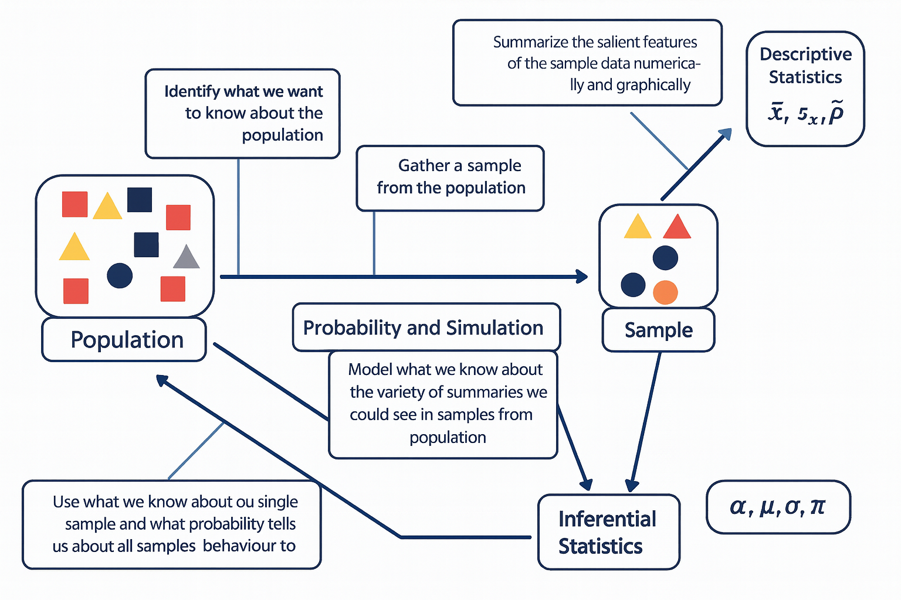
Social Statistics with R
I dedicate this book to my parents — to my late and beloved mother, who gave me love, life, and light, and to my dear father, whose warmth and kindness are the fount from which my spirit is sustained.
1 Chapter 1: Introduction
Welcome!
This book is based on my lecture notes for the Social Statistics courses that I have taught since 2014 at various institutions, including New York University, the University of Wisconsin–Madison, and the University of Pennsylvania. At NYU, I served as a statistics tutor while pursuing a master’s degree in economics and sociology. During my doctoral studies at the University of Wisconsin–Madison, I was a teaching assistant for several statistics courses offered by the Sociology and Statistics Departments. Toward the end of the Ph.D. program, I also served as the instructor of record for the Social Statistics course. At the University of Pennsylvania, during my postdoctoral fellowship, I taught a capstone data science course focusing on machine learning techniques for master’s students.
Since joining the University of California, Santa Barbara, as a faculty member in the Department of Sociology, I have decided to compile my lecture notes into a publicly accessible, user-friendly book with integrated R-Studio software applications—one that other instructors can readily use for their own courses.
It is my hope that this book proves useful to both instructors and students who teach and learn in large undergraduate courses in social statistics—courses that demand both conceptual clarity and practical applications of statistical learning with a widely used software such as R-Studio. The materials assembled here are intended to be user-friendly and accessible, to provide a coherent framework for teaching statistical reasoning in the social sciences, and to encourage students to view data not as an abstraction but as a language through which social realities can be understood and examined. As such, most of the examples are social scientific in nature. It is made available online prior to its final print publication, and I intend for it to pass through several iterations of refinement. I welcome all forms of feedback from colleagues across institutions worldwide.
Statistical Learning
Statistical tools are the methodological backbone of modern quantitative social science. They enable us to organize, analyze, and translate complex data about the world into sensible and measurable insights. The sociological tradition often seeks to quantify disparities in income, wealth, health, education, social capital, cultural capital, and civic participation among others to delineate how individuals are stratified or grouped into distinct “strata.” Statistical learning makes it possible for social and natural scientists to test hypotheses whose findings are widely applicable and generalizable. Social scientists employ tools such as surveys to glean information about economic, social, and political spheres of life. The data from those surveys are cleaned and analyzed, a set of hypotheses are generated, and the results of those analyses are disseminated.
Advances in the social sciences, much like in natural science and engineering, are propelled by the systematic collection and analysis of data. Yet social phenomena are inherently dynamic and variable: the same survey, experiment, or observational study can produce different outcomes even under different conditional backgrounds. This variability arises not only from the complex interplay of human behavior, institutions, and environments. In this context, social statistics serves as the critical toolkit for navigating uncertainty, enabling researchers to detect meaningful patterns amid individuals and contextual differences.
Because social data are often complex and multidimensional, the proper design and analysis of studies demand rigorous statistical methods. Social statistics thus equip scholars to create valid sampling strategies, develop robust estimation models, and apply techniques that distinguish ‘effects’ from random variation or bias. By doing so, it allows researchers to draw reliable and generalizable conclusions about the social world. Statistical learning therefore allows social scientists to delineate broad trends in important issues—issues such as gender inequality, income mobility, poverty, unemployment, homelessness, political partisanship, and civic participation among others—and hopefully, for policy-makers to pay attention in order to mitigate them. In short, social statistics is indispensable for transforming messy social realities into concrete evidence that advances knowledge and informs decisions at the highest levels of research and governance.
With the rise of information technology and the unprecedented availability of high-quality data, we are now able to study the social world in ways that were once unimaginable. Fluency in statistical learning has therefore become essential—not only for methodological rigor but also for professional versatility across disciplines and industries. Methodologically, it enables us to design stronger studies, manage large and complex data sets, and apply advanced analytical techniques that enhance the credibility and generalizability of our findings. Mastery of social statistics allows us to draw defensible conclusions, engage meaningfully in interdisciplinary debates, inform public policy, and contribute to the cumulative knowledge that shapes our understanding of society.
At the heart of statistical reasoning lie several foundational concepts that structure how we make sense of data. Population and sample distinguish between the broader group we wish to understand and the subset from which we gather information. Variables represent measurable characteristics that can vary across individuals or cases, while distributions describe how these values are spread or concentrated. Measures of central tendency—such as the mean, median, and mode—summarize where the center of the data lies, whereas measures of dispersion, including variance and standard deviation, capture how widely observations differ from that center. Correlation quantifies the strength and direction of association between variables, and regression extends this by modeling how changes in one variable predict changes in another. Sampling error and bias remind us that our observations are imperfect reflections of reality, prompting the need for confidence intervals and hypothesis tests to assess the uncertainty inherent in our estimates. Finally, while both association and causation are valuable concepts in social inquiry and scientific knowledge, the distinction between them is crucial. This difference highlights the importance of moving beyond merely observing patterns (association) to understanding the underlying mechanisms that produce those patterns (causation).
Right at the outset, it is crucial to have a few key terminologies clearly defined. These terminologies will repeat throughout the book, so it is imperative to have a precise understanding of them.
Population
In statistical reasoning, a population refers to the entire set of entities, individuals, or cases about which we wish to draw conclusions. It represents the full universe of possible observations relevant to a question—whether that universe is as vast as all citizens of a country or as specific as all firms in a given industry. The population is the conceptual target of inference: the reality we aim to understand, even if it cannot be fully observed.
Sample
A sample is a smaller subset of the population from which data are actually collected. Because studying an entire population is in most cases impossible, sampling provides a practical means of acquiring knowledge about the whole through a manageable portion. When properly drawn, a sample reflects the essential characteristics of its population, allowing researchers to make informed and generalizable claims about larger social patterns. In fact, the term statistics itself signifies drawing on a sample from a population.
Variables
A variable is any characteristic or attribute that varies across individuals, groups, or time. In social research, variables can represent attitudes, income, education, or behaviors. They are the building blocks of analysis, allowing us to measure and model the relationships that structure the social world.
Random Variable
A random variable formalizes uncertainty by assigning numerical values to outcomes of a random process. It links probability theory to empirical data, translating abstract uncertainty into quantifiable form. In social science research, a random variable allows us to treat outcomes—such as voting behavior, income, or test performance—as realizations of underlying stochastic processes rather than fixed quantities.
Distribution
A distribution describes how values of a variable are spread across observations. It reveals the underlying shape of the data—whether clustered, symmetric, or skewed—and allows researchers to identify patterns, outliers, and regularities that might otherwise go unnoticed.
Central Tendency
Measures of central tendency, such as the mean, median, and mode, summarize where the center of a distribution lies. They offer a concise description of the “typical” case within a dataset, providing a first glimpse of the regularities (or irregularities) that statistics seek to uncover.
Dispersion
While measures of central tendency describe where values converge, measures of dispersion—including range, variance, and standard deviation—capture how much they differ. Dispersion quantifies inequality, diversity, or heterogeneity within a population, dimensions that are central to social inquiry.
Correlation
Correlation measures the strength and direction of association between two variables. It tells us whether, and to what extent, they move together—positively or negatively—without necessarily implying that one causes the other.
Regression
Regression analysis extends correlation by modeling how changes in one variable are associated with changes in another, holding other factors constant. It is among the most powerful tools for disentangling complex social relationships and estimating the independent effect of specific factors.
Sampling Error and Bias
All empirical research must confront sampling error and bias. Sampling error arises because we study only a portion of the population, while bias occurs when the sample systematically differs from the population it seeks to represent. Recognizing and minimizing these sources of error is essential for valid inference.
Law of Large Numbers
The Law of Large Numbers states that as the size of a sample increases, its average tends to converge toward the true population mean. This principle underlies the logic of statistical inference: the more observations we gather, the more stable and reliable our estimates become. It provides the mathematical reassurance that, despite randomness in individual outcomes, patterns emerge with regularity and consistency in aggregate.
Central Limit Theorem
Closely related to the Law of Large Numbers, the Central Limit Theorem explains why sampling distributions of the mean tend to approximate a normal distribution as sample size grows, regardless of the shape of the underlying population. This remarkable property enables researchers to apply probability-based inference widely across the social sciences. It is the theoretical bridge that makes estimation, confidence intervals, and hypothesis testing possible—transforming randomness into a source of knowledge rather than noise.
Confidence Intervals and Hypothesis Testing
Because data are inherently uncertain, confidence intervals and hypothesis tests provide a framework for assessing the precision of our estimates and the likelihood that observed patterns are due to chance. They are central to the scientific ethos of quantifying uncertainty rather than ignoring it. A confidence interval (CI) gives an estimated range of plausible values for a population parameter, constructed so that, over many samples, a fixed proportion (the confidence level) of such intervals would contain the true parameter. In the simplest term, a confidence interval is a range of values, derived from sample data, that is likely to contain the true value of an unknown population parameter with a specified level of confidence.
Association and Causation
Finally, the distinction between association and causation lies at the core of scientific reasoning. Association (or correlation) refers to a statistical relationship between two or more variables — that is, when changes in one variable are systematically related to changes in another. For instance, X and Y co-occur: they increase or decrease in tandem with each other to a certain degree. Causation, by contrast, implies a directional, mechanistic, or counterfactual dependency: changes in one variable produce or influence changes in another.
In this introductory chapter, we examined the fundamental definitions of essential statistical concepts. Chapter 2 extends this discussion by addressing the measurement of key summary statistics—such as the mean, median, and mode, variance, minimum, and maximum, etc.
2 Chapter 2: Descriptive Statistics
The first step towards understanding statistical patterns is to learn the data at hand themselves. To learn the dataset we are working on, we must draw on descriptive analysis: I define them as a set of visualization techniques to make sense of patterns. Of course, descriptive analyses are not, by any means, limited to visualization techniques. Quite often descriptive tables are equally and even more telling and powerful.
Descriptive statistics summarize, organize, and describe the main features of a dataset.They provide a quantitative overview without making inferences about a larger population. In what follows, I detail the key elements of descriptive statistics.
Variable: A characteristic that differs from one subject/object to another.
Data: a set of values (numbers or labels) variables can assume.
Population: the entire collection of objects [units] of interest
- Sometimes we can identify all units (if population is students in a course), but often populations of interest are too large to study entirely
Mean (Arithmetic Average):
\[ \bar{x} = \frac{\sum_{i=1}^{n} x_i}{n} \]
Median: The middle value when the data are ordered.
Mode: The most frequently occurring value.
Range:
\[ \text{Range} = \max(x) - \min(x) \]
Variance:
\[ s^2 = \frac{\sum_{i=1}^{n} (x_i - \bar{x})^2}{n - 1} \]
Standard Deviation:
\[ s = \sqrt{s^2} \]
Interquartile Range (IQR):
\[ IQR = Q_3 - Q_1 \]
3. Measures of Shape
These describe the distribution pattern of the data.
Skewness: Indicates the degree of asymmetry (left or right skew).
Kurtosis: Indicates how peaked or flat the distribution is compared to a normal curve.
4. Frequency and Distribution Summaries
These are also additional tools for descriptive statistics and show how data values are distributed.
- Frequency tables and relative frequencies
- Histograms, bar charts, and pie charts
- Stem-and-leaf plots and box plots
5. Position or Percentile Measures
These describe the relative standing of observations within the dataset.
- Percentiles: Divide the data into 100 equal parts.
- Quartiles: Divide the data into four equal parts (Q1, Q2, Q3).
Summary:
Descriptive statistics capture four main aspects of data — central tendency, variability, shape, and distribution — providing a clear and structured overview of the dataset’s characteristics.
The diagram below illustrates the fundamental relationship between populations, samples, probability, and the two main branches of statistics — descriptive and inferential statistics.
The process begins with the population, representing the entire group of interest. Researchers first identify what they want to know about this population, then collect a sample — a smaller, representative subset of that population.
Descriptive statistics are then used to summarize the sample data both numerically and graphically, using measures such as the sample mean (\(\bar{x}\)), sample standard deviation (\(s_x\)), and sample proportion (\(\hat{p}\)). Next, probability and simulation help model the expected variability among possible samples that could be drawn from the population, allowing us to understand how sample summaries might behave due to random chance.
Finally, through inferential statistics, we use what we know from our sample — along with probability theory — to make educated, probabilistic statements about population parameters, such as the population mean (\(\mu\)), standard deviation (\(\sigma\)), proportion (\(\pi\)), and significance level (\(\alpha\)).
In essence, this figure captures how statistical reasoning flows from data collection and description to modeling and generalization — moving from what we observe in a sample to what we infer about the entire population.The diagram below is one way to think through statistics when we seek to answer a question about the social world.
2.1 Collecting Data
The stepping stone towards conducting statistical analysis is collecting data. The elegance of good research begins not with equations or estimation models, but with the deliberate act of collecting or finding the right information. Whether searching for the relevant survey, locating a reliable public dataset, or designing your own instrument to capture social realities, data collection is the foundation upon which all inference rests. This process is both scientific and creative—it requires knowing what questions matter, where credible evidence resides, and how to translate abstract ideas into measurable variables. Without the discipline of gathering data carefully, analysis becomes speculation. But when we gather the right data—accurate, representative, and conceptually aligned—the analytical process becomes not only possible but powerful.
What major survey datasets are publically available? Here are a list of a few major survey datasets that are regularly used in social sciences.
American National Election Studies (ANES) * US-based
The American National Election Studies (ANES) are a cornerstone of political behavior research in the United States. Established in 1948 and jointly administered by Stanford University and the University of Michigan, ANES surveys collect rich pre- and post-election data to understand how citizens form opinions, participate in politics, and make electoral choices. The ANES includes detailed measures of political ideology, media exposure, partisanship, policy preferences, and social identity, along with contextual information about candidates and campaigns. Its time-series (i.e., repeated over years) design—fielded every national election cycle—allows researchers to trace the evolution of political attitudes and polarization in the U.S. over more than seven decades. Because of its rigorous sampling, extensive questionnaire design, and continuity of measures, ANES remains an important dataset for studying democratic engagement, voter behavior, and the sociopolitical landscape.
Current Population Survey (CPS) * US-based
The Current Population Survey (CPS), jointly conducted by the U.S. Census Bureau and the Bureau of Labor Statistics, is the primary source of labor force statistics in the United States. Since its inception in the 1940s, the CPS has provided monthly data on employment, unemployment, earnings, and demographic characteristics for a representative sample of roughly 60,000 U.S. households. In addition to the core labor force questions, the CPS includes periodic supplements that cover vital social topics—such as education, fertility, civic participation, and voting behavior (the CPS Voting and Registration Supplement). Because of its frequency, large sample size, and policy relevance, the CPS is essential not only to economists and policymakers but also to sociologists and demographers studying inequality, class mobility, and household dynamics in real time.
Panel Study of Income Dynamics (PSID) * US-based
The Panel Study of Income Dynamics (PSID), begun in 1968 at the University of Michigan’s Institute for Social Research, is one of the longest-running household panel studies in the world. Unlike cross-sectional surveys, the PSID follows the same families and their descendants over decades, enabling the study of intergenerational mobility, family formation, and long-term income dynamics. Its design captures both economic and social dimensions of life—income, employment, wealth, health, and housing—allowing researchers to trace how structural inequality unfolds across generations. The PSID’s intergenerational structure has made it particularly valuable for studying persistent poverty, wealth accumulation, and social stratification within the U.S., and its supplements on child development and transition to adulthood add depth to understanding life-course processes.
World Values Survey (WVS) * Cross-National
The World Values Survey (WVS) is an ambitious, long-running project that seeks to map the cultural values and beliefs of people around the globe. Initiated in 1981 and now spanning over 100 countries, the WVS measures attitudes toward democracy, religion, gender roles, economic life, and social trust. Its conceptual foundation builds on the idea that cultural change and economic development are interconnected—an idea most famously articulated by Ronald Inglehart’s theory of postmaterialist value change. Conducted in waves approximately every five years, the WVS provides a comparative framework to examine how value systems chaneg across nations.
A Key Distinction Between the Types of Studies
A central distinction in social research lies between studies that intervene in the social world and those that observe it as it naturally unfolds. Experimental studies are designed to establish causal relationships: researchers deliberately manipulate one or more variables—such as exposure to a message, allocation of resources, or participation in a program—and then observe the resulting changes in outcomes. In contrast, observational studies refrain from such manipulation; they document social behavior, attitudes, or outcomes as they occur in real life. While experiments offer stronger leverage for identifying causality through control and randomization, observational designs provide insights into complex social processes that cannot be ethically or practically manipulated. Recognizing this distinction is fundamental, as it shapes how researchers interpret evidence, evaluate validity, and generalize findings to broader populations.
Experiment
In social science, an experiment is a systematic study in which the researcher deliberately introduces an intervention or treatment in order to observe its causal effect on an outcome. The key feature of experimentation is control—researchers manipulate one or more independent variables while holding other factors constant, allowing for the identification of causal relationships.
Example: A sociologist wants to examine whether exposure to news stories about economic inequality affects people’s support for redistributive policies. Participants are randomly assigned to read one of five news articles—each emphasizing a different narrative about inequality—and then asked about their policy preferences. Because the researcher actively manipulates what participants are exposed to, this constitutes an experiment.
Observational Study
An observational study involves collecting data without manipulating or altering the social processes under investigation. Researchers observe patterns, behaviors, or associations as they naturally occur, rather than imposing an intervention. This design is often used when experimental manipulation would be unethical or impractical.
Example: A political scientist wants to know whether residents of wealthier neighborhoods are more likely to vote. They collect information from voter registration records and census data, comparing turnout rates across neighborhoods with different socioeconomic profiles and characteristics. Because the researcher merely observes existing differences without assigning any treatment, this is an observational study.
Sample
A sample is a subset of a broader population that researchers study in order to make inferences about that population. Because it is rarely possible to collect information from every individual in a population, sampling allows researchers to study social phenomena efficiently while maintaining representativeness.
Simple Random Sample (SRS)
A simple random sample (SRS) is a sampling method in which every possible subset of the population of a given size has an equal chance of being selected. This procedure minimizes selection bias and ensures that observed patterns can be attributed to the population rather than to systematic differences in who was included.
Example: To study public attitudes toward climate change, a researcher draws a random sample of 1,500 adults from a national database where each individual has an equal probability of being chosen. This kind of sampling forms the statistical foundation for most nationally representative surveys in the social sciences, such as the General Social Survey or European Social Survey.
2.2 Summarizing Data
In any empirical investigation, one of the first steps is to summarize information about the units or individuals we study. Social scientists often distinguish between characteristics of an entire population and those of a sample drawn from it. The key concepts here are parameters and statistics—two closely related but conceptually distinct ideas that link description and inference.
A parameter is a numerical summary that describes a true characteristic of the entire population—the full set of individuals, organizations, or events that constitute our field of interest. In practice, parameters are almost always unknown because it is rarely feasible to collect information on every member of a population. For example, if we could measure the average income of all households in the United States, that value would represent a population parameter. Likewise, the mean level of political trust among all adults in a country, or the proportion of citizens who voted in a specific election, are parameters describing entire populations.
A statistic, by contrast, is a numerical summary computed from a sample—a smaller subset of observations selected from the population. Because researchers typically rely on samples to study larger populations, sample statistics serve as our best estimates of the unknown population parameters. For instance, the average income calculated from a nationally representative survey, such as the General Social Survey, is a sample statistic that approximates the population mean. Similarly, if we surveyed a thousand voters to estimate the proportion who support a particular candidate, that proportion would be a statistic, standing in for the true but unknown population value.
The relationship between populations and samples is often visualized as a flow of information: on one side lies the broad and complex population we seek to understand, and on the other, the smaller and more manageable sample we can actually observe. Between the two stands the domain of probability, which provides the theoretical bridge linking what we see to what we infer. Probability theory helps us quantify how much variation we might expect if we were to draw many different samples from the same population. Through probibility simulation and modeling, researchers can approximate this sampling variability, giving rise to measures of uncertainty such as confidence intervals and standard errors.
Together, these elements—parameters and statistics, sampling and inference—form the intellectual architecture of social statistics. They remind us that every conclusion we draw about society rests on a bridge between what we observe and what we infer, linking empirical data to theoretical understanding through the language of probability.
2.3 Types of Variables/Data
In social science research, variables can take many forms depending on what they measure and how those measurements are expressed. Distinguishing among types of data is crucial because it determines which statistical summaries, visualizations, and models are appropriate for analysis. Broadly speaking, data can be classified into two overarching types: Continuous and Categorical.
Continuous Data
Quantitative data consist of numerical values that express how much or how many of something there is. These values exist on a numeric scale with meaningful magnitudes, allowing for arithmetic operations such as addition or averaging. Quantitative data can be further divided into two subtypes: Discrete data represent countable quantities that take on distinct, separate values—often integers—with gaps between them. Examples include the number of children in a household, the count of protests in a county, or the number of campaign events attended by a candidate. Because these variables reflect counts, fractional values have no substantive meaning.
Continuous data represent measurements that can, in principle, take on any value within a given interval. There are no inherent gaps in the scale; instead, the precision of measurement depends on the accuracy of the instrument or method used. Examples include age (measured in years, months, or days), household income, or hours of television watched per week. Continuous variables are especially common in survey and administrative data when researchers measure social or economic quantities along a continuum.
Categorical Data
Categorical data, by contrast, represent values that differ in kind rather than degree. These data describe membership in categories, groups, or qualitative states that cannot be meaningfully ordered or subjected to arithmetic operations. Each distinct category is referred to as a level of the variable. Examples include gender identity, religious affiliation, race or ethnicity, political party, or preferred news source.
Within categorical data, researchers often distinguish between:
Nominal variables, where categories have no intrinsic order (e.g., political party: Democrat, Republican, Independent, Other), and Ordinal variables, where categories imply a rank or order but the intervals between them are not uniform (e.g., ideology scale: “very liberal,” “liberal,” “moderate,” “conservative,” “very conservative”).
An Illustrative Example
Consider a political scientist preparing to study voting behavior ahead of a national election. They design a survey collecting a range of variables about registered voters:
- Party identification (Democrat, Republican, Independent, Other) — categorical, nominal
- Political ideology (very liberal to very conservative) — categorical, ordinal
- Voter turnout history (number of elections voted in during the past decade) — quantitative, discrete
- Campaign donations (dollar amount contributed to political campaigns) — quantitative, continuous
- Primary news source (television, online, print, social media) — categorical, nominal
- Age (in years) — quantitative, continuous
- Education (less than high school, high school, some college, college degree, graduate degree) — categorical, ordinal
This list is meant to provide the level of measurement for each variable—nominal, ordinal, binary, discrete, or continuous.
Understanding these distinctions is more than a technical exercise: it informs every step of analysis, from selecting the right summary statistics and visualizations (e.g., bar charts versus histograms) to choosing the appropriate inferential tests (e.g., chi-square, correlation, or regression). In short, recognizing the type of data at hand is a foundational skill for designing, interpreting, and communicating sound social research.
2.4 In-Class Exercise (1): Identifying Variable Types
In this exercise, you will practice classifying variables by their level of measurement—a foundational skill for all empirical social scientists. The table below lists variables drawn from a hypothetical study of registered voters in an upcoming general election. Each variable reflects a different kind of information political researchers might collect: from demographic traits and political attitudes to behaviors such as voting and campaign participation.
Your task is to identify the correct variable type for each entry in the table—whether it is nominal, ordinal, binary, discrete, or continuous. Think carefully about what distinguishes each level of measurement. Ask yourself:
- Does the variable represent categories or quantities?
- If it’s categorical, does it have a natural order (ordinal) or not (nominal)?
- If it’s numeric, does it take on only whole numbers (discrete) or any value along a scale (continuous)?
- Discuss your reasoning with your classmates and be prepared to explain how your classification would influence the choice of graphs or statistical models in a real research project.
| Variables / Characteristics | Variable Type |
|---|---|
| Party identification (Dem/Rep/Ind/Other) | __________ |
| Ideology (1 = liberal … 7 = conservative) | __________ |
| Voted in last midterm (Yes/No) | __________ |
| Age (in years) | __________ |
| Household income bracket | __________ |
| Number of political meetings attended last year | __________ |
| Primary news source (TV/Online/Print/Radio) | __________ |
| Zip code / precinct | __________ |
| Support for Policy X (0–100 thermometer) | __________ |
| Campaign donations last 12 months (USD) | __________ |
2.5 In-Class Exercise (2):: The 1936 FDR–Landon Poll
During the 1936 U.S. presidential election between Democratic incumbent Franklin D. Roosevelt (FDR) and Republican challenger Alf Landon, The Literary Digest magazine conducted a massive poll to predict the outcome. The magazine mailed 10 million questionnaires to names drawn from its subscriber list, telephone directories, and automobile registration records. About 2.3 million people responded. Based on these replies, the Digest predicted that Landon would win by a landslide of 370 electoral votes.
In contrast, George Gallup, using a carefully designed random sample of about 50,000 respondents, correctly predicted that Roosevelt would win decisively.
This example illustrates how even a very large dataset can lead to inaccurate conclusions if the sample is not representative of the population of interest. It highlights the importance of sampling design and bias in survey research.
Questions:
- Identify the population(s) and parameter(s) of interest to The Literary Digest.
- Was the data collection observational or experimental? Explain your reasoning?
- Describe the sample and the type of data obtained
- What does this example teach us about the relationship between sample size and sample quality in public opinion research?
Extension Activity: Have students compare The Literary Digest poll to a modern equivalent, such as online opt-in surveys. Discuss how selection bias can still occur today even with large datasets.
2.6 A First Look at R and RStudio
Part 1 — Set up your workspace
2.7 A First Look at R and RStudio
This chapter guides you through setting up the necessary software for this book. We strongly recommend using RStudio Projects to manage your files, which ensures all examples are reproducible.
Part 1 — Set Up Your Workspace 🛠️
1. Prepare Your Course Folder
Start by creating a main location for all your files.
- Create a main class folder on your computer (e.g., on your Desktop or in Documents). Name it something easy to find, like
Stats_BookorSOC205A_Data. - All files, projects, and data for this course will be saved inside this folder.
2. Install the Core Software
You need both R (the statistical programming language) and RStudio (the user interface, or IDE).
Important
Installation Order Matters! You must install R first, and then RStudio Desktop.
- Install R (The Language): Search “Install R” and follow the link to CRAN (The Comprehensive R Archive Network).
- Install RStudio Desktop (The IDE): Search “Install RStudio Desktop” and select the Free/Open Source edition.
3. Start RStudio and Create a Project
RStudio Projects keep your files and paths organized, which is essential when compiling a book.
- Launch RStudio.
- Go to the menu: File \(\to\) New Project \(\to\) New Directory \(\to\) New Project.
- Name the project (e.g.,
lecture-1). - For the location, choose the main class folder you created in Step 1.
- Click Create Project.
4. Sanity Check: Verify R is Working
Use the R Console to confirm that R is installed correctly and is accessible by RStudio.
- Look at the R Console (usually the bottom-left pane).
- Type the following command exactly and press Enter:
To begin, create a new R Markdown file in RStudio. From the menu, select File ▸ New File ▸ R Markdown…, and when prompted, give your document a title such as Lecture 1 Practice. You may choose any output format—Word or PDF is recommended for simplicity, though HTML also works. Once the file opens, save it immediately into your designated class folder with a clear name like Lecture1.Rmd. Next, scroll through the automatically generated template and delete everything beginning with the line ## R Markdown to the end of the file, leaving only the YAML header at the top. This ensures you’re starting with a clean workspace. Finally, click Knit to compile the document. If your setup is correct, a Word, PDF, or HTML file with the same name should appear in your folder. Open it to confirm that RStudio successfully created your first document.
With your document ready, you will now explore one of R’s classic built-in datasets, called iris. This dataset contains measurements of 150 individual irises, divided into three species. To view the data, create a code chunk—either by selecting Code ▸ Insert Chunk from the menu or by typing the shortcut (Ctrl+Alt+I or ⌘⌥I). Inside this code chunk, type print(iris) and run the chunk to display the full dataset in the console. Observe that there are 150 rows representing flowers and 5 variables: (1) Sepal Length, (2) Sepal Width, (3) Petal Length, (4) Petal Width, and (5) Species. The first four variables are quantitative and continuous, while Species is a categorical variable with three distinct levels (setosa, versicolor, and virginica).
Next, examine the structure of the dataset by typing str(iris) in the same or a new code chunk. Running this command reveals the data types of each variable and confirms your earlier observations about their nature—numeric for the first four and factor (categorical) for the fifth. To go a step further, type summary(iris) and execute the command. This function provides numerical summaries for each quantitative variable—displaying the minimum, first quartile, median, mean, third quartile, and maximum—and shows counts for each level of the categorical variable. Discuss with students how summary() automatically adjusts its output depending on variable type, giving a concise overview of both numeric distributions and categorical frequencies.
Once you have run and interpreted these commands, include short written explanations in your R Markdown document to describe what each function does and what you observe in the results. When finished, knit the file again and check the output. You now have your first reproducible R document, complete with code, output, and interpretation. oduce and/or explain your code outside of the code chunk. Knit the word document.
2.8 Working With Real World Dataset: The Iris Data
The Iris dataset contains measurements of iris flowers collected to study how physical characteristics vary across different species. Originally compiled by the British statistician and biologist Ronald A. Fisher in 1936, the dataset was introduced in his classic paper “The Use of Multiple Measurements in Taxonomic Problems.” Fisher used these data to demonstrate one of the earliest applications of discriminant analysis, a statistical method for classifying observations into categories based on quantitative traits. The dataset includes 150 individual iris flowers, divided equally among three species:
*Iris setosa
*Iris versicolor
*Iris virginica
For each flower, Fisher measured four quantitative variables:
*Sepal Length (in centimeters)
*Sepal Width (in centimeters)
*Petal Length (in centimeters)
*Petal Width (in centimeters)
These measurements describe the geometry of the flowers’ petals and sepals—two key parts of the blossom that vary visibly across species. Using these traits, Fisher showed how statistical models could classify species based on measurement patterns, a concept that later became foundational in machine learning and pattern recognition.
Today, the Iris dataset comes preloaded with R and most statistical software. It continues to serve as a pedagogical example for teaching data exploration, visualization, descriptive statistics, classification, and clustering. Although small in size, it captures many of the essential elements of real-world data: multiple variables, distinct categories, and measurable variation within and between groups.
The dataset was originally introduced by the British biologist and statistician Ronald A. Fisher in his 1936 paper, “The Use of Multiple Measurements in Taxonomic Problems.” Fisher used these data to demonstrate one of the first applications of discriminant analysis, a method for classifying observations into groups.
In R, the data are stored as a data frame (a rectangular table similar to a spreadsheet). Because it’s built into R, you can explore it right away:
2.9 Eseential Commands in R
Accessing help
Use ? or help() to pull up documentation; ?? searches help topics.
?iris # help page for the dataset
?data.frame # help page for data frames
help("subset") # equivalent
??"linear model" # fuzzy search across help filesLearning the dataset - Summary Statistics
# loads the dataset (though usually it’s already available)
data(iris)
# shows the first six rows - get a sens eof the dataset
head(iris) Sepal.Length Sepal.Width Petal.Length Petal.Width Species
1 5.1 3.5 1.4 0.2 setosa
2 4.9 3.0 1.4 0.2 setosa
3 4.7 3.2 1.3 0.2 setosa
4 4.6 3.1 1.5 0.2 setosa
5 5.0 3.6 1.4 0.2 setosa
6 5.4 3.9 1.7 0.4 setosaInformation about objects
str(), class(), names(), dim(), and summary() give fast overviews.
# structure (types + preview) - it gives you an overview of the dataset
str(iris) 'data.frame': 150 obs. of 5 variables:
$ Sepal.Length: num 5.1 4.9 4.7 4.6 5 5.4 4.6 5 4.4 4.9 ...
$ Sepal.Width : num 3.5 3 3.2 3.1 3.6 3.9 3.4 3.4 2.9 3.1 ...
$ Petal.Length: num 1.4 1.4 1.3 1.5 1.4 1.7 1.4 1.5 1.4 1.5 ...
$ Petal.Width : num 0.2 0.2 0.2 0.2 0.2 0.4 0.3 0.2 0.2 0.1 ...
$ Species : Factor w/ 3 levels "setosa","versicolor",..: 1 1 1 1 1 1 1 1 1 1 ...# it tells you the types of dataset you are working with
class(iris) [1] "data.frame"# it tells you the name fo the columns in the dataset
names(iris) [1] "Sepal.Length" "Sepal.Width" "Petal.Length" "Petal.Width" "Species" # it tells you the number of rows and columns your dataset.
dim(iris) [1] 150 5# it tells you the numeric summaries + factor counts
summary(iris) Sepal.Length Sepal.Width Petal.Length Petal.Width
Min. :4.300 Min. :2.000 Min. :1.000 Min. :0.100
1st Qu.:5.100 1st Qu.:2.800 1st Qu.:1.600 1st Qu.:0.300
Median :5.800 Median :3.000 Median :4.350 Median :1.300
Mean :5.843 Mean :3.057 Mean :3.758 Mean :1.199
3rd Qu.:6.400 3rd Qu.:3.300 3rd Qu.:5.100 3rd Qu.:1.800
Max. :7.900 Max. :4.400 Max. :6.900 Max. :2.500
Species
setosa :50
versicolor:50
virginica :50
Using packages
Install once; load each session. (Skip install.packages() on shared lab machines if preinstalled.)
# The first command installs the package. The second command (library) "calls" it.
install.packages("tidyverse") # uncomment if neededThe following package(s) will be installed:
- tidyverse [2.0.0]
These packages will be installed into "~/Documents/UCSB/book/r-book-starter/renv/library/macos/R-4.5/aarch64-apple-darwin20".
# Installing packages --------------------------------------------------------
- Installing tidyverse ... OK [linked from cache]
Successfully installed 1 package in 2.9 milliseconds.library(tidyverse) # loads dplyr, ggplot2, etc.The working directory
# tells you your current working directory
getwd() # setwd("~/Stats_Class") # avoid hard-coding; use Projects instead[1] "/Users/masoudmovahed/Documents/UCSB/book/r-book-starter"Operators (arithmetic, relational, logical, assignment)
# Create two numeric vectors from iris so we can practice operations.
x <- iris$Sepal.Length
y <- iris$Petal.Length
# Add two numeric vectors element-by-element (quick math across rows).
x + y [1] 6.5 6.3 6.0 6.1 6.4 7.1 6.0 6.5 5.8 6.4 6.9 6.4 6.2 5.4 7.0
[16] 7.2 6.7 6.5 7.4 6.6 7.1 6.6 5.6 6.8 6.7 6.6 6.6 6.7 6.6 6.3
[31] 6.4 6.9 6.7 6.9 6.4 6.2 6.8 6.3 5.7 6.6 6.3 5.8 5.7 6.6 7.0
[46] 6.2 6.7 6.0 6.8 6.4 11.7 10.9 11.8 9.5 11.1 10.2 11.0 8.2 11.2 9.1
[61] 8.5 10.1 10.0 10.8 9.2 11.1 10.1 9.9 10.7 9.5 10.7 10.1 11.2 10.8 10.7
[76] 11.0 11.6 11.7 10.5 9.2 9.3 9.2 9.7 11.1 9.9 10.5 11.4 10.7 9.7 9.5
[91] 9.9 10.7 9.8 8.3 9.8 9.9 9.9 10.5 8.1 9.8 12.3 10.9 13.0 11.9 12.3
[106] 14.2 9.4 13.6 12.5 13.3 11.6 11.7 12.3 10.7 10.9 11.7 12.0 14.4 14.6 11.0
[121] 12.6 10.5 14.4 11.2 12.4 13.2 11.0 11.0 12.0 13.0 13.5 14.3 12.0 11.4 11.7
[136] 13.8 11.9 11.9 10.8 12.3 12.3 12.0 10.9 12.7 12.4 11.9 11.3 11.7 11.6 11.0# Ask a yes/no question per row: is Sepal.Length > 6? Returns TRUE/FALSE.
x > 6 [1] FALSE FALSE FALSE FALSE FALSE FALSE FALSE FALSE FALSE FALSE FALSE FALSE
[13] FALSE FALSE FALSE FALSE FALSE FALSE FALSE FALSE FALSE FALSE FALSE FALSE
[25] FALSE FALSE FALSE FALSE FALSE FALSE FALSE FALSE FALSE FALSE FALSE FALSE
[37] FALSE FALSE FALSE FALSE FALSE FALSE FALSE FALSE FALSE FALSE FALSE FALSE
[49] FALSE FALSE TRUE TRUE TRUE FALSE TRUE FALSE TRUE FALSE TRUE FALSE
[61] FALSE FALSE FALSE TRUE FALSE TRUE FALSE FALSE TRUE FALSE FALSE TRUE
[73] TRUE TRUE TRUE TRUE TRUE TRUE FALSE FALSE FALSE FALSE FALSE FALSE
[85] FALSE FALSE TRUE TRUE FALSE FALSE FALSE TRUE FALSE FALSE FALSE FALSE
[97] FALSE TRUE FALSE FALSE TRUE FALSE TRUE TRUE TRUE TRUE FALSE TRUE
[109] TRUE TRUE TRUE TRUE TRUE FALSE FALSE TRUE TRUE TRUE TRUE FALSE
[121] TRUE FALSE TRUE TRUE TRUE TRUE TRUE TRUE TRUE TRUE TRUE TRUE
[133] TRUE TRUE TRUE TRUE TRUE TRUE FALSE TRUE TRUE TRUE FALSE TRUE
[145] TRUE TRUE TRUE TRUE TRUE FALSE# Combine two conditions: long sepals AND species is setosa (both must be true).
x > 6 & iris$Species == "setosa" [1] FALSE FALSE FALSE FALSE FALSE FALSE FALSE FALSE FALSE FALSE FALSE FALSE
[13] FALSE FALSE FALSE FALSE FALSE FALSE FALSE FALSE FALSE FALSE FALSE FALSE
[25] FALSE FALSE FALSE FALSE FALSE FALSE FALSE FALSE FALSE FALSE FALSE FALSE
[37] FALSE FALSE FALSE FALSE FALSE FALSE FALSE FALSE FALSE FALSE FALSE FALSE
[49] FALSE FALSE FALSE FALSE FALSE FALSE FALSE FALSE FALSE FALSE FALSE FALSE
[61] FALSE FALSE FALSE FALSE FALSE FALSE FALSE FALSE FALSE FALSE FALSE FALSE
[73] FALSE FALSE FALSE FALSE FALSE FALSE FALSE FALSE FALSE FALSE FALSE FALSE
[85] FALSE FALSE FALSE FALSE FALSE FALSE FALSE FALSE FALSE FALSE FALSE FALSE
[97] FALSE FALSE FALSE FALSE FALSE FALSE FALSE FALSE FALSE FALSE FALSE FALSE
[109] FALSE FALSE FALSE FALSE FALSE FALSE FALSE FALSE FALSE FALSE FALSE FALSE
[121] FALSE FALSE FALSE FALSE FALSE FALSE FALSE FALSE FALSE FALSE FALSE FALSE
[133] FALSE FALSE FALSE FALSE FALSE FALSE FALSE FALSE FALSE FALSE FALSE FALSE
[145] FALSE FALSE FALSE FALSE FALSE FALSE# Store the average of Sepal.Length so we can reuse it (one number).
x_mean <- mean(x)
# Center each value: “how far is each observation from the average?”
x_centered <- x - x_mean
# Show the first few centered values so I can sanity-check the result quickly.
head(x_centered)[1] -0.7433333 -0.9433333 -1.1433333 -1.2433333 -0.8433333 -0.4433333Getting started with vectors
# Make a tiny numeric vector by hand to see how vectors behave.
v <- c(1, 3.5, 7)
# Tell me how many elements are in this vector.
length(v)[1] 3# Tell me the storage type (numeric, character, logical, etc.).
class(v)[1] "numeric"# Coerce to integer so I see how R converts numeric types.
as.integer(v)[1] 1 3 7# Show unique category labels present in Species (factor levels as characters).
unique(iris$Species)[1] setosa versicolor virginica
Levels: setosa versicolor virginica2.10 Selecting vector elements
# Work with a single numeric column so indexing feels concrete.
x <- iris$Sepal.Width
# Give me the very first value (position 1).
x[1][1] 3.5# Give me the first five values (a range slice).
x[1:5][1] 3.5 3.0 3.2 3.1 3.6# Give me all widths strictly greater than 3.5 (logical filter).
x[x > 3.5] [1] 3.6 3.9 3.7 4.0 4.4 3.9 3.8 3.8 3.7 3.6 4.1 4.2 3.6 3.8 3.8 3.7 3.6 3.8 3.8# Give me the single value that is the maximum (position of the max, then extract).
x[which.max(x)][1] 4.4# Chain two filters: take Sepal.Length from only virginica, then peek at first five.
iris$Sepal.Length[iris$Species == "virginica"][1:5][1] 6.3 5.8 7.1 6.3 6.52.11 Math functions (on numeric columns)
# Central tendency: the typical Petal.Width.
mean(iris$Petal.Width)[1] 1.199333# Robust central tendency (less sensitive to outliers).
median(iris$Petal.Width)[1] 1.3# Distribution landmarks: 25th, 50th, and 75th percentiles.
quantile(iris$Petal.Width, probs = c(.25, .5, .75))25% 50% 75%
0.3 1.3 1.8 # Spread measures: how variable is Petal.Width?
var(iris$Petal.Width)[1] 0.5810063sd(iris$Petal.Width)[1] 0.7622377# Extremes in one shot (min and max).
range(iris$Petal.Width)[1] 0.1 2.5# Linear association strength between two continuous variables.
cor(iris$Sepal.Length, iris$Petal.Length)[1] 0.8717538# Make a tidy, readable number for reporting (rounded mean).
round(mean(iris$Sepal.Width), 2)[1] 3.06# call the package
library(dplyr)
# Keep a clean working copy so the original iris stays untouched.
df <- iris
# Filter rows by conditions, then keep only the columns I care about for this view.
df_small <- df %>%
filter(Sepal.Length > 6, Species != "setosa") %>%
select(Sepal.Length, Petal.Length, Species)
# Create useful ratios that often separate species nicely (new columns).
df_features <- df %>%
mutate(
sepal_ratio = Sepal.Length / Sepal.Width,
petal_ratio = Petal.Length / Petal.Width
)
# Sort rows by a new metric so the most extreme cases float to the top.
df_sorted <- df_features %>%
arrange(desc(sepal_ratio))
# Collapse rows to species-level facts: counts and key summaries for reporting.
by_species <- df %>%
group_by(Species) %>%
summarise(
n = n(),
mean_sepal_len = mean(Sepal.Length),
mean_petal_len = mean(Petal.Length),
sd_petal_wid = sd(Petal.Width),
.groups = "drop"
)
# Print the grouped summary so I can read the species differences at a glance.
by_species# A tibble: 3 × 5
Species n mean_sepal_len mean_petal_len sd_petal_wid
<fct> <int> <dbl> <dbl> <dbl>
1 setosa 50 5.01 1.46 0.105
2 versicolor 50 5.94 4.26 0.198
3 virginica 50 6.59 5.55 0.2752.12 Subseting in R
# Human-readable filtering: keep setosa with Sepal.Length > 5; keep 3 named columns.
subset(iris, Species == "setosa" & Sepal.Length > 5.0,
select = c(Sepal.Length, Sepal.Width, Species)) Sepal.Length Sepal.Width Species
1 5.1 3.5 setosa
6 5.4 3.9 setosa
11 5.4 3.7 setosa
15 5.8 4.0 setosa
16 5.7 4.4 setosa
17 5.4 3.9 setosa
18 5.1 3.5 setosa
19 5.7 3.8 setosa
20 5.1 3.8 setosa
21 5.4 3.4 setosa
22 5.1 3.7 setosa
24 5.1 3.3 setosa
28 5.2 3.5 setosa
29 5.2 3.4 setosa
32 5.4 3.4 setosa
33 5.2 4.1 setosa
34 5.5 4.2 setosa
37 5.5 3.5 setosa
40 5.1 3.4 setosa
45 5.1 3.8 setosa
47 5.1 3.8 setosa
49 5.3 3.7 setosa# Same operation using bracket syntax (what R is doing under the hood).
iris[iris$Species == "setosa" & iris$Sepal.Length > 5.0,
c("Sepal.Length", "Sepal.Width", "Species")] Sepal.Length Sepal.Width Species
1 5.1 3.5 setosa
6 5.4 3.9 setosa
11 5.4 3.7 setosa
15 5.8 4.0 setosa
16 5.7 4.4 setosa
17 5.4 3.9 setosa
18 5.1 3.5 setosa
19 5.7 3.8 setosa
20 5.1 3.8 setosa
21 5.4 3.4 setosa
22 5.1 3.7 setosa
24 5.1 3.3 setosa
28 5.2 3.5 setosa
29 5.2 3.4 setosa
32 5.4 3.4 setosa
33 5.2 4.1 setosa
34 5.5 4.2 setosa
37 5.5 3.5 setosa
40 5.1 3.4 setosa
45 5.1 3.8 setosa
47 5.1 3.8 setosa
49 5.3 3.7 setosa2.13 UC Berkeley Admissions: A Compact Case Study
The UCBAdmissions dataset records graduate admissions at UC Berkeley in Fall 1973, cross-classified by Admit (Admitted/Rejected), Gender (Male/Female), and Dept (A–F). The data are counts—not individual rows—so each combination of (Admit × Gender × Dept) has a frequency. This structure is ideal for learning how to move between tables and data frames, compute margins and conditional proportions, test independence with chi-square, visualize joint and conditional distributions, and fit logistic regressions with frequency weights. A famous feature of this dataset is that aggregate rates suggest women were admitted at lower rates than men; however, within departments the pattern largely reverses or disappears. This is a textbook example of Simpson’s paradox: an association seen in the aggregate can flip (or vanish) once you condition on a confounder (here, department selectivity and application patterns).
Learn the Dataset
This section orients students to the UC Berkeley admissions data and gets it into an analysis-ready shape. We begin by loading a three-way contingency table that records counts by admission outcome, gender, and department. We inspect its structure to understand the dimensions and categories the table contains. Then we convert the multiway table into a tidy data frame so each row represents one unique combination of outcome, gender, and department with an associated count—exactly the form most tools expect for plotting and modeling. A quick glance at the first few rows confirms the variable names and values, and a simple total of the count column verifies that the number of applications is consistent. In short, we’ve transformed a compact but opaque table into a clear, row-wise dataset that’s easy to analyze and visualize.
# Load the built-in table: 3-way (Admit x Gender x Dept) with integer counts.
data(UCBAdmissions)
# See the structure: it's a 'table' with dimensions and factor levels.
str(UCBAdmissions) 'table' num [1:2, 1:2, 1:6] 512 313 89 19 353 207 17 8 120 205 ...
- attr(*, "dimnames")=List of 3
..$ Admit : chr [1:2] "Admitted" "Rejected"
..$ Gender: chr [1:2] "Male" "Female"
..$ Dept : chr [1:6] "A" "B" "C" "D" ...# Turn multiway table into a tidy data frame with one row per cell + a 'Freq' column.
ucb <- as.data.frame(UCBAdmissions)
# Peek at the first rows to understand variable names and counts.
head(ucb) Admit Gender Dept Freq
1 Admitted Male A 512
2 Rejected Male A 313
3 Admitted Female A 89
4 Rejected Female A 19
5 Admitted Male B 353
6 Rejected Male B 207# Sanity check: total applications should equal the sum of frequencies.
sum(ucb$Freq)[1] 4526Descriptive Totals and Admission Rates
These steps build the essential summaries you need before plotting or modeling. First, it collapses the dataset to compare overall admission rates by gender in the aggregate—answering “what fraction of women vs. men were admitted, ignoring departments?” Next, it drills down to the within-department view, computing admission rates for women and men separately inside each department so you can see whether patterns hold once you compare like with like. Finally, it calculates each department’s baseline selectivity—the overall admit rate regardless of gender—so you can rank departments from most to least selective. Together, these summaries set up the core lesson: aggregate gaps can differ from conditional gaps, and understanding both levels is crucial for sound social-science inference.
# Create a 2×2 table of counts aggregated over departments:
# rows = Admit (Admitted/Rejected), cols = Gender (Female/Male).
agg_gender <- margin.table(UCBAdmissions, margin = c(1, 2))
# Convert that 2×2 into conditional proportions *by gender*:
# i.e., within each gender column, divide by that gender’s total applicants.
admits_by_gender <- prop.table(agg_gender, margin = 2)
# Pull just the admitted row so we see “admitted share” for each gender.
admits_by_gender["Admitted", ] Male Female
0.4451877 0.3035422 # For each department (the 3rd dimension of the 3-way table),
# compute the admitted share *by gender* within that department.
by_dept <- apply(UCBAdmissions, 3, function(tab2){
# Inside each department’s 2×2 (Admit × Gender), condition on columns (gender)
# then pick the "Admitted" row to get admitted share by gender.
prop.table(tab2, margin = 2)["Admitted", ]
})
# Transpose so departments become rows and genders become columns (easier to read).
t(by_dept) Admit
Dept Male Female
A 0.62060606 0.82407407
B 0.63035714 0.68000000
C 0.36923077 0.34064081
D 0.33093525 0.34933333
E 0.27748691 0.23918575
F 0.05898123 0.07038123# Also compute each department’s overall selectivity:
# admitted share across all genders within each department.
dept_selectivity <- apply(UCBAdmissions, 3, function(tab2) prop.table(tab2)["Admitted"])
# Print the department selectivity vector to inspect which depts are more/less selective.
dept_selectivity A B C D E F
NA NA NA NA NA NA Data Managemnt Tools
Here, we’re reshaping and summarizing the raw UC Berkeley admissions data so that each row represents a unique combination of department and gender. For every department–gender pair, we total the number of admitted and rejected applicants, calculate how many people applied in total, and prepare the data so that each row is a clean, self-contained summary of that group. The result is a dataset that’s ready for visualization—each row gives a compact snapshot of admissions for that department and gender, making it easy to compare patterns in the plots that follow.
# Load wrangling helpers: dplyr for pipes/grouping; tidyr for wide/long reshaping.
library(dplyr); library(tidyr)
# Start from the tidy data frame (Admit, Gender, Dept, Freq) and make one row per Dept × Gender:
dg <- ucb %>%
# First, get totals by Dept × Gender × Admit (safe even if already unique).
group_by(Dept, Gender, Admit) %>%
summarise(Freq = sum(Freq), .groups = "drop") %>%
# Spread Admit (Admitted/Rejected) into two numeric columns for easy math.
pivot_wider(names_from = Admit, values_from = Freq) %>%
# Total applicants in this Dept × Gender cell = admitted + rejected.
mutate(n = Admitted + Rejected) %>%
# Tell dplyr: treat each row independently so per-row tests/CI work cleanly.
rowwise() %>%
mutate(
# Run a binomial test per row to get a 95% CI for the admitted proportion k/n.
.pt = list(prop.test(Admitted, n)),
# Point estimate: admitted share = k/n.
p_hat = Admitted / n,
# Lower bound of 95% CI from prop.test’s result.
lwr = .pt$conf.int[1],
# Upper bound of 95% CI from prop.test’s result.
upr = .pt$conf.int[2]
) %>%
# Return to regular (non-rowwise) data frame and drop the temporary test object.
ungroup() %>%
select(-.pt)
# Sanity check: make sure the columns we need for plotting exist.
stopifnot(all(c("Dept","Gender","p_hat","lwr","upr") %in% names(dg)))Visualizing the Structure Simple Barplot
This bar chart shows the overall admission rate by gender at UC Berkeley in 1973. Each bar represents one gender, and its height corresponds to the percentage of applicants admitted. The green bar shows the rate for women, and the orange bar shows the rate for men. The percent labels above each bar make the difference clear at a glance.
This visualization distills the data to its most basic 2×2 form—Admit × Gender—providing an aggregate snapshot before looking at differences across departments. It’s an ideal introductory plot for teaching how to summarize multidimensional data into a clear comparison of group proportions. In a single view, students can see the broad pattern that originally sparked debate about gender bias in UC Berkeley admissions—setting up the need for deeper, department-level analysis later on.
# 1) Prepare 2x2 Admit × Gender table with overall admitted proportions
agg2 <- as.data.frame(margin.table(UCBAdmissions, c(1, 2))) |>
tidyr::pivot_wider(names_from = Admit, values_from = Freq) |>
dplyr::mutate(n = Admitted + Rejected,
pct = Admitted / n)
# 2) Neon-inspired, high-contrast palette
flashy_pal <- c("Female" = "#FF1493",
"Male" = "#39FF14")
# 3) Plot with big bars, bold labels, and white background
ggplot(agg2, aes(x = Gender, y = pct, fill = Gender)) +
geom_col(width = 0.72, color = "black", linewidth = 0.8, show.legend = FALSE) +
geom_text(aes(label = scales::percent(pct, accuracy = 0.1)),
vjust = -0.4, size = 6, fontface = "bold", color = "black") +
scale_y_continuous(labels = scales::percent_format(),
limits = c(0, 1),
expand = expansion(mult = c(0, 0.10))) +
scale_fill_manual(values = flashy_pal) +
labs(
title = "Admission Rate by Gender",
subtitle = "UCBAdmissions (Fall 1973) — bright, clear, and bold",
x = NULL, y = "Share admitted"
) +
theme_minimal(base_size = 16) +
theme(
plot.background = element_rect(fill = "white", color = NA),
panel.background = element_rect(fill = "white", color = NA),
panel.grid.major = element_line(color = "grey85", linewidth = 0.4),
panel.grid.minor = element_blank(),
axis.text = element_text(color = "black"),
axis.title.y = element_text(face = "bold"),
plot.title = element_text(face = "bold", hjust = 0.5, size = 18),
plot.subtitle = element_text(hjust = 0.5, size = 13)
)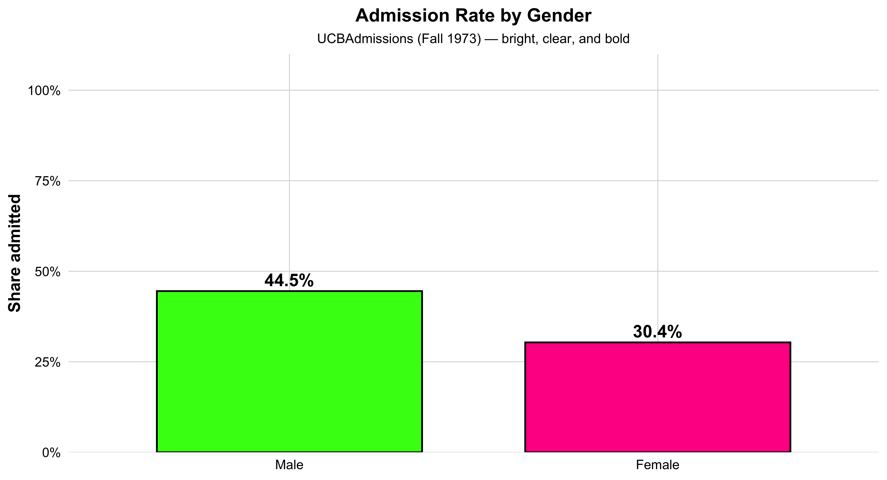
Visualizing the Structure by a Simple Barplot - By Department Divisions
This bar graph shows how selective each department is at UC Berkeley. Each orange bar represents one department, and the height of the bar indicates the percentage of applicants who were admitted. The taller the bar, the higher the admit rate — meaning that department is less selective. Shorter bars show more competitive departments where fewer applicants were admitted. The percentage label above each bar gives the exact admit rate, making it easy to compare departments directly. Overall, the chart gives a clear visual summary of which departments are more or less selective in admissions.
#| label: ucb-admit-bar-gender
#| fig-width: 7
#| fig-height: 4.6
#| message: false
#| warning: false
# admitted share by department (overall, genders combined)
dept_select <- as.data.frame(margin.table(UCBAdmissions, c(1,3))) |>
pivot_wider(names_from = Admit, values_from = Freq) |>
mutate(n = Admitted + Rejected,
pct = Admitted / n)
ggplot(dept_select, aes(Dept, pct)) +
geom_col(width = 0.70, fill = "orange") + # purple from your example vibe
geom_text(aes(label = percent(pct, accuracy = 0.1)),
vjust = -0.35, size = 4.1) +
scale_y_continuous(labels = percent_format(),
expand = expansion(mult = c(0, .08))) +
labs(title = "Department Selectivity (Admitted Share)",
x = "Department", y = "Share admitted",
caption = "UCBAdmissions (Fall 1973)") +
theme_minimal(base_size = 12) +
theme(plot.title.position = "plot",
axis.title.y = element_text(face = "bold"))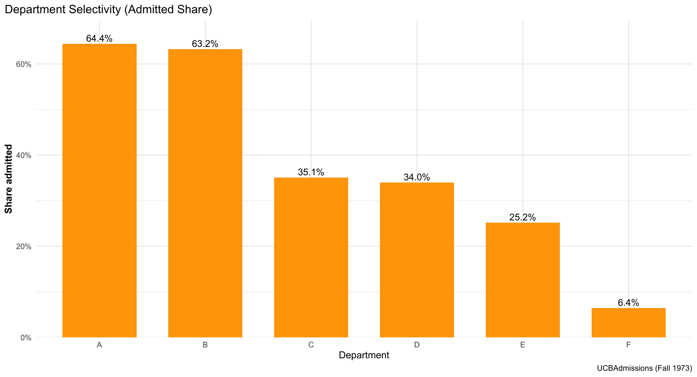
Visualizing the Structure (Mosaic & Bar Plots)
This figure shows a clean, comparative view of admissions outcomes across departments and by gender, using a simple stacked bar chart. Each bar represents one department at UC Berkeley, and the colored segments show how many applicants were admitted versus rejected. Faceting the chart by gender creates two panels—one for women and one for men—so students can easily compare patterns side by side without crowding the display.
The chart emphasizes relative shares visually: taller “admitted” segments mean higher success rates within that department, while smaller ones indicate lower acceptance. By comparing across panels, you can see whether men and women tended to be admitted at similar rates in each department.
This kind of bar chart is one of the most intuitive ways to display categorical outcomes, helping students connect data structure to interpretation. It also reinforces a central lesson in social statistics: before moving to complex models, we first use clear, direct visuals to explore how outcomes differ across groups and institutional contexts.
# Tidy bar plot: admitted proportion by gender within department.
# (Requires ggplot2; included if you loaded tidyverse.)
# Load plotting and formatting helpers (percent labels).
library(ggplot2); library(scales)
# Draw stacked bars per department, scaled to *proportions* (“position = 'fill'”),
# and facet the figure so Female and Male are shown in separate panels.
ggplot(ucb, aes(x = Dept, y = Freq, fill = Admit)) +
# Stack admitted + rejected to 100% within each Dept for each facet.
geom_col(position = "fill") +
# One facet per Gender so we can compare shapes directly.
facet_wrap(~ Gender) +
# Pretty percent labels on the y axis.
scale_y_continuous(labels = percent) +
# Clear title and axis labels so readers know exactly what’s being shown.
labs(title = "Admission Rates by Dept, Faceted by Gender",
y = "Share within Dept", x = "Department", fill = "Decision") +
# Minimal theme keeps focus on the data.
theme_minimal()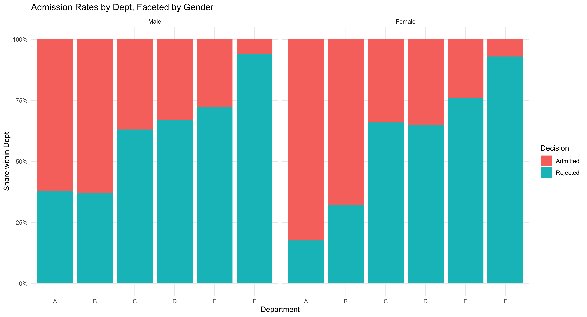
More Sophisticated Way of Visualizing
This chart compares admission rates by gender within each department, while also showing uncertainty. Each department appears on the x-axis with two side-by-side (“dodged”) points: one for female and one for male, where the point’s height is the estimated admitted share in that department. The thick vertical bars through each point are 95% confidence intervals from prop.test, which indicate the range of values consistent with the data; shorter bars mean more precise estimates (usually more applicants), and longer bars mean less precision. You may read it as such: within a given department, compare the two points (who is higher?) and check whether the CIs overlap (is the difference clearly large or could it plausibly be zero?). The y-axis is in percent, capped at 90% to keep the comparisons visually clear. The bright colors and large markers make the pairwise contrast obvious, but the substantive message is about conditional comparisons (gender within department) and uncertainty (CIs). Use this figure to teach students that headline gaps can vanish or flip once you condition on the relevant grouping and account for sampling variability.
# Plot the Dept × Gender admitted share with gaudy colors & bigger markers
ggplot(dg, aes(Dept, p_hat, color = Gender)) +
# Thick, obvious 95% CI bars; widened dodge so points don't overlap
geom_errorbar(aes(ymin = lwr, ymax = upr),
position = position_dodge(width = 0.6),
width = 0.2, linewidth = 1.4) +
# Big, loud points
geom_point(position = position_dodge(width = 0.6),
size = 5.2) +
# Percent axis
scale_y_continuous(labels = scales::percent, limits = c(0, 0.9),
expand = expansion(mult = c(0, 0.03))) +
# Neon, high-contrast palette
scale_color_manual(values = c(
"Female" = "#FF1493", # deep magenta / neon pink
"Male" = "#39FF14" # neon green
)) +
labs(title = "UC Berkeley Admissions by Dept × Gender",
subtitle = "Point = admitted share; line = 95% CI (prop.test)",
x = "Department", y = "Admitted (%)", color = "Gender") +
# Make legend keys big enough to match the jumbo points
guides(color = guide_legend(override.aes = list(size = 5))) + theme_classic()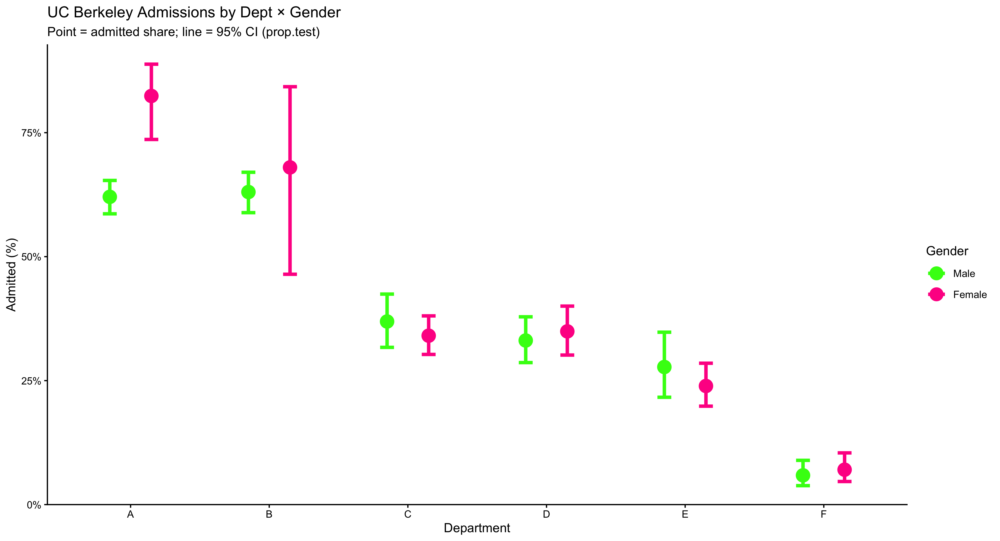
2.14 Even A More Sophisticated Way of Visualization
This figure shows how admission rates are distributed across departments for each gender, not just a single average. The wide, smooth violin shapes trace the full distribution of department-level admit rates—thicker sections mean more departments fall in that range, thinner sections mean fewer. Over the violin, the boxplot adds quick landmarks: the box spans the interquartile range (IQR) where the middle 50% of departments lie, and the line inside the box marks the median. To make that median impossible to miss, a large yellow dot is plotted right on it. Reading the plot is straightforward: compare the height and thickness of the two violins to see differences in spread and typical values, and compare the median dots to see which gender tends to have higher rates across departments. Because the y-axis is in percent and capped at 90%, the common range is easy to scan without squashing the detail. Use this plot when you want students to see distributional differences (center and spread) across groups, not just their means.
# Compare the *distribution* of department-level admitted shares by gender:
# violin = overall shape; box = IQR; black dot = median.
ggplot(dg, aes(Gender, p_hat, fill = Gender)) +
# Smooth density shape of dept-level rates per gender.
geom_violin(alpha = 0.8, color = NA, width = 0.9) +
# Boxplot overlay shows median + IQR without outliers drawn.
geom_boxplot(width = 0.15, fill = "white", outlier.shape = NA) +
# Add a dot at the median for quick comparison.
stat_summary(fun = median, geom = "point", size = 6,
shape = 21, stroke = 1.3, color = "black",
fill = "#FFFF00") +
# Percent axis, clipped to [0, 0.9] with a little visual breathing room.
scale_y_continuous(labels = percent_format(accuracy = 1),
limits = c(0, 0.9),
expand = expansion(mult = c(0, .03))) +
# Manually set fills so the palette matches prior plots.
scale_fill_manual(values = c("Female" = "#FF1493", "Male" = "#39FF14")) +
# Title/subtitle clarify what each glyph represents.
labs(title = "Distribution of Department-Level Admit Rates",
subtitle = "Each violin = spread of departments; dot = median",
x = NULL, y = "Admitted (%)") +
# Clean theme, slightly larger base text, and hide redundant legend.
theme_minimal(base_size = 13) +
theme(legend.position = "none",
plot.title.position = "plot")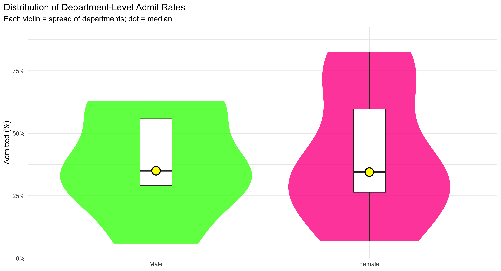
2.15 Visualization Faceted by Department at UC Berkeley
This plot helps us visualize gender differences in admission rates within each department. We start by reshaping the data so that each department has one column for the female admission rate and one for the male admission rate. This “wide” format makes it easy to connect each department’s two values with a line.
Each line links the female rate (on the left) to the male rate (on the right), showing at a glance which gender had the higher admission rate within that department. The slope and direction of the line are what matter: if the line tilts upward to the right, men were admitted at a higher rate; if it tilts downward, women were admitted at a higher rate. The bright neon colors and bold points make the contrast unmistakable. Faceting the plot by department creates one small panel per department, so you can compare patterns across them without clutter. The x-axis simply labels “Female” and “Male,” while the y-axis shows the percent admitted. In short, this figure teaches a key skill in data visualization: how to display paired comparisons across categories while preserving the structure of the data. Each line tells its own small story about one department—and together, they reveal the broader pattern behind the Simpson’s paradox in UC Berkeley admissions.
dg_wide <- dg |>
select(Dept, Gender, p_hat) |>
pivot_wider(names_from = Gender, values_from = p_hat) |>
drop_na()
ggplot(dg_wide) +
# Fat, neon connector lines per department
geom_segment(aes(x = 1, xend = 2, y = Female, yend = Male),
color = "#00FFFF", linewidth = 1.8, lineend = "round", na.rm = TRUE) +
# Female endpoint (left) — jumbo neon pink with black outline
geom_point(aes(x = 1, y = Female),
shape = 21, size = 6.5, stroke = 1.2,
fill = "#FF1493", color = "black", na.rm = TRUE) +
# Male endpoint (right) — jumbo neon green with black outline
geom_point(aes(x = 2, y = Male),
shape = 21, size = 6.5, stroke = 1.2,
fill = "#39FF14", color = "black", na.rm = TRUE) +
# Zoom without dropping rows
coord_cartesian(ylim = c(0, 0.90)) +
# Two labeled x positions with extra breathing room
scale_x_continuous(breaks = c(1, 2), labels = c("Female", "Male"),
expand = expansion(add = 0.25)) +
# Percent labels for y
scale_y_continuous(labels = percent_format(accuracy = 1)) +
# One panel per department
facet_wrap(~ Dept, nrow = 2) +
# --- Keep your original descriptive text exactly ---
labs(title = "Within-Department Admission Rates",
x = NULL, y = "Admitted (%)") +
# Gaudy-friendly theme tweaks with centered title
theme_minimal(base_size = 16) +
theme(
legend.position = "none",
plot.title.position = "plot",
plot.title = element_text(face = "bold", hjust = 0.5), # Center title
plot.subtitle = element_text(hjust = 0.5), # Center subtitle
axis.title.y = element_text(face = "bold"),
panel.grid.major = element_line(linewidth = 0.4, color = "grey80"),
panel.grid.minor = element_blank(),
strip.text = element_text(face = "bold", color = "white"),
strip.background = element_rect(fill = "black", color = NA)
)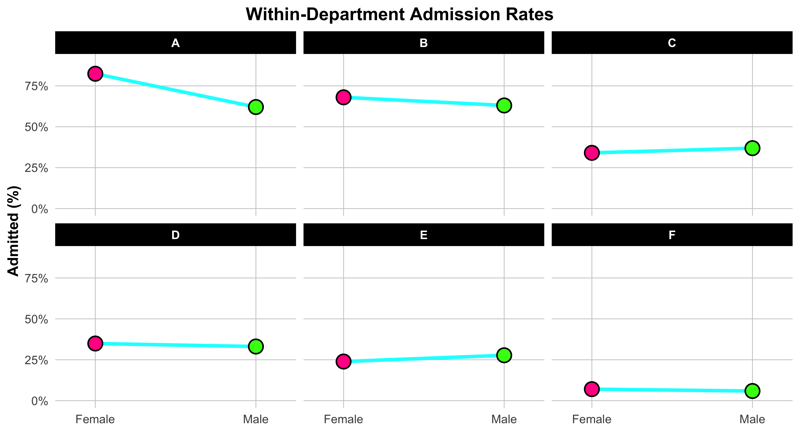
2.16 Selecting Appropriate Graphical Summaries
- Quantitative: histograms/box plots (large n); dot plots (small n).
- Categorical: bar charts or frequency tables; pie charts only when categories are few and distinct.
- Two quantitative: scatterplot.
- One quantitative across groups: box/violin.
- Categorical across groups: contingency/mosaic.
2.17 A Small, Reproducible Example Dataset
n <- 600
ps <- tibble(
respondent = 1:n,
state = sample(state.abb, n, TRUE),
party = fct_infreq(sample(c("Democrat","Independent","Republican"), n, TRUE, prob = c(.36,.28,.36))),
ideology = rnorm(n, mean = ifelse(party=="Democrat",-0.2, ifelse(party=="Republican",0.3,0)), sd = 0.9),
turnout = pmin(pmax(round(rbeta(n, 5, 3) * 100), 0), 100),
income_thou = round(rlnorm(n, log(60), 0.45)),
incumbent_contact = rbinom(n, 1, ifelse(party=="Democrat", .52, .48)),
method = sample(c("Door-to-Door","Phone"), n, TRUE, prob = c(.55,.45)),
donation = round(rlnorm(n, log(200), 1.1))
)
summary(ps) respondent state party ideology
Min. : 1.0 Length:600 Democrat :225 Min. :-2.75901
1st Qu.:150.8 Class :character Republican :223 1st Qu.:-0.59832
Median :300.5 Mode :character Independent:152 Median : 0.01644
Mean :300.5 Mean : 0.01598
3rd Qu.:450.2 3rd Qu.: 0.62120
Max. :600.0 Max. : 2.70922
turnout income_thou incumbent_contact method
Min. :21.00 Min. : 17.00 Min. :0.0 Length:600
1st Qu.:51.75 1st Qu.: 43.00 1st Qu.:0.0 Class :character
Median :64.00 Median : 59.50 Median :0.5 Mode :character
Mean :62.98 Mean : 64.51 Mean :0.5
3rd Qu.:75.00 3rd Qu.: 80.25 3rd Qu.:1.0
Max. :97.00 Max. :216.00 Max. :1.0
donation
Min. : 6.0
1st Qu.: 105.0
Median : 212.0
Mean : 383.8
3rd Qu.: 426.2
Max. :11138.0 Party Identification
This bar chart summarizes a categorical variable by displaying the share of respondents in each party category. Heights encode proportions (y-axis in percent), and direct labels above the bars make exact values easy to read without consulting the axis. Because bars compare parts of a whole, the figure immediately communicates relative size (e.g., whether Democrats and Republicans are similarly common and how Independents compare). This is the preferred display for nominal categories; pies are harder to compare precisely, and frequency tables lack visual punch. Interpretation is purely descriptive—no uncertainty bands are shown—so readers should treat the reported shares as sample estimates that would vary across samples.
party_share <- ps |> count(party) |> mutate(pct = n/sum(n))
party_share |>
ggplot(aes(party, pct, fill = party)) +
geom_col(width = 0.7, show.legend = FALSE) +
geom_text(aes(label = percent(pct, .1)), vjust = -0.3, size = 4.1) +
scale_y_continuous(labels = percent_format(), expand = expansion(mult = c(0, .08))) +
scale_fill_manual(values = pol_pal) +
labs(title = "Party Identification of Respondents", x = NULL, y = "Share of sample",
caption = "Simulated data (Soc 108)")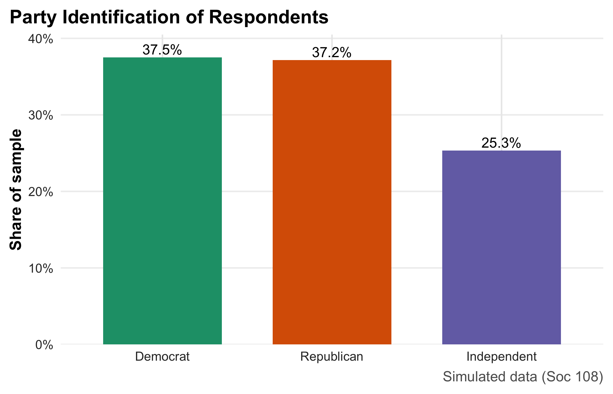
Turnout Distribution
The histogram describes the distribution of a quantitative variable (self-reported turnout as a percentage). Bins partition the scale into intervals; bar area reflects relative frequency (using density on the y-axis so the total area integrates to 1). The vertical solid and dashed lines mark the mean and median, respectively, making skew and outliers visible at a glance (when the two lines separate, the distribution is asymmetric). The chosen bin count balances smoothness and granularity; too few bins hide structure, too many add noise. This plot is ideal for discussing central tendency, spread, and shape before moving to formal statistics.
m <- mean(ps$turnout); md <- median(ps$turnout)
ps |>
ggplot(aes(turnout)) +
geom_histogram(aes(y = after_stat(density)), bins = 25, boundary = 0,
color = "white", fill = pol_pal[3]) +
geom_vline(xintercept = m) +
geom_vline(xintercept = md, linetype = 2) +
annotate("label", x = m, y = 0.02, label = glue("Mean = {round(m,1)}%")) +
annotate("label", x = md, y = 0.018, label = glue("Median = {round(md,1)}%")) +
labs(title = "Distribution of Self-Reported Turnout",
subtitle = "Solid = mean; dashed = median",
x = "Percent", y = "Density",
caption = "Simulated data (Soc 108)")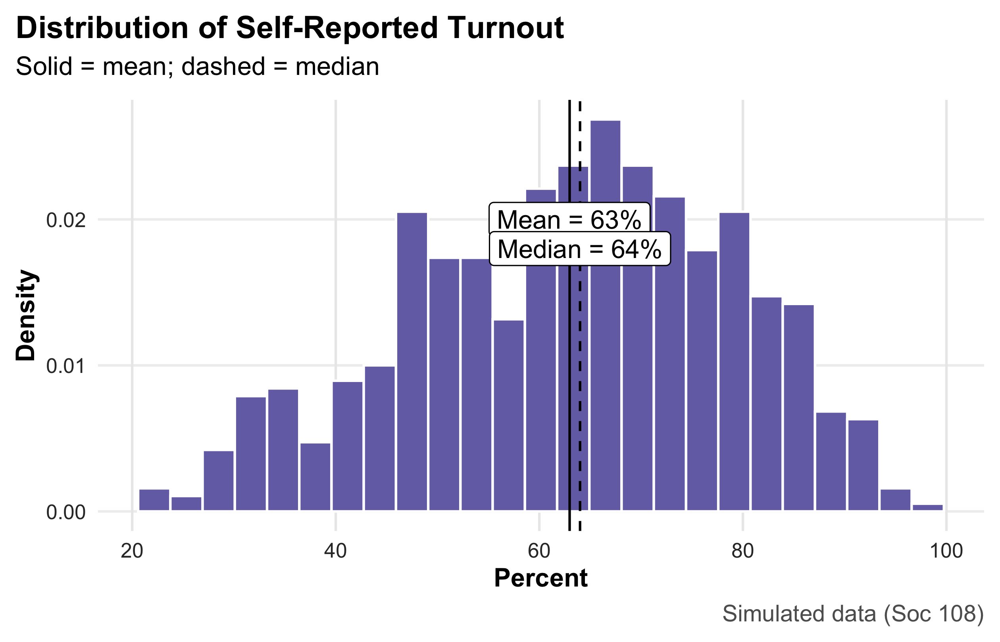
Inequality vs Turnout
This scatterplot examines the relationship between two quantitative variables—a simulated county Gini index (x) and turnout (y). Each point is a unit; the semi-transparent dots reduce overplotting in dense regions. The LOESS curve provides a nonparametric trend with a shaded confidence band, revealing possible curvature without assuming a particular functional form. The x-axis is formatted as percentages to match the Gini scale. Because this is observational, the figure supports association, not causation; it is best used to motivate model choice (e.g., whether a linear, quadratic, or spline term is appropriate).
ps2 <- ps |> mutate(gini = pmin(pmax(rnorm(n(), 0.43, 0.05), 0.30), 0.60))
ps2 |>
ggplot(aes(gini, turnout)) +
geom_point(alpha = 0.35, size = 1.5, colour = "red") +
geom_smooth(method = "lm", se = TRUE, colour = "blue") +
scale_x_continuous(labels = percent_format(accuracy = 1)) +
labs(title = "Higher Inequality, Lower Turnout?",
subtitle = "LOESS highlights possible nonlinearity",
x = "Gini (inequality)", y = "Turnout (%)",
caption = "Simulated data (Soc 108)") + theme_classic()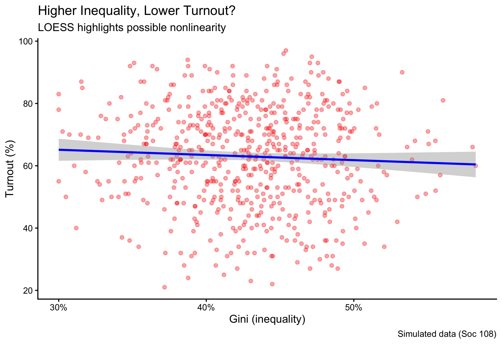
Donations by Party
This figure compares a quantitative outcome across groups by combining a violin (smoothed distribution), a boxplot (median and IQR), and a median point overlay. The design shows both typical values and distributional shape, which is crucial for right-skewed variables like donations. The y-axis uses currency formatting and caps at the 98th percentile to prevent a few extreme values from compressing the rest of the scale; this choice should be disclosed, as it de-emphasizes rare but very large gifts. Ordering the party factor ensures consistent left-to-right comparisons. This is the preferred display when you want students to see differences in central tendency and spread, not just means.
ps |>
mutate(party = fct_relevel(party, "Democrat","Independent","Republican")) |>
ggplot(aes(party, donation, fill = party)) +
geom_violin(color = NA, alpha = 0.8) +
geom_boxplot(width = 0.18, outlier.shape = NA, fill = "white") +
stat_summary(fun = median, geom = "point", size = 2.2, color = "black") +
scale_y_continuous(labels = label_dollar(prefix = "$"),
limits = c(0, quantile(ps$donation, 0.98))) +
scale_fill_manual(values = pol_pal) +
labs(title = "Campaign Donations by Party",
subtitle = "Violin = distribution; box = IQR; dot = median",
x = NULL, y = "Donation (USD)",
caption = "Simulated data (Soc 108)") +
theme(legend.position = "none")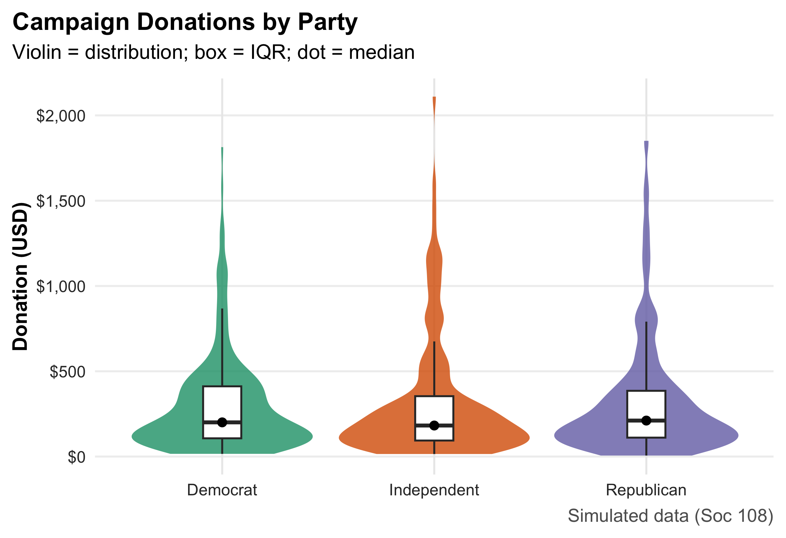
2.18 Numeric Summaries
party_share |> mutate(ci95 = 1.96*sqrt(pct*(1-pct)/sum(n)))# A tibble: 3 × 4
party n pct ci95
<fct> <int> <dbl> <dbl>
1 Democrat 225 0.375 0.0387
2 Republican 223 0.372 0.0387
3 Independent 152 0.253 0.0348c(turnout_mean = mean(ps$turnout),
turnout_median = median(ps$turnout),
turnout_sd = sd(ps$turnout),
turnout_iqr = IQR(ps$turnout)) turnout_mean turnout_median turnout_sd turnout_iqr
62.97833 64.00000 15.95657 23.25000 c(donation_median = median(ps$donation),
donation_IQR = IQR(ps$donation),
donation_p95 = quantile(ps$donation, .95)) donation_median donation_IQR donation_p95.95%
212.00 321.25 1207.50 These commands covered the essentials of data management in R: how to inspect objects, access help, subset rows and columns, create and transform variables, summarize and aggregate, work with strings and vectors, and export results—all applied to the iris dataset so you can see them in action. Mastering these basics gives you a reliable toolkit for cleaning and organizing data in any project. In the chapters ahead, we’ll build on this foundation with more sophisticated workflows: tidy data principles and joins across tables, reshaping (long ↔︎ wide), grouped and windowed operations, regular expressions at scale, date/time handling, functional programming with purrr, robust input/output, and reproducible reporting and visualization pipelines.
3 Chapter 3: The Normal Distribution
The normal distribution is one of the most fundamental concepts in statistics. A full grasp of this topic is essential because it forms the basis for much of the inferential work that follows. In this chapter, we introduce the properties of the normal distribution and learn how to calculate areas under its curve—areas that correspond to probabilities or proportions within a given range of values.
This chapter builds directly on our earlier discussion of how to describe and summarize distributions. Here, we move from description to application: we use the normal distribution to quantify the likelihood of observing values within specified intervals. Later in this book, we will return to the same principles when we conduct hypothesis testing, where the normal distribution serves as a key reference model for evaluating statistical significance.
Because of its central role in probability theory and inferential statistics, becoming comfortable with the normal distribution is crucial. This chapter provides the foundation and practice needed to develop that fluency.
# --------------------------------------------
# Histogram + Normal Curve + Median Marker
# --------------------------------------------
# --------------------------------------------
# Histogram + Normal Curve + Median Marker
# white background • light-blue bars • dark-pink line
# --------------------------------------------
mu <- 69.1
sigma <- 3.0
if (!requireNamespace("ggplot2", quietly = TRUE)) install.packages("ggplot2")
library(ggplot2)
set.seed(42)
height_in <- rnorm(2000, mean = mu, sd = sigma)
df <- data.frame(height_in = height_in)
med_val <- median(df$height_in)
# --- colors ---
fill_ltblue <- "#A7D8FF" # bar fill (light blue)
border_blue <- "#2C7FB8" # bar border
curve_blue <- "#C2185B" # normal curve
median_pink <- "black" # dark pink median line & label
p <- ggplot(df, aes(x = height_in)) +
# Histogram on density scale so curve aligns
geom_histogram(aes(y = after_stat(density)),
binwidth = 0.4,
fill = fill_ltblue,
color = border_blue,
linewidth = 0.5,
alpha = 0.9) +
# Normal curve with specified mu/sigma
stat_function(fun = dnorm,
args = list(mean = mu, sd = sigma),
linewidth = 1.2,
color = curve_blue) +
# Median marker (dark pink)
geom_vline(xintercept = med_val,
linewidth = 1,
linetype = "longdash",
color = median_pink) +
annotate("text",
x = med_val,
y = max(dnorm(seq(mu - 4*sigma, mu + 4*sigma, length.out = 2000), mu, sigma)) * 0.92,
label = sprintf("Median = %.2f in", med_val),
vjust = -0.3,
color = median_pink,
fontface = "bold") +
# Clean white background
theme_minimal(base_size = 13) +
theme(
panel.background = element_rect(fill = "white", color = NA),
plot.background = element_rect(fill = "white", color = NA),
panel.grid.minor = element_blank(),
panel.grid.major.x = element_blank(),
panel.grid.major.y = element_line(color = "#EEEEEE")
) +
labs(x = "Height (inches)", y = "Density") +
coord_cartesian(xlim = c(mu - 4*sigma, mu + 4*sigma))
p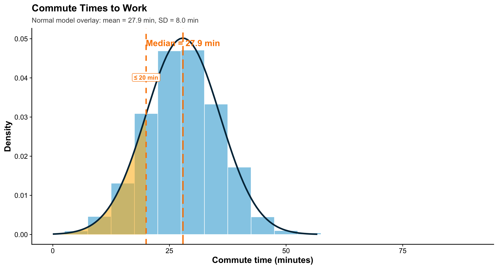
This histogram depicts the distribution of adult men’s heights in the United States based on national data. According to the Centers for Disease Control and Prevention (CDC), the average height for adult men in the U.S. is approximately 69.1 inches (about 5 feet 9 inches). The distribution is roughly symmetric, so both the mean and median fall close to this value. The tallest men in the population reach about 78 inches (6 feet 6 inches), while the shortest are around 62 inches (5 feet 2 inches).
Each bar in the histogram represents the proportion of men whose heights fall within a particular range. Although the histogram displays these proportions in discrete intervals, we can visualize the data more smoothly by imagining a continuous curve—typically a normal distribution—drawn over the bars. This curve provides a concise summary of how men’s heights are distributed nationwide, showing that most men cluster near the average, with fewer at the extremes of very short or very tall.
When working with real data, a histogram provides a discrete approximation of a distribution. Here, the notion of “density curve” is important to highlight. A density curve is a smooth line that shows how data are spread out. It is like a smoothed version of a histogram. The curve tells us where most of the data are found — the higher parts mean more data in that area. The total area under the curve equals 1, which means it represents all the data. A density curve thus helps us see the overall shape and pattern of data in a simple way. In the density curve below, each bar represents the proportion of cases falling within a specific range. For example, the histogram below shows the distribution of adult men’s heights in the United States. Suppose we are interested in the proportion of men whose height is less than or equal to 69 inches. By summing the relative frequencies of the bars up to this value, we find that approximately 0.30, or 30%, of men are 69 inches tall or shorter.
We can also represent the same distribution as a smooth density curve, which provides a continuous approximation of the underlying probability distribution—in this case, the normal distribution. The area under the density curve to the left of 69 inches represents the same probability, and when computed analytically using the properties of the normal distribution, we obtain an area of approximately 0.29.
Although the results from the histogram and the smooth curve are not exactly identical, the difference is quite small. The density curve serves as an excellent model for the distribution, allowing us to calculate probabilities (areas) precisely and efficiently.
library(ggplot2)
library(gridExtra)
library(grid)
fill_green <- "#7FC97F"
fill_yellow <- "#FFF59D"
curve_blue <- "#2C7FB8"
panel_blue <- "#DDEEFF"
grid_major_red <- "#F6C5C5"
grid_minor_red <- "#FBE6E6"
accent_dark <- "#1F4E79"
mean_color <- "#FF5733"
the_theme_big <- theme_minimal(base_size = 16) +
theme(
panel.background = element_rect(fill = panel_blue, color = NA),
plot.background = element_rect(fill = "white", color = NA),
panel.grid.major = element_line(color = grid_major_red, linewidth = 0.5),
panel.grid.minor = element_line(color = grid_minor_red, linewidth = 0.3),
panel.grid.major.x = element_line(color = grid_major_red),
legend.position = "none",
plot.title = element_text(face = "bold", size = 18)
)
mu <- 0
sigma_left <- 1.4
sigma_right <- 0.6
xL <- seq(mu - 4*sigma_left, mu + 4*sigma_left, length.out = 1200)
yL <- dnorm(xL, mu, sigma_left)
dfL <- data.frame(x = xL, y = yL)
shadeL <- subset(dfL, x >= mu - sigma_left & x <= mu + sigma_left)
xR <- seq(mu - 4*sigma_left, mu + 4*sigma_left, length.out = 1200)
yR <- dnorm(xR, mu, sigma_right)
dfR <- data.frame(x = xR, y = yR)
shadeR <- subset(dfR, x >= mu - sigma_right & x <= mu + sigma_right)
ymax <- max(c(yL, yR)) * 1.10
p_left <- ggplot(dfL, aes(x, y)) +
geom_area(fill = fill_green, alpha = 0.60) +
geom_area(data = shadeL, aes(x, y), fill = fill_yellow, alpha = 0.95) +
geom_line(color = curve_blue, linewidth = 1.4) +
geom_vline(xintercept = mu, color = mean_color, linewidth = 1.4) +
annotate("text", x = mu, y = ymax*0.07, label = "\u03BC", color = mean_color, fontface = "bold") +
annotate("text", x = mu - sigma_left*1.9, y = ymax*0.92, label = "\u03C3 larger (wider spread)", color = accent_dark, fontface = "bold", hjust = 0) +
geom_segment(aes(x = mu - sigma_left*0.7, y = ymax*0.90, xend = mu - sigma_left, yend = dnorm(mu - sigma_left, mu, sigma_left)*0.95),
arrow = arrow(length = unit(0.12, "inches")), color = accent_dark) +
labs(title = "Normal distribution with larger \u03C3", x = "Value", y = "Density") +
coord_cartesian(ylim = c(0, ymax)) +
the_theme_big
p_right <- ggplot(dfR, aes(x, y)) +
geom_area(fill = fill_green, alpha = 0.60) +
geom_area(data = shadeR, aes(x, y), fill = fill_yellow, alpha = 0.95) +
geom_line(color = curve_blue, linewidth = 1.4) +
geom_vline(xintercept = mu, color = mean_color, linewidth = 1.4) +
annotate("text", x = mu, y = ymax*0.07, label = "\u03BC", color = mean_color, fontface = "bold") +
annotate("text", x = mu + sigma_left*0.9, y = ymax*0.92, label = "\u03C3 smaller (narrower spread)", color = accent_dark, fontface = "bold", hjust = 0) +
geom_segment(aes(x = mu + sigma_right*0.7, y = ymax*0.90, xend = mu + sigma_right, yend = dnorm(mu + sigma_right, mu, sigma_right)*0.95),
arrow = arrow(length = unit(0.12, "inches")), color = accent_dark) +
labs(title = "Normal distribution with smaller \u03C3", x = "Value", y = "Density") +
coord_cartesian(ylim = c(0, ymax)) +
the_theme_big
grid.arrange(p_left, p_right, ncol = 2,
top = "The Normal Distribution: Same \u03BC, Different \u03C3")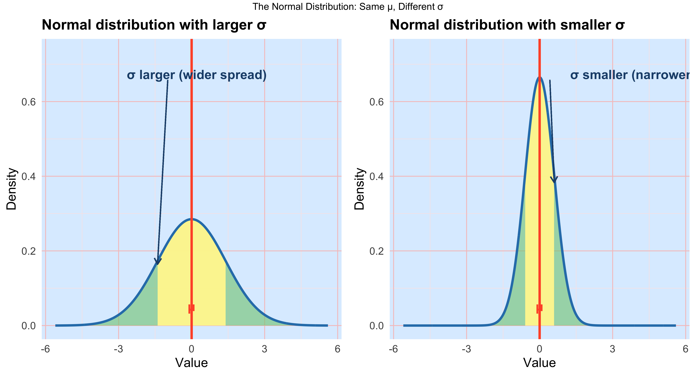
To emphasize, a density curve is a smooth, mathematical model that represents the overall pattern of a distribution. Rather than depicting frequencies through discrete bars—as a histogram does—a density curve provides a continuous approximation that shows the relative proportion of observations within any range of values.
For instance, consider the distribution of adult men’s heights in the United States. The density curve drawn around this distribution describes how the probability of observing a particular height varies across the population. The area under the curve between two points corresponds to the proportion of individuals whose heights fall within that range. By definition, the total area under the density curve is equal to 1, meaning that it represents 100% of all observations in the distribution. Thus, just as every observation in a dataset contributes to the total area of a histogram, every observation in a population contributes to the total area under its density curve.
In short, the density curve serves as a smooth, idealized version of the histogram—one that captures the same essential information about relative frequencies and proportions, but in a continuous form suitable for precise probability calculations.
Density curves share many of the same descriptive properties as the frequency distributions we have studied through histograms and stemplots. Like those, they possess a center, a shape, and a spread. These curves provide an idealized mathematical model of a distribution, enabling us to describe its overall pattern in a continuous way.
Just as we did with histograms, we can identify measures of central tendency—specifically, the mean and the median—for a density curve. The median divides the total area under the curve into two equal halves, such that 50% of observations lie below it and 50% lie above it. The mean, by contrast, is the point at which the curve would balance if it were made of a uniform sheet of material.
In a perfectly symmetric distribution, the mean and median coincide. For example, the distribution of adult men’s heights in the United States is approximately symmetric, and therefore the mean (around 69 inches) is nearly equal to the median. In such cases, half of the population lies below this central value and half lies above it.
However, when a distribution is skewed, the relationship between the mean and median changes. In a right-skewed distribution—such as the distribution of household income—the long tail of higher values pulls the mean to the right of the median. Conversely, in a left-skewed distribution, the mean lies to the left of the median. The greater the skewness, the larger this separation becomes.
Regardless of the distribution’s shape, the area under the curve always represents the total proportion of observations, which by definition equals 1 (or 100%). Dividing the curve at the median ensures that half of this total area lies on each side.
library(ggplot2)
library(ggplot2)
# Parameters for normal distribution
mu <- 0
sigma <- 1
# Create data for the curves
x_vals <- seq(mu - 4*sigma, mu + 4*sigma, length.out = 1000)
y_vals <- dnorm(x_vals, mean = mu, sd = sigma)
# Create main dataframe
df <- data.frame(x = x_vals, y = y_vals)
# Inflection points occur at mu ± sigma
inflection_left <- mu - sigma
inflection_right <- mu + sigma
inflection_y <- dnorm(inflection_left, mean = mu, sd = sigma)
# Create plot
ggplot(df, aes(x = x, y = y)) +
# Fill under curve
geom_area(fill = "lightblue", alpha = 0.5) +
# Main curve
geom_line(color = "darkblue", linewidth = 1.2) +
# Vertical line at mean (mu)
geom_vline(xintercept = mu, color = "black", linewidth = 0.8) +
# Vertical lines at inflection points
geom_segment(aes(x = inflection_left, xend = inflection_left,
y = 0, yend = inflection_y),
color = "red", linewidth = 0.8, linetype = "dashed") +
geom_segment(aes(x = inflection_right, xend = inflection_right,
y = 0, yend = inflection_y),
color = "red", linewidth = 0.8, linetype = "dashed") +
# Horizontal lines showing sigma distance
geom_segment(aes(x = mu, xend = inflection_left,
y = inflection_y * 0.5, yend = inflection_y * 0.5),
color = "black", linewidth = 0.6,
arrow = arrow(ends = "both", length = unit(0.15, "cm"))) +
geom_segment(aes(x = mu, xend = inflection_right,
y = inflection_y * 0.5, yend = inflection_y * 0.5),
color = "black", linewidth = 0.6,
arrow = arrow(ends = "both", length = unit(0.15, "cm"))) +
# Labels
annotate("text", x = mu, y = -0.02, label = "μ", size = 6, fontface = "bold") +
annotate("text", x = (mu + inflection_left)/2, y = inflection_y * 0.55,
label = "σ", size = 5, fontface = "italic") +
annotate("text", x = (mu + inflection_right)/2, y = inflection_y * 0.55,
label = "σ", size = 5, fontface = "italic") +
# Inflection point labels
annotate("text", x = inflection_left - 0.3, y = inflection_y + 0.03,
label = "inflection\npoint", size = 3.5, hjust = 1) +
annotate("text", x = inflection_right + 0.3, y = inflection_y + 0.03,
label = "inflection\npoint", size = 3.5, hjust = 0) +
# Concavity labels
annotate("text", x = inflection_left - 1, y = dnorm(inflection_left - 1, mu, sigma) + 0.05,
label = "concave\ndown", size = 3.5) +
annotate("text", x = 0, y = dnorm(0, mu, sigma) + 0.05,
label = "concave\nup", size = 3.5) +
annotate("text", x = inflection_right + 1, y = dnorm(inflection_right + 1, mu, sigma) + 0.05,
label = "concave\ndown", size = 3.5) +
# Styling
theme_minimal(base_size = 14) +
theme(
panel.grid = element_blank(),
axis.title = element_blank(),
axis.text = element_blank(),
axis.ticks = element_blank(),
panel.background = element_rect(fill = "white", color = NA),
plot.background = element_rect(fill = "white", color = NA)
) +
coord_cartesian(xlim = c(mu - 4*sigma, mu + 4*sigma), ylim = c(-0.05, 0.5)) +
labs(title = "Normal Distribution: Inflection Points at μ ± σ",
subtitle = "The inflection points mark where the curve changes from concave down to concave up")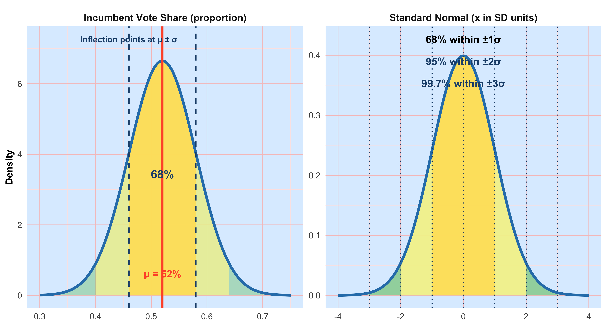
# Optional: Add caption
# + labs(caption = "We can find σ by eye at the inflection point of the density function of the normal distribution.")fill_green <- "#7FC97F"
fill_yellow <- "#FFF59D"
curve_blue <- "#2C7FB8"
panel_blue <- "#DDEEFF"
grid_major_red <- "#F6C5C5"
grid_minor_red <- "#FBE6E6"
accent_dark <- "#1F4E79"
mean_color <- "#FF5733"
the_theme_big <- theme_minimal(base_size = 18) +
theme(
panel.background = element_rect(fill = panel_blue, color = NA),
plot.background = element_rect(fill = "white", color = NA),
panel.grid.major = element_line(color = grid_major_red, linewidth = 0.6),
panel.grid.minor = element_line(color = grid_minor_red, linewidth = 0.35),
panel.grid.major.x = element_line(color = grid_major_red),
legend.position = "none",
plot.title = element_text(face = "bold", size = 20),
axis.title = element_text(size = 18),
axis.text = element_text(size = 14)
)
x <- seq(-4,4,length.out=2000)
y <- dnorm(x,0,1)
df <- data.frame(x=x,y=y)
ymax <- max(y)*1.12
df1 <- subset(df, x>=-1 & x<=1)
df2 <- subset(df, x>=-2 & x<=2)
df3 <- subset(df, x>=-3 & x<=3)
p_rule <- ggplot(df, aes(x,y)) +
geom_area(fill=fill_green, alpha=.5) +
geom_area(data=df3, aes(x,y), fill=fill_green, alpha=.6) +
geom_area(data=df2, aes(x,y), fill=fill_yellow, alpha=.9) +
geom_area(data=df1, aes(x,y), fill="#FFE066", alpha=.95) +
geom_line(color=curve_blue, linewidth=1.8) +
geom_vline(xintercept = c(-3,-2,-1,0,1,2,3), linewidth=.7, color=accent_dark, linetype="dotted") +
annotate("text", x=0, y=ymax*.93, label="68% within \u00B11\u03C3", fontface="bold") +
annotate("text", x=0, y=ymax*.85, label="95% within \u00B12\u03C3", fontface="bold", color=accent_dark) +
annotate("text", x=0, y=ymax*.77, label="99.7% within \u00B13\u03C3", fontface="bold", color=accent_dark) +
labs(title="Normal distributions: the 68–95–99.7 rule", x="Standard deviations", y="Density") +
coord_cartesian(xlim=c(-3.5,3.5), ylim=c(0,ymax)) +
the_theme_big
xw <- seq(54,75,length.out=2000)
mu <- 64.5; sigma <- 2.5
yw <- dnorm(xw,mu,sigma)
dfw <- data.frame(x=xw,y=yw)
ymaxw <- max(yw)*1.12
shade1 <- subset(dfw, x>=mu-sigma & x<=mu+sigma)
p_women <- ggplot(dfw, aes(x,y)) +
geom_area(fill=fill_green, alpha=.6) +
geom_area(data=shade1, aes(x,y), fill=fill_yellow, alpha=.95) +
geom_line(color=curve_blue, linewidth=1.8) +
geom_vline(xintercept = mu, color=mean_color, linewidth=1.6) +
geom_vline(xintercept = c(mu-sigma, mu+sigma), color=accent_dark, linetype="dashed") +
annotate("text", x=mu, y=ymaxw*.06, label="\u03BC=64.5", color=mean_color, fontface="bold") +
annotate("text", x=mu-4.5, y=ymaxw*.92, label="Inflection points at \u03BC \u00B1 \u03C3", color=accent_dark, fontface="bold", hjust=0) +
labs(title="Distribution of heights of young women: N(64.5, 2.5)", x="Height (inches)", y="Density") +
coord_cartesian(ylim=c(0,ymaxw)) +
the_theme_big
grid.arrange(p_rule, p_women, ncol=2)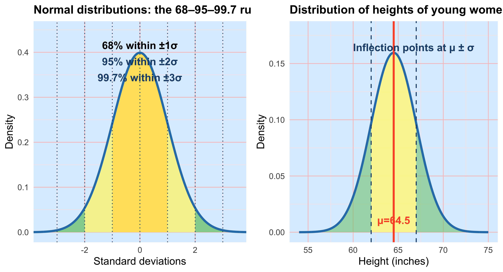
library(ggplot2)
library(gridExtra)
library(grid)
# Color palette
fill_green <- "#7FC97F"
fill_yellow <- "#FFF59D"
fill_orange <- "#FFE066"
curve_blue <- "#2C7FB8"
panel_blue <- "#DDEEFF"
grid_major_red <- "#F6C5C5"
grid_minor_red <- "#FBE6E6"
accent_dark <- "#1F4E79"
mean_color <- "#FF5733"
# Consistent theme
the_theme_big <- theme_minimal(base_size = 16) +
theme(
panel.background = element_rect(fill = panel_blue, color = NA),
plot.background = element_rect(fill = "white", color = NA),
panel.grid.major = element_line(color = grid_major_red, linewidth = 0.5),
panel.grid.minor = element_line(color = grid_minor_red, linewidth = 0.3),
panel.grid.major.x = element_line(color = grid_major_red),
legend.position = "none",
plot.title = element_text(face = "bold", size = 18, hjust = 0.5),
axis.title = element_text(size = 15, face = "bold"),
axis.text = element_text(size = 13)
)
# ---------- PLOT 1: 68-95-99.7 Rule ----------
x <- seq(-4, 4, length.out = 2000)
y <- dnorm(x, 0, 1)
df <- data.frame(x = x, y = y)
ymax <- max(y) * 1.15
# Create shaded regions
df1 <- subset(df, x >= -1 & x <= 1)
df2 <- subset(df, x >= -2 & x <= 2)
df3 <- subset(df, x >= -3 & x <= 3)
p_rule <- ggplot(df, aes(x, y)) +
# Layered shading for visual effect
geom_area(fill = fill_green, alpha = 0.4) +
geom_area(data = df3, aes(x, y), fill = fill_green, alpha = 0.5) +
geom_area(data = df2, aes(x, y), fill = fill_yellow, alpha = 0.85) +
geom_area(data = df1, aes(x, y), fill = fill_orange, alpha = 0.9) +
# Main curve
geom_line(color = curve_blue, linewidth = 2) +
# Vertical lines at standard deviations
geom_vline(xintercept = c(-3, -2, -1, 0, 1, 2, 3),
linewidth = 0.8, color = accent_dark, linetype = "dotted") +
# Labels for percentages
annotate("text", x = 0, y = ymax * 0.94,
label = "68% within ±1σ",
fontface = "bold", size = 5.5) +
annotate("text", x = 0, y = ymax * 0.86,
label = "95% within ±2σ",
fontface = "bold", size = 5.5, color = accent_dark) +
annotate("text", x = 0, y = ymax * 0.78,
label = "99.7% within ±3σ",
fontface = "bold", size = 5.5, color = accent_dark) +
# Axis labels at key points
scale_x_continuous(breaks = c(-3, -2, -1, 0, 1, 2, 3),
labels = c("-3σ", "-2σ", "-1σ", "μ", "+1σ", "+2σ", "+3σ")) +
labs(title = "The 68–95–99.7 Rule for Normal Distributions",
x = "Standard Deviations from Mean",
y = "Density") +
coord_cartesian(xlim = c(-3.8, 3.8), ylim = c(0, ymax)) +
the_theme_big
# ---------- PLOT 2: Women's Heights ----------
xw <- seq(56, 73, length.out = 2000)
mu <- 64.5
sigma <- 2.5
yw <- dnorm(xw, mu, sigma)
dfw <- data.frame(x = xw, y = yw)
ymaxw <- max(yw) * 1.15
# Shaded regions
shade1 <- subset(dfw, x >= mu - sigma & x <= mu + sigma)
shade2 <- subset(dfw, x >= mu - 2*sigma & x <= mu + 2*sigma)
p_women <- ggplot(dfw, aes(x, y)) +
# Shading
geom_area(fill = fill_green, alpha = 0.5) +
geom_area(data = shade2, aes(x, y), fill = fill_yellow, alpha = 0.7) +
geom_area(data = shade1, aes(x, y), fill = fill_orange, alpha = 0.9) +
# Main curve
geom_line(color = curve_blue, linewidth = 2) +
# Mean line
geom_vline(xintercept = mu, color = mean_color, linewidth = 1.8) +
# Inflection points
geom_vline(xintercept = c(mu - sigma, mu + sigma),
color = accent_dark, linetype = "dashed", linewidth = 1) +
# Labels
annotate("text", x = mu, y = ymaxw * 0.08,
label = paste0("μ = ", mu, " inches"),
color = mean_color, fontface = "bold", size = 5) +
annotate("text", x = mu - sigma, y = ymaxw * 0.96,
label = "Inflection points at μ ± σ",
color = accent_dark, fontface = "bold", size = 4.5) +
annotate("segment", x = mu - sigma - 0.3, xend = mu - sigma,
y = ymaxw * 0.93, yend = dnorm(mu - sigma, mu, sigma) + 0.003,
arrow = arrow(length = unit(0.2, "cm")),
color = accent_dark, linewidth = 0.8) +
annotate("segment", x = mu + sigma + 0.3, xend = mu + sigma,
y = ymaxw * 0.93, yend = dnorm(mu + sigma, mu, sigma) + 0.003,
arrow = arrow(length = unit(0.2, "cm")),
color = accent_dark, linewidth = 0.8) +
# Percentage label
annotate("text", x = mu, y = ymaxw * 0.45,
label = "68%", fontface = "bold", size = 6, color = accent_dark) +
labs(title = "Distribution of Young Men's Heights: N(64.5, 2.5)",
x = "Height (inches)",
y = "Density") +
scale_x_continuous(breaks = seq(58, 72, by = 2)) +
coord_cartesian(xlim = c(56, 73), ylim = c(0, ymaxw)) +
the_theme_big
# Display both plots
grid.arrange(p_rule, p_women, ncol = 2,
top = textGrob("Understanding the Normal Distribution",
gp = gpar(fontsize = 20, fontface = "bold")))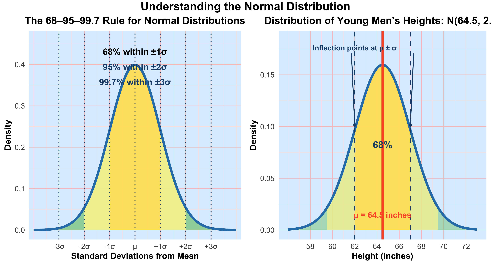
library(ggplot2)
library(gridExtra)
library(grid)
# Color palette
fill_green <- "#7FC97F"
fill_yellow <- "#FFF59D"
curve_blue <- "#2C7FB8"
panel_blue <- "#DDEEFF"
grid_major_red <- "#F6C5C5"
grid_minor_red <- "#FBE6E6"
accent_dark <- "#1F4E79"
mean_color <- "#FF5733"
# Theme
the_theme_big <- theme_minimal(base_size = 16) +
theme(
panel.background = element_rect(fill = panel_blue, color = NA),
plot.background = element_rect(fill = "white", color = NA),
panel.grid.major = element_line(color = grid_major_red, linewidth = 0.5),
panel.grid.minor = element_line(color = grid_minor_red, linewidth = 0.3),
panel.grid.major.x = element_line(color = grid_major_red),
legend.position = "none",
plot.title = element_text(face = "bold", size = 17, hjust = 0.5),
plot.subtitle = element_text(size = 13, hjust = 0.5, color = accent_dark),
axis.title = element_text(size = 14, face = "bold"),
axis.text = element_text(size = 12)
)
# Parameters
mu <- 64.5
sigma <- 2.5
x <- seq(54, 75, length.out = 2000)
y <- dnorm(x, mu, sigma)
df <- data.frame(x = x, y = y)
ymax <- max(y) * 1.12
# ---------- PLOT 1: Both Tails ----------
shade_both <- subset(df, x <= 57 | x >= 72)
prob_both <- pnorm(57, mu, sigma) + (1 - pnorm(72, mu, sigma))
p_both_tails <- ggplot(df, aes(x, y)) +
geom_area(fill = fill_green, alpha = 0.6) +
geom_area(data = shade_both, aes(x, y), fill = fill_yellow, alpha = 0.95) +
geom_line(color = curve_blue, linewidth = 2) +
geom_vline(xintercept = mu, color = mean_color, linewidth = 1.8) +
geom_vline(xintercept = c(57, 72), color = accent_dark,
linetype = "dashed", linewidth = 1) +
annotate("text", x = 57, y = ymax * 0.95, label = "57\"",
color = accent_dark, fontface = "bold", size = 4.5) +
annotate("text", x = 72, y = ymax * 0.95, label = "72\"",
color = accent_dark, fontface = "bold", size = 4.5) +
annotate("text", x = 55.5, y = ymax * 0.15,
label = sprintf("%.4f", pnorm(57, mu, sigma)),
color = accent_dark, fontface = "bold", size = 4) +
annotate("text", x = 73.5, y = ymax * 0.15,
label = sprintf("%.4f", 1 - pnorm(72, mu, sigma)),
color = accent_dark, fontface = "bold", size = 4) +
labs(
title = "Less than 57\" or more than 72\"",
subtitle = paste0("≈ 0.003 by 68–95–99.7 rule; exact = ", sprintf('%.4f', prob_both)),
x = "Height (inches)", y = "Density"
) +
coord_cartesian(ylim = c(0, ymax)) +
the_theme_big
# ---------- PLOT 2: Right Tail ----------
shade_right <- subset(df, x >= 72)
prob_right <- 1 - pnorm(72, mu, sigma)
p_right_tail <- ggplot(df, aes(x, y)) +
geom_area(fill = fill_green, alpha = 0.6) +
geom_area(data = shade_right, aes(x, y), fill = fill_yellow, alpha = 0.95) +
geom_line(color = curve_blue, linewidth = 2) +
geom_vline(xintercept = mu, color = mean_color, linewidth = 1.8) +
geom_vline(xintercept = 72, color = accent_dark,
linetype = "dashed", linewidth = 1) +
annotate("text", x = 72, y = ymax * 0.95, label = "72\"",
color = accent_dark, fontface = "bold", size = 4.5) +
annotate("text", x = 73.2, y = ymax * 0.25,
label = sprintf("%.4f", prob_right),
color = accent_dark, fontface = "bold", size = 4.5) +
labs(
title = "More than 72\"",
subtitle = paste0("≈ 0.0015 by 68–95–99.7 rule; exact = ", sprintf('%.4f', prob_right)),
x = "Height (inches)", y = "Density"
) +
coord_cartesian(ylim = c(0, ymax)) +
the_theme_big
# ---------- PLOT 3: Right of Mean ----------
shade_mean <- subset(df, x >= mu)
p_right_of_mean <- ggplot(df, aes(x, y)) +
geom_area(fill = fill_green, alpha = 0.6) +
geom_area(data = shade_mean, aes(x, y), fill = fill_yellow, alpha = 0.95) +
geom_line(color = curve_blue, linewidth = 2) +
geom_vline(xintercept = mu, color = mean_color, linewidth = 1.8) +
annotate("text", x = mu + 3, y = ymax * 0.5, label = "0.500",
color = accent_dark, fontface = "bold", size = 5.5) +
annotate("text", x = mu, y = ymax * 0.95, label = "μ = 64.5\"",
color = mean_color, fontface = "bold", size = 4.5) +
labs(
title = "More than 64.5\"",
subtitle = "Exactly 0.500 by symmetry of the normal distribution",
x = "Height (inches)", y = "Density"
) +
coord_cartesian(ylim = c(0, ymax)) +
the_theme_big
# Display all three plots
grid.arrange(p_both_tails, p_right_tail, p_right_of_mean, ncol = 3,
top = textGrob("Young Men's Heights: Areas under N(64.5, 2.5)",
gp = gpar(fontsize = 20, fontface = "bold")))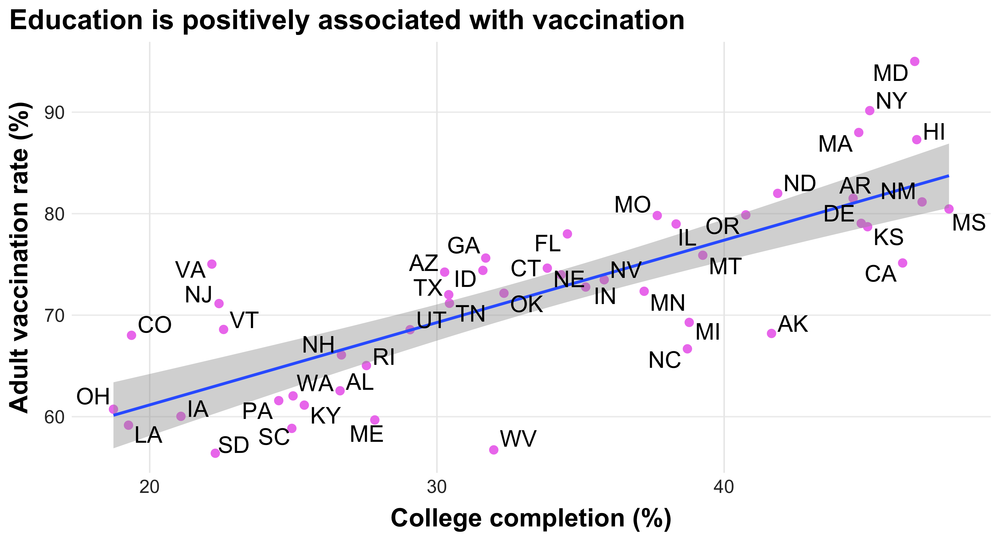
3.1 Normal model for young women’s heights
In the graph above, young women’s heights are well approximated by a normal distribution with mean mu = 64.5 inches (about 5 feet 4.5 inches) and standard deviation sigma = 2.5 inches. The normal curve is bell-shaped and symmetric: the mean equals the median, and the distribution is centered at mu. The points of inflection (where the curve changes concavity) occur at mu +/- sigma. These locations provide a visual guide to one standard deviation from the center. In this book we denote the model by N(64.5, 2.5), meaning “normal with mean 64.5 and standard deviation 2.5.” (Some sources use N(mu, sigma^2); here we use N(mu, sigma).)
3.2 Interpreting mu and sigma
- mu (location): moves the curve left or right; it is the center of the distribution and equals the typical value for a symmetric normal.
- sigma (scale): controls spread; larger sigma makes the curve flatter and wider, smaller sigma makes it taller and narrower.
- Units: mu and sigma are in the same units as the data (inches). Conversions to feet/inches are for interpretation only.
The 68–95–99.7 rule (empirical rule)
For any normal distribution: - About 68% of observations lie within mu +/- 1sigma. - About 95% lie within mu +/- 2sigma. - About 99.7% lie within **mu +/- 3*sigma**.
Applied to N(64.5, 2.5): - [62.0, 67.0] (64.5 +/- 2.5) contains about 68%. - [59.5, 69.5] (64.5 +/- 5.0) contains about 95%. - [57.0, 72.0] (64.5 +/- 7.5) contains about 99.7%.
Rule-of-thumb vs exact: The empirical rule is quick and close. Exact central 95% uses **mu +/- 1.96*sigma** (not exactly 2*sigma). Software or a standard normal table gives exact areas.
3.3 Standardization (z-scores)
To place any value x on the standard normal scale, compute z = (x − mu) / sigma.
- z counts how many standard deviations x is from the mean.
- Areas such as P(X <= x) become P(Z <= z) on the standard normal, which can be looked up or computed with software.
For N(64.5, 2.5): - x = 72 -> z = (72 − 64.5)/2.5 = +3.0
- x = 57 -> z = (57 − 64.5)/2.5 = −3.0
3.4 questions
1) Percent shorter than 57 inches or taller than 72 inches.
- Sketch the normal curve, mark mu = 64.5 and the cutoffs 57 and 72. Shade both tails.
Recognize that 57 = mu − 3sigma and 72 = mu + 3sigma.
By the empirical rule, the total area outside **mu +/- 3*sigma is about 0.003** (0.3%).
By symmetry, each tail is about 0.0015 (0.15%).
(Exact reference: two-sided area at |z| >= 3 is ~0.0027, so each tail ~0.00135.)
2) Percent taller than 72 inches.
- This is the right tail beyond mu + 3*sigma.
- Empirical rule: approximately 0.0015 (0.15%).
- (Exact: ~0.00135.)
3) Percent taller than 64.5 inches.
- 64.5 is the mean (and median) of a symmetric normal.
- Exactly 0.500 (50%) of the distribution lies above mu.
- Interpretation: roughly half of young women are taller than 64.5 inches and half are shorter.
3.5 How to solve normal-probability problems (checklist)
- Draw and label the curve with mu and the relevant cut points.
- Shade the region that matches the probability statement.
- Standardize each numerical boundary: z = (x − mu)/sigma.
- Find area: use the empirical rule for quick estimates; use software/tables for exact values.
- Sanity-check against the sketch (tiny region -> small probability; half-curve -> ~0.5).
- Report clearly in proportion or percent and interpret in context (with units).
4 Chapter 4:Scatterplots and Correlations
Up to now we have focused on one variable at a time (univariate analysis): distributions of outcomes like income or test scores and how to describe their shape. Many questions in the social sciences, however, ask how two quantitative variables move together—for example, whether places with higher inequality also report lower support for redistribution, or whether graduate-education rates are associated with voter turnout. This section introduces scatter plots and correlation for such bivariate analysis.
4.1 Explanatory vs. Response Variables
When studying a pair of variables, it helps to state which one is treated as explanatory (often called the independent variable) and which is the response (dependent variable). The explanatory variable is the putative “input” you think may help account for variation in the response. Declaring roles does not prove causality; it simply clarifies your research hypothesis and how you will present the graph. Convention: put the explanatory variable on the x-axis and the response variable on the y-axis.
4.2 Reading a Scatter Plot
When you examine a scatter plot, look for four things: Form: linear, curved, clustered, or no visible structure. Direction: positive (upward), negative (downward), or none. Strength: how tightly points track the pattern (strong vs. weak). Deviations: unusual points (outliers) that don’t fit the overall pattern. A point can be an outlier without being extreme on x or y individually; it can be unusual relative to the relationship.
Example A (political behavior): Graduate education & voter turnout
Hypothesis: counties with a larger share of residents holding graduate degrees tend to exhibit higher general-election turnout.
set.seed(42)
library(dplyr)
library(ggplot2)
n <- 600
dat_turnout <- tibble(
county = paste0("C", seq_len(n)),
grad_share = pmin(pmax(rbeta(n, 2, 6)*0.45, 0.005), 0.45), # 0–45%
turnout = 40 + 55*grad_share + rnorm(n, 0, 5) # %
) |>
mutate(turnout = pmin(pmax(turnout, 25), 85))
ggplot(dat_turnout, aes(grad_share * 100, turnout)) +
geom_point(alpha = 0.4, size = 3, colour = "red") +
geom_smooth(method = "lm", se = TRUE) +
labs(
x = "Graduate-degree share (%)",
y = "General-election turnout (%)",
title = "More graduate education, higher turnout (illustrative)"
) +
theme(
plot.title = element_text(size = 20, face = "bold"),
axis.title = element_text(size = 16),
axis.text = element_text(size = 14)
) + theme_classic()
#| label: cor-grad-turnout
#| echo: true
cor(dat_turnout$grad_share, dat_turnout$turnout) # Pearson correlation[1] 0.604028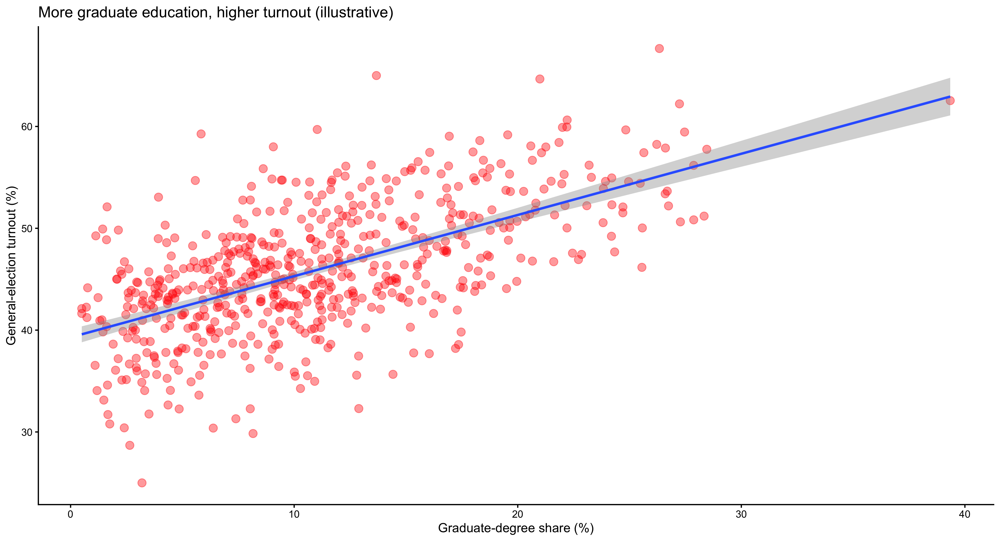
The scatterplot illustrating the relationship between graduate-degree share and voter turnout depicts a strong, positive linear association. Each point represents a county, and the overall configuration of the points aligns closely with the upward-sloping regression line. Counties with a larger proportion of residents holding graduate degrees tend to exhibit higher rates of electoral participation. The linearity of the pattern suggests that this relationship can be well-approximated by a straight line, implying that each incremental increase in graduate education corresponds to a roughly proportional increase in turnout. The dispersion of points around the fitted line is moderate, indicating that while the general trend holds across most counties, local variation—possibly due to institutional factors such as registration laws or political mobilization—still exists. There are few, if any, extreme outliers, which implies that the association is broadly consistent across the sample. Interpretation: points trend upward (positive direction) with a fairly linear form; the regression line helps visualize the direction and strength. The correlation summarizes the linear association numerically.
Example B: Inequality & support for redistribution
Hypothesis: higher income inequality (Gini coefficient) is associated with greater support for redistribution in cross-national survey aggregates.
#| label: fig-gini-redis
#| fig-cap: "Cross-national inequality vs. redistribution support (synthetic). OLS fit with 95% CI."
#| fig-width: 7.5
#| fig-height: 5
#| dpi: 320
#| warning: false
#| message: false
set.seed(7)
library(dplyr)
library(ggplot2)
library(scales)
n <- 45
dat_redis <- tibble(
country = paste0("Country_", seq_len(n)),
gini = runif(n, 0.24, 0.52),
support_redis = 20 + 120*(gini - min(gini)) + rnorm(n, 0, 10)
) |>
mutate(support_redis = pmin(pmax(support_redis, 10), 95))
outlier <- tibble(country = "Outlierland", gini = 0.50, support_redis = 25)
dat_redis2 <- bind_rows(dat_redis, outlier)
theme_pnas <- function(base_size = 15){
theme_minimal(base_size = base_size) +
theme(
text = element_text(color = "#222222"),
plot.title = element_text(size = base_size + 7, face = "bold", hjust = 0),
plot.subtitle = element_text(size = base_size + 1, margin = margin(b = 6)),
plot.caption = element_text(size = base_size - 2, color = "#666666"),
axis.title = element_text(size = base_size + 3, face = "bold"),
axis.text = element_text(size = base_size),
panel.grid.major = element_line(color = "#e6e6e6", linewidth = 0.6),
panel.grid.minor = element_blank(),
axis.line = element_line(color = "#222222", linewidth = 0.6),
plot.margin = margin(8, 14, 8, 8)
)
}
col_point_fill <- "#D32F2F" # red fill
col_point_edge <- "#8E0000" # darker red stroke
col_line <- "#1565C0" # fit line
col_rug <- "#bdbdbd" # subtle rugs
ggplot(dat_redis2, aes(gini, support_redis)) +
geom_rug(sides = "b", alpha = 0.35, color = col_rug, linewidth = 0.4) +
geom_rug(sides = "l", alpha = 0.35, color = col_rug, linewidth = 0.4) +
geom_point(shape = 21, size = 2, stroke = 0.7,
color = col_point_edge, fill = alpha(col_point_fill, 0.85)) +
geom_smooth(method = "lm", se = TRUE, color = col_line,
fill = alpha(col_line, 0.12), linewidth = 1.2) +
labs(
x = "Gini coefficient (income inequality)",
y = "Support for redistribution (%)",
title = "Greater inequality aligns with higher demand for redistribution",
subtitle = "OLS fit with 95% confidence band",
caption = "Synthetic data for illustration"
) +
scale_x_continuous(
limits = c(0.24, 0.52),
breaks = seq(0.24, 0.52, by = 0.04),
labels = number_format(accuracy = 0.01),
expand = expansion(mult = c(0.015, 0.03))
) +
scale_y_continuous(
limits = c(10, 95),
breaks = seq(10, 90, by = 10),
expand = expansion(mult = c(0.02, 0.04))
) +
theme_pnas()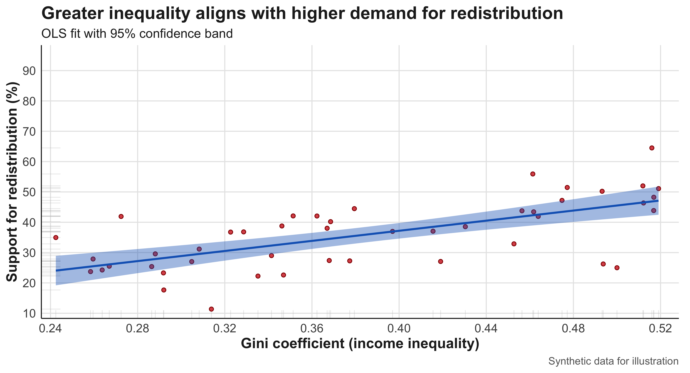
#| label: cor-gini-redis
cor(dat_redis2$gini, dat_redis2$support_redis)[1] 0.657166The cross-national scatterplot relating the Gini coefficient to support for redistribution reveals a more complex pattern. The main cluster of observations follows a moderate positive trend, suggesting that citizens in more unequal societies express somewhat stronger support for redistributive policies. However, the relationship is less tightly clustered than in the turnout example, implying weaker predictive power and the influence of contextual moderators—such as partisan competition, media framing, or welfare-state legacies. A notable outlier, labeled Outlierland, exhibits an unusually high Gini coefficient but comparatively low redistributive support. This case exerts visible leverage on the regression line, flattening the slope and reducing the estimated correlation. Its presence highlights the importance of substantive diagnosis: rather than dismissing it as a statistical anomaly, researchers should ask whether this country’s political economy—perhaps resource dependence or clientelistic governance—represents a distinct mechanism. When the outlier is removed, the fitted line steepens considerably, illustrating how influential observations can reshape both visual and statistical summaries.
Outliers can mask patterns. If the outlier reflects a different data-generating process (e.g., unusually high commodity rents and weak party system linkages), you might show results with and without it:
library(broom)
m_all <- lm(support_redis ~ gini, dat_redis2)
m_no_out <- lm(support_redis ~ gini, filter(dat_redis2, country != "Outlierland"))
bind_rows(
tidy(m_all) |> mutate(model = "All cases"),
tidy(m_no_out) |> mutate(model = "Excluding outlier")
)# A tibble: 4 × 6
term estimate std.error statistic p.value model
<chr> <dbl> <dbl> <dbl> <dbl> <chr>
1 (Intercept) 3.87 5.69 0.679 0.500 All cases
2 gini 83.3 14.4 5.78 0.000000702 All cases
3 (Intercept) 1.61 5.41 0.297 0.768 Excluding outlier
4 gini 90.4 13.8 6.56 0.0000000561 Excluding outlier#| label: fig-edu-vax
#| fig-cap: "State education and vaccination rates."
set.seed(123)
states <- state.abb[1:48] # use 48 for a clean grid
dat_vax <- tibble(
state = states,
college = runif(length(states), 0.18, 0.48), # share BA+
vax_rate = 45 + 80*college + rnorm(length(states), 0, 6)
) |>
mutate(vax_rate = pmin(pmax(vax_rate, 35), 95))
ggplot(dat_vax, aes(college*100, vax_rate, label = state)) +
geom_point(colour = "violet", size = 3) +
geom_smooth(method = "lm", se = TRUE) +
ggrepel::geom_text_repel(size = 7) +
labs(
x = "College completion (%)",
y = "Adult vaccination rate (%)",
title = "Education is positively associated with vaccination"
) +
theme(
axis.text = element_text(size = 16), # tick labels
axis.title.x = element_text(size = 22, face = "bold",
margin = margin(t = 10)),
axis.title.y = element_text(size = 22, face = "bold",
margin = margin(r = 10)),
plot.title = element_text(size = 24, face = "bold")
)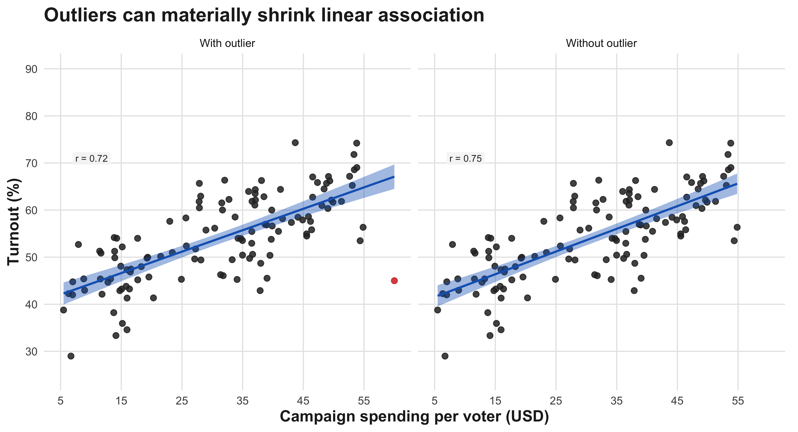
#| label: cor-edu-vax
c(Pearson = cor(dat_vax$college, dat_vax$vax_rate),
Spearman = cor(dat_vax$college, dat_vax$vax_rate, method = "spearman")) Pearson Spearman
0.7865221 0.7964611 The state-level scatterplot linking college completion rates to adult vaccination displays a robust, positive, and nearly linear relationship. States with higher proportions of college-educated residents tend to have substantially greater vaccination coverage. The slope of the fitted line is steep, and the residual spread around it is relatively small, denoting a strong correlation. The linear fit captures the pattern well; no evident curvature suggests non-linearity. A few states deviate modestly above or below the line—these may correspond to cases where political polarization or health-infrastructure disparities mediate the education-vaccination link—but none appear to qualify as statistical outliers. The correlation coefficients reinforce this visual impression: both the Pearson (linear) and Spearman (rank-based) measures are high and positive, confirming that the association holds in both magnitude and rank order. Substantively, the scatterplot provides an intuitive demonstration of how social stratification, measured through educational attainment, aligns with patterns of compliance and trust in science across political contexts.
4.3 Pearson vs. Spearman
Pearson correlation measures how strongly two variables move together in a straight-line (linear) way. For example, if as one variable increases, the other tends to increase or decrease at a constant rate, Pearson’s correlation will capture that.
Spearman correlation, on the other hand, looks at how the ranks of the data move together. It doesn’t assume a straight-line relationship — it just checks if higher values of one variable tend to go with higher (or lower) values of the other. Because it uses ranks, Spearman is better at handling situations where the relationship is curved or not perfectly linear.
Cross-Plot Comparison and Interpretation Viewed together, these scatterplots illustrate key principles of quantitative reasoning in the social sciences. The form of association ranges from strongly linear (education–turnout, education–vaccination) to modestly linear with influential cases (inequality–redistribution). The direction is uniformly positive, consistent with theories that link human capital or economic inequality to civic and policy attitudes. The strength varies: correlations exceeding 0.7 denote tight coupling, whereas values around 0.4–0.5 imply more diffuse relationships shaped by intervening variables. Finally, outliers—whether individual counties or countries—remind us that statistical associations must always be interpreted through substantive context, not treated as mechanical regularities.
These formal interpretations serve as models for how sociologists and political scientists should describe scatterplots in analytical writing: discuss direction, form, strength, outliers, and the plausible social mechanisms underlying each observed pattern.
Scatterplots, Grouping by a Third Variable, and the Correlation Coefficient
A scatterplot displays how two quantitative variables vary together. In comparative social science, however, relationships often differ across types of cases (e.g., established versus newer democracies; union-dense versus union-sparse polities). When a third variable meaningfully partitions the sample, the right approach is not one big cloud but two (or more) overlaid clouds—each with its own pattern. For instance, the association between social trust (horizontal axis) and general-election turnout (vertical axis) may be positive in both established and newer democracies, yet the slope and elevation can differ: established democracies might cluster at higher turnout for any given trust level. The plot should make that visible with distinct aesthetics (color/shape) and, ideally, a separate fitted line per group. In other words, the figure contains multiple scatterplots at once—one for each category—so readers can judge whether the relationship is common across groups or appears group-specific.
When describing such plots formally, report: (i) direction (positive, negative, none); (ii) form (roughly linear, curved, clustered, segmented); (iii) strength (tight vs. diffuse cloud around the trend); and (iv) deviations (outliers or leverage points). If groups trace parallel lines, a common mechanism with group-specific intercepts is plausible; if slopes differ, the third variable likely moderates the relationship. Avoid merging unlike groups into a single fit that obscures heterogeneity—doing so invites misleading summaries and errors in inference.
What is a correlation coefficient?
The correlation coefficient (Pearson’s r) is a unit-free index summarizing the direction and strength of a linear relationship between two quantitative variables. Values range from −1 (perfect decreasing linear relation) to +1 (perfect increasing linear relation), with 0 indicating no linear association. Because r is computed from standardized values (subtract the mean and divide by the standard deviation for each variable), it is invariant to changes in units (e.g., dollars vs. thousands of dollars) and symmetric in x and y (swapping axes does not change r). Crucially, correlation is not resistant to outliers: a single unusual case can meaningfully inflate or attenuate r. And correlation does not establish causation; it merely quantifies co-movement conditional on linear form.
Use r only when the pattern is plausibly linear and both variables are quantitative. For categorical variables, or when the ordering of categories is arbitrary, precision language is “association,” not “correlation.” If curvature is evident, consider transformations or non-linear modeling; a single number like Pearson’s r will misrepresent the underlying relationship. Finally, when outliers exist, present results with and without them and explain, substantively, what makes those cases different.
set.seed(101)
library(dplyr)
library(ggplot2)
library(scales)
# Synthetic comparative dataset
n <- 200
dat_trust <- tibble(
regime = sample(c("Established democracy", "New/Restored democracy"), n, replace = TRUE, prob = c(.6,.4)),
trust = runif(n, 20, 85) # % saying "most people can be trusted"
) |>
mutate(
# Group-specific intercepts/slopes and noise
turnout = case_when(
regime == "Established democracy" ~ 35 + 0.55*trust + rnorm(n(), 0, 6),
TRUE ~ 28 + 0.45*trust + rnorm(n(), 0, 8)
),
turnout = pmin(pmax(turnout, 20), 95)
)
theme_textbook <- function(base_size = 15){
theme_minimal(base_size = base_size) +
theme(
text = element_text(color = "#222"),
axis.title = element_text(face = "bold", size = base_size + 2),
plot.title = element_text(face = "bold", size = base_size + 6),
plot.subtitle = element_text(size = base_size + 1),
panel.grid.major = element_line(color = "#e6e6e6", linewidth = 0.6),
panel.grid.minor = element_blank(),
plot.margin = margin(8, 14, 8, 8)
)
}
ggplot(dat_trust, aes(trust, turnout, color = regime, shape = regime)) +
geom_point(alpha = 0.75, size = 2.8) +
geom_smooth(method = "lm", se = FALSE, linewidth = 1.2) +
scale_x_continuous("Social trust (%)", limits = c(20,85), breaks = seq(20, 85, 10)) +
scale_y_continuous("General-election turnout (%)", limits = c(20,95), breaks = seq(20, 95, 15)) +
scale_color_manual(values = c("#1565C0", "#D32F2F")) +
scale_shape_manual(values = c(16, 17)) +
labs(
title = "Same direction, different profile: Trust–turnout by regime type",
subtitle = "Both groups trend upward; established democracies sit higher across the trust range"
) +
theme_textbook()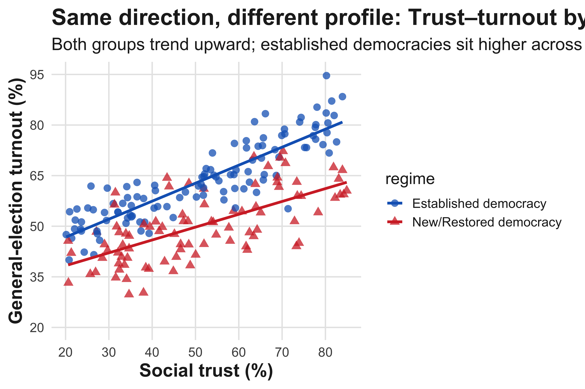
Step-by-step computation of Pearson’s r with a table
#| label: tbl-corr-handcalc
#| tbl-cap: "Hand calculation of Pearson’s r: spending per voter (x) and turnout (y) across municipalities (synthetic)."
#| message: false
#| warning: false
library(tibble)
library(dplyr)
library(knitr)
muni <- tibble::tibble(
muni = paste0("M", 1:9),
spend_per_voter = c(18, 22, 25, 27, 29, 33, 35, 40, 55), # USD
turnout_pct = c(51, 55, 58, 60, 62, 65, 68, 71, 64) # %
)
calc <- muni |>
mutate(
x = spend_per_voter,
y = turnout_pct,
xbar = mean(x), ybar = mean(y),
sx = sd(x), sy = sd(y),
x_minus_xbar = x - xbar,
y_minus_ybar = y - ybar,
zx = (x - xbar)/sx,
zy = (y - ybar)/sy,
zx_zy = zx * zy
)
r_hand <- sum(calc$zx_zy) / (nrow(calc) - 1)
calc |>
transmute(
Municipality = muni,
`x (spend)` = x,
`y (turnout)` = y,
`x - x̄` = round(x_minus_xbar, 2),
`y - ȳ` = round(y_minus_ybar, 2),
`z_x` = round(zx, 3),
`z_y` = round(zy, 3),
`z_x · z_y` = round(zx_zy, 3)
) |>
kable(align = "lrrrrrrr", caption = "Components used to compute r")| Municipality | x (spend) | y (turnout) | x - x̄ | y - ȳ | z_x | z_y | z_x · z_y |
|---|---|---|---|---|---|---|---|
| M1 | 18 | 51 | -13.56 | -10.56 | -1.225 | -1.674 | 2.050 |
| M2 | 22 | 55 | -9.56 | -6.56 | -0.863 | -1.039 | 0.897 |
| M3 | 25 | 58 | -6.56 | -3.56 | -0.592 | -0.564 | 0.334 |
| M4 | 27 | 60 | -4.56 | -1.56 | -0.412 | -0.247 | 0.102 |
| M5 | 29 | 62 | -2.56 | 0.44 | -0.231 | 0.070 | -0.016 |
| M6 | 33 | 65 | 1.44 | 3.44 | 0.130 | 0.546 | 0.071 |
| M7 | 35 | 68 | 3.44 | 6.44 | 0.311 | 1.022 | 0.318 |
| M8 | 40 | 71 | 8.44 | 9.44 | 0.763 | 1.497 | 1.142 |
| M9 | 55 | 64 | 23.44 | 2.44 | 2.118 | 0.388 | 0.821 |
c(
Pearson_r_by_hand = round(r_hand, 3),
Pearson_r_builtin = round(cor(muni$spend_per_voter, muni$turnout_pct), 3)
)Pearson_r_by_hand Pearson_r_builtin
0.715 0.715 We simulate a moderate positive relationship between campaign spending per voter and turnout, then add a single high-spending, low-turnout outlier (e.g., a contest with unusual mobilization failure). The two panels and the printed summary show how r shifts.
#| label: fig-outlier-effect
#| fig-cap: "A single unusual case can flatten the slope and drag Pearson’s r downward (synthetic)."
#| fig-width: 8
#| fig-height: 4.8
#| dpi: 320
#| message: false
#| warning: false
library(dplyr)
library(ggplot2)
library(scales)
theme_textbook <- function(base_size = 15){
theme_minimal(base_size = base_size) +
theme(
text = element_text(color = "#222"),
axis.title = element_text(face = "bold", size = base_size + 2),
plot.title = element_text(face = "bold", size = base_size + 6),
plot.subtitle = element_text(size = base_size + 1),
panel.grid.major = element_line(color = "#e6e6e6", linewidth = 0.6),
panel.grid.minor = element_blank(),
plot.margin = margin(8, 14, 8, 8)
)
}
set.seed(202)
n <- 120
base <- tibble::tibble(
spend = runif(n, 5, 55),
turnout = 40 + 0.45*spend + rnorm(n, 0, 6)
) |>
mutate(turnout = pmin(pmax(turnout, 25), 90))
df0 <- base |>
mutate(spec = "Without outlier", is_outlier = FALSE)
df1_base <- base |>
mutate(spec = "With outlier", is_outlier = FALSE)
outlier <- tibble::tibble(
spend = 60, turnout = 45, spec = "With outlier", is_outlier = TRUE
)
combined <- bind_rows(df0, df1_base, outlier)
r_stats <- combined |>
group_by(spec) |>
summarise(r = cor(spend, turnout), .groups = "drop")
ann <- combined |>
group_by(spec) |>
summarise(x = min(spend) + 1.5, y = max(turnout) - 2, .groups = "drop") |>
left_join(r_stats, by = "spec") |>
mutate(label = sprintf("r = %.2f", r))
ggplot(combined, aes(spend, turnout)) +
geom_point(aes(color = is_outlier), alpha = .85, size = 2.6) +
scale_color_manual(values = c(`FALSE` = "#2b2b2b", `TRUE` = "#D32F2F"), guide = "none") +
geom_smooth(method = "lm", se = TRUE, color = "#1565C0",
fill = alpha("#1565C0", 0.12), linewidth = 1.1) +
geom_label(data = ann, aes(x = x, y = y, label = label),
size = 3.6, hjust = 0, vjust = 1,
label.size = 0, color = "#333333", fill = alpha("#f5f5f5", 0.9)) +
labs(
x = "Campaign spending per voter (USD)",
y = "Turnout (%)",
title = "Outliers can materially shrink linear association"
) +
scale_x_continuous(limits = c(5, 60), breaks = seq(5, 60, 10)) +
scale_y_continuous(limits = c(25, 90), breaks = seq(30, 90, 10)) +
facet_wrap(~ spec, ncol = 2) +
theme_textbook()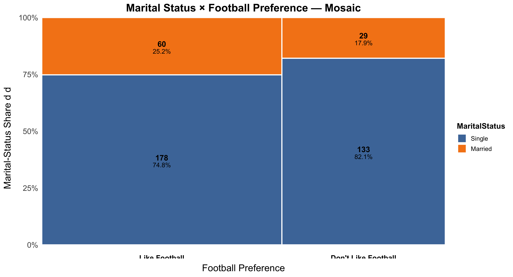
#| label: tbl-outlier-summary
combined |>
group_by(spec) |>
summarise(Pearson_r = round(cor(spend, turnout), 3), .groups = "drop") |>
rename(Specification = spec)# A tibble: 2 × 2
Specification Pearson_r
<chr> <dbl>
1 With outlier 0.717
2 Without outlier 0.7494.4 Correlation via Standardization
As noted, the first to compute correlation between two variables is to compute theri meens. \[ z_{x,i} = \frac{x_i - \bar{x}}{s_x}, \qquad z_{y,i} = \frac{y_i - \bar{y}}{s_y} \] Once we compute the means, we then need to calcultate standard deviation for each variable. \[ s_x = \sqrt{\frac{1}{n-1}\sum_{i=1}^{n} (x_i - \bar{x})^2}, \qquad s_y = \sqrt{\frac{1}{n-1}\sum_{i=1}^{n} (y_i - \bar{y})^2} \] Then, by plugging in the formula below, we then can compute the r-correlation coefficient.
\[ r = \frac{1}{n-1}\sum_{i=1}^{n} \left(\frac{x_i-\bar{x}}{s_x}\right) \left(\frac{y_i-\bar{y}}{s_y}\right) = \frac{1}{(n-1)s_x s_y}\sum_{i=1}^{n}(x_i-\bar{x})(y_i-\bar{y}) \]
4.5 Correlation via Standardization: Definitions, Steps, and Interpretation
Notation and sample summaries
We observe two quantitative variables for cases (i=1,,n): (x_i) and (y_i). The sample means and (unbiased) sample standard deviations are
\[ \bar{x}=\frac{1}{n}\sum_{i=1}^n x_i, \qquad \bar{y}=\frac{1}{n}\sum_{i=1}^n y_i, \]
\[ s_x=\sqrt{\frac{1}{n-1}\sum_{i=1}^n (x_i-\bar{x})^2}, \qquad s_y=\sqrt{\frac{1}{n-1}\sum_{i=1}^n (y_i-\bar{y})^2}. \]
What these do. ({x}) (resp. ({y})) centers the data; (s_x) (resp. (s_y)) measures average spread about the mean using the (n-1) denominator so that sample variance is unbiased under IID sampling.
Standardization (z-scores)
To place (x) and (y) on common, unit-free scales, define the standardized scores
\[ z_{x,i}=\frac{x_i-\bar{x}}{s_x}, \qquad z_{y,i}=\frac{y_i-\bar{y}}{s_y}. \]
What this does. Each (z) says “how many (s)’s from the mean” a case lies. Standardization ensures (i z{x,i}=0), (i z{x,i}^2=n-1) (and likewise for (y)), which makes the correlation unit-free.
Covariance (cross-deviation average)
The sample covariance aggregates the co-movement of centered variables:
\[ \operatorname{cov}(x,y) =\frac{1}{n-1}\sum_{i=1}^n (x_i-\bar{x})(y_i-\bar{y}). \]
What this does. Positive terms arise when (x_i) and (y_i) are both above/below their means; negative terms arise when one is above and the other below. Magnitude depends on the original units.
Pearson correlation (three equivalent forms)
Mean product of standardized scores \[ r=\frac{1}{n-1}\sum_{i=1}^n z_{x,i}\,z_{y,i}. \]
Scaled covariance \[ r=\frac{\operatorname{cov}(x,y)}{s_x\,s_y}. \]
Shortcut using sums \[ r=\frac{\sum_{i=1}^n x_i y_i - n\,\bar{x}\,\bar{y}} {(n-1)\,s_x\,s_y}. \]
What these do. (1) is most interpretable: average comovement in SD units. (2) rescales covariance to remove units. (3) is algebraically identical and useful for checking work or computing by hand.
How to compute (r) step-by-step (exactly what your table shows)
- Center each variable: compute deviations (x_i-{x}) and (y_i-{y}).
- Standardize: compute (A_i=z_{x,i}=(x_i-{x})/s_x) and (B_i=z_{y,i}=(y_i-{y})/s_y).
- Multiply standardized pairs: compute (A_i B_i).
- Average the products with the (n-1) denominator: \[ r=\frac{1}{n-1}\sum_{i=1}^n A_i B_i. \]
How to read the last column. If many (A_i B_i) are negative, large positive (x) tends to pair with low (y) (and vice versa), giving a negative (r). If they are mostly positive, the association is positive.
Properties and interpretation
- Range: (r). (|r|=1) only for perfect straight-line patterns; (r=0) means no linear association.
- Direction & strength: the sign gives direction; (|r|) gauges linear tightness (larger (|r|) → tighter cloud).
- Unit-free & symmetric: (r) is unchanged by linear rescaling of either variable and by swapping (x) and (y).
- Use with care: (r) summarizes linear association; it can be distorted by outliers and is inappropriate for clearly non-linear patterns (consider rank-based () or () then).
5 Chapter 5:Two-Way Tables
A two-way table, also called a contingency table, is a statistical tool used to organize and display data involving two categorical variables simultaneously. The table arranges data in a grid format where one variable’s categories form the rows and the other variable’s categories form the columns, with each cell showing the frequency or count of observations that fall into both categories. For example, a two-way table might show the relationship between gender (male/female) and preference for a product (like/dislike), with counts in each cell representing how many people of each gender expressed each preference. These tables are particularly valuable because they allow researchers to examine patterns, relationships, and potential associations between the two variables at a glance. The margins of the table typically include row totals and column totals, which summarize the data for each individual category, while the overall total appears in the corner. Two-way tables serve as the foundation for various statistical analyses, including chi-square tests for independence, and they make it easier to calculate conditional probabilities and identify trends within categorical data sets.
| Marital Status | Like Football | Don’t Like Football | Total |
|---|---|---|---|
| Single | 178 | 133 | 311 |
| Married | 60 | 29 | 89 |
| Total | 238 | 162 | 400 |
These percentages reveal that married students (67.4%) are more likely than single students (57.2%) to enjoy watching professional football—a difference of about 10 percentage points.
Among single students, that would be:
\[ \frac{178}{311} \times 100 \]
Among married students, the calculation would be:
\[
\frac{39}{67} \times 100
\]
Percent aging within rows in this way ensures that we are comparing like with like—that is, comparing preferences across marital categories. What are the categories that matter.
It is also useful to distinguish between marginal, conditional, and cell percentages.
A marginal percentage uses totals along the margins of a table—for instance, the proportion of students who are married:
\[ \frac{67}{378} \times 100 \]
A conditional percentage is calculated within a specific category, such as the percentage of married students who like football:
\[ \frac{39}{67} \times 100 \]
Finally, a cell percentage divides the frequency in a single cell by the grand total:
\[ \frac{28}{378} \times 100 \]
We could visualize a contingency table using a ‘mosaic plot’ in R-Studio. A mosaic plot displays the joint distribution of marital status and football preference. The total width of each column is proportional to the number of respondents who either like or do not like football, while the height of each colored segment within a column reflects the share of singles versus married individuals among that preference group. Within the “Like Football’’ column, 178 of 238 respondents (74.8%) are single and 60 (25.2%) are married; within the “Don’t Like Football’’ column, 133 of 162 respondents (82.1%) are single and 29 (17.9%) are married. Thus, although singles dominate both preference groups numerically, the relative composition differs slightly across them, and the mosaic layout allows this departure from independence to be seen directly in area rather than inferred from raw counts alone.
#| label: fig-football-mosaic-labeled
#| fig-cap: "Mosaic plot of Marital Status × Football Preference with counts and within-column percentages."
#| fig-width: 8
#| fig-height: 5
#| warning: false
#| message: false
suppressPackageStartupMessages({
library(dplyr); library(ggplot2); library(scales); library(tidyr)
})
# ------------- data -------------
df <- tibble::tribble(
~MaritalStatus, ~Preference, ~n,
"Single", "Like Football", 178,
"Single", "Don't Like Football", 133,
"Married", "Like Football", 60,
"Married", "Don't Like Football", 29
) |>
mutate(
MaritalStatus = factor(MaritalStatus, levels = c("Single","Married")),
Preference = factor(Preference, levels = c("Like Football","Don't Like Football"))
)
# ------------- parameters you can tweak -------------
label_count_size <- 4.6
label_pct_size <- 3.8
axis_title_size <- 16
axis_text_size <- 13
title_size <- 18
grand_total <- sum(df$n)
col_info <- df |>
group_by(Preference) |>
summarise(col_n = sum(n), .groups = "drop") |>
mutate(
width = col_n / grand_total,
xmin = lag(cumsum(width), default = 0),
xmax = cumsum(width),
xmid = (xmin + xmax) / 2
)
rects <- df |>
left_join(col_info, by = "Preference") |>
group_by(Preference) |>
mutate(
col_prop = n / sum(n),
ymin = lag(cumsum(col_prop), default = 0),
ymax = cumsum(col_prop),
ymid = (ymin + ymax) / 2,
pct_lab = percent(col_prop, accuracy = 0.1),
count_lab = sprintf("%d", n)
) |>
ungroup()
fills <- c("Single" = "#4C78A8", "Married" = "#F58518")
p <- ggplot(rects) +
# tiles
geom_rect(aes(xmin = xmin, xmax = xmax, ymin = ymin, ymax = ymax,
fill = MaritalStatus),
color = "white", linewidth = 0.9) +
# counts (bigger)
geom_text(aes(x = (xmin+xmax)/2, y = ymid, label = count_lab),
fontface = "bold", size = label_count_size, vjust = 0.1) +
# percentages (smaller, just below)
geom_text(aes(x = (xmin+xmax)/2, y = ymid, label = pct_lab),
size = label_pct_size, vjust = 1.6) +
# x labels at column centers
geom_text(data = distinct(col_info, Preference, xmid),
aes(x = xmid, y = -0.045, label = Preference),
fontface = "bold", size = axis_text_size/3, vjust = 1) +
scale_x_continuous(limits = c(0,1), expand = c(0,0), breaks = NULL) +
scale_y_continuous(limits = c(-0.06,1), expand = c(0,0),
labels = percent_format(accuracy = 1)) +
scale_fill_manual(values = fills) +
labs(
x = "Football Preference",
y = "Marital-Status Share d d",
title = "Marital Status × Football Preference — Mosaic"
) +
theme_minimal(base_size = axis_text_size) +
theme(
plot.title = element_text(face = "bold", size = title_size, hjust = 0.5),
axis.title.x = element_text(size = axis_title_size, margin = margin(t = 10)),
axis.title.y = element_text(size = axis_title_size, margin = margin(r = 10)),
axis.text = element_text(size = axis_text_size),
panel.grid = element_blank(),
legend.title = element_text(face = "bold"),
legend.position = "right"
)
p
The hardest part of working with two-way tables is often deciding which direction to percentage. Unlike scatterplots—where the explanatory variable conventionally appears on the x-axis—the layout of a two-way table is flexible. What matters is not the table’s physical orientation but the conceptual direction of explanation. Percentages must always be calculated within the explanatory variable’s categories.
Consider a few more examples. Suppose we want to know whether religiosity influences political conservatism. We would likely view religiosity as the explanatory variable and political orientation as the response. We would therefore calculate percentages within each religiosity category (for example, percent conservative among highly religious, moderately religious, and nonreligious respondents). In contrast, if we were examining traditional gender roles and gender, we might hypothesize that gender explains variation in gender-role attitudes—so gender becomes the explanatory variable, and we would calculate percentages within columns corresponding to men and women.
In all cases, the rule is consistent: percentage within the explanatory variable. The physical arrangement of the table—whether by rows or columns—does not matter, as long as the percentaging direction aligns with your hypothesis.
Another Example of a Two-Way Table: The Titanic
The sinking of the Titanic in 1912 provides a powerful example of how social class can be associated with survival outcomes. Historical records suggest that the likelihood of surviving the disaster varied substantially by passengers’ class of service. To explore this relationship statistically, we can organize the data into a two-way table that cross-classifies survival status (died or survived) by class of service (first, second, third, or crew). This layout allows us to examine how survival rates differ across social classes and to consider whether class membership may have influenced the probability of survival.
| Survival | 1: First | 2: Second | 3: Third | 4: Crew | Total |
|---|---|---|---|---|---|
| Died | 122 | 167 | 528 | 673 | 1,490 |
| Survived | 203 | 118 | 178 | 212 | 711 |
| Total | 325 | 285 | 706 | 885 | 2,201 |
This table summarizes the fate of all 2,201 people on board, including the crew. The cross-tabulation structure helps us to see both the raw frequencies and, later, the conditional percentages that describe survival likelihood within each class. By calculating percentages within categories of class of service—the explanatory variable—we can quantify how survival chances differed between first-class passengers, second-class passengers, those in third class, and members of the crew. Such tabular organization is foundational in understanding categorical relationships before progressing to more advanced inferential techniques.
Concept: Univariate, or Marginal, Distributions
Before examining relationships between variables, it is useful to study each variable individually. The distributions that describe a single variable—such as class of service or survival—are known as univariate or marginal distributions. They summarize how the total number of observations is divided across the categories of one variable, without considering any relationship to other variables.
Distribution of Passenger Class of Service on the Titanic
| Class of Service | Frequency | Percent |
|---|---|---|
| 1: First | 325 | 14.77 |
| 2: Second | 285 | 12.95 |
| 3: Third | 706 | 32.08 |
| 4: Crew | 885 | 40.21 |
| Total | 2,201 | 100.00 |
This table shows the marginal distribution of passenger class. Approximately 15% of the people on board traveled in first class, 13% in second class, 32% in third class, and 40% were crew members. These percentages describe the composition of everyone on board, regardless of survival status.
Distribution of Survival After the Sinking
| Survival Status | Frequency | Percent |
|---|---|---|
| Died | 1,490 | 67.70 |
| Survived | 711 | 32.30 |
| Total | 2,201 | 100.00 |
This second table presents the marginal distribution of survival outcomes. About two-thirds of those on board perished, while approximately one-third survived. Like the previous table, these values summarize a single variable and do not yet address how survival may have depended on other factors such as class of service. Examining these marginal distributions provides an essential first step before moving to the joint and conditional analyses that reveal relationships between variables.
Percentages: A Fine Analytical Tool
To examine the relationship between two categorical variables, it is almost always helpful to express frequencies as percentages—either across rows or down columns. Percentaging helps us interpret the nature and strength of associations within a two-way table by revealing patterns that raw counts may obscure.
Consider again the Titanic data. The table below shows the distribution of survival outcomes by class of service, where the percentages have been calculated down each column—that is, within categories of the explanatory variable (class of service).
| Survival | 1: First | 2: Second | 3: Third | 4: Crew | Total |
|---|---|---|---|---|---|
| Died | 122 | 167 | 528 | 673 | 1,490 |
| (37.54%) | (58.60%) | (74.79%) | (76.05%) | (67.70%) | |
| Survived | 203 | 118 | 178 | 212 | 711 |
| (62.46%) | (41.40%) | (25.21%) | (23.95%) | (32.30%) | |
| Total | 325 | 285 | 706 | 885 | 2,201 |
| (100%) | (100%) | (100%) | (100%) | (100%) |
Here, the rule of thumb is to calculate percentages within categories of the explanatory variable—in this case, class of service. Each column sums to 100 percent, allowing for direct comparison across social classes. We can clearly see that passengers in higher classes had a greater probability of survival: approximately 62% of first-class passengers survived, compared to 41% in second class, 25% in third class, and 24% of the crew. Thus, class of service appears to have been a strong predictor of survival likelihood.
Percentages in Classes by Survival Status
Sometimes, it is equally informative to percentage the table in the opposite direction. Instead of asking, “What percent of each class survived?”, we might ask, “Among those who survived, what percent came from each class?” This shifts the focus from survival rates within classes to the composition of survivors by class.
| Survival | 1: First | 2: Second | 3: Third | 4: Crew | Total |
|---|---|---|---|---|---|
| Died | 122 | 167 | 528 | 673 | 1,490 |
| (8.19%) | (11.21%) | (35.44%) | (45.17%) | (100%) | |
| Survived | 203 | 118 | 178 | 212 | 711 |
| (28.55%) | (16.60%) | (25.04%) | (29.82%) | (100%) | |
| Total | 325 | 285 | 706 | 885 | 2,201 |
| (14.77%) | (12.95%) | (32.08%) | (40.21%) | (100%) |
Here, the percentages are calculated across rows, meaning within categories of survival status. The interpretation changes: among all survivors, about 29% were crew, 25% were third-class passengers, 17% were second-class passengers, and 29% were first-class passengers. Among those who died, nearly half were crew members. This table highlights differences in composition rather than likelihood.
Both perspectives are useful but answer distinct questions. The first (column percentages) reveals how likely survival was for different social classes—useful for testing hypotheses about inequality or privilege. The second (row percentages) reveals how survivors and victims were distributed across class lines, providing a descriptive summary of the social makeup of each group.
Concept: Conditional Distributions
A two-way table contains multiple types of information, depending on which parts of it we examine. The interior cells show the joint distribution of two categorical variables—in this case, class of service and survival. The margins display the marginal distributions for each variable considered separately.
| Survival | 1: First | 2: Second | 3: Third | 4: Crew | Total |
|---|---|---|---|---|---|
| Died | 122 | 167 | 528 | 673 | 1,490 |
| Survived | 203 | 118 | 178 | 212 | 711 |
| Total | 325 | 285 | 706 | 885 | 2,201 |
However, when we isolate a single row or column and calculate percentages within that subset, we obtain a conditional distribution—that is, the distribution of one variable given a specific value of the other. For instance, the distribution of survival outcomes conditional on class of service shows how survival varied across classes, while the distribution of classes conditional on survival status reveals the composition of survivors or victims.
Conditional distributions are the foundation for understanding relationships between categorical variables. They allow us to assess whether one variable—such as class of service—is associated with systematic differences in another—such as survival. The next sections will explore how to interpret and visualize conditional relationships, building toward measures of association that quantify the strength of these patterns.
All Six Possible Conditional Distributions
In a two-way table with r rows and c columns, there are (r + c) possible conditional distributions. Each distribution represents one variable’s distribution given a specific value of the other variable. For example, in the Titanic data, we have four categories of class and two categories of survival, so (r + c = 4 + 2 = 6) possible conditional distributions.
| Survival | 1: First | 2: Second | 3: Third | 4: Crew | Total |
|---|---|---|---|---|---|
| Died | 122 | 167 | 528 | 673 | 1,490 |
| Survived | 203 | 118 | 178 | 212 | 711 |
| Total | 325 | 285 | 706 | 885 | 2,201 |
Each row and column of this table can generate a conditional distribution. For example, the distribution of survival outcomes within each class of service, or the distribution of class membership within each survival category. Altogether, there are six such conditional distributions available for interpretation.
Six Possible Conditional Distributions, Percentaged
Percentaging the conditional distributions makes the comparison between groups clearer. The first table below percentages within columns (that is, within each class of service), while the second table percentages within rows (within survival categories).
| Survival | 1: First | 2: Second | 3: Third | 4: Crew | Total |
|---|---|---|---|---|---|
| Died | 122 (37.54%) | 167 (58.60%) | 528 (74.79%) | 673 (76.05%) | 1,490 (67.70%) |
| Survived | 203 (62.46%) | 118 (41.40%) | 178 (25.21%) | 212 (23.95%) | 711 (32.30%) |
| Total | 325 (100%) | 285 (100%) | 706 (100%) | 885 (100%) | 2,201 (100%) |
The column percentages show that survival chances were much higher for passengers in the upper classes. Roughly 62% of first-class passengers survived, compared to 41% in second class, 25% in third class, and 24% of the crew.
| Survival | 1: First | 2: Second | 3: Third | 4: Crew | Total |
|---|---|---|---|---|---|
| Died | 122 (8.19%) | 167 (11.21%) | 528 (35.44%) | 673 (45.17%) | 1,490 (100%) |
| Survived | 203 (28.55%) | 118 (16.60%) | 178 (25.04%) | 212 (29.82%) | 711 (100%) |
| Total | 325 (14.77%) | 285 (12.95%) | 706 (32.08%) | 885 (40.21%) | 2,201 (100%) |
By contrast, the row percentages describe the composition of survivors and victims. For example, among those who survived, about 29% were first class, 17% were second class, 25% were third class, and 30% were crew. These perspectives complement one another: one focuses on likelihoods (within columns), and the other on composition (within rows).
Choosing the Direction of Percentaging
A useful rule of thumb guides which direction to percentage:
If there is an explanatory–response relationship between variables, calculate percentages within each category of the explanatory variable (and across the categories of the response).
In most research applications, the explanatory variable is the one we think helps predict or explain differences in the other variable. For example, class of service likely explains survival, rather than the reverse. Hence, we percentage within class categories when studying survival outcomes.
However, in some cases there may be no clear explanatory–response distinction. In such instances, it can be informative to percentage the table both ways to obtain complementary insights.
Associations: Comparing Conditional Distributions
Associations between two categorical variables emerge when conditional distributions differ across groups. These associations can be described both qualitatively and quantitatively.
Qualitative description: identifies the pattern of relationship.
Example: “First-class passengers were more likely to survive than third-class passengers.”Quantitative description: measures the magnitude of difference.
Example: “The survival rate was 37.25 percentage points higher among first-class passengers than among third-class passengers.”
To assess an association’s strength, we can compute percentage differences between conditional distributions or compare the numerical values directly. The greater the difference between conditional percentages, the stronger the association between variables.
Example: Admissions by Race/Ethnicity
To illustrate, consider a table showing the relationship between applicants’ race/ethnicity and admission outcomes for magnet schools in Houston.
| Race/Ethnicity | 1: Accepted | 2: Wait-listed | 3: Rejected | Total |
|---|---|---|---|---|
| Black/Hispanic | 485 (93.81%) | 0 (0.00%) | 32 (6.19%) | 517 (100%) |
| Asian | 110 (37.67%) | 49 (16.78%) | 133 (45.55%) | 292 (100%) |
| White | 336 (35.52%) | 251 (26.53%) | 359 (37.95%) | 946 (100%) |
| Total | 931 (53.05%) | 300 (17.09%) | 524 (29.86%) | 1,755 (100%) |
The key to interpreting this table lies in comparing the relevant conditional distributions—specifically, how the probability of each admission outcome varies by racial or ethnic group.
Describing the Marginal Distributions
Begin with a broad, qualitative observation. Among all applicants to the Houston magnet schools, Black and Hispanic students were most likely to be accepted, followed by Asian students, and lastly White students.
Next, support the general observation with specific figures. Approximately 94% of Black and Hispanic applicants were accepted, compared to 38% of Asians and 36% of Whites. These figures highlight substantial variation in acceptance rates across racial groups.
| Race/Ethnicity | 1: Accepted | 2: Wait-listed | 3: Rejected | Total |
|---|---|---|---|---|
| Black/Hispanic | 485 (93.81%) | 0 (0.00%) | 32 (6.19%) | 517 (100%) |
| Asian | 110 (37.67%) | 49 (16.78%) | 133 (45.55%) | 292 (100%) |
| White | 336 (35.52%) | 251 (26.53%) | 359 (37.95%) | 946 (100%) |
| Total | 931 (53.05%) | 300 (17.09%) | 524 (29.86%) | 1,755 (100%) |
Comparing Conditional Distributions
We can also identify more nuanced patterns. Whites, for instance, were more likely to be wait-listed than Asians, but slightly less likely to be outright rejected. Specifically, 27% of White applicants were wait-listed and 38% were rejected, whereas only 17% of Asian applicants were wait-listed and 46% were rejected. Such comparisons illustrate that even when overall acceptance rates appear similar, the nature of outcomes may differ significantly between groups.
| Race/Ethnicity | 1: Accepted | 2: Wait-listed | 3: Rejected | Total |
|---|---|---|---|---|
| Black/Hispanic | 485 (93.81%) | 0 (0.00%) | 32 (6.19%) | 517 (100%) |
| Asian | 110 (37.67%) | 49 (16.78%) | 133 (45.55%) | 292 (100%) |
| White | 336 (35.52%) | 251 (26.53%) | 359 (37.95%) | 946 (100%) |
| Total | 931 (53.05%) | 300 (17.09%) | 524 (29.86%) | 1,755 (100%) |
Summary
Across these examples, the logic of conditional distributions remains the same:
- Marginal distributions describe one variable at a time.
- Conditional distributions describe one variable given the value of another.
- Comparing conditional distributions allows us to detect and describe associations—both qualitatively and quantitatively.
Whether analyzing survival rates on the Titanic or admissions by race, percentaging appropriately and interpreting conditional relationships carefully are essential steps toward sound sociological and statistical reasoning.
Lurking Variables in Categorical Tables
Just as in regression analysis, the association observed in a two-way table may be influenced by lurking variables—unobserved or unmeasured factors that are related to both variables being analyzed.
A lurking variable of importance is typically associated with both the row and column variables. Because of these associations, changes in the lurking variable can create apparent relationships between the variables in the table, even when no direct causal connection exists between them.
Recognizing this possibility reminds us to interpret associations with caution: sometimes the relationship we observe between two categorical variables may in fact be driven by a third, unobserved factor.
When we examine a two-way table — such as gender by voting behavior or education level by health status — it is tempting to interpret the observed association as a direct relationship between the two variables. Just as in regression analysis, the pattern we see in a contingency table may in fact be driven by a lurking variable: a third factor that is not included in the table but is related to both of the variables that are. Because it shapes both the row and column variables simultaneously, a lurking variable can create the appearance of a meaningful association even when no direct causal link exists between the two variables we are comparing. This possibility is not a technical nuance but a substantive warning about interpretation. If a lurking variable is operating behind the scenes, we can easily overstate, misread, or misattribute the meaning of a cross-tabulated association. For this reason, responsible analysis requires asking whether an unmeasured factor could be producing the pattern we see, rather than assuming that the observed association reflects a direct relationship. Recognizing lurking variables is a reminder that correlation in a two-way table does not, by itself, justify causal or substantive conclusions.
Example: A Lurking Variable in Medical Treatments
Consider real data from a medical study comparing two treatments for kidney stones (Charig, Webb, Payne, and Wickham 1986). The first table summarizes treatment outcomes without taking into account any additional information.
| Outcome | Treatment A | Treatment B | Total |
|---|---|---|---|
| Success | 273 (78%) | 289 (83%) | 562 (80%) |
| Failure | 77 (22%) | 61 (17%) | 138 (20%) |
| Total | 350 (100%) | 350 (100%) | 700 (100%) |
At first glance, Treatment B appears superior: its success rate is 83 percent compared to 78 percent for Treatment A.
However, this comparison ignores an important lurking variable—the size of the kidney stones—which turns out to alter the interpretation entirely.
The Lurking Variable: The Size of the Kidney Stone
When the results are broken down by the size of the kidney stones, we obtain two separate subtables—one for small stones and one for large stones.
Together they sum to the original overall totals but reveal a different story.
| Outcome | Treatment A (Small) | Treatment B (Small) | Treatment A (Large) | Treatment B (Large) | Total |
|---|---|---|---|---|---|
| Success | 81 (93%) | 234 (87%) | 192 (73%) | 55 (69%) | 562 (80%) |
| Failure | 6 (7%) | 36 (13%) | 71 (27%) | 25 (31%) | 138 (20%) |
| Total | 87 (100%) | 270 (100%) | 263 (100%) | 80 (100%) | 700 (100%) |
When we compare conditional distributions within each stone-size category, Treatment A actually performs better than Treatment B for both small and large stones.
Thus, once the lurking variable (stone size) is controlled for, the apparent advantage of Treatment B disappears—and the conclusion reverses.
Recommendation: Regardless of stone size, patients fare better with Treatment A.
Simpson’s Paradox: Marginal vs. Conditional Tables
The above example illustrates Simpson’s Paradox, a situation in which the direction of an association reverses when data are aggregated versus when they are disaggregated by a third variable.
A three-way table can be viewed as a combination of two (or more) conditional two-way tables.
When we ignore the third variable and combine the subtables, we obtain a marginal two-way table that conceals important variation.
| Conditional Tables (by Stone Size) | Marginal Table (Combined) | |
|---|---|---|
| Small Stones | + | Both Sizes |
| A = 81 Success, 6 Failure | A = 273 Success, 77 Failure | |
| B = 234 Success, 36 Failure | = | B = 289 Success, 61 Failure |
| Large Stones | ||
| A = 192 Success, 71 Failure | ||
| B = 55 Success, 25 Failure |
When the direction of association in the marginal table differs from that in each conditional table, Simpson’s Paradox occurs.
This paradox highlights the importance of examining associations within relevant subgroups before drawing conclusions from aggregated data.
Originally described by Edward H. Simpson (1951).
Lurking Variables Short of Simpson’s Paradox
Simpson’s Paradox itself is relatively rare, but smaller, subtler effects of lurking variables are common and often consequential.
Even without a complete reversal, the degree of association—the magnitude of percentage differences across categories—can vary substantially once a third variable is introduced.
Examining conditional tables by levels of a third variable helps reveal how relationships strengthen, weaken, or disappear once that variable is taken into account.
Thus, differences across conditional tables may qualify or nuance what appears to be a simple pattern in the aggregated data.
As a general principle:
> Always be mindful of lurking variables.
Chapter 5 Highlights
A two-way table provides a structured way to display the association (if any) between two categorical variables.
- The interior cells represent the joint distribution of frequencies or proportions across both variables.
- The margins display marginal distributions, which describe each variable separately.
- Conditional distributions show frequencies or proportions of one variable within categories of another.
- Calculating and comparing selected conditional distributions is a powerful tool for detecting and interpreting associations between categorical variables.
Together, these principles form the foundation for understanding how associations in categorical data can emerge, change, or disappear—especially in the presence of lurking variables.
6 Chapter 6: Producing Data: Sampling
Understanding how data are produced is fundamental to evaluating empirical claims in the social sciences.
Sampling—selecting a subset of cases from a larger population—enables researchers to draw generalizable conclusions that would be infeasible or too costly to obtain from a full census.
This chapter introduces core sampling designs, threats to validity, and (critically) a rigorous, formula-based power analysis so you can plan a study that is adequately informative. All code is written in R and is Quarto-ready.
6.1 Data Collection and Research Design
| Type of Design | Description | Example |
|---|---|---|
| Observational Study | Records data without manipulating conditions. | National survey on political attitudes |
| Experimental Study | Imposes a treatment and measures outcomes. | Field experiment testing voter mobilization |
Most sociological data originate in observational studies, especially sample surveys designed to describe populations through representative subsets.
6.2 Populations, Samples, Parameters, and Statistics
| Concept | Definition | Example |
|---|---|---|
| Population | The full group of theoretical or empirical interest. | All working-age people in Wisconsin |
| Sample | The cases actually observed. | 1,000 randomly selected residents |
| Parameter | A numerical characteristic of the population. | True mean income |
| Statistic | A numerical characteristic computed from the sample. | Sample mean income |
A statistic is used to estimate a parameter. Because population values are typically unknown, our aim is an unbiased and efficient sample design.
| ## Why Use Samples? |
| - A census is often too costly and too slow. - A smaller, well-designed sample can be more accurate, permitting careful fieldwork and quality control. |
6.3 Non-Probability Sampling
| Type | Description | Problem |
|---|---|---|
| Convenience | Uses easily available cases. | Over-represents accessible individuals. |
| Voluntary-response | Participants self-select. | Attracts highly motivated or extreme respondents. |
| Quota | Interviewers fill demographic quotas non-randomly. | Vulnerable to interviewer judgment bias. |
Illustration. A mail-in poll once found 70% of parents would not have children again; a later random sample put that near 7%. The voluntary-response design disproportionately selected the disgruntled.
6.4 Probability Sampling and Randomization
In probability sampling, every individual has a known, nonzero chance of selection.
Randomization limits selection bias by allowing chance—not judgment—to decide inclusion.
Simple Random Sampling (SRS). Using a complete sampling frame (a numbered list of population members), draw random numbers to select cases. Every subset of size (n) is equally likely.
Stratified Sampling. Divide into strata (e.g., gender, region) and draw an SRS within each stratum. Improves precision and allows oversampling of smaller but substantively important groups.
Multistage Sampling. Add hierarchical stages (areas → tracts → households → individuals). Widely used in large surveys (GSS, CPS). Requires design-based variance estimation and weights.
6.5 Common Problems in Sampling
| Problem | Definition | Example |
|---|---|---|
| Undercoverage | Some population members are missing from frame. | Phone directories omit the phoneless. |
| Nonresponse | Sampled individuals do not participate. | Refusals or failed contact. |
| Response bias | Misreporting due to sensitivity or recall. | Income, drug use, voting. |
| Wording effects | Question phrasing influences answers. | “Do you agree it is awful that…?” |
| Interviewer effects | Interviewer traits affect answers. | Race/gender of interviewer shifts attitudes. |
6.6 Evaluating Sample Quality
Ask: (1) Is the frame comprehensive? (2) What was the response rate? (3) Are nonrespondents systematically different? (4) Were protocols unbiased and consistent?
Even random designs can be undermined by poor execution.
6.7 Power Analysis for Survey Sampling (Formal)
Power analysis determines the sample size needed to detect a substantively meaningful effect with high probability while controlling Type I error. It formalizes the joint choice of effect size, sample size, significance level (\(\alpha\)), and power (\(1-\beta\)).
6.8 Core quantities
| Symbol | Meaning |
|---|---|
| \(\alpha\) | Type I error (false positive), commonly 0.05 (two-sided test). |
| \(\beta\) | Type II error (missed detection). |
| \(1-\beta\) | Power: probability of detecting a true effect. Target 0.80 or 0.90. |
| \(n\) | Sample size (per group, or total, depending on design). |
| \(\Delta\) | Effect size (e.g., difference in proportions or means). |
6.9 Two-sample test of proportions (equal group sizes)
Let \(p_0\) be the control proportion and \(p_1\) the treatment proportion, with effect \(\Delta = p_1 - p_0\). For a two-sided large-sample \(z\) test:
Standard error under \(H_1\): \[ \mathrm{SE} = \sqrt{\frac{p_0(1 - p_0)}{n} + \frac{p_1(1 - p_1)}{n}}. \]
\(z\) statistic under \(H_1\): \(z = \frac{|\Delta|}{\mathrm{SE}}\).
Required per-group \(n\) for power \(1-\beta\) at level \(\alpha\) (approximation): \[ n \approx \frac{\left[z_{1-\alpha/2}\sqrt{2\bar{p}(1-\bar{p})} + z_{1-\beta}\sqrt{p_0(1-p_0) + p_1(1-p_1)}\right]^2}{(p_1 - p_0)^2}, \qquad \bar{p}=\frac{p_0+p_1}{2} \]
6.10 Two-sample difference in means (equal group sizes, pooled SD \(=\sigma\))
Let \(\Delta = |\mu_1 - \mu_0|\) be the smallest meaningful difference (in original units). The required per-group sample size is
\[ n \approx 2\left(\frac{(z_{1-\alpha/2} + z_{1-\beta})\sigma}{\Delta}\right)^2 \] Power analysis formulas provide researchers with a systematic method to determine the minimum sample size required to detect a meaningful difference between two groups while maintaining specified levels of statistical confidence. It helps researchers to aim for sufficient sample size required to achieve their estimation goals. In practice, researchers typically define the smallest effect size they consider substantively important, set conventional values for alpha and power, and then calculate the required sample size. This approach ensures that studies are neither underpowered (risking to introduce biases into the analyses) nor wastefully large (consuming unnecessary resources). The specific formula used depends on the type of data and comparison being made, with different expressions needed for proportions versus continuous measurements.
The formula for comparing two proportions addresses situations where we measure a binary outcome in two groups, such as whether students pass or fail under different teaching methods, or whether patients recover under treatment versus control conditions. This formula accounts for the fact that proportions have a specific variance structure—the variability of a proportion depends on the proportion itself through the expression p(1-p), which reaches its maximum at p equals one-half and decreases toward zero as proportions approach zero or one. The numerator of the sample size formula contains two components: first, a term involving the pooled proportion under the null hypothesis (when we assume no difference exists) multiplied by the critical z-value that corresponds to our chosen significance level; second, a term that incorporates the individual group proportions under the alternative hypothesis (when a true difference exists) multiplied by the z-value corresponding to our desired power. These two terms represent the sampling distributions under the null and alternative hypotheses respectively. The denominator consists of the squared difference between the two proportions—this is the effect size we wish to detect. When the anticipated difference is small, the denominator becomes small, which increases the required sample size substantially. This mathematical relationship captures an important statistical reality: detecting subtle differences requires much larger samples than detecting obvious differences.
The formula for comparing two means applies when the outcome variable is continuous rather than binary, such as test scores, blood pressure measurements, or income levels. This formula assumes that both groups have equal sample sizes and share a common standard deviation sigma, which represents the natural variability in the outcome measure within each population. The required per-group sample size depends on the ratio of sigma to delta, where delta represents the smallest meaningful difference between group means that we consider important to detect. This ratio, often called the signal-to-noise ratio, captures a fundamental concept in statistical detection: when measurements are highly variable (large sigma), we need larger samples to reliably distinguish a true group difference from random fluctuation. The formula multiplies this ratio by the sum of two critical values—one corresponding to the significance level (typically 1.96 for a two-sided test at alpha equals 0.05) and one corresponding to the desired power (0.84 for eighty percent power or 1.28 for ninety percent power). The factor of two in front accounts for the fact that we need this sample size in each of the two groups being compared. Importantly, this formula reveals that sample size requirements increase with the square of the ratio of variability to effect size, meaning that doubling the variability or halving the effect size requires quadrupling the sample size to maintain the same statistical power.
6.11 Notes for practice
- Use \(z_{1-\alpha/2}=1.96\) for \(\alpha=0.05\) (two-sided) and \(z_{1-\beta}=0.84\) or \(1.28\) for target power \(0.80\) or \(0.90\), respectively.
- If groups are unequal, replace the per-group \(n\) with \(n_0, n_1\) and adjust the standard errors accordingly.
- For small samples or binary outcomes with extreme \(p\), prefer exact or simulation-based power (e.g., via R’s
pwrorpower.prop.test).
6.12 R Setup (Functions, Curves, Tables, Simulation)
# ---- General helpers ----
deff <- function(m, rho) 1 + (m - 1) * rho
inflate_n <- function(n_required, DEFF = 1, drop = 0){
ceiling(n_required * DEFF / (1 - drop))
}
# ---- Two-sample proportions ----
power_prop_2samp <- function(n_per_group, p0, p1, alpha = .05){
# Normal approx, two-sided
q0 <- 1 - p0; q1 <- 1 - p1
se <- sqrt(p0*q0/n_per_group + p1*q1/n_per_group)
z <- abs(p1 - p0) / se
z_alpha <- qnorm(1 - alpha/2)
pnorm(z - z_alpha) + (1 - pnorm(z + z_alpha))
}
n_prop_2samp <- function(p0, p1, alpha = .05, power = .80){
# Closed-form approx (equal n per group)
z_a <- qnorm(1 - alpha/2)
z_b <- qnorm(power)
pbar <- (p0 + p1)/2
num <- (z_a*sqrt(2*pbar*(1 - pbar)) + z_b*sqrt(p0*(1 - p0) + p1*(1 - p1)))^2
den <- (p1 - p0)^2
ceiling(num / den)
}
# ---- Two-sample means ----
power_mean_2samp <- function(n_per_group, mu0, mu1, sd, alpha = .05){
se <- sd * sqrt(2 / n_per_group)
z <- abs(mu1 - mu0) / se
z_alpha <- qnorm(1 - alpha/2)
pnorm(z - z_alpha) + (1 - pnorm(z + z_alpha))
}
n_mean_2samp <- function(delta, sd, alpha = .05, power = .80){
z_a <- qnorm(1 - alpha/2)
z_b <- qnorm(power)
n <- 2 * ((z_a + z_b) * sd / delta)^2
ceiling(n)
}
# ---- Regression (partial R^2) ----
n_reg_partialR2 <- function(R2_partial, k, alpha = .05, power = .80){
f2 <- R2_partial / (1 - R2_partial)
Nmax <- 20000
for (n in seq(k + 5, Nmax)){
df1 <- 1
df2 <- n - (k + 2) # intercept + tested + k controls
if (df2 <= 0) next
Fcrit <- qf(1 - alpha, df1, df2)
lambda <- f2 * (df2 + 1)
pow <- 1 - pf(Fcrit, df1, df2, ncp = lambda)
if (pow >= power) return(n)
}
NA_integer_
}7 Chapter 7: Observational vs. Experimental Studies
Observational study. We record data on individuals without attempting to influence them. The investigator does not assign treatments; instead, observed differences arise from choices, institutions, or circumstances. Best suited to: describing populations, documenting associations, and generating hypotheses.
Experimental study. We deliberately assign a treatment (or intervention) to individuals and record their responses. Random assignment—when feasible—creates groups that are comparable on average, differing only by treatment. Best suited to: estimating causal effects under assumptions that are explicit, testable in parts, and design-driven.
Where Experiments Are Especially Appropriate
Experiments are common in basic psychological research (where mechanisms are posited to be relatively context-invariant) and in policy evaluation (where the question is often whether a well-defined program “works”). Examples include: Media effects: Do violent video games increase aggressive behavior? Early childhood programs: Do quality preschools produce lasting gains in educational attainment or earnings? In such settings, random assignment can, in principle, equalize (in expectation) both observed and unobserved characteristics between treatment and control groups, making the treatment contrast interpretable as causal.
#| label: tbl-design-contrast
#| tbl-cap: "Contrasting observational and experimental designs."
#| message: false
#| warning: false
library(tibble)
library(dplyr)
library(knitr)
contrast <- tribble(
~Dimension, ~Observational, ~Experimental,
"Treatment assignment", "Naturally occurring; not controlled by researcher", "Assigned by researcher (ideally randomized)",
"Primary strength", "External realism for what people/organizations actually do", "Internal validity for causal effects",
"Primary weakness", "Confounding from selection & omitted variables", "Feasibility, cost, ethics, compliance, spillovers",
"Typical estimand", "Associational contrasts (adjusted or unadjusted)", "Average treatment effect (ATE/ITT, LATE, etc.)",
"Threats", "Selection bias, omitted variables, reverse causality, measurement error", "Attrition, non-compliance, interference, Hawthorne effects",
"Best use", "Describe patterns; estimate associations; examine heterogeneity", "Test causal hypotheses; benchmark policy impacts"
)
kable(contrast, align = c("l","l","l"))| Dimension | Observational | Experimental |
|---|---|---|
| Treatment assignment | Naturally occurring; not controlled by researcher | Assigned by researcher (ideally randomized) |
| Primary strength | External realism for what people/organizations actually do | Internal validity for causal effects |
| Primary weakness | Confounding from selection & omitted variables | Feasibility, cost, ethics, compliance, spillovers |
| Typical estimand | Associational contrasts (adjusted or unadjusted) | Average treatment effect (ATE/ITT, LATE, etc.) |
| Threats | Selection bias, omitted variables, reverse causality, measurement error | Attrition, non-compliance, interference, Hawthorne effects |
| Best use | Describe patterns; estimate associations; examine heterogeneity | Test causal hypotheses; benchmark policy impacts |
7.1 Example: “Does Preschool Matter in the Long Run?”
Observational approach. Suppose we survey adults about outcomes (e.g., earnings) and record whether they attended preschool. A simple comparison often suggests that preschool attendees do better. But this contrast may reflect lurking variables—most notably the selection problem: families who choose (or can access) high-quality preschool often differ systematically (e.g., in socioeconomic status, parental education, neighborhood resources), and those differences also predict adult outcomes.
Experimental approach. If we could randomly assign children to preschool vs. control (or to quality tiers), then—apart from chance—both groups would be comparable at baseline. Any subsequent difference in outcomes would then be attributable to the program, not to pre-existing family advantages. Randomization thus targets the confounding that plagues observational comparisons.
7.2 Example: “Does Preschool Matter in the Long Run?”
Observational approach. Suppose we survey adults about outcomes (e.g., earnings) and record whether they attended preschool. A simple comparison often suggests that preschool attendees do better. But this contrast may reflect lurking variables—most notably the selection problem: families who choose (or can access) high-quality preschool often differ systematically (e.g., in socioeconomic status, parental education, neighborhood resources), and those differences also predict adult outcomes. Experimental approach. If we could randomly assign children to preschool vs. control (or to quality tiers), then—apart from chance—both groups would be comparable at baseline. Any subsequent difference in outcomes would then be attributable to the program, not to pre-existing family advantages. Randomization thus targets the confounding that plagues observational comparisons.
#| label: fig-sim-selection-and-randomization
#| fig-cap: ["Selection inflates naive observational effects (synthetic).",
#| "Randomization recovers the true causal effect (synthetic)."]
#| fig-width: 11
#| fig-height: 6.5
#| dpi: 300
#| message: false
#| warning: false
suppressPackageStartupMessages({
library(dplyr)
library(ggplot2)
library(grid) # for unit(), arrow()
})
set.seed(123)
n <- 4000
# Latent family advantage
adv <- rnorm(n, 0, 1)
# True causal effect of preschool on later outcome
tau <- 5
# -------------------------
# OBSERVATIONAL (selection)
# -------------------------
p_obs <- plogis(-0.5 + 1.0*adv)
D_obs <- rbinom(n, 1, p_obs)
y_obs <- 50 + 7*adv + tau*D_obs + rnorm(n, 0, 8)
est_obs <- with(data.frame(D=D_obs, y=y_obs), mean(y[D==1]) - mean(y[D==0]))
# ---------------
# RANDOMIZED RCT
# ---------------
D_rct <- rbinom(n, 1, 0.5)
y_rct <- 50 + 7*adv + tau*D_rct + rnorm(n, 0, 8)
est_rct <- with(data.frame(D=D_rct, y=y_rct), mean(y[D==1]) - mean(y[D==0]))
# Palette
col_control <- "#FF6B9D"
col_treatment <- "#00CED1"
col_control_dark <- "#E63946"
col_treatment_dark <- "#0096A8"
# Theme
theme_bookk <- function(base_size = 13) {
theme_minimal(base_size = base_size, base_family = "sans") +
theme(
panel.grid.major = element_line(color = "#F0F0F0", linewidth = 0.25),
panel.grid.minor = element_blank(),
plot.background = element_rect(fill = "#FAFAFA", color = NA),
panel.background = element_rect(fill = "white", color = NA),
plot.title = element_text(face = "bold", color = "#1A1A1A", margin = margin(b = 6)),
plot.subtitle = element_text(color = "#666666", margin = margin(b = 10)),
axis.title = element_text(color = "#333333", face = "bold"),
axis.text = element_text(color = "#666666"),
axis.line = element_line(color = "#CCCCCC", linewidth = 0.5),
axis.ticks = element_line(color = "#CCCCCC", linewidth = 0.4),
axis.ticks.length= unit(0.12, "cm"),
legend.position = "top",
legend.justification = "left",
legend.title = element_blank(),
legend.text = element_text(color = "#333333"),
legend.key.size = unit(0.7, "cm"),
legend.spacing.x = unit(0.4, "cm"),
legend.margin = margin(b = 8),
legend.background= element_rect(fill = "white", color = NA),
plot.margin = margin(15, 20, 10, 15)
)
}
# --------
# Plot 1: Observational (selection bias)
# --------
plot_obs <- ggplot(data.frame(y = y_obs, D = as.factor(D_obs)),
aes(x = y, fill = D, color = D)) +
geom_density(alpha = 0.25, linewidth = 1.5, adjust = 1.2) +
geom_density(alpha = 0.15, linewidth = 0.8, adjust = 1.2) +
scale_fill_manual(values = c("0" = col_control, "1" = col_treatment),
labels = c("Control", "Preschool")) +
scale_color_manual(values = c("0" = col_control_dark, "1" = col_treatment_dark),
labels = c("Control", "Preschool")) +
labs(
title = "Observational (Selection Bias)",
subtitle = bquote(bold(hat(tau)) == bold(.(round(est_obs, 2))) ~
" | true " * tau == .(tau) * " — inflated by confounding"),
x = "Outcome Score", y = "Density"
) +
theme_bookk() +
guides(fill = guide_legend(override.aes = list(alpha = 0.6, linewidth = 2))) +
annotate("segment", x = 54, xend = 71, y = 0.043, yend = 0.043,
color = "#E63946", linewidth = 1.5, alpha = 0.8,
arrow = arrow(length = unit(0.25, "cm"), type = "closed")) +
annotate("text", x = 62.5, y = 0.046,
label = "Spurious difference",
color = "#E63946", size = 3.6, fontface = "bold.italic", alpha = 0.9) +
geom_rug(aes(color = D), alpha = 0.02, linewidth = 0.3, length = unit(0.02, "npc"))
# --------
# Plot 2: Randomized (unbiased)
# --------
plot_rct <- ggplot(data.frame(y = y_rct, D = as.factor(D_rct)),
aes(x = y, fill = D, color = D)) +
geom_density(alpha = 0.25, linewidth = 1.5, adjust = 1.2) +
geom_density(alpha = 0.15, linewidth = 0.8, adjust = 1.2) +
scale_fill_manual(values = c("0" = col_control, "1" = col_treatment),
labels = c("Control", "Preschool")) +
scale_color_manual(values = c("0" = col_control_dark, "1" = col_treatment_dark),
labels = c("Control", "Preschool")) +
labs(
title = "Randomized (No Selection Bias)",
subtitle = bquote(bold(hat(tau)) == bold(.(round(est_rct, 2))) ~
" | true " * tau == .(tau) * " — unbiased causal estimate"),
x = "Outcome Score", y = "Density"
) +
theme_bookk() +
guides(fill = guide_legend(override.aes = list(alpha = 0.6, linewidth = 2))) +
annotate("segment", x = 47, xend = 57, y = 0.043, yend = 0.043,
color = "#06D6A0", linewidth = 1.5, alpha = 0.8,
arrow = arrow(length = unit(0.25, "cm"), type = "closed")) +
annotate("text", x = 52, y = 0.046,
label = "True causal effect",
color = "#06D6A0", size = 3.6, fontface = "bold.italic", alpha = 0.9) +
geom_rug(aes(color = D), alpha = 0.02, linewidth = 0.3, length = unit(0.02, "npc"))
# -----
# Print separately (Quarto will emit two large figures)
# -----
plot_obs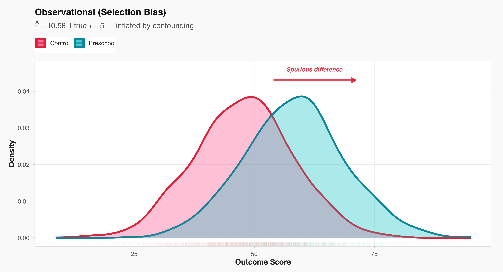
plot_rct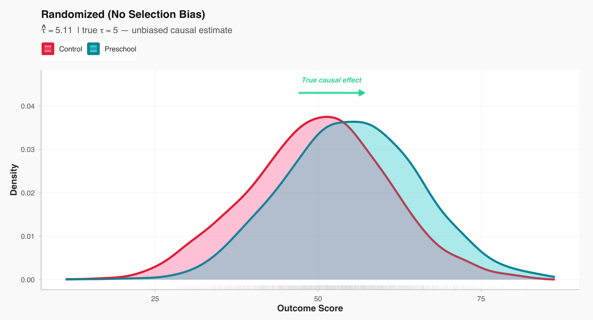
7.3 Experiments in Sociology: A Richer Example than Preschool
Survey experiments represent a common experimental design to identify ‘causal effect’ in social and political sciences. In essence, a survey experiment embeds an experimental treatment—like as a variation in question wording, framing, or informational content—within a survey instrument. Survey experiments allow us to identify causal effect because we are able to randomly assign individuals to a ‘treatment’ and ‘control’ group. Respondents are randomly assigned to different versions of the survey, which then allows researchers to assess how specific manipulations influence attitudes, beliefs, or behaviors. This approach enables scholars to test theoretical propositions about social and political processes under controlled conditions while maintaining the external validity of survey-based research.
Let’s look at the following hypothetical examples of ‘vignette questions’ in survey experiments.
Example 1 (Vignette Question 1)
In Town A, most employers (around 80 %) pay their employees a living wage — enough for a decent standard of living. Almost everyone in the community (about 90 %) believes that employers should pay a fair wage, even if it slightly reduces their profits.
Now imagine Mr. Hasan Ali, who owns a small local business. One of his workers has asked for a raise to cover rising food and rent costs.
Question: How likely do you think Mr. Hasan Ali is to grant the raise and pay his worker a fair wage?
(1 = Very unlikely … 7 = Very likely)
Example 2 (Vignette Question 2)
In Town B, most employers (around 80 %) pay a living wage, but only about 20 % believe employers should do so — most say profit comes first.
Now imagine Mr. Hasan Ali, who owns a small local business. One of his workers has asked for a raise to cover rising food and rent costs.
Question: How likely do you think Mr. Hasan Ali is to grant the raise and pay his worker a fair wage?
(1 = Very unlikely … 7 = Very likely)
Results of the Survey Experiment
The result of the hypothetical survey experiment is interesting: norms powerfully shape people’s predictions about economic outcome, even when objective circumstances remain constant. In both vignettes, respondents evaluated the same scenario—Mr. Hasan Ali, a small business owner facing a worker’s request for a raise to cover rising costs. The economic reality was identical across conditions: in both Town A and Town B, approximately 80% of local employers pay a living wage. Yet when told that 90% of the community believed employers should pay fair wages (the high normative expectation condition), respondents rated Mr. Ali as significantly more likely to grant the raise (M = 5.8) compared to when only 20% held this belief (the low normative expectation condition, M = 4.2). This difference of 1.6 points on a 7-point scale—a 38% increase in perceived likelihood—demonstrates a very large effect (difference = 1.40) that is both statistically significant (p < .001) and practically meaningful.
This finding illuminates how normative climates function as interpretive frameworks that fundamentally alter our expectations about individual behavior. Respondents in the high-expectation condition didn’t merely think Mr. Ali should grant the raise; they genuinely expected he would do so, even though they knew nothing else about him personally. The prevailing normative climate—what most people in the community believe is right—becomes a powerful heuristic for predicting how any given person will act. When fairness is the shared norm, we anticipate that individuals will align their behavior accordingly. When profit-maximization dominates the normative landscape, we become skeptical that anyone will deviate from self-interest, regardless of what the actual behavioral data shows. In essence, what a community collectively values doesn’t just influence moral judgments; it shapes the very reality people expect to encounter in their economic interactions.
library(ggplot2)
library(dplyr)
# 1. Simulate data
set.seed(123)
n <- 200
data <- data.frame(
Condition = rep(c("High Normative Expectation", "Low Normative Expectation"), each = n),
Score = c(rnorm(n, mean = 5.8, sd = 1.1), rnorm(n, mean = 4.2, sd = 1.3))
)
# 2. Calculate summary stats
summary_stats <- data %>%
group_by(Condition) %>%
summarise(
mean = mean(Score),
sd = sd(Score),
se = sd / sqrt(n()),
ci_low = mean - 1.96 * se,
ci_high = mean + 1.96 * se
)
# 3. Calculate significance
t_res <- t.test(Score ~ Condition, data = data)
p_val <- t_res$p.value
sig_label <- ifelse(p_val < 0.001, "***",
ifelse(p_val < 0.01, "**",
ifelse(p_val < 0.05, "*", "ns")))
# 4. Calculate effect size metrics
diff_means <- mean(data$Score[data$Condition == "High Normative Expectation"]) -
mean(data$Score[data$Condition == "Low Normative Expectation"])
cohens_d <- diff_means / sd(data$Score)
ggplot(data, aes(x = Condition, y = Score, fill = Condition)) +
# Violin plot
geom_violin(
alpha = 0.8,
trim = FALSE,
scale = "width",
color = NA
) +
# Individual points with jitter
geom_jitter(
width = 0.15,
alpha = 0.35,
size = 1.8,
color = "gray20"
) +
# Mean with error bars
geom_errorbar(
data = summary_stats,
aes(x = Condition, ymin = ci_low, ymax = ci_high),
width = 0.15,
linewidth = 1.3,
color = "black",
inherit.aes = FALSE
) +
geom_point(
data = summary_stats,
aes(x = Condition, y = mean),
size = 6,
shape = 21,
fill = "white",
color = "black",
stroke = 2.5,
inherit.aes = FALSE
) +
# Arrow showing difference
annotate("segment", x = 1.2, xend = 1.8, y = 5.2, yend = 5.2,
arrow = arrow(length = unit(0.35, "cm"), ends = "both", type = "closed"),
linewidth = 1.2, color = "#BD3786") +
annotate("label", x = 1.5, y = 5.2,
label = sprintf("Δ = +%.2f***", diff_means),
size = 4.5, fontface = "bold", fill = "white",
label.padding = unit(0.5, "lines"),
color = "#BD3786") +
scale_fill_viridis_d(option = "plasma", begin = 0.15, end = 0.85, direction = 1) +
scale_x_discrete(labels = c("High Normative\nExpectation", "Low Normative\nExpectation")) +
labs(
title = "High Normative Expectations Drive Fairness Perceptions",
subtitle = sprintf("Effect size: Cohen's d = %.2f | 95%% CI shown | p < .001", cohens_d),
x = "Experimental Condition",
y = "Perceived Fairness of Raise (1–7 Likert Scale)"
) +
theme_minimal(base_size = 14) +
theme(
legend.position = "none",
plot.title = element_text(face = "bold", size = 17, hjust = 0.5, margin = margin(b = 8)),
plot.subtitle = element_text(hjust = 0.5, size = 11, color = "gray30", margin = margin(b = 15)),
axis.title.x = element_text(face = "bold", size = 12, margin = margin(t = 10)),
axis.title.y = element_text(face = "bold", size = 12, margin = margin(r = 10)),
axis.text.x = element_text(size = 11, face = "bold", lineheight = 0.9),
axis.text.y = element_text(size = 11),
panel.grid.major.x = element_blank(),
panel.grid.minor = element_blank(),
panel.grid.major.y = element_line(color = "gray90", linewidth = 0.5),
plot.background = element_rect(fill = "white", color = NA),
plot.margin = margin(20, 20, 20, 20)
) +
coord_cartesian(ylim = c(1, 7))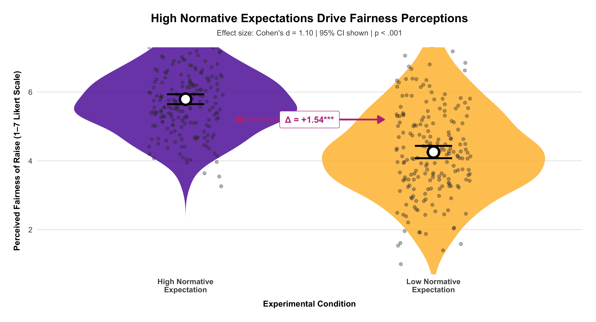
The growing use of survey experiments reflects a broader methodological shift toward identifying causal mechanisms in the study of social and political phenomena. Unlike observational survey data, which can be limited by issues of confounding and self-selection, the random assignment inherent in experimental designs allows for stronger claims about causality. At the same time, because survey experiments are typically administered to samples that are representative of broader populations, they preserve many of the advantages of traditional surveys, such as generalizability and relevance to real-world contexts. For instance, researchers might test how framing immigration policy in economic versus humanitarian terms affects public opinion, or how varying candidate characteristics—such as gender, race, or ideology—influences voter evaluations.
In the broader social and behavioral sciences, survey experiments are an essential tool for probing the various dimensions of human judgment and decision-making. They have been used to explore topics ranging from racial attitudes and gender bias to the dynamics of political polarization and trust in institutions. Survey experiments continue to play a central role in advancing empirical inquiry and deepening our understanding of the mechanisms that shape public opinion and social behavior.
When offers are randomized, we can always estimate the intention-to-treat (ITT): the average outcome difference by offer, regardless of whether families actually move. If some families do not use their voucher (non-compliance), ITT is the policy-relevant effect of the offer. If we also measure who actually moved because of the offer, we can estimate the treatment-on-the-treated (often called LATE under standard assumptions): the effect among compliers (families whose moving decision responds to the offer). Formally:
Intention-to-Treat (ITT) \[ \text{ITT} \;=\; \mathbb{E}[Y \mid Z=1] - \mathbb{E}[Y \mid Z=0] \] where (Z) is the randomized offer (e.g., E vs. C), and (Y) is an outcome.
Complier Average Causal Effect (LATE) / Treatment-on-the-Treated (TOT) \[ \text{LATE} \;=\; \frac{\mathbb{E}[Y \mid Z=1]-\mathbb{E}[Y \mid Z=0]} {\mathbb{E}[D \mid Z=1]-\mathbb{E}[D \mid Z=0]}\, \] where (D) is take-up (e.g., moved to low-poverty tract). This is the Wald/IV estimator using (Z) as an instrument for (D).
Interpretation. Randomization equates arms at baseline in expectation; the observed one-year mean difference is a plausible PT effect, subject to sampling variation. If a clinically important difference requires ≥6 ODI points, the synthetic trial’s 1–3 point advantage would be modest.
7.4 Why randomization is powerful (and what it does not do)
Randomization ensures that—apart from random noise—the only systematic difference between groups is the treatment assignment. This is true even for unmeasured or unmeasurable factors. Randomization does not guarantee identical groups realized; it guarantees exchangeability in expectation, which is why we report uncertainty (SEs/CIs) and test whether differences are too large to be plausibly due to randomization alone.
library(tibble); library(knitr)
tribble(
~Term, ~Definition,
"Experiment / Trial", "A design that assigns treatments to units (ideally at random).",
"Experimental units", "The entities assigned (here: families or focal children).",
"Subjects / Participants", "When units are people, we refer to them as subjects/participants.",
"Factor", "An explanatory variable manipulated by the researcher (e.g., voucher offer).",
"Level", "A specific setting of a factor (E, S, C).",
"Treatment", "A specific combination of factor levels applied to a unit.",
"Response (Outcome)", "A measured result potentially affected by treatment (e.g., test score).",
"Compliance", "Whether units take up the offered treatment (move vs. no move).",
"Attrition", "Loss to follow-up; outcomes not observed for some units.",
"Interference", "One unit’s treatment affects another’s outcome (spillovers)."
) |>
kable(align = "ll")| Term | Definition |
|---|---|
| Experiment / Trial | A design that assigns treatments to units (ideally at random). |
| Experimental units | The entities assigned (here: families or focal children). |
| Subjects / Participants | When units are people, we refer to them as subjects/participants. |
| Factor | An explanatory variable manipulated by the researcher (e.g., voucher offer). |
| Level | A specific setting of a factor (E, S, C). |
| Treatment | A specific combination of factor levels applied to a unit. |
| Response (Outcome) | A measured result potentially affected by treatment (e.g., test score). |
| Compliance | Whether units take up the offered treatment (move vs. no move). |
| Attrition | Loss to follow-up; outcomes not observed for some units. |
| Interference | One unit’s treatment affects another’s outcome (spillovers). |
7.5 When assignment is not randomized: explaining selection bias
Suppose families with higher parental SES are more successful at obtaining a coveted preschool slot. If parental SES is positively related to pre-treatment math aptitude, the treated group will start out stronger even if the program has zero effect. Post-treatment differences then confound program impact with pre-existing advantage.
The goal is to illustrate—using a small synthetic classroom example—the difference between non-random (selection-based) assignment and complete randomization, and to show how chance imbalances naturally arise even under valid randomization.
We begin by constructing an artificial roster of 32 students, each with a measure of parents’ socioeconomic status (SES) and a measure of math aptitude. The two are deliberately generated to be positively correlated, demonstrating a realistic situation in which students from more advantaged families tend to score higher. We then simulate two alternative assignment mechanisms for labeling students as “treated” or “control.” In the first, the probability of being assigned to treatment increases with parental SES; this reproduces selection bias: higher-SES (and thus, on average, higher aptitude) students tend to be treated . We then summarize pre-treatment math scores by group under each regime to highlight the consequences of assignment. With selection, the treated group has a higher mean math aptitude before any intervention; in other words, group differences pre-exist the treatment.
Finally, to emphasize that randomization controls bias but not sampling fluctuation, we repeat the random assignment five independent times and plot the resulting pre-treatment math distributions. Even when randomization is valid, the realized treated and control groups may differ more or less from run to run simply by chance. These five panels illustrate the key logic behind randomization inference: what matters is not a single realized allocation, but the distribution of allocations that could have been observed under the same randomization rule.
#| label: sel-vs-rand-tables
#| tbl-cap: "Pre-treatment math aptitude by group: non-random selection vs. complete randomization (synthetic)."
#| dependson: class-setup
#| message: false
#| warning: false
library(knitr); library(dplyr)
summ <- function(df) df %>% group_by(group) %>%
summarise(n=n(), mean_mathapt = round(mean(mathapt),1),
sd = round(sd(mathapt),1), .groups="drop")
kable(list(
`Non-random selection` = summ(nr_alloc),
`Completely randomized` = summ(cr_alloc)
), caption = NULL)
|
|
Under selection, the treatment group begins with a higher mean math aptitude; under randomization, pre-treatment means are similar. Only the randomized design supports causal interpretation of the post-treatment contrast.
7.6 Completely randomized designs: random variation as a baseline
Even with randomization, treatment–control differences will vary by chance across replications. This variation sets the baseline against which real treatment effects must be compared.
library(dplyr)
library(tidyr)
library(ggplot2)
# compute run-wise Δ(T − C)
run_labels <- means_by_run %>%
tidyr::pivot_wider(names_from = group, values_from = mean_mathapt) %>%
mutate(
run_num = readr::parse_number(run),
delta = `T` - C,
lab = sprintf("Randomization %d — Δ(T−C)=%.1f", run_num, delta)
) %>%
arrange(run_num) %>%
select(run, lab)
# attach labels to long allocation data
allocs_df_labeled <- allocs_df %>%
left_join(run_labels, by = "run")
ggplot(allocs_df_labeled, aes(mathapt, fill = group)) +
geom_density(alpha = .25, color = NA) +
facet_wrap(~ lab, ncol = 3) +
scale_fill_manual(values = c(C="blue", T="yellow"),
labels = c(C="Control", T="Treatment")) +
labs(
title = "Chance imbalances under valid randomization",
subtitle = "Each panel is one random allocation; pre-treatment T–C gaps (Δ) differ by chance.",
x = "Math aptitude (pre-treatment)",
y = NULL,
fill = NULL,
) +
theme_minimal(base_size = 12) +
theme(
legend.position = "top",
strip.text = element_text(face = "bold"),
plot.title = element_text(face = "bold"),
plot.subtitle = element_text(margin = margin(b = 6))
)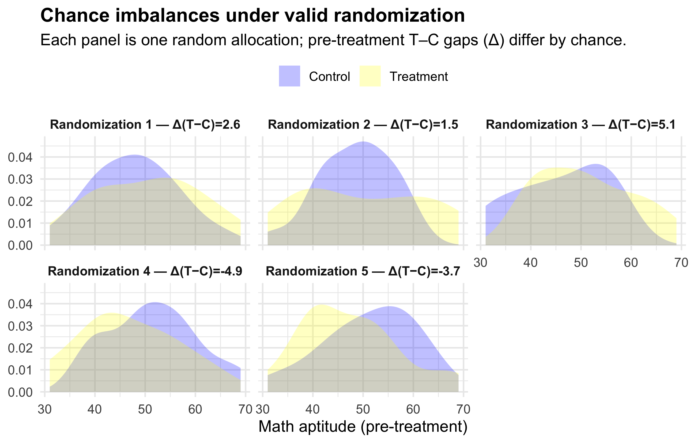
knitr::kable(means_by_run %>% tidyr::pivot_wider(names_from = group, values_from = mean_mathapt) %>%
mutate(diff_T_minus_C = round(T - C, 2)),
align="lrrr")| run | C | T | diff_T_minus_C |
|---|---|---|---|
| alloc1 | 47.81250 | 50.4375 | 2.62 |
| alloc2 | 48.52632 | 50.0000 | 1.47 |
| alloc3 | 45.91667 | 51.0500 | 5.13 |
| alloc4 | 51.56250 | 46.6875 | -4.88 |
| alloc5 | 51.21429 | 47.5000 | -3.71 |
The figure above shows five different “coin-flip” randomizations of the same classroom into treatment and control. Because the assignment is random, none of these splits is designed to create a treated group with higher or lower ability — but by chance alone, sometimes the treated students will happen to have slightly higher pre-treatment math scores, sometimes slightly lower. Each panel reports the observed gap in average math aptitude before treatment (Δ), and you can see that this Δ is not the same across runs. The key point is: randomization eliminates systematic bias, but it does not guarantee perfectly equal groups in every single draw. Chance imbalances are normal and expected. What matters is that these imbalances are not caused by selection, but arise from the same random mechanism we can account for statistically.
Please note that they are all of these randomizations are valid because they all come from the same fair randomization rule. Some happen to have a Δ of 5 points, some 1.5, some negative — but those differences arise purely by chance, not by design. Randomization does not aim to produce the smallest imbalance; it aims to produce a comparison whose difference is not confounded by selection.
If you had to choose one “best” by some secondary criterion (e.g. smallest imbalance in pre-treatment means), you could pick the run with Δ closest to zero. But that choice would be post-hoc and would itself corrupt the logic of random assignment — you cannot “pick the randomization that looks good” without re-introducing bias.
The takeaway is that randomization equalizes groups on average, not in every realized sample. Statistical inference quantifies whether a post-treatment difference is larger than what randomization alone would plausibly produce.
7.8 A quick exercise (design critique)
A winery asks five food-magazine writers to rate its wine, then—immediately—the competitor’s wine; it compares the two ratings. Problems: tiny and unrepresentative sample; order effects; lack of blinding; carryover effects; conflict of interest. Better design: recruit a larger, blinded panel; randomize order of pours within matched pairs; include replicates; analyze as a matched-pairs experiment with order as a block.
7.9 Summary
Randomized comparative experiments are the most credible basis for causal inference: by severing the link between potential outcomes and treatment assignment, they allow outcome differences to be attributed to the treatment, quantified with uncertainty. When carefully implemented—using blocks, matching, and transparent estimands—they remain the gold standard for evaluating interventions in sociology, policy, and public health.
8 Chapter 8: Probabilities
The notion of probability is central to understanding ‘statistical significance.’ We are all familiar with expressions like “there is an 80 percent chance of rain tomorrow,” meaning the probability is 0.8 and must fall between 0 and 1. Yet probability is far more than a casual way of talking about chance—it is a formal branch of mathematics that provides the foundation for modern statistical reasoning. In social science research, when our studies are carefully designed, the mathematical principles of probability become deeply relevant to the validity and credibility of our findings. Ultimately, it is the way we conduct our research that determines whether and how probability calculations can meaningfully inform our conclusions.
The concept of probability has its roots in the work of seventeenth-century mathematicians who sought to understand games of chance. Although probability theory continues to underpin gambling and games of risk, its intellectual significance extends far beyond these origins. The same mathematical principles that once described dice and cards later evolved into the foundation of modern statistical inference—the logic through which researchers draw conclusions about the world from data. In contemporary research, probability theory enables us to make valid generalizations from random samples to entire populations and to assess causal relationships through the controlled use of randomization in experimental designs.
Probability can be understood as the long-run relative frequency of an outcome. In essence, when a random process is repeated many times, patterns begin to emerge that reflect stable underlying probabilities. This principle allows us to define probability itself: it is the proportion of times a particular outcome occurs over an indefinitely large number of trials. For example, while the result of any single coin toss is inherently unpredictable—assuming the coin is fair—the relative frequencies of heads and tails become highly consistent over many tosses. These stable long-run proportions represent the true probabilities of each possible outcome.
Coin toss demonstration (long-run relative frequency)
Calculate the cumulative proportion of heads as you go:
\[ \frac{\text{Total number of heads so far}}{\text{Total number of throws (trials) so far}} \]
#| label: fig-running-proportion-pnas
#| fig-cap: "Running proportion of heads from a fair coin. Early values wander widely, but the path settles near 0.5 as tosses accumulate."
#| fig-width: 7.5
#| fig-height: 4.5
#| warning: false
#| message: false
set.seed(42)
n <- 800
x <- rbinom(n, 1, 0.5)
phat <- cumsum(x) / seq_len(n)
suppressPackageStartupMessages({
library(tibble)
library(ggplot2)
})
# PNAS-ish minimal theme
theme_pnas <- function(base_size = 12){
theme_minimal(base_size = base_size) %+replace%
theme(
plot.title = element_text(face = "bold", hjust = 0.5),
plot.subtitle = element_text(margin = margin(b = 8), hjust = 0.5),
axis.title.x = element_text(face = "bold", margin = margin(t = 6)),
axis.title.y = element_text(face = "bold", margin = margin(r = 6)),
axis.text = element_text(color = "gray20"),
panel.grid.minor = element_blank(),
panel.grid.major.x = element_blank(),
panel.grid.major.y = element_line(color = "gray90", linewidth = 0.5),
plot.background = element_rect(fill = "white", color = NA),
panel.background = element_rect(fill = "white", color = NA),
legend.position = "none"
)
}
df <- tibble(t = seq_len(n), phat = phat)
ggplot(df, aes(x = t, y = phat, color = t)) +
geom_path(linewidth = .7, lineend = "round") +
geom_hline(yintercept = 0.5, linetype = "dashed", linewidth = 0.03, color = "gray40") +
scale_color_viridis_c(option = "plasma") +
scale_y_continuous(limits = c(0, 1), breaks = seq(0, 1, by = 0.1)) +
labs(
title = "Running Proportion of Heads",
subtitle = "A fair coin’s running mean converges toward 0.5 (Law of Large Numbers).",
x = "Number of tosses (t)",
y = expression(hat(p)[t])
) +
theme_pnas()
This simple simulation vividly demonstrates one of the most foundational ideas in probability and statistics—the law of large numbers. Each coin toss is inherently random: any single outcome offers no information about the next, and short sequences often fluctuate dramatically. However, as the number of tosses accumulates, these random ups and downs begin to balance out. The running proportion of heads, which initially swings erratically, gradually stabilizes near 0.5—the true probability for a fair coin. What we are witnessing is the convergence of the empirical or observed probability toward the theoretical probability. This convergence illustrates how randomness behaves in aggregate: while individual events remain unpredictable, the overall pattern becomes highly regular when trials are repeated many times. The figure thus offers a visual intuition for why sample averages and proportions form the cornerstone of statistical inference—because with enough observations, random variation cancels out, revealing the stable, underlying probability structure that governs the process.
Every probability model has two essential components: (1) a sample space, denoted \(S\), which lists all possible outcomes of an experiment, and (2) a probability assignment that specifies the likelihood of each event within that space.
A sample space:
\[ S = \\{\\text{Head},\\ \\text{Tail}\\} \]
Probability of each outcome in the sample space:
\[ \\Pr(\\text{Head}) = 0.5 \]
\[ \\Pr(\\text{Tail}) = 0.5 \]
A probability model for a series of coin flips is made up of separate models for single flips, combined in a particular way. “)
Defining a sample space: the free-throw shooter
To define a probability model, we must first specify the sample space—the set of all possible outcomes of the random process we are studying.
Consider observing a basketball player taking three free throws. What should our sample space be?
If we are only interested in the number of successful shots, a simple and sufficient sample space is
[ S = {0, 1, 2, 3}, ]
where each element represents the total number of successful free throws in three attempts.
Alternatively, if we wish to model the outcome of each individual shot, we can define a more detailed sample space consisting of every possible sequence of hits and misses:
[ S = {(0,0,0), (0,0,1), (0,1,0), (0,1,1), (1,0,0), (1,0,1), (1,1,0), (1,1,1)}. ]
The choice between these two representations depends on the goals of our analysis.
If our objective is to summarize performance in terms of overall success rates, the simpler sample space ({0,1,2,3}) suffices.
If, however, we wish to connect individual-level outcomes to a model of per-shot success probability—such as assuming each shot is an independent Bernoulli trial—the expanded space of ordered triples provides the necessary structure.
In general, choosing the appropriate sample space requires a clear understanding of how the probability model will be applied.
The basic rules of probability - Rules 1 and 2
Probability is a branch of mathematics that follows a set of formal rules.
Two of the most fundamental are as follows.
Rule 1: Probabilities always lie between 0 and 1.
A probability of 0 means that an event is impossible, while a probability of 1 means that the event is certain to occur.
For any event (A),
[ 0 (A) ]
Rule 2: The probability of the entire sample space must equal 1.
That is, the total probability across all possible outcomes of an experiment must sum to unity:
[ () = 1 ]
These two rules establish the mathematical boundaries of probability: every individual event has a likelihood somewhere between 0 and 1, and the combined probability of all possible outcomes must account for every eventuality.
Rule 3 (Addition for disjoint events)
Two events (A) and (B) are disjoint (or mutually exclusive) when they share no outcomes; equivalently, (A B = ). In that case, the probability that either event occurs equals the sum of their probabilities: [ (A B) ;=; (A B) ;=; (A) + (B). ] When (A) and (B) are not disjoint (they overlap), the intersection would be double-counted by ((A)+(B)). The general addition rule is therefore [ (A B) ;=; (A) + (B) - (A B), ] with the disjoint case recovered by setting ((A B)=0).
#| echo: false
#| message: false
#| warning: false
#| fig-width: 9
#| fig-height: 5
#| fig-cap: "Disjoint vs. not disjoint events: when A∩B={} (disjoint), P(A∪B)=P(A)+P(B); otherwise subtract P(A∩B)."
library(ggplot2)
# Helper: circle as polygon
circle_df <- function(cx, cy, r = 1, n = 360) {
t <- seq(0, 2*pi, length.out = n)
data.frame(x = cx + r * cos(t),
y = cy + r * sin(t))
}
# Build polygons for both scenarios, tagging with a 'panel' column
# Panel 1: disjoint
A1 <- cbind(circle_df(-1.1, 0, 1), set="A", panel="A and B disjoint")
B1 <- cbind(circle_df( 1.1, 0, 1), set="B", panel="A and B disjoint")
# Panel 2: overlapping
A2 <- cbind(circle_df(-0.6, 0, 1), set="A", panel="A and B not disjoint")
B2 <- cbind(circle_df( 0.6, 0, 1), set="B", panel="A and B not disjoint")
poly <- rbind(A1, B1, A2, B2)
poly$grp <- interaction(poly$set, poly$panel, drop=TRUE)
# A/B labels
labs_AB <- rbind(
data.frame(x=-1.1, y=0.05, label="A", panel="A and B disjoint"),
data.frame(x= 1.1, y=0.05, label="B", panel="A and B disjoint"),
data.frame(x=-0.6, y=0.05, label="A", panel="A and B not disjoint"),
data.frame(x= 0.6, y=0.05, label="B", panel="A and B not disjoint")
)
# Rule labels (plotmath strings) — note %cup% and %cap%
labs_rule <- rbind(
data.frame(x=0, y=1.45, label="P(A %cup% B) == P(A) + P(B)", panel="A and B disjoint", bold=TRUE),
data.frame(x=0, y=-1.45, label="A %cap% B == {} ~ (disjoint)", panel="A and B disjoint", bold=FALSE),
data.frame(x=0, y=1.45, label="P(A %cup% B) == P(A) + P(B) - P(A %cap% B)", panel="A and B not disjoint", bold=TRUE),
data.frame(x=0, y=-1.45, label="A %cap% B != {} ~ (not~disjoint)", panel="A and B not disjoint", bold=FALSE)
)
# Colors
colA <- "#F6C667" # warm gold
colB <- "#CD2990" # soft violet
edge <- "grey25"
ggplot() +
# A and B polygons
geom_polygon(data=poly,
aes(x, y, group=grp, fill=set),
color=edge, linewidth=0.7, alpha=0.85) +
# A/B labels
geom_text(data=labs_AB, aes(x, y, label=label), fontface="bold", size=5) +
# Rules (parse=TRUE enables plotmath so ∪ and ∩ render)
geom_text(data=labs_rule,
aes(x, y, label=label, fontface=ifelse(bold, "bold", "plain")),
size=4.6, parse=TRUE) +
scale_fill_manual(values=c(A=colA, B=colB)) +
coord_equal(xlim=c(-2.3, 2.3), ylim=c(-1.9, 1.9), expand=FALSE) +
facet_wrap(~ panel, ncol=2) +
guides(fill="none") +
theme_void(base_size=13) +
theme(
strip.text = element_text(face="bold", size=13),
plot.margin = margin(6, 10, 6, 10)
)
The complement rule (Rule 4)
The probability of an event not occurring equals one minus the probability that it does occur:
[ P( A) = 1 - P(A) ]
also implied, by rearranging the terms, is this:
[ P(A) = 1 - P( A) ]
Finite vs. continuous probability models
A finite probability model is one in which the sample space consists of a discrete and countable set of possible outcomes. In such models, each outcome can be explicitly listed, and a probability is assigned to each element of the sample space.
Typical examples include outcomes such as obtaining heads or tails in a coin toss, selecting a political party from a predefined list, observing the number of pips on a pair of dice, or recording the number of days a student is absent during a semester.
Because the sample space is finite (or at least enumerable), the probabilities of all possible outcomes must sum to 1:
[ _i P(x_i) = 1. ]
In contrast, a continuous probability model has a continuous sample space—an uncountably infinite set of possible values. Such models are used when outcomes are measured on a continuous scale, as with height, weight, or time to complete a race. In practice, even variables that are recorded in rounded or discrete units (e.g., test scores or height measured to the nearest centimeter) are often treated as continuous when their possible values are numerous and closely spaced.
In continuous models, probabilities are not assigned to individual points but rather to intervals of possible outcomes, using a probability density function (PDF) represented by a smooth density curve. The total area under the density curve equals 1:
[ _{-}^{} f(x),dx = 1. ]
Finite models are most appropriate for categorical or discrete numerical outcomes, while continuous models describe probabilistic behavior over measurable quantities that vary smoothly across a range of values.
Probability models for discrete numerical values
Sometimes the basic outcomes are discrete numerical counts rather than categories. In such cases we describe uncertainty with a probability mass function (pmf) that assigns a probability to each attainable count, with all probabilities non-negative and summing to one. For example, a distribution for the lifetime number of children places probability mass on the counts (0,1,2,3,4) and a grouped tail category (). The vertical spikes show the probability attached to each count; the higher the spike, the more common that outcome in the population. As always, the distribution must satisfy (_{x} P(X=x)=1), so the heights of the spikes add up to one.
#| echo: false
#| message: false
#| warning: false
#| fig-width: 8
#| fig-height: 5
#| fig-cap: "Discrete pmf for daily coffee consumption: probabilities at counts 0–4 and a grouped tail (≥5)."
library(ggplot2)
# Example pmf for cups of coffee per day (sums to 1)
df <- data.frame(
cups = factor(c("0","1","2","3","4","≥5"),
levels = c("0","1","2","3","4","≥5"), ordered = TRUE),
p = c(0.18, 0.24, 0.31, 0.16, 0.07, 0.04)
)
# Dark, flashy pink for spikes
pink <- "#E00070" # deep hot pink
ggplot(df, aes(x = cups, y = p)) +
# stems
geom_segment(aes(xend = cups, y = 0, yend = p),
linewidth = 2.2, color = pink) +
# lollipop heads
geom_point(size = 3.8, color = pink) +
# axis & limits
scale_y_continuous(limits = c(0, max(df$p) * 1.15),
expand = expansion(mult = c(0, .02))) +
labs(x = "cups of coffee per day",
y = "probability") +
theme_classic(base_size = 14) +
theme(
axis.title = element_text(face = "bold"),
axis.text.x = element_text(margin = margin(t = 6)),
axis.text.y = element_text(margin = margin(r = 6)),
panel.grid.major.y = element_line(color = "grey85",
linewidth = 0.4,
linetype = "dotted"),
panel.grid.minor = element_blank()
)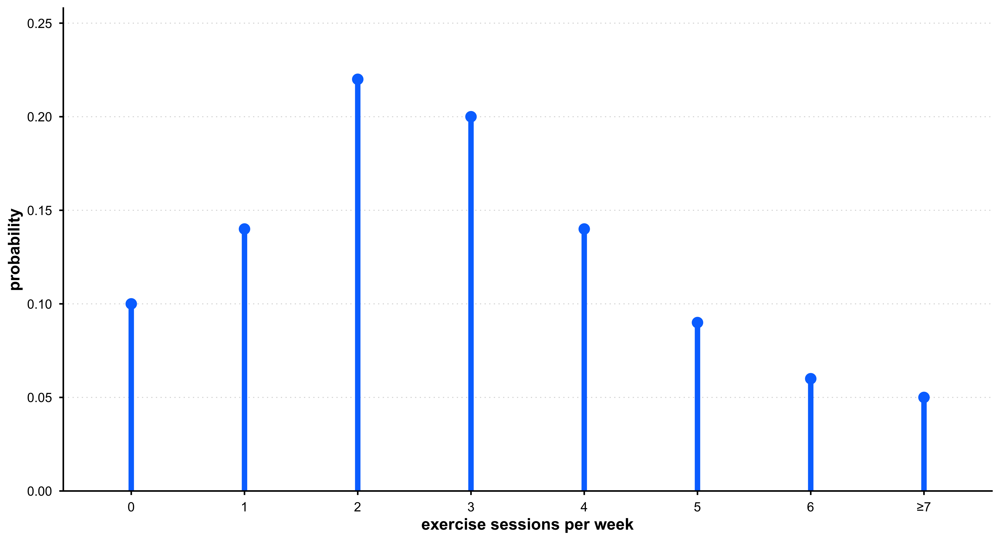
Probability models for continuous numerical variables
A continuous sample space contains an uncountable infinity of values between any two points. For example, the interval ([0,1]) contains infinitely many real numbers (e.g., (0.1, 0.15, 0.155, 0.1555, )). In a continuous probability model the sample space can be written as [ S = {,x : 0 x ,}. ] Probabilities are assigned to intervals, not to individual points, via a probability density function (f(x)). The probability that (X) falls in an interval is the area under the density curve over that interval. For the uniform model on ([0,1]), (f(x)=1) for (0x), so [ (0.3 X ) ;=; _{0.3}^{0.7} 1,dx ;=; 0.4, ] which equals the width of the interval.
#| echo: false
#| message: false
#| warning: false
#| fig-width: 8
#| fig-height: 4.8
#| fig-cap: "Uniform(0,1) density: probabilities are areas. Here the shaded interval [0.3, 0.7] has area 0.4."
library(ggplot2)
# A flashy dark pink
pink <- "#E00070"
# Data frames for the base line and the shaded interval
df_base <- data.frame(x = c(0, 1), y = 1) # density level
df_fill <- data.frame(xmin = 0.3, xmax = 0.7, ymin = 0, ymax = 1)
ggplot() +
# Shaded probability for [0.3, 0.7]
geom_rect(data = df_fill,
aes(xmin = xmin, xmax = xmax, ymin = ymin, ymax = ymax),
fill = scales::alpha(pink, 0.35), color = NA) +
# Density "curve" for Uniform(0,1) (height = 1)
geom_segment(aes(x = 0, xend = 1, y = 1, yend = 1), linewidth = 1.1) +
# Vertical boundaries 0, 1 and interval ticks 0.3, 0.7
geom_segment(aes(x = 0, xend = 0, y = 0, yend = 1), linewidth = 0.8) +
geom_segment(aes(x = 1, xend = 1, y = 0, yend = 1), linewidth = 0.8) +
geom_segment(aes(x = 0.3, xend = 0.3, y = 0, yend = 1),
linewidth = 0.9, color = pink) +
geom_segment(aes(x = 0.7, xend = 0.7, y = 0, yend = 1),
linewidth = 0.9, color = pink) +
# Labels (no parse; use Unicode ≤ to avoid plotmath parsing issues)
annotate("text", x = 0.5, y = 1.06,
label = "Height = 1", fontface = "bold") +
annotate("text", x = 0.72, y = 0.85,
label = "Probability = Area = 0.4", fontface = "bold") +
annotate("text", x = 0.5, y = 0.12,
label = "P(0.3 \u2264 X \u2264 0.7) = 0.4") +
# Axes
scale_x_continuous(breaks = c(0, 0.3, 0.7, 1),
labels = c("0", "0.3", "0.7", "1"),
limits = c(-0.02, 1.02),
expand = c(0, 0)) +
scale_y_continuous(breaks = c(0, 0.5, 1),
limits = c(0, 1.1),
expand = c(0, 0.02)) +
labs(x = NULL, y = NULL) +
theme_classic(base_size = 14) +
theme(
axis.line = element_blank(),
axis.ticks = element_blank(),
panel.grid.major.y = element_line(color = "grey88", linewidth = 0.4, linetype = "dotted"),
panel.grid.major.x = element_line(color = "grey92", linewidth = 0.4, linetype = "dotted"),
plot.margin = margin(10, 10, 6, 10)
)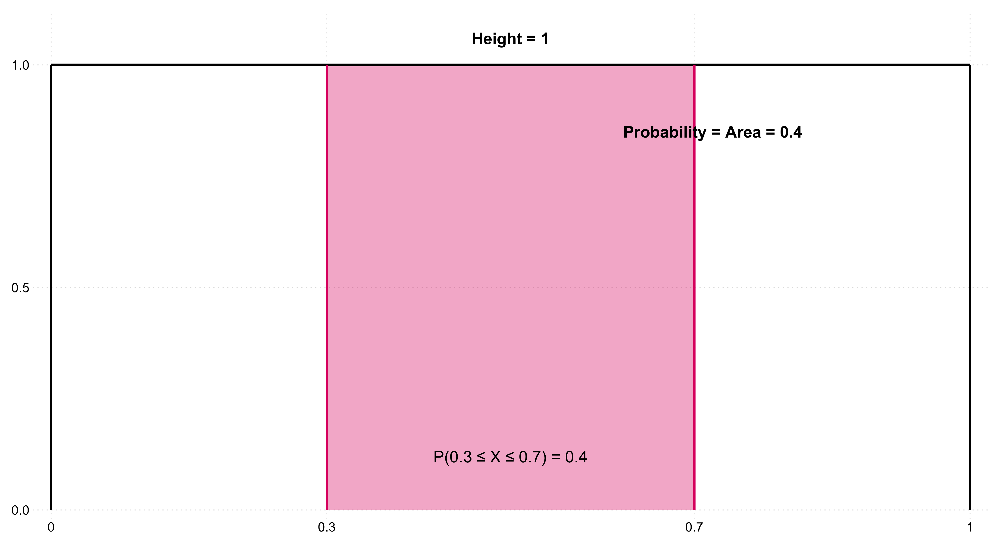
annotate("text", x=.5, y=.12, label="P(0.3 <= X) == 0.4 + P(X > 0.7)", parse=TRUE)mapping: x = ~x, y = ~y
geom_text: na.rm = FALSE, parse = TRUE
stat_identity: na.rm = FALSE
position_identity # or
annotate("text", x=.5, y=.12, label="P(bold(\"0.3 \u2264 X \u2264 0.7\")) == 0.4")mapping: x = ~x, y = ~y
geom_text: na.rm = FALSE
stat_identity: na.rm = FALSE
position_identity Probabilities from other density curves
So far, we have used uniform densities to describe probabilities over equal-width intervals. Many real-world quantities, however, follow non-uniform distributions.
For instance, the distribution of women’s heights in the U.S. is approximately normal: [ X N(, ) = N(64.5, 2.5) ] where the mean height is (64.5) inches and the standard deviation is (2.5) inches.
Suppose we ask: What proportion of women have heights between 59.5″ and 69.5″?
These bounds are roughly ±2 standard deviations from the mean, and for a normal distribution the area between them is about 0.95.
Thus, about 95 % of women fall in that interval, and the probability of randomly selecting one such woman is also approximately 0.95.
In this sense, the proportion under the curve directly corresponds to the probability of selection when sampling from the population.
The Empirical Rule: 68–95–99.7 for Normal Distributions
In a normal distribution, most of the data cluster around the mean, and probabilities can be described using the empirical rule:
- Approximately 68% of values fall within one standard deviation (σ) of the mean (μ).
- Approximately 95% fall within two standard deviations.
- Approximately 99.7% fall within three standard deviations.
These proportions represent the cumulative areas under the density curve between μ ± 1σ, μ ± 2σ, and μ ± 3σ.
#| echo: false
#| message: false
#| warning: false
#| fig-width: 8
#| fig-height: 5.5
#| fig-cap: "The empirical 68–95–99.7 rule for the normal distribution."
library(ggplot2)
# Parameters
mu <- 64.5
sigma <- 2.5
x <- seq(mu - 4*sigma, mu + 4*sigma, length.out = 800)
y <- dnorm(x, mu, sigma)
df <- data.frame(x, y)
# Define shading areas
shade_1 <- subset(df, x >= mu - sigma & x <= mu + sigma)
shade_2 <- subset(df, x >= mu - 2*sigma & x <= mu + 2*sigma)
shade_3 <- subset(df, x >= mu - 3*sigma & x <= mu + 3*sigma)
# Colors — Matinain Pink palette
deep_pink <- "#E00070"
mid_pink <- "#F3C1D7"
light_pink <- "#F9E0EC"
outline <- deep_pink
# Plot
ggplot(df, aes(x, y)) +
# Shaded regions for 1σ, 2σ, 3σ
geom_area(data = shade_3, aes(y = y), fill = light_pink) +
geom_area(data = shade_2, aes(y = y), fill = mid_pink) +
geom_area(data = shade_1, aes(y = y), fill = deep_pink, alpha = 0.55) +
# Main curve
geom_line(color = outline, linewidth = 1.2) +
# Vertical lines at μ ± 1σ, 2σ, 3σ
geom_vline(xintercept = mu + c(-1, 0, 1)*sigma,
color = outline, linetype = c("dashed", "solid", "dashed"),
linewidth = 0.7) +
geom_vline(xintercept = mu + c(-2, 2)*sigma, color = outline,
linetype = "dotted", linewidth = 0.6) +
geom_vline(xintercept = mu + c(-3, 3)*sigma, color = outline,
linetype = "dotted", linewidth = 0.5) +
# Text annotations for 68–95–99.7 in black
annotate("text", x = mu, y = 0.13, label = "68%", color = "black",
fontface = "bold", size = 5) +
annotate("text", x = mu, y = 0.085, label = "95%", color = "black",
fontface = "bold", size = 5) +
annotate("text", x = mu, y = 0.045, label = "99.7%", color = "black",
fontface = "bold", size = 5) +
# Arrows showing intervals
annotate("segment", x = mu - sigma, xend = mu + sigma, y = 0.12, yend = 0.12,
arrow = arrow(length = unit(0.2, "cm")), color = outline) +
annotate("segment", x = mu - 2*sigma, xend = mu + 2*sigma, y = 0.075, yend = 0.075,
arrow = arrow(length = unit(0.2, "cm")), color = outline) +
annotate("segment", x = mu - 3*sigma, xend = mu + 3*sigma, y = 0.035, yend = 0.035,
arrow = arrow(length = unit(0.2, "cm")), color = outline) +
# Labels and theme
labs(x = "Height (in inches)", y = "Density") +
theme_minimal(base_size = 14) +
theme(
plot.background = element_rect(fill = "white", color = NA),
panel.grid = element_blank(),
axis.line = element_line(color = "black"),
axis.title = element_text(face = "bold"),
axis.text = element_text(color = "black")
)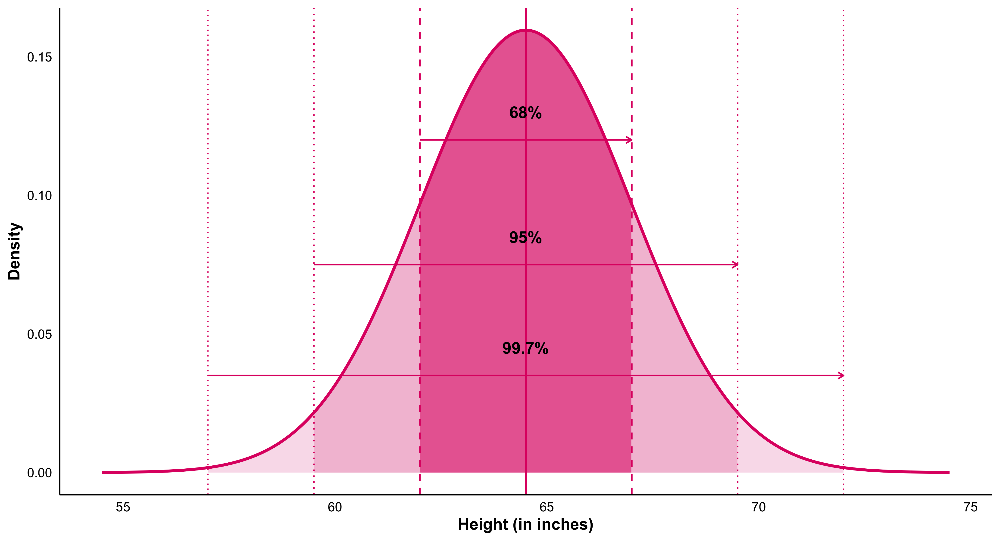
Probabilities from a normal density: the 68–95–99.7 rule
If (X N(,)), the empirical rule states that about 68% of the distribution lies within one standard deviation of the mean ([-, +]), about 95% lies within two standard deviations ([, +2]), and about 99.7% lies within three standard deviations ([, +3]). The figure below shows this for women’s heights, modeled as (N(64.5, 2.5)) inches: the curve is the density, the green arrows span the one-, two-, and three-sigma intervals, and the vertical guides mark the boundaries at (), (), and (). Areas under the curve over those spans correspond to the listed percentages.
Empirical rule for (N(,))
If (X N(,)), about 68% of values fall in ([-, +]), about 95% in ([, +2]), and about 99.7% in ([, +3]).
For women’s heights (N(64.5, 2.5)) (inches), the density curve shows green arrows spanning the one-, two-, and three-sigma intervals; vertical guides mark (), (), and (). The corresponding shaded areas equal the stated percentages.
#| echo: false
#| message: false
#| warning: false
# We'll use htmltools to construct HTML safely (no cat)
library(htmltools)
set.seed(42)
# ---------- Demo population (replace with your real data if you like) ----------
states <- c(state.name, "District of Columbia")
N <- length(states)
rate <- round(pmax(rnorm(N, mean = 5.3, sd = 2.0), 0.1), 1)
pop <- data.frame(state = states, murder = rate, stringsAsFactors = FALSE)
mu <- round(mean(pop$murder), 2)
# Two SRS samples of size 5
samp <- function() pop[sample.int(N, 5, replace = FALSE), c("state","murder")]
s1 <- samp(); s2 <- samp()
s1_mean <- sprintf("%.2f", mean(s1$murder))
s2_mean <- sprintf("%.2f", mean(s2$murder))
# Split population into two columns (1..26) and (27..51)
left <- transform(pop[1:26, ], idx = sprintf("%2d.", 1:26))
right <- transform(pop[27:51,], idx = sprintf("%2d.", 27:51))
# ---------- CSS (injected via htmltools; no cat) ----------
css <- tags$style(HTML(
"
.sd-wrap{display:grid; grid-template-columns: 320px 1fr; gap:28px; align-items:start;}
.samples{display:flex; flex-direction:column; gap:24px;}
.sample-box{
border:2px solid #111; border-radius:10px; padding:14px 16px; background:#fff;
font-family: ui-monospace, SFMono-Regular, Menlo, Monaco, Consolas, 'Courier New', monospace;
box-shadow:0 6px 22px rgba(0,0,0,.06);
}
.sample-title{font-weight:900; font-size:1.05rem; margin-bottom:8px;}
.sample-body .row{display:flex; justify-content:space-between; padding:.10rem 0;}
.sample-body .val{min-width:3ch; text-align:right;}
.sample-foot{
margin-top:8px; padding-top:8px; border-top:2px solid #111;
text-align:center; font-weight:900; font-size:1.05rem;
}
.population{background:#fff; border:0; padding:4px 8px;}
.pop-title{
text-align:center; font-weight:900; letter-spacing:.6px;
font-size:2.0rem; margin:0 0 4px 0;
font-family: ui-monospace, Menlo, monospace;
}
.pop-sub{ text-align:center; color:#555; font-style:italic; margin-bottom:10px; }
.pop-grid{ display:grid; grid-template-columns: 1fr 1fr; gap:18px; }
.pop-table{
border:2px solid #111; border-radius:10px; padding:10px 14px; background:#fff;
font-family: ui-monospace, Menlo, Monaco, Consolas, 'Courier New', monospace;
}
.pop-table table{ width:100%; border-collapse:collapse; font-size:0.98rem; }
.pop-table td{ padding:2px 6px; }
.pop-table td:nth-child(1){ width:3ch; color:#555; }
.pop-table td:nth-child(2){ width:auto; }
.pop-table td:nth-child(3){ width:6ch; text-align:right; }
.mu{
text-align:center; font-family: ui-monospace, Menlo, monospace;
font-weight:900; font-size:2.0rem; margin-top:14px;
}
@media (max-width: 820px){
.sd-wrap{ grid-template-columns:1fr; }
.pop-grid{ grid-template-columns:1fr; }
}
"
))
# ---------- HTML builders (no cat) ----------
sample_box <- function(title, df, mean_label){
tags$div(class = "sample-box",
tags$div(class = "sample-title", sprintf("%s:", title)),
tags$div(class = "sample-body",
lapply(seq_len(nrow(df)), function(i){
tags$div(class = "row",
tags$span(class="name", df$state[i]),
tags$span(class="val", df$murder[i])
)
})
),
tags$div(class = "sample-foot", tags$strong(sprintf("sample mean = %s", mean_label)))
)
}
pop_table <- function(df){
tags$div(class = "pop-table",
tags$table(
tags$tbody(
lapply(seq_len(nrow(df)), function(i){
tags$tr(
tags$td(df$idx[i]),
tags$td(df$state[i]),
tags$td(df$murder[i])
)
})
)
)
)
}
# ---------- Assemble the page ----------
page <- tagList(
css,
tags$div(class = "sd-wrap",
# Left column: two sample cards
tags$div(class = "samples",
sample_box("sample 1", s1, s1_mean),
sample_box("sample 2", s2, s2_mean)
),
# Right column: population with two-column listing + mu
tags$div(class = "population",
tags$div(class = "pop-title", "Population:"),
tags$div(class = "pop-sub", "(year of these data is lost)"),
tags$div(class = "pop-grid",
pop_table(left),
pop_table(right)
),
tags$div(class = "mu", HTML("μ = "), sprintf("%.2f", mu))
)
)
)
# Print the tag tree so knitr/quarto renders it
pagesample 1:
Wisconsin
4.4
Louisiana
0.1
California
6.1
Virginia
6.2
South Carolina
5.4
sample mean = 4.44
sample 2:
South Carolina
5.4
Massachusetts
4.7
Oklahoma
1.9
Wisconsin
4.4
Rhode Island
0.5
sample mean = 3.38
Population:
(year of these data is lost)
| 1. | Alabama | 8 |
| 2. | Alaska | 4.2 |
| 3. | Arizona | 6 |
| 4. | Arkansas | 6.6 |
| 5. | California | 6.1 |
| 6. | Colorado | 5.1 |
| 7. | Connecticut | 8.3 |
| 8. | Delaware | 5.1 |
| 9. | Florida | 9.3 |
| 10. | Georgia | 5.2 |
| 11. | Hawaii | 7.9 |
| 12. | Idaho | 9.9 |
| 13. | Illinois | 2.5 |
| 14. | Indiana | 4.7 |
| 15. | Iowa | 5 |
| 16. | Kansas | 6.6 |
| 17. | Kentucky | 4.7 |
| 18. | Louisiana | 0.1 |
| 19. | Maine | 0.4 |
| 20. | Maryland | 7.9 |
| 21. | Massachusetts | 4.7 |
| 22. | Michigan | 1.7 |
| 23. | Minnesota | 5 |
| 24. | Mississippi | 7.7 |
| 25. | Missouri | 9.1 |
| 26. | Montana | 4.4 |
| 27. | Nebraska | 4.8 |
| 28. | Nevada | 1.8 |
| 29. | New Hampshire | 6.2 |
| 30. | New Jersey | 4 |
| 31. | New Mexico | 6.2 |
| 32. | New York | 6.7 |
| 33. | North Carolina | 7.4 |
| 34. | North Dakota | 4.1 |
| 35. | Ohio | 6.3 |
| 36. | Oklahoma | 1.9 |
| 37. | Oregon | 3.7 |
| 38. | Pennsylvania | 3.6 |
| 39. | Rhode Island | 0.5 |
| 40. | South Carolina | 5.4 |
| 41. | South Dakota | 5.7 |
| 42. | Tennessee | 4.6 |
| 43. | Texas | 6.8 |
| 44. | Utah | 3.8 |
| 45. | Vermont | 2.6 |
| 46. | Virginia | 6.2 |
| 47. | Washington | 3.7 |
| 48. | West Virginia | 8.2 |
| 49. | Wisconsin | 4.4 |
| 50. | Wyoming | 6.6 |
| 51. | District of Columbia | 5.9 |
μ =
5.24
In practice we almost always observe one sample, not many. The device of imagining repeated samples is used to understand how a sample statistic is expected to vary and, therefore, how likely it is to lie close to—or far from—the population value it estimates. By appealing to the sampling distribution of a statistic, we can quantify uncertainty (e.g., standard errors, confidence intervals, (p)-values) even when only a single sample is observed.
8.1 Sampling Distributions from Other Populations ((n = 1))
Even when the underlying population is not Normal, we can study the shape of the sampling distribution of the mean.
Below are two examples: one for a lognormal population (heavily right-skewed, as in income data) and one for a uniform population (all values equally likely).For both, we repeatedly draw 1,000 random samples of size (n=1) and plot their means.
#| echo: false
#| message: false
#| warning: false
#| fig-width: 8
#| fig-height: 6
#| fig-cap: "Sampling distributions from lognormal and uniform populations (n = 1)."
#| layout-ncol: 2
library(ggplot2)
set.seed(42)
# ---------- Lognormal population ----------
x_lognorm <- rlnorm(1e6, meanlog = 11, sdlog = 0.6)
means_ln <- replicate(1000, mean(sample(x_lognorm, 1)))
p1 <- ggplot(data.frame(x=x_lognorm), aes(x)) +
geom_density(color = "#FF4081", linewidth = 1.1) +
labs(title = "Lognormal population",
subtitle = "Household income (population)",
x = NULL, y = "Density") +
theme_minimal(base_size = 13) +
theme(plot.title = element_text(face="bold"),
plot.subtitle = element_text(size=11, color="#666"),
panel.grid.minor = element_blank(),
plot.background = element_rect(fill="white", color=NA))
p2 <- ggplot(data.frame(x=means_ln), aes(x)) +
geom_histogram(aes(y = after_stat(density)),
bins = 40, fill = "#FF8FB1", color = "white", alpha = 0.9) +
geom_density(color = "#C2185B", linewidth = 1) +
labs(title = "Distribution of sample means",
subtitle = "Means of 1000 samples (n = 1)",
x = NULL, y = NULL) +
theme_minimal(base_size = 13) +
theme(plot.title = element_text(face="bold"),
plot.subtitle = element_text(size=11, color="#666"),
panel.grid.minor = element_blank(),
plot.background = element_rect(fill="white", color=NA))
# ---------- Uniform population (rectangle + black lines) ----------
a <- 0; b <- 10; h <- 1/(b - a) # true density height = 0.1
x_uniform <- runif(1e6, a, b)
means_unif <- replicate(1000, mean(sample(x_uniform, 1)))
# population: exact rectangle
p3 <- ggplot() +
geom_rect(aes(xmin = a, xmax = b, ymin = 0, ymax = h),
fill = NA, color = "black", linewidth = 1.2) +
scale_x_continuous(limits = c(a - 0.5, b + 0.5)) +
scale_y_continuous(limits = c(0, h * 1.25)) +
labs(title = "Uniform population",
subtitle = "X variable (population)",
x = NULL, y = "Density") +
theme_minimal(base_size = 13) +
theme(plot.title = element_text(face="bold"),
plot.subtitle = element_text(size=11, color="#666"),
panel.grid.minor = element_blank(),
plot.background = element_rect(fill="white", color=NA))
# means: histogram + black density outline
p4 <- ggplot(data.frame(x=means_unif), aes(x)) +
geom_histogram(aes(y = after_stat(density)),
bins = 40, fill = "#FF8FB1", color = "white", alpha = 0.9) +
geom_density(color = "black", linewidth = 1) +
labs(title = "Distribution of sample means",
subtitle = "Means of 1000 samples (n = 1)",
x = NULL, y = NULL) +
theme_minimal(base_size = 13) +
theme(plot.title = element_text(face="bold"),
plot.subtitle = element_text(size=11, color="#666"),
panel.grid.minor = element_blank(),
plot.background = element_rect(fill="white", color=NA))
# render 2x2 grid via layout-ncol
p1; p2; p3; p4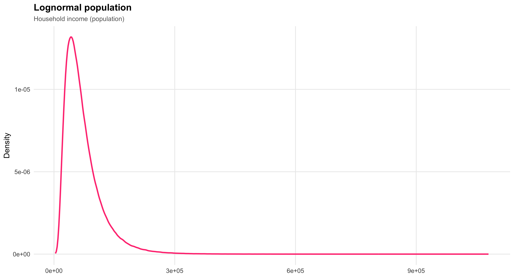
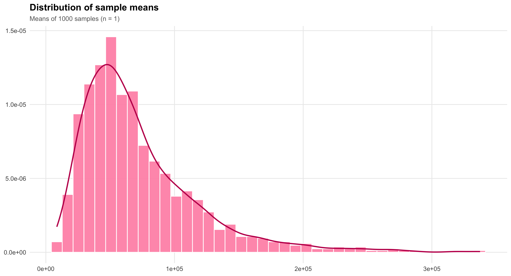

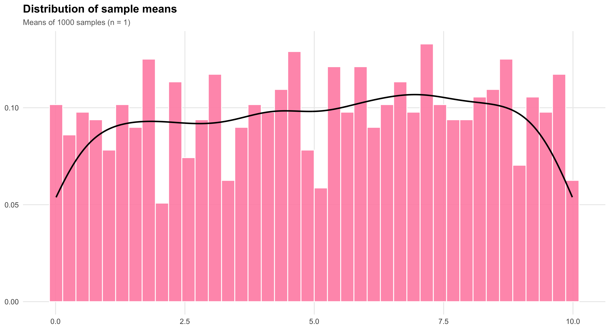
8.2 Sampling Distributions from Other Populations ((n = 5))
When the sample size increases, the sampling distribution of the mean begins to look more Normal—even if the underlying population is not.
Below we compare two populations: one lognormal (right-skewed) and one uniform (flat).
For each, we repeatedly draw 1,000 random samples of size (n=5) and plot the resulting means.
The lognormal sampling distribution still shows some skew, while the uniform’s mean distribution is already close to symmetric.
#| echo: false
#| message: false
#| warning: false
#| fig-width: 8
#| fig-height: 6
#| fig-cap: "Sampling distributions from lognormal and uniform populations (n = 5)."
#| layout-ncol: 2
library(ggplot2)
set.seed(123)
# ---------- Lognormal population ----------
x_lognorm <- rlnorm(1e6, meanlog = 11, sdlog = 0.6)
means_ln <- replicate(1000, mean(sample(x_lognorm, 5)))
p1 <- ggplot(data.frame(x = x_lognorm), aes(x)) +
geom_density(color = "#FF4081", linewidth = 1.1) +
labs(title = "Lognormal population",
subtitle = "Household income (population)",
x = NULL, y = "Density") +
theme_minimal(base_size = 13) +
theme(plot.title = element_text(face = "bold"),
plot.subtitle = element_text(size = 11, color = "#666"),
panel.grid.minor = element_blank(),
plot.background = element_rect(fill = "white", color = NA))
p2 <- ggplot(data.frame(x = means_ln), aes(x)) +
geom_histogram(aes(y = after_stat(density)),
bins = 40, fill = "#FF8FB1", color = "white", alpha = 0.9) +
geom_density(color = "#C2185B", linewidth = 1) +
labs(title = "Distribution of sample means",
subtitle = "Means of 1000 samples (n = 5)",
x = NULL, y = NULL) +
theme_minimal(base_size = 13) +
theme(plot.title = element_text(face = "bold"),
plot.subtitle = element_text(size = 11, color = "#666"),
panel.grid.minor = element_blank(),
plot.background = element_rect(fill = "white", color = NA))
# ---------- Uniform population (rectangular + black lines) ----------
a <- 0; b <- 10; h <- 1/(b - a)
x_uniform <- runif(1e6, a, b)
means_unif <- replicate(1000, mean(sample(x_uniform, 5)))
# Uniform population (flat rectangle)
p3 <- ggplot() +
geom_rect(aes(xmin = a, xmax = b, ymin = 0, ymax = h),
fill = NA, color = "black", linewidth = 1.2) +
scale_x_continuous(limits = c(a - 0.5, b + 0.5)) +
scale_y_continuous(limits = c(0, h * 1.25)) +
labs(title = "Uniform population",
subtitle = "X variable (population)",
x = NULL, y = "Density") +
theme_minimal(base_size = 13) +
theme(plot.title = element_text(face = "bold"),
plot.subtitle = element_text(size = 11, color = "#666"),
panel.grid.minor = element_blank(),
plot.background = element_rect(fill = "white", color = NA))
# Uniform sampling distribution (pink hist, black line)
p4 <- ggplot(data.frame(x = means_unif), aes(x)) +
geom_histogram(aes(y = after_stat(density)),
bins = 40, fill = "#FF8FB1", color = "white", alpha = 0.9) +
geom_density(color = "black", linewidth = 1) +
labs(title = "Distribution of sample means",
subtitle = "Means of 1000 samples (n = 5)",
x = NULL, y = NULL) +
theme_minimal(base_size = 13) +
theme(plot.title = element_text(face = "bold"),
plot.subtitle = element_text(size = 11, color = "#666"),
panel.grid.minor = element_blank(),
plot.background = element_rect(fill = "white", color = NA))
# Display 2×2 grid via layout-ncol
p1; p2; p3; p4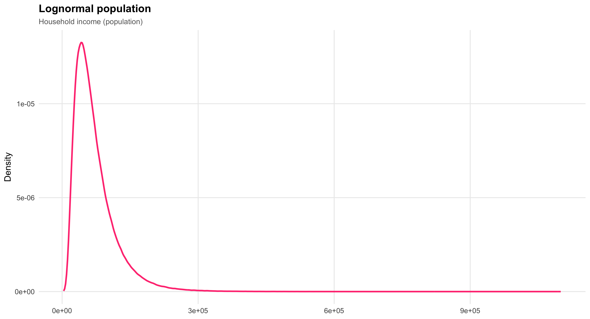
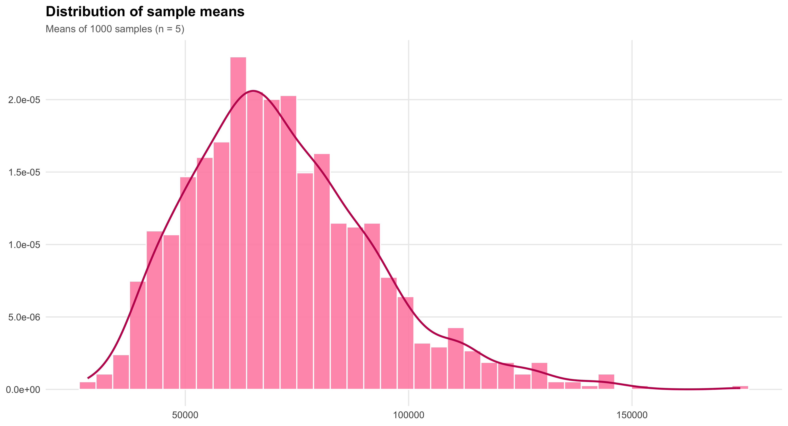
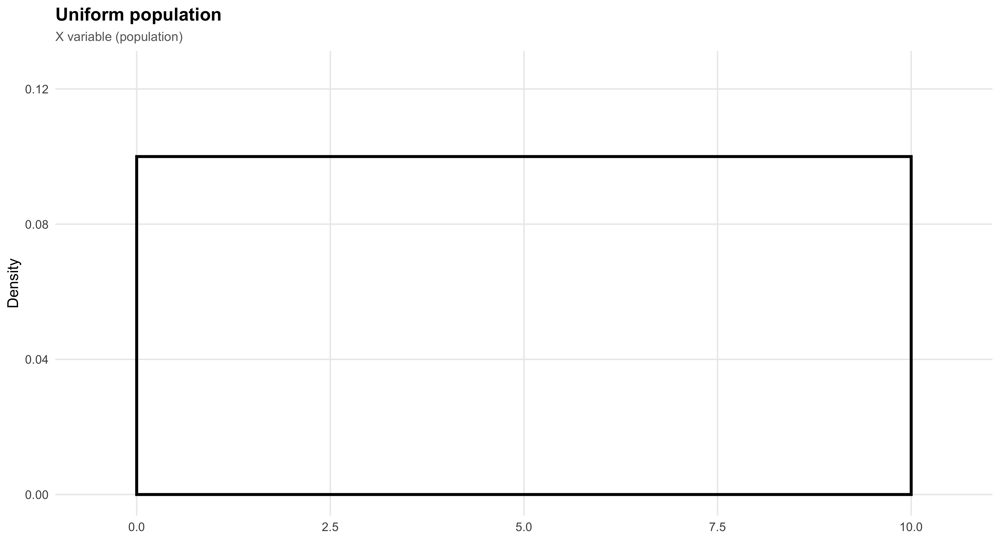
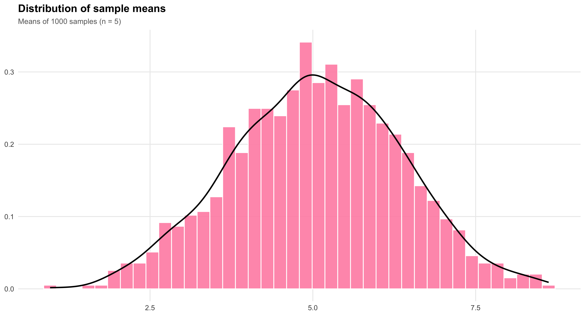
8.3 Recap of Important Concepts
Sampling distributions are theoretical, long-run probability distributions.
They describe the distribution of the sample mean ( {X} ) over all possible samples of a given size ( n )—that is, what would happen if we repeatedly took an infinite number of random samples of size ( n ) from the same population.
The standard deviation of a sampling distribution, also known as the standard error of the mean, depends on both the population standard deviation ( ) and the sample size ( n ):
\[ \text{Standard deviation of sampling distribution} = \frac{\sigma}{\sqrt{n}} \]
As the sample size ( n ) increases, the variability of the sampling distribution decreases.
Larger samples produce means that cluster more tightly around the true population mean ( ).
This is a direct consequence of the Law of Large Numbers (LLN): with more observations, the sample mean becomes a more reliable estimator of ( ).
Because sampling distributions are theoretical, their properties depend only on ( n ) and on the characteristics of the underlying population.
For each specific value of ( n ), the shape, mean, and standard deviation of the sampling distribution are fixed—not random.
9 Chapter 9: Confidence Intervals
9.1 Understanding the Concept of Confidence Intervals
In the previous chapter, we learned that \(\bar{x}\), the sample mean, has a particular distribution in repeated samples, called its sampling distribution. Assuming a simple random sample is being used, the sampling distribution of \(\bar{x}\) has a mean of \(\mu\), the same numerical value as the population’s mean. It also has a standard deviation of \(\sigma/\sqrt{n}\). When \(n\) is large enough, the distribution takes the Normal shape. Those are crucial facts, but the usefulness of them comes when we consider how to interpret a single \(\bar{x}\) value from a single sample. It turns out we can use the facts about the sampling distribution to devise a principled and reasonable way to make a guess about a range of values in which we think the population mean lies, using only a single sample. This guess or estimate of a range for \(\mu\) is called a confidence interval.
Suppose we are interested in estimating the mean height of female students at the University of Pennsylvania. We collect a sample of data from female students enrolled in Social Statistics. Can we treat the heights of these students as a random sample of the heights of all women at the University of Pennsylvania? Strictly speaking, no, but for the purpose of illustration, we will assume that we can.
Our sample size is \(n = 17\), and the sample mean is \(\bar{x} = 64.82\). This value, \(\bar{x}\), serves as our estimate of the population mean, \(\mu\), though we know it will not be exactly correct. To express the uncertainty associated with this estimate, we aim to construct an interval of plausible values for \(\mu\)—an interval that, under repeated sampling, would contain the true mean a specified proportion of the time. This is the basic idea behind a confidence interval.
#| echo: false
#| message: false
#| warning: false
# ---- data (base R only) ----
heights <- data.frame(
student = c("Emma C.","Tiana C.","Clare D.","Kristin G.","Kristin K.",
"Kendra K.","Beth K.","Natalie L.","Stephanie M.","Elizabeth P.",
"Alana P.","Cailey P.","Rhea S.","Laura S.","Ashley T.",
"Rachel W.","Marissa U."),
height = c(67,62,62,66,63,63,65,67,68,66,64,71,62,66,63,62,65),
stringsAsFactors = FALSE
)
n_obs <- nrow(heights)
xbar <- mean(heights$height)
# Add row numbers as first column
heights <- cbind(`#` = seq_len(n_obs), heights)
# ---- print table with kable (knitr is built-in with Quarto) ----
knitr::kable(
heights,
col.names = c("#","Student","Height (in)"),
align = c("r","l","r"),
caption = paste0("n = ", n_obs, "; x\u0304 = ", sprintf('%.2f', xbar))
)| # | Student | Height (in) |
|---|---|---|
| 1 | Emma C. | 67 |
| 2 | Tiana C. | 62 |
| 3 | Clare D. | 62 |
| 4 | Kristin G. | 66 |
| 5 | Kristin K. | 63 |
| 6 | Kendra K. | 63 |
| 7 | Beth K. | 65 |
| 8 | Natalie L. | 67 |
| 9 | Stephanie M. | 68 |
| 10 | Elizabeth P. | 66 |
| 11 | Alana P. | 64 |
| 12 | Cailey P. | 71 |
| 13 | Rhea S. | 62 |
| 14 | Laura S. | 66 |
| 15 | Ashley T. | 63 |
| 16 | Rachel W. | 62 |
| 17 | Marissa U. | 65 |
#| echo: false
#| message: false
#| warning: false
#| fig-width: 9
#| fig-height: 5
#| fig-cap: "Sampling distribution of \\(\\bar{x}\\) with 20 simulated 95% confidence intervals; red dashed lines mark \\(\\mu\\pm1.31\\)."
library(ggplot2)
set.seed(123)
# --- Parameters chosen so that 1.96*sigma/sqrt(n) = 1.31
mu <- 64
n <- 17
margin <- 1.31
se <- margin / 1.96 # standard error of xbar
sigma <- se * sqrt(n) # population sd consistent with margin
# Simulate 20 samples, compute xbar and CIs using known sigma
M <- 20
xbar <- replicate(M, mean(rnorm(n, mean = mu, sd = sigma)))
ci_lo <- xbar - margin
ci_hi <- xbar + margin
cover <- (ci_lo <= mu) & (ci_hi >= mu) # does CI include the true mu?
df_ci <- data.frame(
id = M:1, # top to bottom ordering
xbar = xbar,
lo = ci_lo,
hi = ci_hi,
cover = cover
)
# Data for the xbar sampling density (Normal with mean mu and sd = se)
x_grid <- seq(60, 68, length.out = 400)
dens <- dnorm(x_grid, mean = mu, sd = se)
# We'll place the density in a "top band" by scaling its height
y_top_min <- M + 3
y_top_max <- M + 8
dens_y <- (dens / max(dens)) * (y_top_max - y_top_min) + y_top_min
df_dens <- data.frame(x = x_grid, y = dens_y)
# Reference lines
left <- mu - margin
right <- mu + margin
# Build the composite plot in one ggplot
p <- ggplot() +
# --- top density "panel"
geom_rect(aes(xmin = 60, xmax = 68, ymin = y_top_min, ymax = y_top_max),
fill = "white", color = NA) +
geom_line(data = df_dens, aes(x, y), linewidth = 1) +
geom_segment(aes(x = 60, xend = 68, y = y_top_min, yend = y_top_min), linewidth = 0.6) +
geom_vline(xintercept = mu, color = "red1", linewidth = 0.7) +
geom_vline(xintercept = c(left, right), color = "#e74c3c", linetype = "dashed", linewidth = 0.7) +
# --- labels for 64±1.31
annotate("label", x = left, y = y_top_min - 0.7,
label = paste0("64 - 1.31 = ", sprintf("%.2f", left)),
size = 3.6, label.size = 0.4, fill = "white") +
annotate("label", x = right, y = y_top_min - 0.7,
label = paste0("64 + 1.31 = ", sprintf("%.2f", right)),
size = 3.6, label.size = 0.4, fill = "white") +
# --- bottom: 20 CIs (points are xbar; segments are intervals)
geom_segment(data = df_ci,
aes(x = lo, xend = hi, y = id, yend = id),
linewidth = 0.9, color = "#436EEE") +
geom_point(data = df_ci,
aes(x = xbar, y = id),
size = 2.4, color = "#FF4081") +
# vertical guides (same as top)
geom_vline(xintercept = mu, color = "red4", linewidth = 0.7) +
geom_vline(xintercept = c(left, right), color = "#e74c3c",
linetype = "dashed", linewidth = 0.7) +
# --- left-hand explanatory text (placed with annotate)
annotate("text", x = 60.2, y = (y_top_min + y_top_max)/2,
label = "Sampling distribution\nof x-bar values",
hjust = 0, size = 5.2) +
annotate("text", x = 60.2, y = M/2,
label = "Draws of x-bar values\nwith their constructed\n95% confidence\nintervals",
hjust = 0, size = 5.2) +
# Axes and theme
scale_x_continuous(limits = c(60, 68), breaks = seq(60, 68, by = 2)) +
scale_y_continuous(NULL, breaks = NULL) +
labs(x = NULL, y = NULL) +
theme_minimal(base_size = 13) +
theme(
panel.grid = element_blank(),
plot.background = element_rect(fill = "white", color = NA),
axis.text.x = element_text(color = "black")
)
p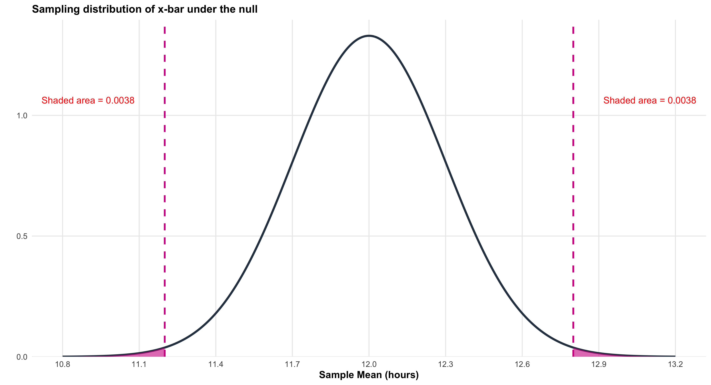
This is the calculation of exact 95% confidence interval limits, done around the sample mean of 64.82:
\[ \begin{align} 95\%\text{CI} &= \bar{x} \pm z^* \frac{\sigma}{\sqrt{n}} \\ &= 64.82 \pm 1.96 \frac{2.7}{\sqrt{17}} \\ &= 64.82 \pm 1.96(.655) \\ &= (63.54, 66.10) \end{align} \]
I will now add this confidence interval to the earlier illustration of the sampling distribution of confidence intervals.We happen to have gotten a confidence interval that does include \(\mu\). This should happen 95% of the time, and not happen 5% of the time.
The Impact of \(\sigma\), the Population Standard Deviation
The margin of error \(m\) is directly proportional to \(\sigma\), the population standard deviation. This relationship is expressed mathematically as:
\[ m = z^* \frac{\sigma}{\sqrt{n}} \]
where:
- \(m\) is the margin of error
- \(z^*\) is the critical value from the standard normal distribution
- \(\sigma\) is the population standard deviation
- \(n\) is the sample size
Key implications of this formula
The larger the population standard deviation \(\sigma\), the larger (wider) the margin of error becomes, which in turn produces a wider confidence interval. This makes intuitive sense: when there is more variability in the population, our estimates are naturally less precise.
There is nothing the researcher can do about \(\sigma\), as a general rule. The population standard deviation is a fixed characteristic of the population being studied and exists independently of the researcher’s choices.
This makes \(\sigma\) fundamentally different from \(z^*\) and \(n\), both of which are under the researcher’s control. The researcher chooses the confidence level (which determines \(z^*\)) and the sample size \(n\).
However, neither \(z^*\) nor \(n\) amount to a “free lunch” as a means of controlling the margin of error:
\(z^*\) can only be decreased by decreasing the confidence level \(C\). In other words, to achieve a smaller margin of error through \(z^*\), the researcher must accept less confidence in the resulting interval. This represents a direct tradeoff between precision and certainty.
Increasing the sample size \(n\) takes more money. Larger samples require more resources, time, and funding to collect. While this approach does reduce the margin of error (note that \(n\) appears in the denominator under a square root), the improvement comes at a real financial cost.
10 Chapter 10: Test of Significance
There are two closely related methods for drawing inferences about population parameters. A confidence interval uses information from a sample to estimate a plausible range of values for the population parameter. A significance test, by contrast, evaluates a specific claim or assertion about that parameter using the same sample data. The claim being tested is known as a hypothesis, which must be clearly formulated and expressed in formal mathematical notation.
10.1 The reasoning in tests of significance:
Example:
Suppose that a researcher claims that a new civic education program increases voter turnout by 10 percentage points compared to areas without the program.You are skeptical and believe the program might have little or no effect. To test this claim, you collect data from 20 communities that implemented the program and find that, on average, turnout increased by only 2 percentage points.
What does this suggest about the researcher’s claim? Your (likely) reasoning follows the same logic as a significance test:
☞ If I assume the researcher’s claim is correct (that the true increase is 10 percentage points), then observing only a 2-point increase would be highly unexpected.
☞ Therefore, I reject the claim and conclude that the evidence does not support such a large program effect.This mirrors the structure of hypothesis testing: we begin by assuming the claim (the null hypothesis), examine how surprising our data are under that assumption, and—if the results are too unlikely—decide that the claim is probably false.
10.2 Using the Binomial Distribution
For testing a civic education program’s impact on voter turnout, the binomial distribution provides a useful framework:
- The communities are independent
- \(p = 0.10\) is the claimed increase in turnout (10 percentage points)
- There are \(n = 20\) communities in the study
We can examine the distribution to understand the probability of observing only 2 communities (or fewer) showing the claimed 10-percentage-point increase, if the researcher’s claim were true.
Evidently, that probability is extremely small—close to zero.
This strongly suggests the researcher’s claim is false.
#| echo: false
#| message: false
#| warning: false
#| fig-width: 9
#| fig-height: 5.5
#| fig-cap: "Probability mass function for daily coffee consumption among US adults (n = 2,847)."
suppressPackageStartupMessages({
library(ggplot2); library(dplyr); library(scales)
})
# PMF for cups of coffee per day
df <- data.frame(
cups = 0:5,
cups_label = c("0","1","2","3","4","≥5"),
probability = c(0.18, 0.24, 0.31, 0.16, 0.07, 0.04)
) %>%
mutate(
intensity = probability / max(probability)
)
# Calculate mean for annotation
expected_value <- sum(df$cups * df$probability)
ggplot(df, aes(x = cups, y = probability)) +
geom_col(
aes(fill = intensity),
width = 0.45,
color = "white",
linewidth = 1
) +
scale_fill_viridis_c(
option = "plasma",
begin = 0.2,
end = 0.95,
guide = "none"
) +
geom_text(
aes(label = percent(probability, accuracy = 1)),
vjust = -0.7,
size = 4.5,
fontface = "bold",
color = "gray20"
) +
annotate(
"curve",
x = 3.5, xend = 2.1,
y = 0.35, yend = 0.32,
arrow = arrow(length = unit(0.3, "cm"), type = "closed"),
curvature = 0.3,
linewidth = 1,
color = "#BD3786"
) +
annotate(
"text",
x = 3.8, y = 0.35,
label = "Modal response:\n2 cups per day",
hjust = 0,
size = 2.4,
fontface = "bold",
color = "#BD3786",
lineheight = 0.9
) +
annotate(
"text",
x = 0.3, y = 0.33,
label = sprintf("Mean = %.2f cups", expected_value),
hjust = 0,
size = 2.4,
fontface = "italic",
color = "gray30"
) +
scale_x_continuous(
breaks = 0:5,
labels = c("0","1","2","3","4","≥5"),
expand = expansion(mult = c(0.05, 0.05))
) +
scale_y_continuous(
labels = percent_format(accuracy = 1),
limits = c(0, 0.39),
expand = expansion(mult = c(0, 0))
) +
labs(
title = "Americans Drink 2 Cups of Coffee Per Day, On Average",
subtitle = "Distribution of self-reported daily coffee consumption | Survey of 2,847 US adults",
x = "Daily Coffee Consumption (Cups)",
y = "Proportion of Respondents"
) +
theme_minimal(base_size = 14) +
theme(
plot.title = element_text(face = "bold", size = 18, hjust = 0, margin = margin(b = 8), color = "gray10"),
plot.subtitle = element_text(size = 11, color = "gray40", hjust = 0, margin = margin(b = 20)),
axis.title.x = element_text(face = "bold", size = 13, margin = margin(t = 12), color = "gray20"),
axis.title.y = element_text(face = "bold", size = 13, margin = margin(r = 12), color = "gray20"),
axis.text = element_text(size = 12, color = "gray30"),
panel.grid = element_blank(),
plot.background = element_rect(fill = "white", color = NA),
panel.background = element_rect(fill = "white", color = NA),
plot.margin = margin(20, 25, 15, 15),
axis.line = element_line(color = "gray50", linewidth = 0.5)
)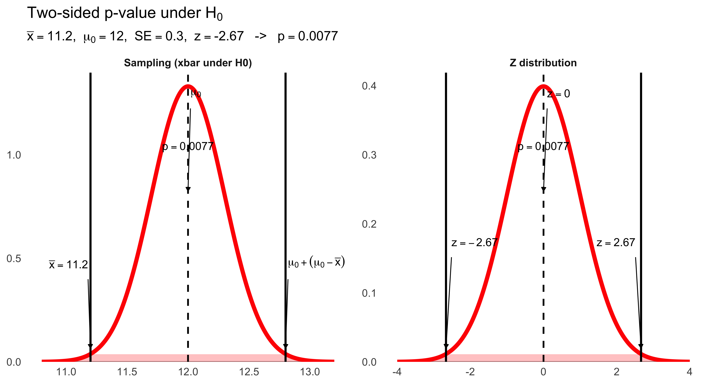
If I assume the researcher’s claim is correct (that the true increase is 10 percentage points in each community), then observing only 2 communities (or fewer) with such an increase out of 20 would be highly unexpected—occurring with probability 0.6769.
Therefore, I reject the claim and conclude that the evidence does not support such a large program effect.
This mirrors the structure of hypothesis testing: we begin by assuming the claim (the null hypothesis), examine how surprising our data are under that assumption, and—if the results are too unlikely—decide that the claim is probably false.
10.3 The Logic of Significance Testing
Statistical inference allows us to evaluate claims about population parameters by examining how consistent our data are with those claims. Suppose, for example, we claim that the probability of success in a task is \(p = 0.8\). If, after repeated trials, we observe results far worse than what would ordinarily occur under that assumption, it becomes increasingly implausible that our claim is true. For instance, if the chance of obtaining such poor results is extremely small—say, a binomial probability of 0.0001—then those results constitute strong evidence against the original claim.
A low probability of observing our data under a given assumption is good evidence against that assumption, often called the null hypothesis. When such evidence accumulates, we may reasonably conclude that the null hypothesis is likely incorrect.
The logic of significance testing follows a simple but powerful structure:
Formulate a claim to be tested, known as the null hypothesis (\(H_0\)).
Specify an alternative hypothesis (\(H_1\)) that represents what we might believe if the null were false.
Evaluate the data under the assumption that the null hypothesis is true.
Assess how unusual our results would be if \(H_0\) were correct.
- If the results would rarely occur by chance alone, we interpret them as evidence against \(H_0\) and in favor of \(H_1\).
In applied research, most tests rely on the Normal distribution (or its close relatives) to approximate sampling variation. We therefore focus on cases where this approximation provides a valid and interpretable framework for decision-making.
10.4 The Structure of Hypotheses
Statistical inference allows us to evaluate claims about population parameters by examining how consistent our data are with those claims. Suppose, for example, we claim that the probability of success in a task is \(p = 0.8\). If, after repeated trials, we observe results far worse than what would ordinarily occur under that assumption, it becomes increasingly implausible that our claim is true. For instance, if the chance of obtaining such poor results is extremely small—say, a binomial probability of 0.0001—then those results constitute strong evidence against the original claim.
A low probability of observing our data under a given assumption is good evidence against that assumption, often called the null hypothesis. When such evidence accumulates, we may reasonably conclude that the null hypothesis is likely incorrect.
The Logic of Significance Testing
The logic of significance testing follows a simple but powerful structure:
Formulate a claim to be tested, known as the null hypothesis (\(H_0\)).
Specify an alternative hypothesis (\(H_1\)) that represents what we might believe if the null were false.
Evaluate the data under the assumption that the null hypothesis is true.
Assess how unusual our results would be if \(H_0\) were correct.
- If the results would rarely occur by chance alone, we interpret them as evidence against \(H_0\) and in favor of \(H_1\).
In applied research, most tests rely on the Normal distribution (or its close relatives) to approximate sampling variation. We therefore focus on cases where this approximation provides a valid and interpretable framework for decision-making.
10.5 Historical Development of Hypothesis Testing
Hypothesis testing as a formal method in statistics emerged in the early twentieth century, shaped by three key figures—Ronald A. Fisher, Jerzy Neyman, and Egon Pearson—whose distinct contributions gradually formed the framework still used today.
1. Fisher and the Birth of Significance Testing (1920s)
Ronald Fisher introduced the concept of a significance test in the 1920s, particularly in his book Statistical Methods for Research Workers (1925). Fisher’s idea was that researchers could assess whether observed data were unlikely under a specific assumption, known as the null hypothesis (\(H_0\)).
He introduced the \(p\)-value as a continuous measure of the strength of evidence against \(H_0\). In Fisher’s approach, there was no formal “acceptance” or “rejection” rule—significance was a matter of degree, guided by convention (e.g., 5% level).
2. Neyman–Pearson Theory and the Decision Framework (1930s)
In the 1930s, Jerzy Neyman and Egon Pearson reformulated hypothesis testing as a decision procedure. They introduced the formal distinction between the null hypothesis (\(H_0\)) and an alternative hypothesis (\(H_a\))—and defined two types of errors:
- Type I error: Rejecting a true \(H_0\) (false positive)
- Type II error: Failing to reject a false \(H_0\) (false negative)
They emphasized controlling long-run error probabilities (\(\alpha\) and \(\beta\)) and maximizing the power of a test, creating the modern idea of “rejecting \(H_0\)” when evidence exceeds a fixed threshold.
3. The Modern Synthesis
By mid-century, Fisher’s significance testing and Neyman–Pearson’s decision theory were merged (somewhat uneasily) in textbooks and practice. Most contemporary hypothesis testing—using \(H_0: \mu = \mu_0\) versus \(H_a: \mu \neq \mu_0\), \(\mu > \mu_0\), or \(\mu < \mu_0\)—draws from this synthesis: Fisher’s logic of inference combined with Neyman–Pearson’s formal decision rules.
Fisher provided the inferential logic and \(p\)-value.
Neyman and Pearson provided the error-control framework and alternative hypothesis.
Together, they laid the foundation for modern statistical inference—the process of using data to test competing hypotheses about population parameters.
10.6 Stating the Null and Alternative Hypotheses
The null hypothesis always includes a statement of possible equality.
\(\mu_0\) stands for a value that we hypothesize for the population mean in the null hypothesis.
Here are some valid null hypotheses and corresponding alternative hypotheses:
\[ \begin{array}{ccc} & \text{null} & \text{alternative} \\ \hline & H_0: \mu = \mu_0 & H_a: \mu < \mu_0 \\ & H_0: \mu = \mu_0 & H_a: \mu > \mu_0 \\ & H_0: \mu = \mu_0 & H_a: \mu \neq \mu_0 \end{array} \]
Note: \(H_0\) is always a simple statement of equality, as our framework formulates things. This is a fine convention, though not universally practiced in all statistical contexts.
10.7 Example 1: Mean Voter Turnout in Urban Districts
A political scientist hypothesizes that, on average, voter turnout rates in urban congressional districts differ from the national average for all congressional districts, which is known to be 58%.
Null hypothesis, the hypothesis of equality or no difference:
\(H_0\): The mean voter turnout rate for urban congressional districts, \(\mu\), is the same as that for all congressional districts.
Alternative hypothesis:
\(H_a\): The mean voter turnout rate for urban congressional districts, \(\mu\), differs from the mean for all congressional districts.
Formal statement of the null and alternative hypotheses:
\[ H_0: \mu = 58 \]
\[ H_a: \mu \neq 58 \]
Note that \(\mu_0 = 58\) in this example; it is distinct from the population mean, \(\mu\), for urban congressional districts, which has an unknown numerical value. Our test will use sample data from urban districts to evaluate whether there is sufficient evidence to conclude that \(\mu \neq 58\).
10.8 Steps for Conducting a Hypothesis Test
The following steps provide a systematic framework for performing a hypothesis test:
Step 1: Verify the conditions for inference
Check that the necessary conditions are met for valid statistical inference. These typically include:
- The population is approximately Normal, or the sample size is large enough for the Central Limit Theorem to apply
- The population standard deviation \(\sigma\) is known (or can be estimated reliably)
- The sample is a simple random sample (SRS) from the population of interest
Step 2: State the hypotheses
Formally state the null hypothesis (\(H_0\)) and alternative hypothesis (\(H_a\)) using proper mathematical notation. Ensure that \(H_0\) specifies a value for the population parameter (e.g., \(\mu = \mu_0\)).
Step 3: Collect data and calculate the test statistic
Draw a random sample of \(n\) cases from the population and calculate the sample mean \(\bar{x}\). Use this to compute the appropriate test statistic (such as a \(z\)-score or \(t\)-statistic).
Step 4: Evaluate the evidence
Find the probability of obtaining a result as extreme or more extreme than the observed \(\bar{x}\), assuming the null hypothesis is true. This probability is called the \(p\)-value.
Decision rule:
If the \(p\)-value is sufficiently small (typically less than the significance level \(\alpha\), such as 0.05), then reject the null hypothesis and accept the alternative hypothesis. The data provide strong evidence against \(H_0\).
If the \(p\)-value is not sufficiently small, do not reject the null hypothesis. The data do not provide convincing evidence against \(H_0\). (Note: This does not mean we “accept” \(H_0\) as true, only that we lack sufficient evidence to reject it.)
10.9 Example: Shakespeare’s Words
The Research Question
An English scholar claims that a scene in a play of previously unknown authorship was written by Shakespeare.
Based on an analysis of Shakespeare’s known plays, the average length of words Shakespeare used was 5.2, with a standard deviation of 6.0.
The scene contains 900 words and an average word length of 4.7, which we consider to be a simple random sample (SRS) from the population of Shakespeare’s words.
The scholar claims the scene was written by Shakespeare. Can we use the data to reject the hypothesis that Shakespeare wrote the scene?
Setting Up the Hypothesis Test
Check the conditions:
- SRS? Yes, we treat the 900 words as a random sample from Shakespeare’s vocabulary
- Normality? Yes, \(n = 900\) is large enough for the Central Limit Theorem to apply
- Known variance? Yes, \(\sigma = 6.0\) based on analysis of Shakespeare’s known works
State the hypotheses:
\[ H_0: \mu = 5.2 \text{ (Shakespeare wrote the scene)} \]
\[ H_a: \mu \neq 5.2 \text{ (Shakespeare did not write the scene)} \]
where \(\mu\) represents the true mean word length in the disputed scene.
Visualizing the Sampling Distribution
Under the null hypothesis, the sampling distribution of \(\bar{x}\) is Normal with:
\[ \mu_{\bar{x}} = \mu_0 = 5.2 \]
\[ \sigma_{\bar{x}} = \frac{\sigma}{\sqrt{n}} = \frac{6.0}{\sqrt{900}} = \frac{6}{30} = 0.2 \]
#| label: fig-shakespeare-pvalue
#| fig-cap: "P-value visualization showing the probability of results as extreme as observed under the null hypothesis"
#| fig-width: 12
#| fig-height: 12
#| warning: false
library(ggplot2)
library(dplyr)
# Parameters
mu_0 <- 5.2
se <- 0.2
x_bar <- 4.7
z_obs <- -2.5
# Create data for both distributions
x_vals <- seq(mu_0 - 4*se, mu_0 + 4*se, length.out = 500)
y_vals <- dnorm(x_vals, mean = mu_0, sd = se)
df_x <- data.frame(x = x_vals, y = y_vals)
z_vals <- seq(-4, 4, length.out = 500)
z_y <- dnorm(z_vals)
df_z <- data.frame(z = z_vals, y = z_y)
# Create shaded regions for x-bar distribution
df_x_left <- df_x %>% filter(x <= x_bar)
df_x_right <- df_x %>% filter(x >= (mu_0 + (mu_0 - x_bar)))
# Create shaded regions for z distribution
df_z_left <- df_z %>% filter(z <= z_obs)
df_z_right <- df_z %>% filter(z >= -z_obs)
# Plot 1: Sampling distribution
p1 <- ggplot() +
geom_line(data = df_x, aes(x = x, y = y),
color = "#2C3E50", linewidth = 1.2) +
geom_area(data = df_x_left, aes(x = x, y = y),
fill = "#D02090", alpha = 0.6) +
geom_area(data = df_x_right, aes(x = x, y = y),
fill = "#D02090", alpha = 0.6) +
annotate("text", x = 4.5, y = max(y_vals) * 0.8,
label = "Shaded area = .012",
size = 4, fontface = "plain", color = "red") +
annotate("text", x = 5.9, y = max(y_vals) * 0.8,
label = "Shaded area = .012",
size = 4, fontface = "plain", color = "red") +
geom_vline(xintercept = c(x_bar, 5.7), linetype = "dashed",
color = "#D02090", linewidth = 1) +
scale_x_continuous(breaks = seq(4.6, 5.8, by = 0.2)) +
scale_y_continuous(expand = c(0, 0), limits = c(0, max(y_vals) * 1.05)) +
labs(
title = "Sampling distribution of x-bar under the null",
x = "Sample Mean",
y = ""
) +
theme_minimal(base_size = 12) +
theme(
plot.title = element_text(face = "bold", size = 13, hjust = 0),
axis.title = element_text(face = "bold"),
panel.grid.minor = element_blank()
)
# Plot 2: Z distribution
p2 <- ggplot() +
geom_line(data = df_z, aes(x = z, y = y),
color = "#2C3E50", linewidth = 1.2) +
geom_area(data = df_z_left, aes(x = z, y = y),
fill = "#D02090", alpha = 0.6) +
geom_area(data = df_z_right, aes(x = z, y = y),
fill = "#D02090", alpha = 0.6) +
annotate("text", x = -3, y = max(z_y) * 0.8,
label = "Shaded area = .012",
size = 4, fontface = "plain", color = "red") +
annotate("text", x = 3, y = max(z_y) * 0.8,
label = "Shaded area = .012",
size = 4, fontface = "plain", color = "red") +
geom_vline(xintercept = c(-2.5, 2.5), linetype = "dashed",
color = "#D02090", linewidth = 1) +
scale_x_continuous(breaks = seq(-4, 4, by = 1)) +
scale_y_continuous(expand = c(0, 0), limits = c(0, max(z_y) * 1.05)) +
labs(
title = "Plot of z distribution showing corresponding areas",
x = "z-score",
y = ""
) +
theme_minimal(base_size = 12) +
theme(
plot.title = element_text(face = "bold", size = 13, hjust = 0),
axis.title = element_text(face = "bold"),
panel.grid.minor = element_blank()
)
# Display plots (no patchwork needed)
print(p1)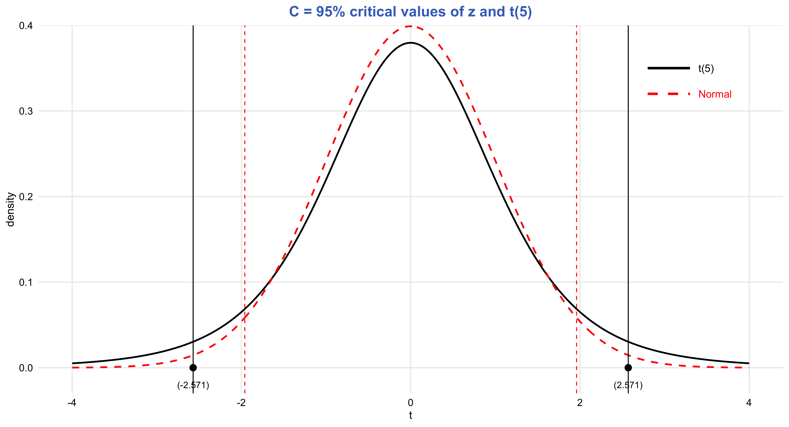
print(p2)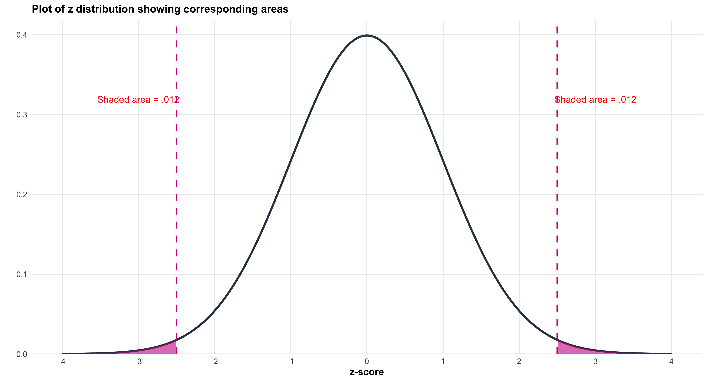
Computing the Test Statistic
Find the test statistic (z-score):
\[ z = \frac{\bar{x} - \mu_0}{\sigma/\sqrt{n}} = \frac{4.7 - 5.2}{6.0/\sqrt{900}} = \frac{-0.5}{6/30} = \frac{-0.5}{0.2} = -0.5 \times 5 = -2.5 \]
The Standardized Distribution
library(ggplot2)
# Z-score
z_obs <- -2.5
# Create data for standard normal
z_vals <- seq(-4, 4, length.out = 500)
z_y <- dnorm(z_vals)
df_z <- data.frame(z = z_vals, y = z_y)
# Create plot
ggplot() +
# Normal curve
geom_line(data = df_z, aes(x = z, y = y),
color = "#2C3E50", linewidth = 1.5) +
# Shade the curve
geom_area(data = df_z, aes(x = z, y = y),
fill = "#9B59B6", alpha = 0.3) +
# Mark center
geom_vline(xintercept = 0, color = "#E74C3C",
linewidth = 2, linetype = "solid") +
annotate("text", x = 0, y = max(z_y) * 0.5,
label = "0",
hjust = -0.3, size = 5, fontface = "bold", color = "#E74C3C") +
# Mark observed z
geom_vline(xintercept = z_obs, color = "#27AE60",
linewidth = 2, linetype = "dashed") +
annotate("text", x = z_obs, y = max(z_y) * 0.7,
label = "z = -2.5",
hjust = 1.1, size = 6, fontface = "bold", color = "#27AE60") +
# Axes and labels
scale_x_continuous(breaks = seq(-4, 4, by = 1)) +
scale_y_continuous(expand = c(0, 0), limits = c(0, max(z_y) * 1.1)) +
labs(
title = "Standard Normal Distribution (Z-distribution)",
x = "z-score",
y = "Density"
) +
theme_minimal(base_size = 14) +
theme(
plot.title = element_text(face = "bold", size = 16, hjust = 0.5),
axis.title = element_text(face = "bold", size = 13),
axis.text = element_text(size = 12),
panel.grid.minor = element_blank(),
panel.background = element_rect(fill = "white", color = NA),
plot.background = element_rect(fill = "white", color = NA)
)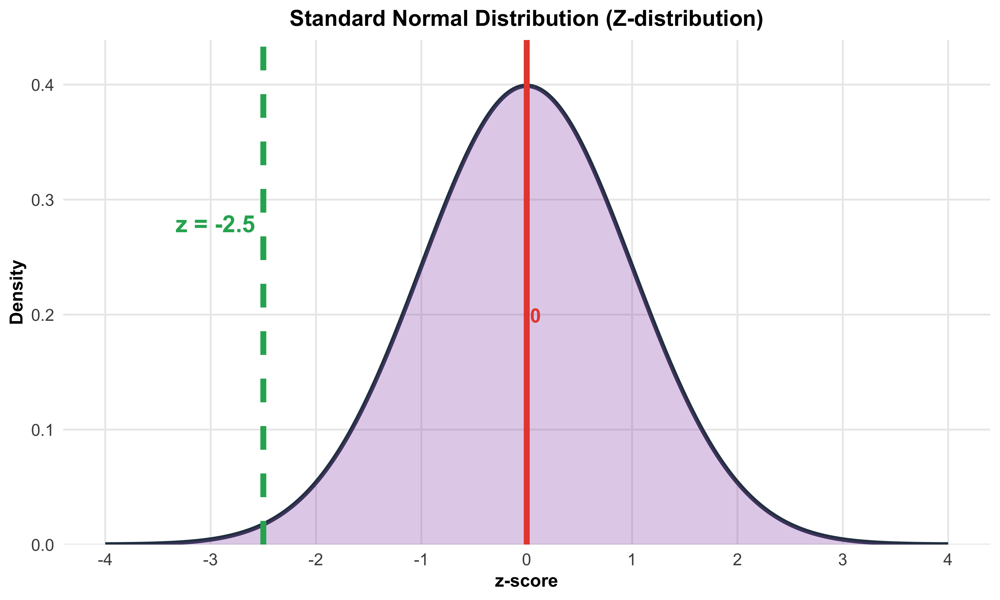
Finding the P-value
The P-value is the probability of obtaining results this extreme or more extreme, assuming the null hypothesis is true:
\[ \text{P-value} = P(\bar{x} \leq 4.7 \text{ or } \bar{x} \geq 5.7) \]
\[ = 2 \times P(Z \leq -2.5) \]
\[ = 2 \times 0.0062 \approx 0.012 \]
suppressPackageStartupMessages({
library(ggplot2)
library(dplyr)
library(tibble)
library(scales)
library(grid) # unit(), arrow()
})
# ----- Parameters -----
mu_0 <- 5.2
sigma <- 6.0
n <- 900
se <- sigma / sqrt(n) # 0.2
x_bar <- 4.7
x_mir <- mu_0 + (mu_0 - x_bar) # mirror cutoff at 5.7
z_obs <- (x_bar - mu_0) / se # -2.5
p_val <- 2 * pnorm(abs(z_obs), lower.tail = FALSE)
# ----- Curves (xbar and z) -----
x_vals <- seq(mu_0 - 4*se, mu_0 + 4*se, length.out = 600)
y_vals <- dnorm(x_vals, mean = mu_0, sd = se)
z_vals <- seq(-4, 4, length.out = 600)
z_y <- dnorm(z_vals)
y_max <- max(y_vals) # ~1.994
z_max <- max(z_y) # ~0.399
# ASCII facet labels to avoid glyph issues
lab_x <- "Sampling (xbar under H0)"
lab_z <- "Z distribution"
# Long-form data
df_curve <- bind_rows(
tibble(panel = lab_x, x = x_vals, y = y_vals),
tibble(panel = lab_z, x = z_vals, y = z_y)
)
# Two-sided shaded regions
df_area <- bind_rows(
tibble(panel = lab_x, x = x_vals, y = y_vals) |>
filter(x <= x_bar | x >= x_mir),
tibble(panel = lab_z, x = z_vals, y = z_y) |>
filter(x <= z_obs | x >= -z_obs)
)
# Vertical reference lines (dashed center, solid cutoffs)
df_vline <- tibble(
panel = c(lab_x, lab_x, lab_x, lab_z, lab_z, lab_z),
xint = c(mu_0, x_bar, x_mir, 0, z_obs, -z_obs),
type = c("center","cut","cut", "center","cut","cut")
)
# ----- Annotations (precise) -----
# Left panel: arrows + labels for mu0, xbar, mirror, and p
ann_seg_x <- tribble(
~panel, ~x, ~xend, ~y, ~yend, ~lab, ~lx, ~ly, ~hjust, ~vjust,
lab_x, mu_0 + 0.02, mu_0, y_max*0.92, y_max*0.62, "mu[0]", mu_0+0.02, y_max*0.96, 0, 0,
lab_x, x_bar - 0.02, x_bar, y_max*0.30, y_max*0.05, "bar(x)==4.7", x_bar-0.02,y_max*0.34, 1, 0,
lab_x, x_mir + 0.02, x_mir, y_max*0.30, y_max*0.05, "mu[0] + (mu[0]-bar(x))", x_mir+0.02,y_max*0.34, 0, 0
)
ann_text_x_extra <- tibble(
panel = lab_x,
x = mu_0, y = y_max*0.78,
lab = paste0("p==", format(round(p_val, 4), nsmall = 4))
)
# Right panel: arrows + labels for z=0, z=-2.5, z=+2.5, and p
ann_seg_z <- tribble(
~panel, ~x, ~xend, ~y, ~yend, ~lab, ~lx, ~ly, ~hjust, ~vjust,
lab_z, 0.10, 0, z_max*0.92, z_max*0.62, "z==0", 0.10, z_max*0.96, 0, 0,
lab_z, -2.35, -2.5, z_max*0.38, z_max*0.05, "z==-2.5", -2.35, z_max*0.42, 0, 0,
lab_z, 2.35, 2.5, z_max*0.38, z_max*0.05, "z==2.5", 2.35, z_max*0.42, 1, 0
)
ann_text_z_extra <- tibble(
panel = lab_z,
x = 0, y = z_max*0.78,
lab = paste0("p==", format(round(p_val, 4), nsmall = 4))
)
# ----- Plot -----
ggplot() +
# Baseline at y=0
geom_segment(
data = tibble(panel = c(lab_x, lab_z),
x = c(min(x_vals), min(z_vals)),
xend = c(max(x_vals), max(z_vals)),
y = 0, yend = 0),
aes(x = x, xend = xend, y = y, yend = yend),
color = "gray60", linewidth = 0.8
) +
# Red curve (thick)
geom_line(data = df_curve, aes(x, y), color = "red", linewidth = 2.4) +
# Shaded tails (light red)
geom_area(data = df_area, aes(x, y), fill = "red", alpha = 0.25) +
# Reference lines: dashed center, solid cutoffs
geom_vline(data = df_vline |> filter(type == "center"),
aes(xintercept = xint),
color = "black", linewidth = 1, linetype = "dashed") +
geom_vline(data = df_vline |> filter(type == "cut"),
aes(xintercept = xint),
color = "black", linewidth = 1.2, linetype = "solid") +
# ----- Left panel annotations -----
geom_segment(data = ann_seg_x,
aes(x = x, xend = xend, y = y, yend = yend),
arrow = arrow(length = unit(0.18, "cm"), type = "closed"),
linewidth = 0.5) +
geom_text(data = ann_seg_x,
aes(x = lx, y = ly, label = lab, hjust = hjust, vjust = vjust),
parse = TRUE, size = 4.8) +
geom_text(data = ann_text_x_extra,
aes(x = x, y = y, label = lab),
parse = TRUE, fontface = "bold", size = 4.8) +
# ----- Right panel annotations -----
geom_segment(data = ann_seg_z,
aes(x = x, xend = xend, y = y, yend = yend),
arrow = arrow(length = unit(0.18, "cm"), type = "closed"),
linewidth = 0.5) +
geom_text(data = ann_seg_z,
aes(x = lx, y = ly, label = lab, hjust = hjust, vjust = vjust),
parse = TRUE, size = 4.8) +
geom_text(data = ann_text_z_extra,
aes(x = x, y = y, label = lab),
parse = TRUE, fontface = "bold", size = 4.8) +
facet_wrap(~ panel, scales = "free", ncol = 2) +
# Plotmath title/subtitle (robust across fonts)
labs(
title = expression("Two-sided " * p * "-value under " * H[0]),
subtitle = bquote(bar(x) == .(x_bar) * ", " ~
mu[0] == .(mu_0) * ", " ~
SE == .(round(se, 1)) * ", " ~
z == .(round(z_obs, 1)) ~ " " * "->" * " " ~
p == .(round(p_val, 4))),
x = NULL, y = NULL
) +
scale_y_continuous(limits = c(0, NA), expand = expansion(mult = c(0, 0.05))) +
theme_minimal(base_size = 16) +
theme(
plot.title = element_text(face = "bold"),
strip.text = element_text(face = "bold"),
panel.grid = element_blank(),
panel.background = element_rect(fill = "white", color = NA),
plot.background = element_rect(fill = "white", color = NA),
panel.spacing = unit(16, "pt")
)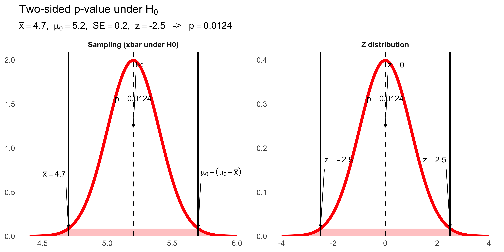
Interpreting the P-value
Question: Is this good evidence against the null hypothesis?
Answer: Yes! With a P-value of 0.012, we have strong evidence against the null hypothesis. This means that if Shakespeare truly wrote the scene, there is only a 1.2% chance we would observe a sample mean word length as extreme as 4.7 (or more extreme).
At the conventional significance level of \(\alpha = 0.05\), we would reject the null hypothesis because \(0.012 < 0.05\). This provides evidence that Shakespeare likely did not write this scene.
Alternative Scenarios
Scenario 1: Suppose the average word length had been 5.0 instead of 4.7.
Would this be convincing evidence against the null hypothesis?
(Do we need the exact P-value to decide this? How about just looking at our x-scale sketch?)
The z-score would be: \[ z = \frac{5.0 - 5.2}{0.2} = \frac{-0.2}{0.2} = -1.0 \]
This is much closer to the hypothesized mean. Looking at the sampling distribution, a value of 5.0 falls well within the typical range of variation we would expect if \(\mu = 5.2\). The P-value would be much larger (approximately 0.32), so we would not reject the null hypothesis.
Scenario 2: What if the average word length had been 10.0?
This would yield: \[ z = \frac{10.0 - 5.2}{0.2} = \frac{4.8}{0.2} = 24 \]
This is extraordinarily far from the hypothesized mean—so extreme that the P-value would be essentially zero. We would have overwhelming evidence to reject the null hypothesis. A mean word length of 10.0 would be completely inconsistent with Shakespeare’s known writing style.
Interpreting P-values
Here is the basic P-value issue: Could random variation alone, because of the sampling process, account for the difference between the null value and a value obtained from a random sample?
Small P-values:
Imply that random variation alone is not likely to account for the observed difference
Give evidence against \(H_0\), suggesting that the true property of the population is significantly different from what was stated in \(H_0\)
How small is small enough?
Standard significance levels, represented by \(\alpha\) (alpha), provide decision rules:
- \(\alpha = 0.05\): “Significant at the 5% level”
- \(\alpha = 0.01\): “Significant at the 1% level”
Decision rule: If the P-value is smaller than one of these \(\alpha\) values, we reject \(H_0\) and make the indicated conclusion at that level of significance.
The Significance Level, \(\alpha\): A Standard of Evidence
The significance level, \(\alpha\), is the largest P-value tolerated for rejecting the null hypothesis. It indicates how much evidence against \(H_0\) will be required to reject it. This value is decided upon before conducting the test.
Decision rules:
If the P-value is equal to or less than \(\alpha\), then we reject \(H_0\)
If the P-value is greater than \(\alpha\), then we fail to reject \(H_0\)
The choice of \(\alpha\) represents a balance between two types of errors (which we will explore in the next section) and reflects the consequences of making a wrong decision in the specific research context.
Example Using Two Common Values of \(\alpha\): .05 and .01
Suppose our P-value is .03 for some obtained results.
In other words, the probability of getting a sample mean as extreme or more extreme as ours just by chance if the null were true is .03.
If \(\alpha\) had been set ahead of time to 5% (\(\alpha = .05\)), then the obtained P-value would be regarded as statistically significant.
If \(\alpha\) had been set to 1% (\(\alpha = .01\)), then the obtained P-value would not be regarded as significant.
In this case, we say that “our results are significant at the .05 or 5% level but not at the .01 or 1% level.”
Formally, and ideally, we decide ahead of time what \(\alpha\) level we are using, and therefore what P-values will be considered significant evidence against our null hypothesis.
Many researchers today advocate the use of much smaller values of \(\alpha\).
###Fixed \(\alpha\)-Level Example
Typically a researcher explicitly determines a fixed \(\alpha\)-level before examining the data.
In the Shakespeare example, the test might be set up as two-sided, with fixed alpha-level, \(\alpha = .05\).
Then the obtained P-value, for \(z = -2.5\), namely, \(p = 0.012\), is interpreted as evidence sufficient to reject \(H_0\) without any ambiguity.
(An older method of doing a fixed \(\alpha\)-level test involved calculating critical values of \(z\) that would lead to rejection. E.g., \(z^* = \pm 1.96\). That method avoided calculating the P-value because it was time-consuming. Today computers routinely provide P-values, making this method obsolete.)
10.10 How Can We Justify One-Sided Tests?
It can be tempting to use a one-sided test because the P-value won’t have to be doubled to take into account the other tail. This increases the opportunity for claiming a significant result.But we should always have a serious reason for stating that we are interested in only a single tail. This should be based on theory if possible.We should think about what we would do if the result came out in the other tail.One thing we could not do in such a case is claim a “significant result,” since our hypothesis did not involve that tail. Many social science studies are so weakly grounded in theory that results in either tail would be informative. In such cases, two-sided tests should be used.
10.11 Always Avoid Saying the Null “Is Accepted”
We should always say we fail to reject \(H_0\) rather than we accept \(H_0\) when the P-value does not meet our chosen significance level (i.e., \(p > \alpha\)).
It is pretty clear we should avoid saying we “accept \(H_0\)” in two-sided tests, since \(H_0\) is actually asserting that the parameter equals a particular, point value. (For example, \(H_0: \mu = 5.2\).)
Although we may be comfortable saying our evidence does not argue against the statement that the point value is correct, this is different from saying that it argues for that the point value is correct.
But another possibility is more subtle: If we fail to reject in a one-sided test, say \(H_0: \mu > \mu_0\), this does not mean that \(\mu\) is less than \(\mu_0\). It might well be somewhat larger than \(\mu_0\) (making the null false), but not so large that it produced an \(\bar{x}\) value leading to rejection of the null in the test.
10.12 Correctly Place \(\mu_0\) in the Null Hypothesis
Suppose a researcher claims that the mean number of “SMS language” terms (lol, omg, etc.) UW students can identify is at least 20.
What is an appropriate choice for the alternative hypothesis?
The alternative hypothesis (\(H_a\)) should be the thing the researcher is trying to establish evidence for.
This suggests that the alternative should be \(H_a: \mu \geq 20\), since the researcher included 20 in the statement “at least 20.”
But that would be a mistake.
The null must contain the null value \(\mu_0 = 20\), since we need to find evidence against the null by calculating a sampling distribution at a particular value, and putting \(\mu_0\) into the null gives us such a value.
You should put the \(\mu_0\) value into the null hypothesis regardless of how an original question might be verbally worded.
In this case the correct hypotheses are: \(H_0: \mu = 20\); \(H_a: \mu > 20\)
10.13 Hypothesis Test Conclusions from Confidence Intervals
Since a confidence interval and a two-sided hypothesis test both involve the same standard error, \(\sigma/\sqrt{n}\), observing whether \(\mu_0\) lies outside a confidence interval is equivalent to a two-sided test of \(H_0: \mu = \mu_0\).
This equivalence occurs for a two-sided test at level \(\alpha\) and a \(C = 1 - \alpha\) confidence interval.
In the Shakespeare example, the z statistic for the test was \(z = 2.5\), leading to rejection of \(H_0: \mu = 5.2\), using \(\alpha = .05\), two-tailed.
It is then also necessarily true that a 95% CI around the sample mean, \(4.7 \pm 1.96(6/30) = [4.31, 5.09]\) does not include 5.2.
The next slide diagrams the situation.
10.14 Tests from Confidence Intervals (2)
To reject \(H_0: \mu = \mu_0\), two-sided, at \(\alpha = 0.05\), \(\bar{x}\) would have to differ from \(\mu_0\) by at least \(z^*(\sigma/\sqrt{n})\) in either direction:
library(ggplot2)
# Parameters
mu_0 <- 5.2
x_bar <- 4.7
sigma <- 6.0
n <- 900
se <- sigma / sqrt(n)
z_star <- 1.96
margin <- z_star * se
# Create normal distribution data
x_vals <- seq(mu_0 - 4*se, mu_0 + 4*se, length.out = 500)
y_vals <- dnorm(x_vals, mean = mu_0, sd = se)
df_curve <- data.frame(x = x_vals, y = y_vals)
# Y position for annotations
y_max <- max(y_vals)
ggplot() +
# Normal curve
geom_line(data = df_curve, aes(x = x, y = y),
color = "red", linewidth = 3) +
# Horizontal line at base of curve
geom_segment(aes(x = min(x_vals), xend = max(x_vals),
y = 0, yend = 0),
color = "gray60", linewidth = 1) +
# Vertical line at mu_0 (dashed)
geom_segment(aes(x = mu_0, xend = mu_0, y = 0, yend = y_max * 0.5),
color = "black", linewidth = 1, linetype = "dashed") +
# Vertical lines at rejection boundaries (solid, black)
geom_segment(aes(x = mu_0 - margin, xend = mu_0 - margin,
y = 0, yend = y_max * 0.5),
color = "black", linewidth = 1.2, linetype = "solid") +
geom_segment(aes(x = mu_0 + margin, xend = mu_0 + margin,
y = 0, yend = y_max * 0.5),
color = "black", linewidth = 1.2, linetype = "solid") +
# Dashed vertical lines from CI endpoints to distribution
geom_segment(aes(x = x_bar - margin, xend = x_bar - margin,
y = -y_max * 0.35, yend = 0),
color = "black", linewidth = 0.8, linetype = "dashed") +
geom_segment(aes(x = x_bar, xend = x_bar,
y = -y_max * 0.35, yend = 0),
color = "black", linewidth = 0.8, linetype = "dashed") +
# Label for mu_0 with arrow
annotate("segment", x = mu_0 + 0.05, xend = mu_0,
y = y_max * 0.85, yend = y_max * 0.55,
arrow = arrow(length = unit(0.2, "cm"), type = "closed"),
linewidth = 0.5) +
annotate("text", x = mu_0 + 0.05, y = y_max * 0.95,
label = "mu[0] == 5.2",
size = 9, hjust = 0, color = "black", parse = TRUE) +
# Labels for rejection boundaries with arrows
annotate("segment", x = mu_0 - margin - 0.05, xend = mu_0 - margin,
y = y_max * 1.0, yend = y_max * 0.7,
arrow = arrow(length = unit(0.2, "cm"), type = "closed"),
linewidth = 0.5) +
annotate("text", x = mu_0 - margin - 0.05, y = y_max * 1.1,
label = "mu[0] - z^'*'*(sigma/sqrt(n))",
size = 9, hjust = 1, color = "black", parse = TRUE) +
annotate("segment", x = mu_0 + margin + 0.05, xend = mu_0 + margin,
y = y_max * 1.0, yend = y_max * 0.7,
arrow = arrow(length = unit(0.2, "cm"), type = "closed"),
linewidth = 0.5) +
annotate("text", x = mu_0 + margin + 0.05, y = y_max * 1.1,
label = "mu[0] + z^'*'*(sigma/sqrt(n))",
size = 9, hjust = 0, color = "black", parse = TRUE) +
# Confidence interval horizontal line
geom_segment(aes(x = x_bar - margin, xend = x_bar + margin,
y = -y_max * 0.35, yend = -y_max * 0.35),
color = "black", linewidth = 2) +
# CI endpoint markers (vertical bars)
geom_segment(aes(x = x_bar - margin, xend = x_bar - margin,
y = -y_max * 0.4, yend = -y_max * 0.3),
color = "black", linewidth = 2) +
geom_segment(aes(x = x_bar + margin, xend = x_bar + margin,
y = -y_max * 0.4, yend = -y_max * 0.3),
color = "black", linewidth = 2) +
# CI center point (open circle)
geom_point(aes(x = x_bar, y = -y_max * 0.35),
shape = 21, size = 5, fill = "white", color = "black", stroke = 1.5) +
# Label for x_bar (below CI)
annotate("text", x = x_bar, y = -y_max * 0.55,
label = "bar(x) == 4.7",
size = 9, color = "black", parse = TRUE) +
# Labels for CI bounds with arrows
annotate("segment", x = x_bar - margin - 0.1, xend = x_bar - margin,
y = -y_max * 0.65, yend = -y_max * 0.45,
arrow = arrow(length = unit(0.2, "cm"), type = "closed"),
linewidth = 0.5) +
annotate("text", x = x_bar - margin - 0.15, y = -y_max * 0.7,
label = "bar(x) - z^'*'*(sigma/sqrt(n))",
size = 9, hjust = 1, color = "black", parse = TRUE) +
annotate("segment", x = x_bar + margin + 0.1, xend = x_bar + margin,
y = -y_max * 0.65, yend = -y_max * 0.45,
arrow = arrow(length = unit(0.2, "cm"), type = "closed"),
linewidth = 0.5) +
annotate("text", x = x_bar + margin + 0.15, y = -y_max * 0.7,
label = "bar(x) + z^'*'*(sigma/sqrt(n))",
size = 9, hjust = 0, color = "black", parse = TRUE) +
# Axes
scale_x_continuous(breaks = seq(4.4, 6.0, by = 0.2),
limits = c(4.3, 6.1)) +
scale_y_continuous(limits = c(-y_max * 0.8, y_max * 1.3)) +
labs(x = "", y = "") +
theme_minimal(base_size = 16) +
theme(
axis.text.x = element_text(size = 16),
axis.text.y = element_blank(),
axis.ticks.y = element_blank(),
panel.grid = element_blank(),
panel.background = element_rect(fill = "white", color = NA),
plot.background = element_rect(fill = "white", color = NA)
)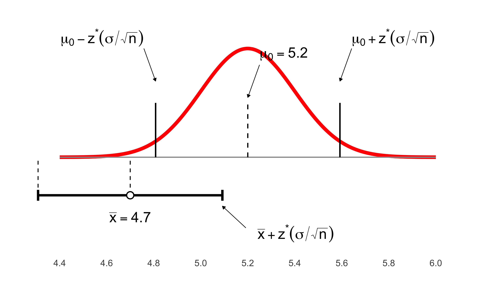
11 Chapter 11: Inference About a Population Mean
Before conducting statistical inference about a population mean, we must verify that certain conditions are met:
We can regard our sample as a simple random sample (SRS).
The population is Normal, so that the sampling distribution of \(\bar{x}\) is also Normal.
- Alternatively, the population is very large, and the sample size is large enough that the sampling distribution is approximately Normal, because of the Central Limit Theorem. (Our previous rules of thumb of \(n\) greater than 25 or 40 will be modified later in the chapter.)
Both \(\mu\) and \(\sigma\) are unknown parameters.
Our goal, of course, is to estimate \(\mu\).
11.1 Inference About \(\mu\) When \(\sigma\) Is Unknown
Thus far we’ve assumed we know \(\sigma\), the population standard deviation.
But this is unrealistic, given that we don’t even know \(\mu\), the mean we are trying to estimate.
What if we do not know \(\sigma\)?
We use the sample estimate, \(s\), to replace \(\sigma\) in our formulas.
Mathematical analysis shows that this is an acceptable substitution.
However, making the substitution requires some changes to our procedures.
In particular, we have to use a new probability distribution for our significance tests and confidence intervals, the t distribution.
11.2 When \(\sigma\) Is Unknown
In an SRS, the distribution of the cases in a sample echoes the distribution in the population, but the correspondence gets better in larger samples:
suppressPackageStartupMessages({
library(ggplot2)
library(dplyr)
library(tibble)
library(grid) # unit(), arrow()
})
set.seed(123)
# ----- Population -----
mu <- 30
sigma <- 10
# ----- Samples -----
n1 <- 20; n2 <- 200
samp1 <- rnorm(n1, mean = mu, sd = sigma)
samp2 <- rnorm(n2, mean = mu, sd = sigma)
xbar1 <- mean(samp1); s1 <- sd(samp1)
xbar2 <- mean(samp2); s2 <- sd(samp2)
# ----- Curve data (same Normal, duplicated per panel) -----
x_vals <- seq(0, 60, length.out = 600)
y_vals <- dnorm(x_vals, mean = mu, sd = sigma)
y_max <- max(y_vals)
lab_small <- "n = 20"
lab_large <- "n = 200"
df_curve <- bind_rows(
tibble(panel = lab_small, x = x_vals, y = y_vals),
tibble(panel = lab_large, x = x_vals, y = y_vals)
)
# ----- Build a dense baseline "swarm" WITHOUT extra packages -----
# We bin x, then spread points within each bin so they don't overplot.
mk_baseline_swarm <- function(values, panel, binwidth = 0.6, band_y = 0.0007,
max_half_width = 0.45, vstep = 0.00005,
size = 1.2, alpha = 0.95) {
# Bin index and bin center
b <- floor(values / binwidth)
tibble(panel = panel, value = values, bin = b) |>
group_by(panel, bin) |>
mutate(
n_in_bin = n(),
rank_in_bin = row_number(),
# spread symmetrically within [-max_half_width, +max_half_width] * binwidth
x_offset = ifelse(
n_in_bin == 1,
0,
((rank_in_bin - (n_in_bin + 1)/2) / ((n_in_bin - 1)/2)) * max_half_width * binwidth
),
x_swarm = (bin + 0.5) * binwidth + x_offset,
# thin vertical band so labels below aren't crowded
y_swarm = band_y + ((rank_in_bin - 1) %% 7 - 3) * vstep,
size = size,
alpha = alpha,
col = "#111111"
) |>
ungroup()
}
# n=20: modest spread & bigger dots; n=200: much tighter band but MANY dots
df_samp <- bind_rows(
mk_baseline_swarm(samp1, lab_small, binwidth = 1.0, size = 1.8, alpha = 0.95),
mk_baseline_swarm(samp2, lab_large, binwidth = 0.6, size = 0.6, alpha = 1.00)
)
# Baseline at y=0
df_base <- tibble(
panel = c(lab_small, lab_large),
x = 0, xend = 60, y = 0, yend = 0
)
# Arrows to the curve
df_arrows <- tribble(
~panel, ~x, ~xend, ~y, ~yend,
lab_small, 18, 25, y_max*0.75, y_max*0.92,
lab_large, 42, 35, y_max*0.75, y_max*0.92
)
# Bottom statistics (plotmath), placed below baseline
stat_y <- -0.006
df_stats <- tribble(
~panel, ~x, ~y, ~lab,
lab_small, 30, stat_y, sprintf("n==%d~~bar(x)==%.1f~~s==%.2f", n1, xbar1, s1),
lab_large, 30, stat_y, sprintf("n==%d~~bar(x)==%.1f~~s==%.2f", n2, xbar2, s2)
)
ggplot() +
# baseline
geom_segment(data = df_base,
aes(x = x, xend = xend, y = y, yend = yend),
color = "gray60", linewidth = 0.9) +
# red population curve
geom_line(data = df_curve, aes(x, y), color = "red", linewidth = 2.6) +
# SWARMED rugs (n=200 now shows a LOT more dots)
geom_point(data = df_samp,
aes(x = x_swarm, y = y_swarm, size = size, alpha = alpha, color = col),
shape = 16, show.legend = FALSE) +
scale_color_identity() +
scale_size_identity() +
scale_alpha_identity() +
# arrows
geom_segment(data = df_arrows,
aes(x = x, xend = xend, y = y, yend = yend),
arrow = arrow(length = unit(0.35, "cm"), type = "closed"),
linewidth = 0.8, color = "black") +
# bottom stats (bold math)
geom_text(data = df_stats,
aes(x = x, y = y, label = lab),
parse = TRUE, fontface = "bold", size = 5.2) +
facet_wrap(~ panel, ncol = 2) +
scale_x_continuous(limits = c(0, 60), breaks = seq(0, 60, 20)) +
coord_cartesian(ylim = c(-0.008, y_max * 1.05), clip = "off") +
labs(
title = bquote("Normal population:" ~ mu == .(mu) * "," ~ sigma == .(sigma)),
x = NULL, y = NULL
) +
theme_minimal(base_size = 16) +
theme(
plot.title = element_text(face = "bold"),
panel.grid = element_blank(),
axis.text.x = element_text(size = 13, color = "black"),
axis.text.y = element_blank(),
axis.ticks.y = element_blank(),
axis.ticks.x = element_line(color = "black"),
panel.background = element_rect(fill = "white", color = NA),
plot.background = element_rect(fill = "white", color = NA),
plot.margin = margin(8, 16, 36, 16)
)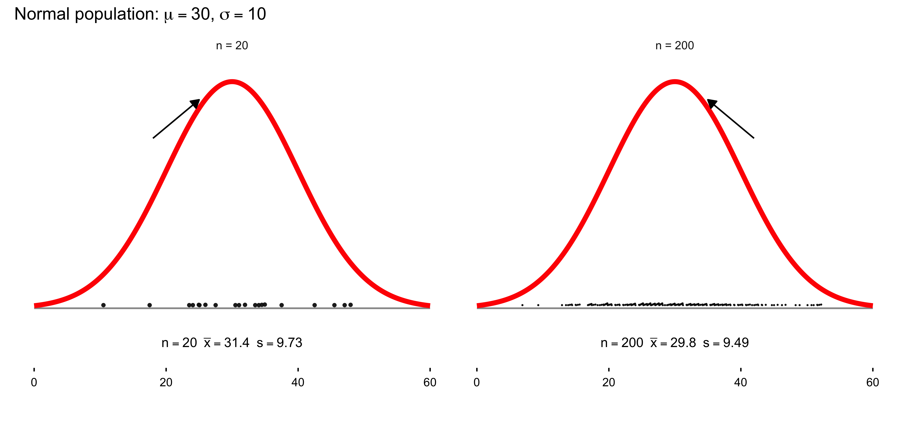
11.3 Modern Statistics and the Great Substitution
Wm. Gossett, a Guinness research mathematician, saw that when \(s\) is substituted for \(\sigma\) in the \(z\) formula, like this:
\[ \frac{\bar{x} - \mu_0}{s/\sqrt{n}} \]
the result is no longer normally distributed.
The new distribution is called t rather than z. That is,
\[ t = \frac{\bar{x} - \mu_0}{s/\sqrt{n}} \]
The distribution of \(t\) is like the normal distribution, but with longer tails.
The difference between the two distributions was enough to give Guinness Brewery a competitive advantage.
11.4 What Makes \(t\) Different from \(z\)
Though the formulas are almost the same, the formula for \(z\) involves dividing a Normally-distributed quantity, namely \(\bar{x}\), by a constant, \(\sigma/\sqrt{n}\):
\[ z = \frac{\bar{x} - \mu_0}{\sigma/\sqrt{n}} \]
(Normally distributed, that is, if the sampling distribution is Normal.)
But the similar formula for \(t\) divides the Normally-distributed \(\bar{x}\) by another Normally-distributed quantity, namely, \(s/\sqrt{n}\):
\[ t = \frac{\bar{x} - \mu_0}{s/\sqrt{n}} \]
Intuitively, since the denominator for \(t\) is less stable, the resulting quantity has the longer-tailed distribution called the \(t\) distribution.
11.5 \(t\) Distributions
All \(t\) distributions have the same mean, namely, zero.
But there are an infinite number of \(t\) distributions, each with a different spread and shape.
These distributions are determined by (or “indexed by”) a number called the degrees of freedom.
In the problems we are dealing with, the appropriate degrees of freedom value is given by \(n - 1\), where \(n\) is the sample size:
\[ df = n - 1 \]
11.6 Example \(t\) Distributions
As the degrees of freedom increase, the \(t\) distribution becomes less spread out, and its shape approaches the Normal distribution.
Beyond some point, say \(df = 120\), the two distributions are practically the same.
11.7 Modern Statistics and the Great Substitution
Wm. Gossett, a Guinness research mathematician, saw that when \(s\) is substituted for \(\sigma\) in the \(z\) formula, like this:
\[ \frac{\bar{x} - \mu_0}{s/\sqrt{n}} \]
the result is no longer normally distributed.
The new distribution is called t rather than z. That is,
\[ t = \frac{\bar{x} - \mu_0}{s/\sqrt{n}} \]
The distribution of \(t\) is like the normal distribution, but with longer tails.
The difference between the two distributions was enough to give Guinness Brewery a competitive advantage.
11.8 What Makes \(t\) Different from \(z\)
Though the formulas are almost the same, the formula for \(z\) involves dividing a Normally-distributed quantity, namely \(\bar{x}\), by a constant, \(\sigma/\sqrt{n}\):
\[ z = \frac{\bar{x} - \mu_0}{\sigma/\sqrt{n}} \]
(Normally distributed, that is, if the sampling distribution is Normal.)
But the similar formula for \(t\) divides the Normally-distributed \(\bar{x}\) by another Normally-distributed quantity, namely, \(s/\sqrt{n}\):
\[ t = \frac{\bar{x} - \mu_0}{s/\sqrt{n}} \]
Intuitively, since the denominator for \(t\) is less stable, the resulting quantity has the longer-tailed distribution called the \(t\) distribution.
11.9 \(t\) Distributions
All \(t\) distributions have the same mean, namely, zero.
But there are an infinite number of \(t\) distributions, each with a different spread and shape.
These distributions are determined by (or “indexed by”) a number called the degrees of freedom.
In the problems we are dealing with, the appropriate degrees of freedom value is given by \(n - 1\), where \(n\) is the sample size:
\[ df = n - 1 \]
11.10 Example \(t\) Distributions
As the degrees of freedom increase, the \(t\) distribution becomes less spread out, and its shape approaches the Normal distribution.
Beyond some point, say \(df = 120\), the two distributions are practically the same.
It is crucial to note that in the graph below, the solid curve in the graph is the standard Normal distribution, which is the familiar bell-shaped curve you have seen in statistics many times. The two dashed and dotted curves are t-distributions, which look similar but have fatter (heavier) tails — meaning they place more probability on more extreme values far from the center. This matters in practice because when sample sizes are small, our estimates are more variable/uncertain, so the t-distribution allows for more room in the tails to account for that extra uncertainty.
As the sample size increases, the t-distribution gets closer and closer to the Normal curve (notice how the dotted line with 9 degrees of freedom is already much closer than the dashed line with only 2). This is why in large samples (e.g., n>30), using the Normal approximation is usually fine — because the t-distribution has already “converged” to the Normal shape. But when samples are small, the t-distribution protects us from being overconfident by widening the tails and making us more cautious in our conclusions.
library(ggplot2)
# Create x values
x <- seq(-4, 4, length.out = 500)
# Create data frame with all distributions
df_distributions <- data.frame(
x = rep(x, 3),
density = c(
dt(x, df = 2),
dt(x, df = 9),
dnorm(x)
),
distribution = rep(
c("t, 2 degrees of freedom",
"t, 9 degrees of freedom",
"standard Normal"),
each = length(x)
)
)
# Create the plot
ggplot(df_distributions, aes(x = x, y = density,
color = distribution,
linetype = distribution)) +
geom_line(linewidth = 1.3) +
# Vertical line at 0
geom_vline(xintercept = 0, color = "gray50", linewidth = 0.8) +
# Add annotation about heavier tails
annotate("text", x = -3.5, y = 0.35,
label = "t distributions have more\narea in the tails than the\nstandard Normal distribution",
hjust = 0, size = 4, lineheight = 0.9, color = "black") +
# Styling
scale_color_manual(values = c(
"t, 2 degrees of freedom" = "#E41A1C",
"t, 9 degrees of freedom" = "#E41A1C",
"standard Normal" = "#E41A1C"
)) +
scale_linetype_manual(values = c(
"t, 2 degrees of freedom" = "dashed",
"t, 9 degrees of freedom" = "dotted",
"standard Normal" = "solid"
)) +
scale_x_continuous(breaks = seq(-4, 4, by = 1)) +
scale_y_continuous(limits = c(0, 0.42), expand = c(0, 0)) +
labs(
x = "",
y = "",
color = "",
linetype = ""
) +
theme_minimal(base_size = 13) +
theme(
legend.position = c(0.75, 0.85),
legend.background = element_rect(fill = "white", color = "black"),
legend.key.width = unit(1.5, "cm"),
legend.text = element_text(size = 11),
axis.text.x = element_text(size = 12, color = "black"),
axis.text.y = element_blank(),
axis.ticks.y = element_blank(),
panel.grid.major.x = element_blank(),
panel.grid.minor = element_blank(),
panel.grid.major.y = element_blank(),
panel.background = element_rect(fill = "white", color = NA),
plot.background = element_rect(fill = "white", color = NA)
)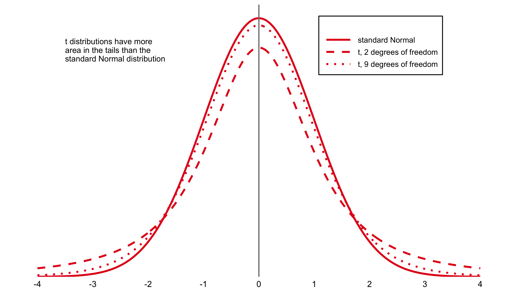
#| label: fig-critical-values-comparison
#| fig-cap: "Comparison of 95% critical values for standard Normal and t(5) distributions"
#| fig-width: 11
#| fig-height: 7
#| warning: false
library(ggplot2)
library(gridExtra)
library(grid)
# Create x values
x <- seq(-4, 4, length.out = 500)
# Calculate densities
df_plot <- data.frame(
x = x,
t_density = dt(x, df = 5),
normal_density = dnorm(x)
)
# Critical values
t_crit <- qt(0.975, df = 5) # 2.571
z_crit <- qnorm(0.975) # 1.960
# Create the plot
p <- ggplot(df_plot, aes(x = x)) +
# t distribution
geom_line(aes(y = t_density), color = "black", linewidth = .9) +
# Normal distribution
geom_line(aes(y = normal_density), color = "red", linewidth = .9, linetype = "dashed") +
# Vertical lines at critical values
geom_vline(xintercept = c(-t_crit, t_crit),
color = "black", linewidth = 0.5, linetype = "solid") +
geom_vline(xintercept = c(-z_crit, z_crit),
color = "red", linewidth = 0.5, linetype = "dashed") +
# Mark and label critical values on x-axis
annotate("point", x = -t_crit, y = 0, size = 3, color = "black") +
annotate("point", x = t_crit, y = 0, size = 3, color = "black") +
annotate("text", x = -t_crit, y = -0.02, label = "(-2.571)",
size = 3.5, hjust = 0.5) +
annotate("text", x = t_crit, y = -0.02, label = "(2.571)",
size = 3.5, hjust = 0.5) +
# Legend
annotate("segment", x = 2.8, xend = 3.3, y = 0.35, yend = 0.35,
linewidth = 1.3, color = "black") +
annotate("text", x = 3.4, y = 0.35, label = "t(5)", hjust = 0, size = 4) +
annotate("segment", x = 2.8, xend = 3.3, y = 0.32, yend = 0.32,
linewidth = 1.3, color = "red", linetype = "dashed") +
annotate("text", x = 3.4, y = 0.32, label = "Normal", hjust = 0, size = 4, color = "red") +
# Axes and theme
scale_x_continuous(breaks = seq(-4, 4, by = 2), limits = c(-4, 4)) +
scale_y_continuous(limits = c(-0.03, 0.4), expand = c(0, 0)) +
labs(
title = "C = 95% critical values of z and t(5)",
x = "t",
y = "density"
) +
theme_minimal(base_size = 13) +
theme(
plot.title = element_text(size = 16, face = "bold", color = "#4472C4", hjust = 0.5),
axis.title.x = element_text(size = 12),
axis.title.y = element_text(size = 12, angle = 90),
axis.text.x = element_text(size = 11, color = "black"),
axis.text.y = element_text(size = 11, color = "black"),
panel.grid.minor = element_blank(),
panel.background = element_rect(fill = "white", color = NA),
plot.background = element_rect(fill = "white", color = NA)
)
# Create the table
table_data <- data.frame(
df = c("1", "...", "5", "...", "1000", "z*"),
c50 = c("1.000", "", "0.727", "", "0.675", "0.674"),
c60 = c("1.376", "", "0.920", "", "0.842", "0.842"),
c70 = c("1.963", "", "1.156", "", "1.037", "1.036"),
c80 = c("3.078", "", "1.476", "", "1.282", "1.282"),
c90 = c("6.314", "", "2.015", "", "1.646", "1.645"),
c95 = c("12.71", "...", "2.571", "...", "1.962", "1.960"),
c96 = c("15.89", "", "2.757", "", "2.056", "2.054"),
c98 = c("31.82", "", "3.365", "", "2.330", "2.326"),
c99 = c("63.66", "", "4.032", "", "2.581", "2.576"),
c995 = c("127.3", "", "4.773", "", "2.813", "2.807"),
c998 = c("318.3", "", "5.893", "", "3.098", "3.090"),
c999 = c("636.6", "", "6.869", "", "3.300", "3.291")
)
# Format table as grob
table_grob <- tableGrob(
table_data,
rows = NULL,
cols = c("Degrees of\nFreedom", "50%", "60%", "70%", "80%", "90%",
"95%", "96%", "98%", "99%", "99.5%", "99.8%", "99.9%"),
theme = ttheme_minimal(
core = list(
fg_params = list(hjust = 0.5, x = 0.5, fontsize = 9),
bg_params = list(fill = c("white", "gray95"))
),
colhead = list(
fg_params = list(fontsize = 9, fontface = "bold"),
bg_params = list(fill = "gray90")
)
)
)
# Add title to table
table_title <- textGrob("Confidence Level C",
gp = gpar(fontsize = 10, fontface = "bold"))
# Combine plot and table
grid.arrange(
p,
arrangeGrob(table_title, table_grob, heights = c(0.1, 0.9)),
nrow = 2,
heights = c(0.6, 0.4)
)
11.11 Understanding Null Hypothesis Significance Testing
You’ve likely encountered statements like these in academic publications and research papers:
“The finding achieved statistical significance, \(p < .05\).”
“We rejected the null hypothesis indicating no difference and determined there was a statistically significant increase at the .01 level.”
These statements represent null hypothesis significance testing (NHST), the conventional framework for statistical inference across numerous fields. Understanding NHST—particularly \(p\) values—is essential for interpreting research that employs these methods. The good news is that NHST shares strong conceptual and mathematical connections with confidence interval estimation, including similar statistical formulas. As we explore NHST, draw on your knowledge of CIs to help make sense of these concepts.
This chapter covers the following topics:
- The fundamentals of NHST and \(p\) values
- \(p\) values and the normal distribution
- \(p\) values and the \(t\) distribution
- Converting between CIs and \(p\) values (in both directions)
- Four critical warnings about NHST and \(p\) values: The four red flags
- NHST decision-making: The alternative hypothesis, and Type I and Type II errors
11.12 The Fundamentals of NHST and \(p\) Values
The approach we refer to as NHST actually combines two distinct methodological frameworks: one pioneered by Sir Ronald Fisher, and another developed by Jerzy Neyman and Egon Pearson, who notably held opposing views to Fisher’s. While Salsburg (2001) provides engaging accounts of these historical debates and the early development of statistical methods, we’ll focus on the integrated approach that researchers predominantly employ today.
Let’s revisit the polling example from Chapter 1, where we estimated support for Proposition A at 53% [51, 55]. Figure 6.1 displays this result, with the cat’s eye indicating the 95% CI. Remember that the CI and its accompanying cat’s eye convey that values near 53% represent the most credible estimates for the true level of support. Values approaching or exceeding the interval limits become progressively less credible, while values substantially beyond the CI—such as 50% or 56%—are comparatively implausible, though not entirely impossible. As always, keep in mind the possibility that our CI could be red.
Now let’s examine NHST and \(p\) values. The procedure involves three steps:
Formulate a null hypothesis. The null hypothesis represents a claim about the population parameter that we aim to evaluate. It designates a single reference value that serves as our baseline for testing. In this polling scenario, we would likely specify 50% as our null hypothesis value, yielding the statement: “support for the proposition stands at 50% in the population”—the threshold required for passage. Null hypotheses frequently assert that no change has occurred or that an effect equals zero.
Compute the \(p\) value. Using the observed data, we calculate the \(p\) value, which informally quantifies how improbable results similar to ours would be IF the null hypothesis were true. The “IF” clause is crucial: calculating a \(p\) value requires assuming the null hypothesis holds. Consequently, a \(p\) value reflects both our data and our specified null hypothesis. For our polling data, with a null hypothesis of 50% population support, the \(p\) value equals .003. This indicates that obtaining poll results like ours would be highly improbable IF the population truly had 50% support. We therefore have reasonable grounds to question that null hypothesis. More broadly, a small \(p\) value casts doubt on the null hypothesis.
Determine whether to reject the null hypothesis. NHST compares the obtained \(p\) value against a criterion termed the significance level, commonly set at .05. When \(p\) falls below this threshold, we doubt the null hypothesis sufficiently to reject it, declaring we have detected a statistically significant effect. When \(p\) exceeds the significance level, we fail to reject the null hypothesis, stating we have a statistically nonsignificant effect or that we did not achieve statistical significance. Note the precise language: we say the null hypothesis is “not rejected” rather than “accepted.” These double negatives are an inherent feature of NHST terminology.
The significance level—frequently .05—establishes the criterion for null hypothesis rejection. Formally, researchers should specify this level before examining the data; we might call this strict NHST. In practice, however, most researchers do not pre-specify their intended significance level. Instead, they compare the obtained \(p\) value against several conventional significance levels: typically .05, .01, and .001, as illustrated in Figure 6.2. For instance, obtaining \(p = .017\) justifies rejecting the null hypothesis at the .05 level, while \(p = .006\) permits rejection at the .01 level. Researchers report the smallest significance level that allows rejection, since rejecting at a more stringent level (.01 versus .05) provides stronger evidence. The researcher thus tailors their conclusion based on where \(p\) falls relative to these conventional thresholds, and might conclude:
library(ggplot2)
# Create data for the three significance level markers
sig_levels <- data.frame(
x = c(0.001, 0.01, 0.05),
y = c(2.8, 1.8, 0.9),
box_width = c(0.025, 0.02, 0.018),
box_height = c(0.6, 0.5, 0.45),
label = c(".001", ".01", ".05")
)
# Create the plot
ggplot() +
# Add vertical line at origin
geom_segment(aes(x = 0, y = 0, xend = 0, yend = 3.2),
linewidth = 1, color = "black") +
# Add horizontal axis line
geom_segment(aes(x = 0, y = 0, xend = 0.22, yend = 0),
linewidth = 1, color = "black") +
# Add tick marks on x-axis
geom_segment(aes(x = c(0, 0.1, 0.2), xend = c(0, 0.1, 0.2),
y = 0, yend = -0.15),
linewidth = 1) +
# Add diagonal lines from axis to boxes
geom_segment(data = sig_levels,
aes(x = x, y = 0, xend = x, yend = y - box_height/2 - 0.05),
linewidth = 1, color = "black") +
# Add speech bubble style boxes
geom_rect(data = sig_levels,
aes(xmin = x - box_width, xmax = x + box_width,
ymin = y - box_height/2, ymax = y + box_height/2),
fill = "paleturquoise1", color = "black", linewidth = 1.5) +
# Add small triangle/tail for speech bubble effect
geom_polygon(data = data.frame(
x = c(0.001 - 0.003, 0.001 + 0.003, 0.001,
0.01 - 0.003, 0.01 + 0.003, 0.01,
0.05 - 0.003, 0.05 + 0.003, 0.05),
y = c(rep(c(sig_levels$y[1] - sig_levels$box_height[1]/2,
sig_levels$y[1] - sig_levels$box_height[1]/2,
sig_levels$y[1] - sig_levels$box_height[1]/2 - 0.15), 1),
rep(c(sig_levels$y[2] - sig_levels$box_height[2]/2,
sig_levels$y[2] - sig_levels$box_height[2]/2,
sig_levels$y[2] - sig_levels$box_height[2]/2 - 0.15), 1),
rep(c(sig_levels$y[3] - sig_levels$box_height[3]/2,
sig_levels$y[3] - sig_levels$box_height[3]/2,
sig_levels$y[3] - sig_levels$box_height[3]/2 - 0.15), 1)),
group = rep(1:3, each = 3)
), aes(x = x, y = y, group = group),
fill = "paleturquoise1", color = "black", linewidth = 1.5) + # CHANGED: fill = "" to fill = "paleturquoise1"
# Add labels inside boxes
geom_text(data = sig_levels,
aes(x = x, y = y, label = label),
size = 8, fontface = "bold", color = "#CC0000") +
# Add x-axis labels
annotate("text", x = c(0, 0.1, 0.2), y = -0.35,
label = c("0", ".1", ".2"),
size = 8, fontface = "bold", color = "#CC0000") +
# Set plot limits and remove default elements
coord_cartesian(xlim = c(-0.01, 0.23), ylim = c(-0.5, 3.4), clip = "off") +
theme_void() +
theme(plot.margin = margin(20, 20, 20, 20))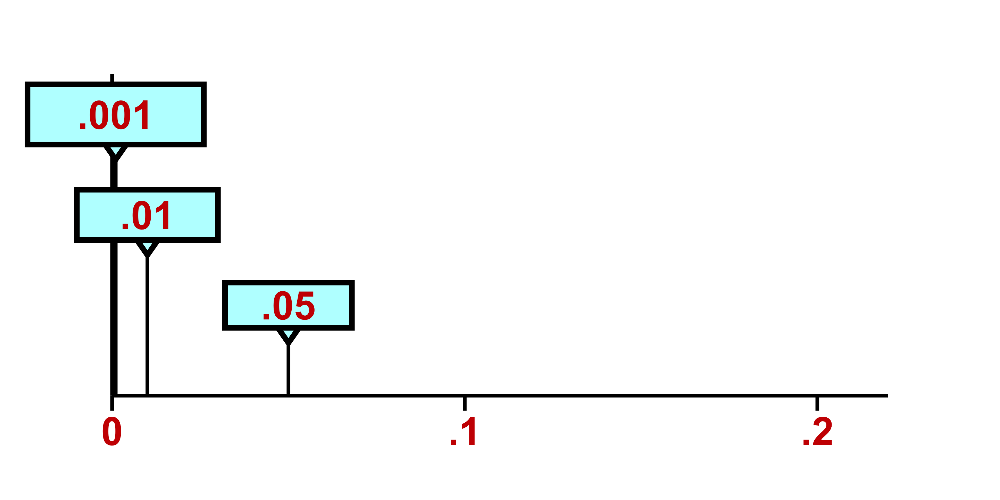
The researcher may also make corresponding statements about statistical significance, such as: “The effect was statistically significant at the .05 level.”
Or “…was statistically significant, p < .001.”
The threshold that determines whether researchers reject the null hypothesis is known as the significance level. When a calculated p-value falls below this threshold, the null hypothesis is rejected; when it exceeds the threshold, the null hypothesis is retained. Lower significance levels are generally favored in research because they yield more persuasive conclusions. The rationale becomes clear when we consider what a p-value represents: it quantifies how probable our observed results would be assuming the null hypothesis holds true. Consequently, diminishing p-values indicate increasingly improbable outcomes under the null hypothesis framework. This improbability strengthens our justification for questioning the null hypothesis, thereby furnishing more compelling evidence for its rejection.
Adopting a more stringent significance level—such as .01 instead of .05—necessitates obtaining a correspondingly smaller p-value. Thus, more rigorous significance thresholds translate to more robust evidence contradicting the null hypothesis and more persuasive grounds for its rejection. Within the research community, p-values are typically interpreted as metrics of evidential strength against the null hypothesis: diminishing p-values correspond to mounting evidence, which bolsters researchers’ confidence when rejecting the null. This perspective explains why researchers might articulate statements such as “p < .001, indicating exceptionally strong evidence against the null hypothesis.”
Best practices in null hypothesis significance testing require reporting precise p-values—such as p = .30, p = .04, or p = .007—rather than merely indicating whether they cross conventional thresholds (e.g., p > .05, p < .05, p < .01). This approach offers comprehensive information while permitting readers to evaluate findings against whatever significance criterion they deem appropriate.
Traditionally, null hypothesis significance testing proceeds through direct computation of p-values without invoking confidence intervals. However, when confidence intervals are available, straightforward methods exist for converting between estimation frameworks and p-value interpretations. When working with the .05 significance threshold, the fundamental correspondence between a 95% confidence interval and its associated p-value—depicted in Figure above—can be articulated in the following manner:
#| label: fig-ci-rejection-regions
#| fig-cap: "CI with rejection (red) vs. non-rejection (blue) regions. If the null value falls outside the CI, reject; inside, do not reject."
#| fig-width: 10
#| fig-height: 6
library(ggplot2)
library(grid) # unit()
ci_lower <- 51
ci_upper <- 55
point_estimate <- 53
ggplot() +
# CI bar + dot
geom_segment(aes(x = ci_lower, xend = ci_upper, y = 1.2, yend = 1.2),
linewidth = 2, color = "#3366CC") +
geom_point(aes(x = point_estimate, y = 1.2), size = 10, color = "#19478A") +
# Brackets
geom_segment(aes(x = ci_lower, xend = ci_lower, y = 0.5, yend = 2.0), linewidth = 1.8) +
geom_segment(aes(x = ci_upper, xend = ci_upper, y = 0.5, yend = 2.0), linewidth = 1.8) +
# Double guide lines at top (note: y & yend!)
geom_segment(aes(x = 49.5, xend = 56.5, y = 2.0, yend = 2.0), linewidth = 1.5) +
geom_segment(aes(x = 49.5, xend = 56.5, y = 1.85, yend = 1.85), linewidth = 1.5) +
# Bottom guide line
geom_segment(aes(x = 49.5, xend = 56.5, y = 0.5, yend = 0.5), linewidth = 1.5) +
# Arrows
geom_segment(aes(x = 49.5, xend = 48.5, y = 1.2, yend = 1.2),
linewidth = 1.8, arrow = arrow(length = unit(0.35, "cm"), type = "closed")) +
geom_segment(aes(x = 56.5, xend = 57.5, y = 1.2, yend = 1.2),
linewidth = 1.8, arrow = arrow(length = unit(0.35, "cm"), type = "closed")) +
# Text (staggered y to avoid overlap)
annotate("text", x = 50.25, y = 4.1,
label = "If the null hypothesis\nvalue is anywhere\nhere, reject",
color = "#CC0000", size = 4.2, fontface = "bold", lineheight = 0.9) +
annotate("text", x = 53.00, y = 3.3,
label = "If the null hypothesis value is anywhere here, don't reject",
color = "#4D4D4D", size = 4.0, lineheight = 0.9) +
annotate("text", x = 55.75, y = 4.1,
label = "If the null hypothesis\nvalue is anywhere\nhere, reject",
color = "#CC0000", size = 4.2, fontface = "bold", lineheight = 0.9) +
# Axis baseline + ticks + labels
geom_segment(aes(x = 50, xend = 56, y = -0.3, yend = -0.3), linewidth = 1) +
geom_segment(aes(x = seq(50, 56, 1), xend = seq(50, 56, 1), y = -0.3, yend = -0.42),
linewidth = 1) +
annotate("text", x = seq(50, 56, 1), y = -0.62, label = seq(50, 56, 1), size = 5.2) +
annotate("text", x = 53, y = -1.05, label = "Support for Proposition A (%)", size = 6) +
coord_cartesian(xlim = c(48, 58), ylim = c(-1.2, 4.8), clip = "off") +
theme_void() +
theme(plot.margin = margin(25, 25, 25, 25))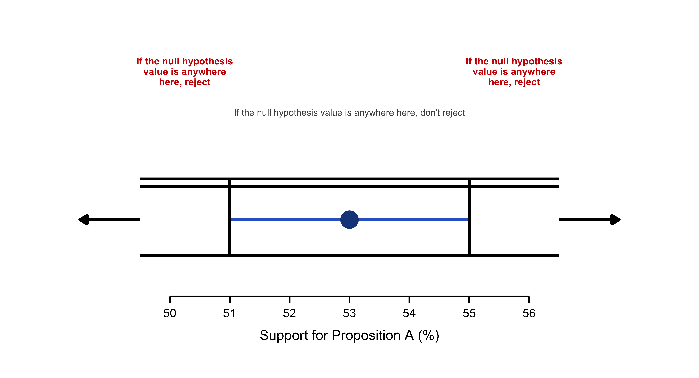
Imagine we conducted a survey to estimate support for Proposition A, and our 95% confidence interval ranges from 51% to 55%, with a point estimate of 53%. The key idea is straightforward: if the null hypothesis value falls within this confidence interval—anywhere between 51% and 55%—we do not reject the null hypothesis. If it falls outside this range, either below 51% or above 55%, we reject the null at the 0.05 significance level. For example, if the null hypothesis posits that support is 50%, we would reject it because 50% lies in the left rejection region. In contrast, if the null claims that support is 52%, we would not reject it since 52% falls comfortably within the interval. This provides an intuitive connection between confidence intervals and hypothesis testing: when the null value is captured by the interval, the data do not offer sufficient evidence to reject it; when it falls outside, the evidence is strong enough to conclude that the null hypothesis is unlikely to be true.
11.13 Connecting Confidence Intervals to \(p\) Values
Several key relationships emerge between CIs and \(p\) values:
- When a null hypothesis value falls outside the 95% CI, the corresponding \(p\) value is less than .05. Since \(p\) falls below the significance level, we reject the null hypothesis.
- Conversely, when the null hypothesis value falls within the 95% CI, the \(p\) value exceeds .05, and we fail to reject the null hypothesis.
When employing .05 as our significance level, the decision rule becomes straightforward: observe whether the null hypothesis value falls within or beyond the CI boundaries. A value outside the interval leads us to reject the null hypothesis and declare the effect statistically significant; a value inside means we don’t reject.
Consider these questions: Could we reject a null hypothesis proposing 50.5% population support? What about 60%? Or 52%? Examine where these values appear in the figure above?
You likely reasoned correctly—the first two null hypotheses merit rejection because both values lie outside the CI shown in Figure 6.3. The third cannot be rejected since 52% falls within the interval.
We’ll explore the translation between CIs and \(p\) values more thoroughly later, including how to work with significance levels other than .05.
The figure above reveals that \(p = .05\) when the null hypothesis value coincides with either CI limit. But what about \(p\) values for other null hypothesis values? Figure 6.4 illustrates how \(p\) varies approximately for null hypothesis values positioned at different locations relative to the CI.
A null hypothesis of 50%—where the cat’s eye appears thin and lies well beyond the CI—yields \(p = .003\), providing substantial evidence against that hypothesis. In contrast, consider a null hypothesis of 52%. If 52% truly represents population support, then observing approximately 53% support in our poll would be quite probable, resulting in a large \(p\) value: specifically, \(p = .33\). At 52%, the cat’s eye appears relatively thick.
This pattern holds consistently: thick regions of the cat’s eye correspond to large \(p\) values, indicating little evidence against those null hypothesis values. As we examine values increasingly distant from 53%, the cat’s eye narrows, \(p\) values decrease, and evidence against those null hypothesis values strengthens progressively.
The relationship is clear: the width of the cat’s-eye encodes plausibility, and it narrows as the evidential force of the \(p\) value increases. Around 52%–54%, where the eye is thickest, \(p\) shows virtually no evidence against those parameter values. As we move away from 53% toward and past the CI limits — where the eye tightens — the corresponding \(p\) values register increasingly strong evidence against those values. Once again the cat’s-eye display is doing powerful conceptual work: one can read it either as a visualization of plausibility or, equivalently, as a visualization of evidential strength via \(p\) values. The two views coincide precisely, as they should.
Now consider a null hypothesis proposing 51.5% population support. How plausible does this value appear? What \(p\) value would you estimate for our poll results given this null hypothesis? What evidence do our data provide against this hypothesis?
11.14 p Values and the Normal Distribution
We’ve hit an important checkpoint: our first \(p\) value. No parade needed—but it’s worth noting. I’ll use the conventional symbols: the null hypothesis is \(H_0\) and its hypothesized value is \(\mu_0\). To illustrate how the \(p\) value is computed, we’ll work through the HEAT example. Mirroring the confidence-interval workflow from Chapter 5, we’ll start with a normal-theory model that treats \(\sigma\) as known, and then switch to a second model based on the \(t\) distribution that relaxes that assumption.
11.15 Definition of a \(p\) Value
A \(p\) value is the probability — evaluated under a specified statistical model — of observing the result we obtained, or a result even further from what \(H_0\) predicts, assuming the null hypothesis is true. Notice the refinement relative to the earlier, more informal description that spoke of “results similar to ours.” The formal definition replaces “similar” with “as or more extreme.” A result is “more extreme” if it departs even further from the value posited by \(H_0\), and therefore would constitute at least as much, or more, evidence against the null than our observed result.
Why include more-extreme hypothetical results when computing the \(p\) value? Because the goal is to measure the full probability mass of outcomes that would put the same or greater strain on the null as the actual data do — that is, outcomes that would be at least as surprising if \(H_0\) were in fact correct.
To make this concrete, consider HEAT scores at College Alpha and compare them to the overall college-student population. Assume HEAT scores across all college students follow a normal distribution with \(\mu = 50\) and \(\sigma = 20\). The null hypothesis asserts that College Alpha’s population mean matches the overall mean: \(H_0!:\ \mu = 50\).
Imagine drawing a sample of \(N = 30\) students from College Alpha and obtaining a sample mean of \(M = 57.8\). The observed mean is therefore 7.8 points above the null value. The corresponding \(p\) value is the probability that, under \(H_0\) (i.e., assuming \(\mu = 50\)), a study patterned like ours would produce a sample mean of \(57.8\) or higher — or, by symmetry, \(42.2\) or lower. Those are the outcomes at least as incompatible with the null as what we observed.
\[ z = \frac{M - \mu}{\sigma/\sqrt{N}} \tag{11.1}\]
When \(H_0\) holds true, the population mean equals \(\mu_0\). Substituting this into Equation 11.1 yields:
\[ z = \frac{M - \mu_0}{\sigma/\sqrt{N}} \tag{11.2}\]
This \(z\) statistic reports how many standard errors the sample mean (\(M=57.8\)) lies above the null value \(\mu_0 = 50\); it encodes the degree to which the observed mean departs from what \(H_0\) asserts. The associated \(p\) value is the probability, under \(H_0\), of obtaining a deviation of that magnitude or larger in either direction.
Figure 6.5 shows the standard normal distribution with vertical markers at \(z = 2.136\) and \(z = -2.136\), highlighting the two tail areas that count as “as or more extreme” outcomes. To produce that illustration I opened the Normal module, selected Two tails and Areas, and positioned the slider. The combined shaded area equals \(0.0327\). That is our \(p\) value; rounding yields \(p \approx .03\). Thus, \(p = .03\) is the probability of producing a \(z\) score of \(2.136\) or larger in absolute value from a standard normal distribution. In terms of the raw scale, this corresponds to the probability of observing \(M \ge 57.8\) or \(M \le 42.2\) if the true mean is 50.
What does a \(p\) value near .03 imply for \(H_0\)? If \(H_0\) were correct, only about 3% of studies of this design would generate a mean at least this far from 50. This makes the observed result unusual under the null and therefore counts as evidence against \(H_0\). Under standard NHST conventions, \(p < .05\) leads us to reject the claim that College Alpha’s population mean equals 50 and to infer instead that their mean HEAT score is higher. In the next exercise we will examine the confidence interval associated with this result.
Here’s a systematic summary of how we determined and interpreted that \(p\) value:
We specified our sample result (\(M = 57.8\)) and our null hypothesis (\(H_0: \mu = 50\)).
We examined the difference, or discrepancy, between that result and the null hypothesis value. Our difference was \((57.8 - 50)\).
library(ggplot2)
library(dplyr)
library(tidyr)
# Prepare data with sample sizes
agg2 <- as.data.frame(margin.table(UCBAdmissions, c(1, 2))) |>
pivot_wider(names_from = Admit, values_from = Freq) |>
mutate(
n = Admitted + Rejected,
pct = Admitted / n,
se = sqrt(pct * (1 - pct) / n),
label = paste0(scales::percent(pct, accuracy = 0.1), "\n(n=", scales::comma(n), ")")
)
bold_pal <- c("Female" = "#FF1493", "Male" = "#00CED1")
ggplot(agg2, aes(x = Gender, y = pct, fill = Gender)) +
geom_errorbar(
aes(ymin = pct - 1.96 * se, ymax = pct + 1.96 * se),
width = 0.2,
linewidth = 1,
color = "grey20"
) +
geom_col(
width = 0.75,
color = "white",
linewidth = 2,
alpha = 0.95
) +
geom_text(
aes(label = label),
vjust = -2.2,
size = 5,
fontface = "bold",
color = "grey10",
lineheight = 0.9
) +
scale_y_continuous(
labels = scales::percent_format(accuracy = 1),
limits = c(0, 0.55),
breaks = seq(0, 0.5, 0.1),
expand = expansion(mult = c(0, 0.02))
) +
scale_fill_manual(values = bold_pal) +
# Labels
labs(
title = "Gender Disparity in UC Berkeley Admissions",
subtitle = "Overall admission rates mask department-level patterns (Fall 1973)",
x = NULL,
y = "Admission rate (%)",
caption = "Error bars represent 95% confidence intervals"
) +
theme_minimal(base_size = 13, base_family = "sans") +
theme(
plot.background = element_rect(fill = "white", color = NA),
panel.background = element_rect(fill = "white", color = NA),
panel.grid = element_blank(), # Remove ALL gridlines
axis.line = element_line(color = "grey20", linewidth = 0.8),
axis.ticks = element_line(color = "grey20", linewidth = 0.6),
axis.ticks.length = unit(0.25, "cm"),
axis.text = element_text(color = "grey10", size = 12, face = "bold"),
axis.text.x = element_text(size = 14),
axis.title.y = element_text(face = "bold", size = 13, margin = margin(r = 12)),
plot.title = element_text(
face = "bold",
size = 17,
hjust = 0,
margin = margin(b = 6),
color = "grey10"
),
plot.subtitle = element_text(
size = 11,
hjust = 0,
margin = margin(b = 18),
color = "grey40"
),
plot.caption = element_text(
size = 9,
hjust = 1,
margin = margin(t = 12),
color = "grey50",
face = "italic"
),
legend.position = "none",
plot.margin = margin(25, 25, 20, 25)
)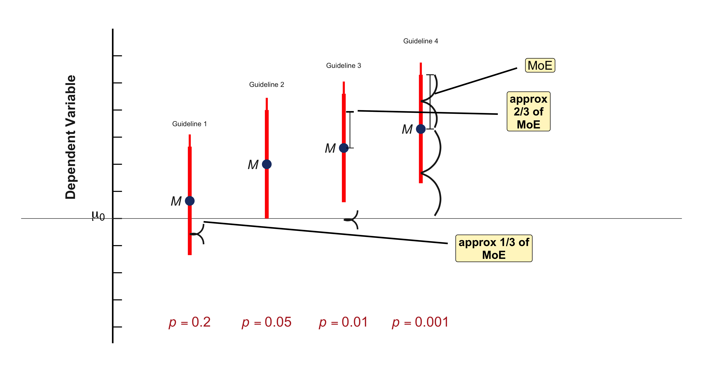
We applied a formula (Equation 11.2) to compute the value of a test statistic from that difference, assuming \(H_0\) were true. We determined that \(z = 2.136\).
We examined the distribution of the test statistic, \(z\), to identify the two tail areas corresponding to that test statistic value. Figure 6.5 reveals that the combined area is .03 (after rounding); this constitutes our \(p\) value.
We interpreted the \(p\) value, employing either the NHST framework or the strength of evidence approach.
NoteTest Statistic
A test statistic is any summary of the data whose sampling distribution is known under \(H_0\) and that can therefore be used to compute a \(p\) value. A familiar example is the \(z\) statistic, which—under its assumptions—follows the standard normal distribution.
Using the same sample mean can yield different \(p\) values because the underlying statistical models differ. If it is defensible to treat the population standard deviation for College Alpha as known—for example, \(\sigma = 20\)—we adopt the normal-theory model and use \(z\) to obtain the \(p\) value. If, instead, we hesitate to import \(\sigma = 20\) from the broader college population (because College Alpha may differ in relevant ways), we avoid fixing \(\sigma\) and work with the \(t\) model, substituting the sample standard deviation \(s\) and using the \(t\) statistic (and its degrees of freedom) to compute the \(p\) value or the CI. As so often in applied work, this is a judgment call. When a trustworthy population value of \(\sigma\) is available, it is typically preferable to use it. Relying on \(s\) is more fragile when \(N\) is small, because \(s\) can be a noisy estimate of \(\sigma\); in those situations the \(t\) approach appropriately accounts for that extra uncertainty.
The fundamental distinction, naturally, lies in the fact that the two approaches rely on different statistical models. If we deem it reasonable to apply the population value of \(\sigma = 20\) for College Alpha students, then we select a normal distribution model and employ \(z\) to compute the \(p\) value. However, if we consider students at that institution to be sufficiently different from the broader college population to which the HEAT applies, then we might prefer to avoid assuming \(\sigma = 20\) for College Alpha students. In this case, we would select a \(t\) distribution model and utilize \(s\) and \(t\) to calculate the \(p\) value (or CI). As is frequently the case, this represents a matter of informed professional judgment. We will typically prefer to use a known population value of \(\sigma\) when available, rather than relying on our sample \(s\) as an estimate of \(\sigma\), particularly when \(N\) is small and consequently our \(s\) may not provide a reliable estimate of \(\sigma\).
We’ve explored four methods for interpreting a CI. If the null hypothesis value \(\mu_0\) falls outside or inside the CI to determine whether \(p < .05\) or \(p > .05\). Here I’ll extend this further and examine how to approximate a \(p\) value visually, given a 95% CI and a null hypothesis value \(\mu_0\).
#| label: fig-ci-p-value-guidelines
#| fig-cap: "Four sample means with 95% CIs, same length. The null value is $\\mu_0$. Red labels show approximate $p$ values; cream callouts show MoE heuristics."
#| fig-width: 10
#| fig-height: 6
#| fig-format: png
#| fig-dpi: 300
#| warning: false
#| message: false
suppressPackageStartupMessages(library(ggplot2))
library(grid) # for unit()
# -------------------------
# Helper: draw a curly brace with two smooth curves
# -------------------------
brace <- function(x, y0, y1, w = 0.20, col = "black", lwd = 0.9){
ym <- (y0 + y1) / 2
list(
annotate("curve", x = x, y = ym, xend = x + w, yend = y1,
curvature = 0.55, colour = col, linewidth = lwd),
annotate("curve", x = x, y = ym, xend = x + w, yend = y0,
curvature = -0.55, colour = col, linewidth = lwd)
)
}
# -------------------------
# Data & parameters
# -------------------------
moe <- 2
mu0 <- 0
sc <- data.frame(
x = 1:4,
label = c("Guideline 1","Guideline 2","Guideline 3","Guideline 4"),
M = c(0.65, 2.00, 2.60, 3.30),
p_lab = c(".20",".05",".01",".001")
)
sc$lo <- sc$M - moe
sc$hi <- sc$M + moe
# Palette
col_line <- "red"
col_point <- "#1F3B73"
col_text <- "#1F1F1F"
col_red <- "#B52A2A"
col_box <- "#FFF6C8"
# Canvas (extra right room so labels never collide)
y_min <- -4.6; y_max <- 7.0
x_min <- -0.8; x_max <- 7.0
yticks <- seq(-4, 6, by = 1)
# Callout positions (chosen to avoid *any* overlap)
moe_box_xy <- c(5.55, 5.65) # x, y
moe_lead_xy <- matrix(c(5.25, 5.55, 4.18, 4.60), ncol = 2, byrow = TRUE) # (x,y)->(xend,yend)
p23_box_xy <- c(5.40, 3.95)
p23_lead_xy <- matrix(c(5.00, 3.85, 3.18, sc$M[3] + (2/3)*moe + 0.04), ncol = 2, byrow = TRUE)
p13_box_xy <- c(4.95, -1.10)
p13_lead_xy <- matrix(c(1.18, mu0 - 0.12, 4.35, -0.92), ncol = 2, byrow = TRUE)
ggplot() +
# Left axis + ticks
annotate("segment", x = 0, xend = 0, y = y_min, yend = y_max,
linewidth = 0.9, colour = "black") +
annotate("segment", x = 0, xend = 0.12, y = yticks, yend = yticks,
linewidth = 0.6, colour = "black") +
# Baseline at mu0 + label
geom_hline(yintercept = mu0, linewidth = 0.3, colour = "grey25") +
annotate("text", x = -0.10, y = mu0, label = "mu[0]",
parse = TRUE, hjust = 1, vjust = 0.25, size = 6.2, colour = "black") +
# Y-axis title
annotate("text", x = -0.55, y = 3.0, label = "Dependent Variable",
angle = 90, size = 5.8, fontface = "bold", colour = col_text) +
# CI pillars + short caps
geom_segment(data = sc, aes(x = x, xend = x, y = lo, yend = hi),
linewidth = 2.2, colour = col_line, lineend = "butt") +
geom_segment(data = sc, aes(x = x, xend = x, y = hi, yend = hi + 0.45),
linewidth = 1.2, colour = col_line) +
# Means + italic M
geom_point(data = sc, aes(x = x, y = M),
shape = 16, size = 5.2, colour = col_point) +
geom_text (data = sc, aes(x = x - 0.18, y = M, label = "M"),
fontface = "italic", size = 5.6, colour = col_text) +
# Guideline titles (staggered to clear callouts)
geom_text(data = transform(sc, ylab = hi + c(0.85, 0.95, 1.05, 1.25)),
aes(x = x, y = ylab, label = label),
fontface = "plain", size = 3, colour = col_text) +
# --- Braces (clean, organized) ---
# tiny brace under G1 crossing baseline
brace(x = 1.00, y0 = mu0 - 0.95, y1 = mu0 - 0.20, w = 0.18, col = col_text, lwd = 0.9) +
# brace at G3 where CI crosses baseline
brace(x = 3.00, y0 = mu0 - 0.40, y1 = mu0 + 0.30, w = 0.18, col = col_text, lwd = 0.9) +
# two braces on G4: lower (mu0→M) and upper (M→upper CI)
brace(x = 4.00, y0 = mu0 + 0.10, y1 = sc$M[4] - 0.05, w = 0.18, col = col_text, lwd = 1.0) +
brace(x = 4.00, y0 = sc$M[4] + 0.05, y1 = sc$hi[4], w = 0.18, col = col_text, lwd = 1.0) +
# --- MoE bracket on G4 (for exact endpoints) ---
annotate("segment", x = 4.12, xend = 4.12, y = sc$M[4], yend = sc$hi[4],
linewidth = 0.5, colour = "black") +
annotate("segment", x = 4.07, xend = 4.17, y = sc$M[4], yend = sc$M[4], linewidth = 0.5) +
annotate("segment", x = 4.07, xend = 4.17, y = sc$hi[4], yend = sc$hi[4], linewidth = 0.5) +
# --- MoE callout (box + leader), positioned to never intersect
annotate("label", x = moe_box_xy[1], y = moe_box_xy[2], label = "MoE",
fill = col_box, colour = "black", size = 5.3,
label.size = 0.5, label.padding = unit(0.15, "lines")) +
annotate("segment",
x = moe_lead_xy[1,1], y = moe_lead_xy[1,2],
xend = moe_lead_xy[2,1], yend = moe_lead_xy[2,2],
linewidth = 0.9, colour = "black") +
# --- approx 2/3 of MoE (G3) bracket + callout (box well to the right)
annotate("segment", x = 3.08, xend = 3.08,
y = sc$M[3], yend = sc$M[3] + (2/3)*moe, linewidth = 0.4, colour = "black") +
annotate("segment", x = 3.03, xend = 3.13, y = sc$M[3], yend = sc$M[3], linewidth = 0.4) +
annotate("segment", x = 3.03, xend = 3.13,
y = sc$M[3] + (2/3)*moe, yend = sc$M[3] + (2/3)*moe, linewidth = 0.9) +
annotate("label", x = p23_box_xy[1], y = p23_box_xy[2],
label = "approx\n2/3 of\nMoE",
fill = col_box, colour = "black", fontface = "bold",
size = 4.9, lineheight = 0.95,
label.size = 0.5, label.padding = unit(0.20, "lines")) +
annotate("segment",
x = p23_lead_xy[1,1], y = p23_lead_xy[1,2],
xend = p23_lead_xy[2,1], yend = p23_lead_xy[2,2],
linewidth = 0.9, colour = "black") +
# --- approx 1/3 of MoE callout (long leader from baseline)
annotate("label", x = p13_box_xy[1], y = p13_box_xy[2],
label = "approx 1/3 of\nMoE",
fill = col_box, colour = "black", fontface = "bold",
size = 4.9, lineheight = 0.95,
label.size = 0.5, label.padding = unit(0.22, "lines")) +
annotate("segment",
x = p13_lead_xy[1,1], y = p13_lead_xy[1,2],
xend = p13_lead_xy[2,1], yend = p13_lead_xy[2,2],
linewidth = 0.9, colour = "black") +
# Red p labels
annotate("text", x = sc$x, y = rep(-3.85, 4),
label = paste0("italic(p) == ", sc$p_lab),
parse = TRUE, size = 6.0, colour = col_red) +
# Canvas & theme
scale_x_continuous(limits = c(x_min, x_max), breaks = NULL) +
scale_y_continuous(limits = c(y_min, y_max), breaks = NULL) +
theme_minimal(base_size = 13) +
theme(
panel.grid = element_blank(),
axis.title = element_blank(),
axis.text = element_blank(),
plot.margin = margin(16, 26, 26, 26)
)
to approximate a rough estimate of the \(p\) value, rather than replacing the precise calculation we’d require for an accurate \(p\) value.
Naturally, you can apply these same guidelines when a CI is presented in text format rather than displayed graphically. Suppose you encounter the statement “the decrease in mean response time was 32 ms [10, 54].” You want to estimate the \(p\) value for testing the null hypothesis of zero change, meaning \(\mu_0 = 0\). First, observe that 0 falls outside the CI, so we know \(p < .05\). Then visualize—either by sketching or mentally—the CI and its position relative to zero. Comparing with Figure 6.7, note that our CI falls between the two rightmost scenarios, indicating \(p\) lies between .01 and .001, perhaps around .005. Remember, we’re content with approximate eyeballing—the goal is a rough sense of the \(p\) value, not an exact calculation.
The figure above provides additional illustration of how the \(p\) value varies depending on where a 95% CI falls in relation to \(\mu_0\). Imagine shifting \(M\) and the CI vertically, and approximating the \(p\) value. The short dotted lines labeled with \(p\) values move vertically with the CI, marking our four guidelines.
11.16 Type I and Type II Errors
Assuming that either \(H_0\) or \(H_1\) is true, two possible states of reality exist: Either no effect exists and \(H_0\) is true, or an effect exists and \(H_1\) is true. Additionally, we face two possible decisions: Reject \(H_0\), or fail to reject \(H_0\).
Two cells represent desirable outcomes, where our decision would be correct: In the upper left cell, no effect exists, \(H_0\) is true, and we correctly fail to reject it. In the lower right cell, an effect exists, \(H_1\) is true, and we correctly reject \(H_0\).
The remaining two cells represent errors, designated as Type I and Type II errors:
A Type I error constitutes a false positive. We declare “There’s an effect!”, but unfortunately we’re mistaken. If we reject the null hypothesis that \(\mu = 50\) for College Alpha students when that value is actually their true population mean HEAT score, then we commit a Type I error.
A Type II error constitutes a false negative, also termed a miss. An effect exists, yet we fail to detect it. If we don’t reject the null hypothesis that \(\mu = 50\) for College Alpha students when their population mean HEAT score is actually not 50, then we commit a Type II error.
6.21 If you select \(\alpha = .01\) and obtain \(p = .03\), what decision do you make? Which cells in the table could you occupy?
- Describe and identify each of those cells.
- Can you ever determine with certainty which single cell you occupy? Explain.
- Can you ever be certain whether to feel satisfied or disappointed? Explain.
6.22 Suppose you select \(\alpha = .05\) and obtain \(p = .03\). Answer Exercise 6.21 for these values.
6.23 What is \(\alpha\), what is \(p\), and how do they differ?
Next we address a crucial concept about \(\alpha\), and what it reveals about Type I errors.
11.17 The Type I Error Rate, \(\alpha\), and What It Means
What is the probability of committing a Type I error when \(H_0\) holds true? When \(H_0\) is true, we’ll be unfortunate and obtain \(p < .05\) in only 5% of cases over the long run. This represents the fundamental definition of the \(p\) value. Selecting \(\alpha = .05\), those 5% of instances occur when \(p < \alpha\) and we reject \(H_0\). Consequently, \(\alpha\) represents the Type I error rate—the probability of making a Type I error when the null hypothesis is true.
NoteType I Error Rate
The Type I error rate, \(\alpha\), represents the probability of rejecting \(H_0\) when it’s actually true. This is also termed the false positive rate.
\[ \alpha = \text{Probability (Reject } H_0\text{, WHEN } H_0 \text{ is true)} \tag{11.3}\]
It’s essential to remember “WHEN \(H_0\) is true” (equivalent to “IF \(H_0\) is true”) for \(\alpha\), just as we must remember this condition for \(p\) values. Both \(\alpha\) and a \(p\) value represent probabilities that assume \(H_0\) holds true, and both can be misinterpreted in identical ways. Recall the caution regarding statements like “The \(p\) value is the probability that \(H_0\) is true.” (Incorrect!) Similarly, we must guard against statements claiming that \(\alpha\) represents the probability that \(H_0\) is true, or the probability that no effect exists. (Both incorrect!)
Whenever you encounter \(\alpha\) or a \(p\) value, remind yourself “assuming the null hypothesis is true.”
6.24 Suppose you select \(\alpha = .05\). When the null hypothesis holds true, what proportion of the NHST decisions you make will constitute false positives? Can we ever determine with certainty whether the null hypothesis is true?
11.18 The Type II Error Rate, \(\beta\), and What It Means
I’ll now define the Type II error rate, which we denote as \(\beta\).
NoteType II Error Rate
The Type II error rate, \(\beta\), represents the probability of failing to reject \(H_0\) when it’s actually false. This is also termed the false negative rate, or miss rate.
\[ \beta = \text{Probability (Don't reject } H_0\text{, WHEN } H_1 \text{ is true)} \tag{11.4}\]
To compute a \(p\) value and evaluate \(\alpha\), the Type I error rate, we required a null hypothesis specifying a single value, such as \(H_0: \mu = 0\). Similarly, to employ Equation 11.4 to calculate \(\beta\), the Type II error rate, we need an alternative hypothesis that specifies a single value. For our College Alpha example, we might select:
- \(H_0: \mu = 50\) for the College Alpha student population.
- \(H_1: \mu = 60\).
Why 60? We might select 60 because we know College Alpha maintains a particularly robust environmental awareness program. Nevertheless, it’s somewhat artificial to assume that the population mean equals precisely 50 or precisely 60, but employing these hypotheses at least permits calculation of both Type II and Type I error rates.
Using \(H_1: \mu = 60\), \(\beta\) calculated using Equation 11.4 represents the probability we’ll fail to detect the difference from 50, assuming the College Alpha mean truly is 60. Here we must note carefully that \(\beta\) is not the probability that \(H_1\) is true—rather, it’s a probability that assumes \(H_1\) is true. Whenever you encounter \(\beta\) or any reference to Type II errors, remind yourself “assuming \(H_1\) is true,” or “assuming an effect of exactly that magnitude exists.”
library(ggplot2)
# Set parameters
mu0 <- 0 # null hypothesis value (horizontal line position)
M <- -2.5 # sample mean position (center of the CI)
ci_half_width <- 2.7 # margin of error (half-width of CI)
# CI bounds
ci_lower <- M - ci_half_width
ci_upper <- M + ci_half_width
# P-value positions (y-coordinates relative to mu0=0)
p_positions <- data.frame(
p_value = c(".001", ".01", ".05", ".20"),
# **ADJUSTMENT HERE:** .05 is now slightly above mu0 (0.1)
y = c(2.5, 1.5, 0.1, -0.7),
color = "#CC0000"
)
# Create the plot
ggplot() +
# 1. Null Hypothesis Line (mu0) - Solid Black
geom_hline(yintercept = mu0, linewidth = 1.5, color = "black") +
# 2. Mean Line (M) - Thin Black line through the mean M
geom_hline(yintercept = M, linewidth = 0.5, color = "black") +
# 3. Confidence Interval (CI) - Thick blue vertical line
# Reverting the linewidth back to a thicker value to match the screenshot better
geom_segment(aes(x = 0, xend = 0, y = ci_lower, yend = ci_upper),
linewidth = .9, color = "#264B86") +
# 4. Mean Point - Solid filled circle
geom_point(aes(x = 0, y = M),
size = 8, color = "#264B86", fill = "#264B86", shape = 21) +
# 5. Tick mark at mu0 on the CI (This represents the p=.05 *boundary*)
geom_segment(aes(x = -0.05, xend = 0.05, y = mu0, yend = mu0),
linewidth = 1, color = "#CC0000") +
# 6. Dotted p-value lines (only on the RIGHT side, dashed)
# This includes the now-adjusted .05 line which is above mu0
geom_segment(data = p_positions,
aes(x = 0.1, xend = 1.1, y = y, yend = y),
linetype = "dashed", linewidth = 1.1, color = "#CC0000") +
# 7. P-value labels (Red text, right aligned)
geom_text(data = p_positions,
aes(x = 1.15, y = y, label = p_value),
size = 5.5, color = "#CC0000", hjust = 0, fontface = "plain") +
# 8. mu0 label (LaTeX formatting for Greek letter)
annotate("text", x = -0.05, y = mu0 + 0.2, label = "mu[0]",
size = 7, hjust = 1, parse = TRUE) +
# 9. M label (Italicized, close to the mean line)
annotate("text", x = -0.05, y = M - 0.1, label = "italic(M)",
size = 7, hjust = 1, parse = TRUE) +
# 10. Dependent Variable label (Rotated)
annotate("text", x = -1.1, y = 0, label = "Dependent Variable",
angle = 90, size = 6, fontface = "plain") +
# 11. Axis lines (The main bounding box/axes from the original)
geom_segment(aes(x = -0.5, xend = -0.5, y = -4.5, yend = 3.5), linewidth = 0.8) + # Left Y-axis
# 12. Theme and Coordinates
coord_cartesian(xlim = c(-1.5, 1.8), ylim = c(-4.5, 3.5), expand = FALSE) + # Set boundaries
theme_minimal() +
theme(
axis.title = element_blank(),
axis.text = element_blank(),
panel.grid = element_blank(),
panel.background = element_rect(fill = "white", color = NA),
plot.background = element_rect(fill = "white", color = NA),
plot.margin = margin(20, 10, 10, 20)
)
11.19 The Independent Groups Design
Researchers frequently seek to examine differences between two conditions—for instance, comparing note-taking using pen versus laptop. This chapter explores the design that contrasts conditions by employing separate, independent groups of participants. Subsequently, in Chapter 8, we’ll examine an alternative approach: the paired design, wherein a single group of participants provides data for both conditions.
This chapter begins with fundamental concepts for independent groups: The estimation framework, which emphasizes the difference between two means—our effect size—along with its CI. I’ll then present an alternative method for expressing this effect size, utilizing a standardized effect size measure termed Cohen’s \(d\). Cohen’s \(d\) represents a remarkably valuable measure that enables us to compare findings across diverse types of studies. Finally, I’ll examine a second analytical approach, grounded in NHST and \(p\) values. The chapter addresses these essential topics:
- The independent groups design
- The CI on the difference between two means
- Cohen’s \(d\), a standardized effect size measure
- Interpreting \(d\) and the CI on \(d\)
- Applying \(p\) values and NHST with independent groups
- The dance of the \(p\) values, a revealing illustration of variability, and Red Flag 5
11.20 The Independent Groups Design
In the independent groups design, each participant undergoes testing in only one of the two conditions under comparison.
To contrast note-taking with pen versus laptop, Mueller and Oppenheimer (2014) employed two independent groups, randomly assigning students to the two conditions. This exemplifies the independent groups design, wherein the performance data collected with pen are independent of the data collected with laptop because they originate from distinct groups of students. This constitutes an experiment, which supports a conclusion that any observed difference was most likely caused by the Pen–Laptop independent variable.
The study revealed that students learned more effectively after taking notes in longhand compared to typing notes. The researchers hypothesized that writing might encourage expression of concepts in students’ own words, whereas typing might promote relatively mindless transcription that resulted in comparatively poor learning. To investigate this hypothesis, the researchers developed a transcription score: the percentage of notes representing verbatim transcription from the lecture. Following Chapter 2, transcription score serves as the dependent variable I’ll examine here.
The initial step involves examining the data. Figure 7.1 displays individual data points, which demonstrate substantial variation within both groups. As we compute descriptive and inferential statistics, continuously bear in mind the underlying individual data. Avoid allowing a pattern of means to mislead you—individuals may not conform to the overall trend.
#| label: fig-transcription-data
#| fig-cap: "The Pen–Laptop transcription data for independent groups. Open dots are data for individual students. Group means $M_1$ and $M_2$ and 95% CIs, are displayed."
#| fig-width: 6
#| fig-height: 6
#| cache: false
#| dev: "png"
library(ggplot2)
library(dplyr)
# Simulate data based on the figure
set.seed(123)
# Pen group data (approximately matching the scatter in the figure)
pen_data <- c(20, 18, 17.5, 14.5, 13, 12.5, 12, 11.5, 11, 10.5, 10, 9.5, 9,
8.5, 8, 7.5, 7, 6.5, 5, 5, 3, 2.5, 2, 1, 0.5)
# Laptop group data (approximately matching the scatter in the figure)
laptop_data <- c(35, 30.5, 26.5, 21.5, 21, 19, 18.5, 18, 17.5, 17, 16.5, 16,
15.5, 14, 13.5, 13, 13, 12.5, 12, 11.5, 10.5, 10, 9.5, 9,
8.5, 8, 5, 4.5, 1.5)
# Combine into a data frame
data <- data.frame(
Transcription = c(pen_data, laptop_data),
Condition = factor(rep(c("Pen", "Laptop"), c(length(pen_data), length(laptop_data))),
levels = c("Pen", "Laptop"))
)
# Calculate means and 95% CIs
summary_stats <- data %>%
group_by(Condition) %>%
summarise(
M = mean(Transcription),
SE = sd(Transcription) / sqrt(n()),
CI_lower = M - 1.96 * SE,
CI_upper = M + 1.96 * SE,
.groups = 'drop'
)
# Create the plot
ggplot(data, aes(x = Condition, y = Transcription)) +
# Add individual data points (open circles)
geom_point(
shape = 1,
size = 2.5,
color = "red",
position = position_jitter(width = 0.08, height = 0, seed = 123),
alpha = 1
) +
# Add 95% CI error bars
geom_errorbar(
data = summary_stats,
aes(x = Condition, y = M, ymin = CI_lower, ymax = CI_upper),
width = 0,
linewidth = 1.2,
color = "black",
inherit.aes = FALSE
) +
# Add mean points (filled circles)
geom_point(
data = summary_stats,
aes(x = Condition, y = M),
size = 4,
color = "black",
shape = 16,
inherit.aes = FALSE
) +
# Add mean labels (M1, M2)
geom_text(
data = summary_stats,
aes(x = Condition, y = M,
label = ifelse(Condition == "Pen", "italic(M)[1]", "italic(M)[2]")),
parse = TRUE,
hjust = -0.6,
size = 5,
inherit.aes = FALSE
) +
# Customize axes
scale_y_continuous(limits = c(0, 36), breaks = seq(0, 35, 5)) +
scale_x_discrete(expand = expansion(add = 0.4)) +
# Labels
labs(y = "Transcription %", x = NULL) +
# Theme
theme_classic() +
theme(
axis.text = element_text(size = 11),
axis.title = element_text(size = 12),
axis.line = element_line(linewidth = 0.8),
axis.ticks = element_line(linewidth = 0.7)
)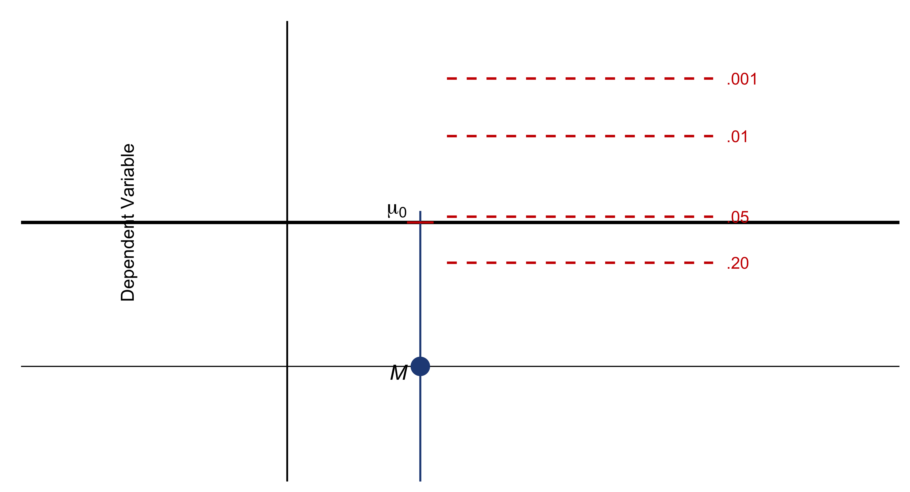
| Pen | Laptop | |||
|---|---|---|---|---|
| \(N\) | \(N_1\) | 34 | \(N_2\) | 31 |
| Mean | \(M_1\) | 8.81 | \(M_2\) | 14.52 |
| SD | \(s_1\) | 4.75 | \(s_2\) | 7.29 |
| MoE | \(\text{MoE}_1\) | 1.66 | \(\text{MoE}_2\) | 2.67 |
7.1 Determine how Figures 7.1 and 7.2 depict each value presented in Table 7.1. When approximating from the figures, do the values appear reasonable?
Now for the calculations. The difference itself is straightforward:
\[ (M_2 - M_1) = 14.52 - 8.81 = 5.71 \]
Our fundamental CI formula from Chapter 5 establishes that a CI is \([M - \text{MoE}, M + \text{MoE}]\). To compute the 95% CI on a single mean when \(\sigma\) is unknown, we employed:
\[ \text{MoE} = t_{.95}(df) \times s \times \left(\frac{1}{\sqrt{N}}\right) \tag{11.5}\]

\(t\) component, which makes it a 95% CI | Variability component | Sample size component
For the CI we require on our effect size, the difference, we need an analogous formula. I’ve identified three components in Equation 11.5 to facilitate explaining the CI on the difference. Let’s examine the three components.
The \(t\) component for the difference is \(t_{.95}(df)\), where each group contributes to \(df\), and consequently \(df\) for the difference between independent means is:
\[ df = (N_1 - 1) + (N_2 - 1) = (N_1 + N_2 - 2) \tag{11.6}\]
The variability component for the difference must reflect variability in both the Pen and Laptop populations, as estimated by our \(s_1\) and \(s_2\), which represent the SDs of the two groups. Table 7.1 indicates their values are 4.75 and 7.29 respectively. Our statistical model assumes that the two populations—the populations of Pen and Laptop scores—possess the same SD, which I’ll designate \(\sigma\). Equivalently, I can state the two populations have the same variance, \(\sigma^2\). This represents the third assumption of our model, the homogeneity of variance assumption. Frequently, though not invariably, it’s reasonable to make this assumption, and we’ll employ it here.
The subsequent step is to combine, or pool, \(s_1\) and \(s_2\) to calculate \(s_p\), the pooled SD, which constitutes our best estimate of \(\sigma\). Here’s the formula:
\[ s_p = \sqrt{\frac{(N_1 - 1)s_1^2 + (N_2 - 1)s_2^2}{N_1 + N_2 - 2}} \tag{11.7}\]
The group standard deviations, \(s_1\) and \(s_2\), measure the spread within each group. The pooled standard deviation, \(s_p\), represents a type of weighted average of \(s_1\) and \(s_2\), and therefore \(s_p\) is termed the pooled SD within groups. It’s the variability component we need for calculating the CI.
The sample size component for the difference is \(\sqrt{\frac{1}{N_1} + \frac{1}{N_2}}\), which reflects the sizes of both our Pen and Laptop samples, as we’d anticipate.
12 Chapter 12: Regression
In the previous chapter, we examined scatterplots and correlation coefficients as tools for describing relationships between two quantitative variables. A correlation coefficient conveniently summarizes both the strength and direction of a linear association. However, a correlation does not tell us how much one variable changes when the other changes. For that, we use regression analysis.
12.1 What Is a Regression Line?
A regression line is a straight line that models how a response variable (\(y\)) changes as an explanatory variable (\(x\)) changes. While a correlation measures association, a regression line allows for prediction.
For example, suppose we are interested in the relationship between education and earnings. The correlation coefficient tells us whether the two are positively or negatively associated, and how strongly. But if we want to know how much additional income is expected from one extra year of education, we use regression. A regression line lets us estimate the expected change in earnings for a one-unit increase in education.
12.2 The Idea of a “Best-Fitting” Line
A regression line provides the best-fitting straight line through a cloud of points in a scatterplot. It summarizes the linear relationship between two variables.
Consider a plot showing the relationship between a state’s median household income and the percentage of voters supporting Donald Trump. Some states (like Wyoming) may be far above or below the line. The regression line does not pass through every point but instead minimizes the overall distance between the observed data and the line itself.
This method is known as Ordinary Least Squares (OLS) regression. OLS determines the line that minimizes the sum of squared vertical deviations between the observed values (\(y_i\)) and the predicted values (\(\hat{y}_i\)):
\[ \sum (y_i - \hat{y}_i)^2 \]
Each vertical deviation (often shown as a red arrow) represents the residual or error for that observation. The regression algorithm adjusts the line so that the total of these squared residuals is as small as possible.
12.3 The Regression Equation
You may recall the general equation of a line from algebra:
\[ y = mx + b \]
In regression notation, this becomes:
\[ \hat{y} = a + bx \]
where:
- \(\hat{y}\) = the predicted value of \(y\)
- \(a\) = the intercept, or the predicted value of \(y\) when \(x = 0\)
- \(b\) = the slope, or the expected change in \(y\) for a one-unit increase in \(x\)
Interpretation of Coefficients
- The intercept (\(a\)) is the point at which the line crosses the \(y\)-axis.
- The slope (\(b\)) represents the rate of change: for each one-unit increase in \(x\), \(y\) is predicted to change by \(b\) units.
- If \(b = 0\), the line is horizontal, indicating no linear relationship between \(x\) and \(y\).
12.5 Interpreting the Intercept
The intercept \(a\) represents the predicted value of \(y\) when \(x = 0\). Sometimes this is meaningful—for example, predicting flight delays when outsourcing equals zero percent.
In other cases, such as predicting adult smoking rates when age = 0, it is not substantively interpretable. Always interpret the intercept only within the range of observed data.
12.6 Example: Airline Outsourcing and Flight Delays
Consider the regression equation:
\[ \hat{y} = 21.8 - 0.126x \]
where:
- \(y\) = percent of flights delayed
- \(x\) = percent of flights outsourced
Here, the intercept (21.8) indicates that when outsourcing equals zero, the predicted delay rate is 21.8%. The slope (\(-0.126\)) means that for each one-percentage-point increase in outsourcing, flight delays are predicted to decrease by 0.126 percentage points.
Example Prediction
If an airline outsources 75% of its flights:
\[ \hat{y} = 21.8 - 0.126(75) = 12.35 \]
The predicted delay rate is 12.35%, consistent with the direction and magnitude shown by the regression line.
12.7 The Coefficient of Determination: \(R^2\)
The \(R^2\) statistic measures how well the regression line explains the variation in \(y\). Formally, \(R^2\) is the fraction of variance in \(y\) explained by the regression:
\[ R^2 = \frac{\text{Explained Variation in } y}{\text{Total Variation in } y} \]
The correlation coefficient \(r\) ranges between –1 and 1; squaring it produces \(R^2\), which ranges from 0 to 1.
- \(R^2 = 1\): all points fall exactly on the line (perfect fit)
- \(R^2 = 0\): no linear relationship; \(x\) explains none of the variation in \(y\)
In the airline example, the correlation coefficient is \(r = -0.489\). Thus:
\[ R^2 = (-0.489)^2 = 0.238 \]
This means that approximately 24% of the variation in flight delay rates is explained by variation in outsourcing levels.
12.8 Common Misinterpretations of \(R^2\)
It is crucial to interpret \(R^2\) correctly.
A common mistake is to say:
“Outsourcing accounts for 24% of flight delays.”
The correct interpretation is:
“Variation in outsourcing explains 24% of the variation in flight delays.”
To clarify, consider an analogy with pizza prices:
- A plain cheese pizza costs $8.
- Each topping adds $0.20.
Toppings do not explain 100% of the price of a pizza—because even with zero toppings, the base price is $8.
However, variation in the number of toppings fully explains the variation in total cost.
In regression terms, this means:
Variation in \(x\) (toppings) explains 100% of the variation in \(y\) (price), just as variation in outsourcing explains 24% of the variation in delays.
#| label: fig-regression-ci-bands
#| fig-cap: "Regression line with 90% confidence intervals for fitted and predicted values."
#| fig-width: 11
#| fig-height: 7.2
#| dpi: 200
#| out-width: 100%
#| warning: false
#| message: false
suppressPackageStartupMessages({
library(ggplot2)
library(dplyr)
})
# Generate example data
set.seed(123)
n <- 100
waist_cm <- runif(n, 55, 125)
sqrt_vat <- -10 + 0.5 * waist_cm + rnorm(n, 0, 5)
df <- data.frame(waist_cm, sqrt_vat)
# Fit model
fit <- lm(sqrt_vat ~ waist_cm, data = df)
# Get predictions with confidence and prediction intervals
pred_data <- data.frame(waist_cm = seq(min(df$waist_cm), max(df$waist_cm), length.out = 200))
ci_fitted <- predict(fit, newdata = pred_data, interval = "confidence", level = 0.90)
ci_predicted <- predict(fit, newdata = pred_data, interval = "prediction", level = 0.90)
pred_data <- pred_data %>%
mutate(
fit = ci_fitted[, "fit"],
ci_lwr = ci_fitted[, "lwr"],
ci_upr = ci_fitted[, "upr"],
pred_lwr = ci_predicted[, "lwr"],
pred_upr = ci_predicted[, "upr"]
)
# Select 3 points to show CI bars
show_points <- c(20, 50, 80)
ci_bars <- pred_data[show_points, ]
# Create plot
ggplot(df, aes(x = waist_cm, y = sqrt_vat)) +
# Regression line
geom_line(data = pred_data, aes(y = fit), color = "black", linewidth = 1.2) +
geom_segment(aes(x = waist_cm, xend = waist_cm,
y = sqrt_vat, yend = predict(fit),
color = waist_cm),
linetype = "dashed", linewidth = 0.8, alpha = 0.9) +
scale_color_gradientn(colors = c("#FF0054", "#FFBD00", "#00E5FF", "#7B00FF", "#FF0054"),
guide = "none") +
geom_point(aes(fill = waist_cm), shape = 21, size = 1.5, color = "black", stroke = 1.8) +
scale_fill_gradientn(colors = c("#FF0054", "#FFBD00", "#00E5FF", "#7B00FF", "#FF0054"),
guide = "none") +
# 90% CI for predicted values (orange)
geom_segment(data = ci_bars,
aes(x = waist_cm, xend = waist_cm, y = pred_lwr, yend = pred_upr),
color = "orange", linewidth = 3, lineend = "round") +
# 90% CI for fitted values (blue)
geom_segment(data = ci_bars,
aes(x = waist_cm, xend = waist_cm, y = ci_lwr, yend = ci_upr),
color = "blue", linewidth = 3, lineend = "round") +
# Theme
theme_classic(base_size = 14) +
theme(
axis.title = element_text(size = 14),
axis.text = element_text(size = 12),
legend.position = c(0.2, 0.85),
legend.background = element_rect(fill = "white", color = "black"),
legend.title = element_blank()
) +
# Labels
labs(x = "waist_cm", y = "sqrt(vat)") +
# Find the biggest outlier (largest absolute residual)
{
residuals <- df$sqrt_vat - predict(fit)
outlier_idx <- which.max(abs(residuals))
outlier_x <- df$waist_cm[outlier_idx]
outlier_y <- df$sqrt_vat[outlier_idx]
outlier_yhat <- predict(fit, newdata = data.frame(waist_cm = outlier_x))
outlier_resid <- outlier_y - outlier_yhat
list(
# Triangle pointing to the outlier
annotate("segment",
x = outlier_x - 8, xend = outlier_x - 2,
y = outlier_y + 3, yend = outlier_y + 0.5,
arrow = arrow(type = "closed", length = unit(0.3, "cm")),
color = "#FF0054", linewidth = 1.2),
# Label showing the residual value
annotate("label",
x = outlier_x - 8, y = outlier_y + 4,
label = sprintf("Residual = %.1f\n(y - ŷ)", outlier_resid),
hjust = 1, vjust = 0,
size = 4, fontface = "bold",
fill = "#FF0054", color = "white",
label.padding = unit(0.5, "lines"))
)
} 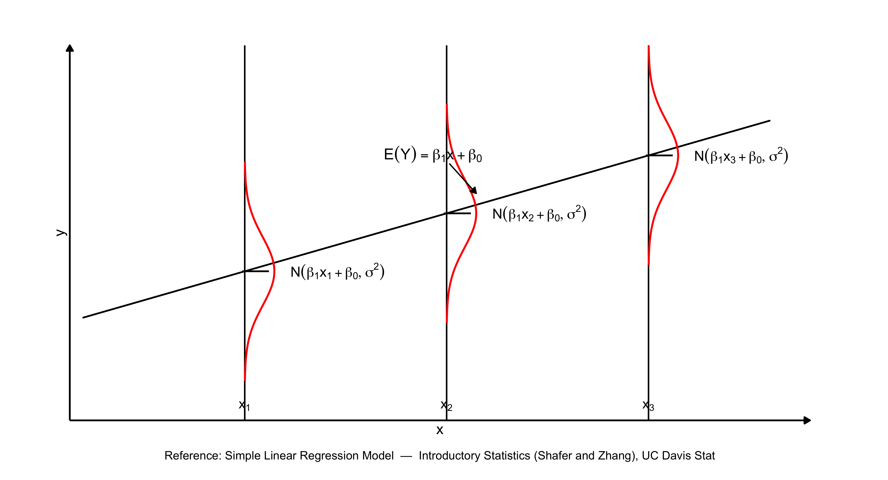
Few statistical ideas are as powerful and enduring as regression. From nineteenth-century studies of human height to modern analyses of inequality, elections, or climate change, regression has become the universal language for describing how one variable changes when another changes. It is at once a mathematical technique, a conceptual framework for explanation, and a bridge between data and theory. 1. What Regression Is At its core, regression is about relationships. It helps us answer questions such as: How does income change with education? How does voter turnout vary with local unemployment? How does CO₂ concentration affect temperature over time? Regression provides a way to quantify these relationships by fitting a mathematical function—usually a straight line—that best summarizes how a response variable changes accordingly.
Regression extends beyond correlation. A correlation coefficient only tells us that two variables move together and how strongly, but not how much change in one variable corresponds to change in the other. Regression quantifies that link. For example, suppose education and earnings are positively correlated. Regression lets us estimate how much additional income is associated with each additional year of schooling. The slope of the regression line becomes a concrete measure of marginal effect. Moreover, regression introduces directionality—we decide which variable is the explanatory (on the x-axis) and which is the response (on the y-axis). That decision reflects a theoretical claim about causal order, even if regression itself does not prove causation.
*The Principle of Least Squares
The power of regression lies in its method of fitting a line to data. The “best-fitting” line is not arbitrary; it is determined by a precise rule called the least squares criterion. Imagine a scatterplot of data points. Each point lies some distance above or below the line. These vertical distances—called residuals—represent prediction errors. Regression chooses the line that minimizes the sum of the squared residuals.
Why Regression Is Useful?
Regression is useful in at least three profound ways.
- Prediction Regression provides a tool for prediction. Once we estimate a relationship, we can forecast the likely value of y for any new value of x.
In social science, this means we can estimate, for instance, how voter turnout might change if unemployment rises by one percentage point, or how income inequality might shift with a change in taxation.
- Explanation
Regression helps identify which variables are associated with an outcome and by how much. In this way, it serves as a bridge between theory and data. A theoretical claim—say, that educational attainment increases earnings—translates into an empirical statement about the size and sign of a regression coefficient.
- Control and Comparison
In multiple regression, we can include several explanatory variables simultaneously, allowing us to examine the independent association of each while holding others constant. This capacity to “control for” confounding factors is what makes regression the backbone of modern social science. It approximates the logic of experimentation in observational data. 5. The Meaning of the Coefficients Each coefficient in a regression equation represents a slope—a marginal relationship between one explanatory variable and the outcome. The intercept gives a baseline; the slope tells the direction and magnitude of change. Yet interpretation always depends on units: a one-unit increase in x.x must correspond to a meaningful, measurable change (for example, one year of education, $1,000 of income, or one percentage point of unemployment). Regression’s power comes from translating those abstract numbers into substantive claims about the world.
suppressPackageStartupMessages({
library(ggplot2); library(dplyr); library(purrr); library(grid)
})
# ---- Parameters ----
b0 <- 1.1; b1 <- 0.62
sig <- 0.55
xpos <- c(1.1, 2.6, 4.1)
halfw <- 0.22
make_half_normal <- function(x0, mu, sig, halfw, n = 280) {
y <- seq(mu - 3.2*sig, mu + 3.2*sig, length.out = n)
d <- dnorm(y, mu, sig)
s <- halfw / max(d)
tibble(x = x0 + s*d, y = y)
}
xr <- c(min(xpos) - 1.2, max(xpos) + 0.9)
regdf <- tibble(x = seq(xr[1], xr[2], length.out = 400),
y = b0 + b1*x)
slices <- imap_dfr(xpos, \(x0, i) {
mu <- b0 + b1*x0
make_half_normal(x0, mu, sig, halfw) |>
mutate(slice = factor(i))
})
vlines <- tibble(x0 = xpos,
y0 = min(regdf$y) - 3.0*sig,
y1 = max(regdf$y) + 2.2*sig)
labsdf <- tibble(
x = xpos + halfw + 0.12,
y = b0 + b1*xpos,
lab = c("N(beta[1]*x[1] + beta[0], sigma^2)",
"N(beta[1]*x[2] + beta[0], sigma^2)",
"N(beta[1]*x[3] + beta[0], sigma^2)")
)
xlim <- c(xr[1] - 0.1, xr[2] + 0.3)
ylim <- range(vlines$y0, vlines$y1)
ggplot() +
theme_void(base_size = 14) +
# Axes with arrowheads
annotate("segment",
x = xlim[1], xend = xlim[2], y = ylim[1], yend = ylim[1],
linewidth = .8, arrow = arrow(type = "closed", length = unit(0.22,"cm"))) +
annotate("segment",
x = xlim[1], xend = xlim[1], y = ylim[1], yend = ylim[2],
linewidth = .8, arrow = arrow(type = "closed", length = unit(0.22,"cm"))) +
# Ticks/labels and axis titles
annotate("segment", x = xpos, xend = xpos, y = ylim[1], yend = ylim[1] + 0.09, linewidth=.6) +
annotate("text", x = xpos, y = ylim[1] + 0.23,
label = c("x[1]","x[2]","x[3]"), parse = TRUE, size = 4.6) +
annotate("text", x = mean(xlim), y = ylim[1] - 0.05, label = "x", vjust = 1, size = 5) +
annotate("text", x = xlim[1] - 0.08, y = mean(ylim), label = "y", angle = 90, size = 5) +
# Regression line (black)
geom_line(data = regdf, aes(x, y), linewidth = 0.8, lineend = "round") +
# Vertical guides (black)
geom_segment(data = vlines, aes(x = x0, xend = x0, y = y0, yend = y1), linewidth = 0.7) +
# Half-normals (RIGHT side) — now RED
geom_path(data = slices, aes(x, y, group = slice), linewidth = 0.9, color = "red") +
# Mean tick on each slice (black)
geom_segment(data = tibble(x0 = xpos, y0 = b0 + b1*xpos),
aes(x = x0 - 0.02, xend = x0 + 0.18, y = y0, yend = y0),
linewidth = 0.8) +
# N(·) labels
geom_text(data = labsdf,
aes(x = x, y = y, label = lab),
parse = TRUE, hjust = 0, vjust = 0.5, size = 4.8) +
# E(Y)=... label + arrow
annotate("text",
x = xpos[2] - 0.10, y = b0 + b1*xpos[2] + 0.95,
label = "E(Y) == beta[1]*x + beta[0]", parse = TRUE, size = 5.2) +
annotate("segment",
x = xpos[2] + 0.02, y = b0 + b1*xpos[2] + 0.80,
xend = xpos[2] + 0.22, yend = b0 + b1*xpos[2] + 0.32,
arrow = arrow(type = "closed", length = unit(0.22,"cm")),
linewidth = 0.6) +
# Reference note below the x-axis
annotate("text",
x = mean(xlim), y = ylim[1] - 0.56,
label = "Reference: Simple Linear Regression Model — Introductory Statistics (Shafer and Zhang), UC Davis Stat",
size = 4, hjust = 0.5) +
coord_cartesian(xlim = xlim, ylim = ylim, clip = "off") +
theme(plot.margin = margin(26, 40, 40, 32))
12.9 Summary
- A regression line predicts how \(y\) changes as \(x\) changes.
- The intercept (\(a\)) is the predicted value of \(y\) when \(x = 0\).
- The slope (\(b\)) indicates the predicted change in \(y\) for a one-unit change in \(x\).
- Residuals are the differences between observed and predicted values of \(y\).
- Ordinary Least Squares (OLS) estimates \(a\) and \(b\) by minimizing the sum of squared residuals.
- \(R^2\) indicates the proportion of variation in \(y\) explained by \(x\).
- Regression relationships are associative, not causal.
13 Chapter 13: Multivariate Regression
The preceding chapter examined how regression analysis models the connection between two variables: a dependent variable \(y\) and an independent variable \(x\). Through bivariate regression, we developed methods to quantify how changes in \(x\) correspond to changes in \(y\), and we measured the degree of association between these variables using the \(R^2\) statistic.
The social scientific outcomes rarely result from a single cause operating in isolation. As a result, we need to have an estimation machinery that allows us to include more than one independent variable. Consider earnings: educational attainment matters, but so do years of professional experience, regional labor markets, sectoral employment, and numerous additional considerations. Similarly, electoral participation reflects a confluence of factors including economic conditions, party system characteristics, resource mobilization efforts, population attributes, and the structural features of political institutions. Analyzing these multifaceted relationships requires multivariate regression—alternatively termed multiple regression—a framework that permits simultaneous examination of how a dependent variable relates to multiple independent variables.
This chapter introduces the theory and practice of multivariate regression. We will learn how to estimate, interpret, and test models with multiple predictors. We will also encounter matrix notation, a compact mathematical language that makes multivariate regression both elegant and computationally tractable.
13.1 Why Introduce Multiple Independent Variables?
Why should we include more than one predictor in a regression model? There are at least three compelling reasons:
1. Explanation: More is Better
From an explanatory perspective, social phenomena rarely have a single cause. If we want to understand variation in an outcome, we should account for the multiple factors that shape it. A richer model—one that includes several relevant predictors—provides a more complete and realistic explanation.
To illustrate, imagine we are investigating the generosity of welfare states, operationalized through a decommodification scale (which quantifies the extent to which social programs diminish citizens’ reliance on market participation for social reproduction). A specification that includes gross domestic production alone may account for a portion of cross-national variation in welfare provision. However, a theoretically richer specification would incorporate additional predictors: the organizational capacity of trade unions, the electoral strength of left-wing political parties, the demographic composition of the society, and path-dependent institutional inheritances from earlier periods of state formation. Each predictor represents a conceptually distinct mechanism through which welfare generosity may emerge.
2. Control: Holding Things Constant
One of the primary advantages of multiple regression is its capacity to account for potentially confounding factors. By incorporating several explanatory variables simultaneously, we can isolate the relationship between a focal predictor and the response variable while keeping other predictors fixed. Researchers often refer to this process as “partialling out” or “netting out” the influence of additional variables.
Consider the following empirical puzzle: wealthier nations typically exhibit more generous welfare systems. Does national affluence directly produce expansive social policies? Alternatively, perhaps economic prosperity coincides with robust organized labor, and it is union strength—rather than wealth per se—that drives welfare state development.
Multiple regression provides analytical leverage on this question. When we simultaneously include both GDP and unionization rates as predictors, we can estimate each variable’s distinct association with the outcome. The GDP coefficient now captures how welfare generosity varies with national income, with unionization held fixed. This statistical strategy mimics experimental control within observational research designs.
3. Specification: Removing Omitted Variables
A regression model is correctly specified when it includes all relevant predictors and excludes irrelevant ones. If we omit an important variable—one that is correlated both with the outcome and with an included predictor—our estimates will be biased. This problem is known as omitted variable bias.
Multivariate regression helps us address this problem by moving variables out of the error term \(e\) and into the model itself. By explicitly including relevant predictors, we reduce the risk that unobserved factors are distorting our estimates.
In short, multivariate regression is essential for explanation, control, and correct specification. It is the workhorse of empirical social science.
13.2 The Multivariate Regression Equation
The general form of a multivariate regression model with \(k\) predictors is:
\[ y = \beta_0 + \beta_1 x_1 + \beta_2 x_2 + \ldots + \beta_k x_k + e \]
where:
\(y\) is the response/outcome variable (also called the dependent variable)
\(x_1, x_2, \ldots, x_k\) are the explanatory variables (also called independent variables or predictors)
\(\beta_0\) is the intercept, representing the predicted value of \(y\) when all \(x\) variables equal zero
\(\beta_1, \beta_2, \ldots, \beta_k\) are the slope coefficients, each representing the expected change in \(y\) for a one-unit increase in the corresponding \(x\), holding all other variables constant
\(e\) is the error term, representing unexplained variation in \(y\)
Example: Economic Development and Welfare State Generosity
Suppose we believe that welfare state generosity (measured by a decommodification index) depends on two factors: economic development (measured by GDP per capita) and the political strength of social democratic parties (measured by the percentage of legislative seats held by left parties).
We can write this as:
\[ y = \beta_0 + \beta_1 x_1 + \beta_2 x_2 + e \]
where:
- \(y\) = decommodification index
- \(x_1\) = GDP per capita (in thousands of dollars)
- \(x_2\) = percentage of legislative/cabinet seats held by social democratic or labour parties
- \(e\) = error term
This model allows us to estimate the independent effect of economic development, controlling for left party strength, and the independent effect of left party strength, controlling for economic development.
13.3 Interpreting Multivariate Regression Coefficients
The key difference between bivariate and multivariate regression is that in multivariate regression, each coefficient represents a partial effect—the association between one predictor and the outcome, holding all other predictors constant.
Consider the model:
\[ y = \beta_0 + \beta_1 x_1 + \beta_2 x_2 + e \]
The coefficient \(\beta_1\) tells us: for a one-unit increase in \(x_1\), \(y\) is expected to change by \(\beta_1\) units, holding \(x_2\) constant.
Similarly, \(\beta_2\) tells us: for a one-unit increase in \(x_2\), \(y\) is expected to change by \(\beta_2\) units, holding \(x_1\) constant.
This “holding constant” language is crucial. It distinguishes the partial association (adjusting for other variables) from the marginal association (ignoring other variables).
Example Interpretation
Suppose we estimate the following model for 18 OECD countries:
\[ \hat{y} = 11.18 + 1.17 x_1 + 1.15 x_2 \]
where:
- \(y\) = decommodification index
- \(x_1\) = GDP per capita (in thousands of dollars)
- \(x_2\) = percentage of seats held by left parties
Interpretation and Discussion:
Intercept (\(\hat{\beta}_0 = 11.18\)): The baseline value of the decommodification index when GDP and left party representation both equal zero is 11.18. (Note that this value has limited practical interpretation since no observed countries fall at this baseline.)
GDP coefficient (\(\hat{\beta}_1 = 1.17\)): For each additional $1,000 in GDP per capita, the decommodification index rises by 1.17 points, on average, when controlling for left party representation.
Left party coefficient (\(\hat{\beta}_2 = 1.15\)): Each one-percentage-point gain in left party seats corresponds to a 1.15-point higher decommodification index, on average, when controlling for GDP.
13.4 Observe the precise terminology employed here: “rises by,” “corresponds to,” and “when controlling for.” This language emphasizes that our regression coefficients represent statistical relationships rather than established causal mechanisms.
13.5 Matrix Notation for Multivariate Regression
When working with multiple predictors, writing out each term separately becomes cumbersome. Matrix notation provides a compact and elegant way to express multivariate regression models. It also forms the basis for computational algorithms that estimate regression coefficients.
Why Matrices?
Suppose we have \(n\) observations and \(k\) predictors. We can write \(n\) separate regression equations:
\[ \begin{aligned} y_1 &= \beta_0 + \beta_1 x_{11} + \beta_2 x_{21} + \ldots + \beta_k x_{k1} + e_1 \\ y_2 &= \beta_0 + \beta_1 x_{12} + \beta_2 x_{22} + \ldots + \beta_k x_{k2} + e_2 \\ &\vdots \\ y_n &= \beta_0 + \beta_1 x_{1n} + \beta_2 x_{2n} + \ldots + \beta_k x_{kn} + e_n \end{aligned} \]
This is tedious. Matrix notation allows us to write all \(n\) equations as a single compact expression.
Terminology
Before proceeding, let’s discuss and review some basic matrix terminology:
A scalar is a single number (e.g., \(5\), \(-2.3\)).
A vector is a matrix with just one column (size \(n \times 1\)). Vectors are typically denoted with lowercase bold letters: \(\mathbf{y}\), \(\mathbf{x}\).
A matrix is a rectangular array of numbers with \(n\) rows and \(m\) columns (size \(n \times m\)). Matrices are typically denoted with uppercase bold letters: \(\mathbf{X}\), \(\mathbf{A}\).
The Matrix Form of the Regression Model
We can express the multivariate regression model in matrix form as:
\[ \mathbf{y} = \mathbf{X} \boldsymbol{\beta} + \mathbf{e} \]
where:
- \(\mathbf{y}\) is an \(n \times 1\) vector of responses:
\[ \mathbf{y} = \begin{pmatrix} y_1 \\ y_2 \\ \vdots \\ y_n \end{pmatrix} \]
- \(\mathbf{X}\) is an \(n \times (k+1)\) design matrix containing the values of the predictors (plus a column of 1’s for the intercept):
\[ \mathbf{X} = \begin{pmatrix} 1 & x_{11} & x_{21} & \cdots & x_{k1} \\ 1 & x_{12} & x_{22} & \cdots & x_{k2} \\ \vdots & \vdots & \vdots & \ddots & \vdots \\ 1 & x_{1n} & x_{2n} & \cdots & x_{kn} \end{pmatrix} \]
- \(\boldsymbol{\beta}\) is a \((k+1) \times 1\) vector of coefficients:
\[ \boldsymbol{\beta} = \begin{pmatrix} \beta_0 \\ \beta_1 \\ \beta_2 \\ \vdots \\ \beta_k \end{pmatrix} \]
- \(\mathbf{e}\) is an \(n \times 1\) vector of errors:
\[ \mathbf{e} = \begin{pmatrix} e_1 \\ e_2 \\ \vdots \\ e_n \end{pmatrix} \]
This single equation, \(\mathbf{y} = \mathbf{X} \boldsymbol{\beta} + \mathbf{e}\), encodes all \(n\) regression equations simultaneously.
13.6 Estimating Regression Coefficients with Matrices
In bivariate regression, we estimated the slope \(\hat{\beta}_1\) using the formula:
\[ \hat{\beta}_1 = \frac{\sum (x_i - \bar{x})(y_i - \bar{y})}{\sum (x_i - \bar{x})^2} \]
In multivariate regression, the formula generalizes to:
\[ \hat{\boldsymbol{\beta}} = (\mathbf{X}'\mathbf{X})^{-1} \mathbf{X}' \mathbf{y} \]
where:
- \(\mathbf{X}'\) is the transpose of \(\mathbf{X}\) (rows become columns, columns become rows)
- \((\mathbf{X}'\mathbf{X})^{-1}\) is the inverse of the matrix \(\mathbf{X}'\mathbf{X}\)
This formula is the matrix solution to the least squares problem. It minimizes the sum of squared residuals, just as in bivariate regression, but now accounts for multiple predictors simultaneously.
What Do These Matrix Operations Mean?
\(\mathbf{X}'\mathbf{X}\) is a \((k+1) \times (k+1)\) matrix that contains information about the variances and covariances among the predictors. It summarizes how the \(x\) variables relate to one another.
\(\mathbf{X}'\mathbf{y}\) is a \((k+1) \times 1\) vector that contains information about the covariances between each predictor and the response. When the data are “demeaned” (centered around their means), this is proportional to the covariance of \(y\) with each \(x\).
\((\mathbf{X}'\mathbf{X})^{-1}\) adjusts for the intercorrelations among the predictors. If the predictors are highly correlated with one another, this matrix reflects that dependence, which affects the precision of the coefficient estimates.
In short, the formula \(\hat{\boldsymbol{\beta}} = (\mathbf{X}'\mathbf{X})^{-1} \mathbf{X}' \mathbf{y}\) says:
The estimates of \(\boldsymbol{\beta}\) result from scaling the information about the association between the \(x\)’s and \(y\) by the information about the intercorrelation among the \(x\)’s.
This is conceptually similar to the bivariate case, but now extended to multiple dimensions.
13.7 Residuals, Sum of Squared Residuals, and Error Variance
Just as in bivariate regression, we compute residuals as the difference between observed and predicted values:
\[ \hat{\mathbf{e}} = \mathbf{y} - \mathbf{X} \hat{\boldsymbol{\beta}} \]
The sum of squared residuals (SSR) is:
\[ \text{SSR} = \hat{\mathbf{e}}' \hat{\mathbf{e}} = \sum_{i=1}^n \hat{e}_i^2 \]
The error variance is the SSR divided by the degrees of freedom:
\[ \hat{\sigma}^2 = \frac{\text{SSR}}{n - k - 1} = \frac{\hat{\mathbf{e}}' \hat{\mathbf{e}}}{n - k - 1} \]
where \(n\) is the sample size and \(k\) is the number of predictors (not including the intercept). The degrees of freedom are \(n - k - 1\) because we estimate \(k + 1\) parameters (\(\beta_0, \beta_1, \ldots, \beta_k\)).
Variance and Standard Errors of Coefficients
The variance-covariance matrix of \(\hat{\boldsymbol{\beta}}\) is:
\[ \text{Var}(\hat{\boldsymbol{\beta}}) = \hat{\sigma}^2 (\mathbf{X}'\mathbf{X})^{-1} \]
This is a \((k+1) \times (k+1)\) matrix. The diagonal elements give the variances of each coefficient; the off-diagonal elements give the covariances between pairs of coefficients.
The standard error of \(\hat{\beta}_j\) is:
\[ \text{SE}(\hat{\beta}_j) = \sqrt{\text{Var}(\hat{\beta}_j)} \]
These standard errors are used to construct confidence intervals and conduct hypothesis tests.
13.8 Comparing Bivariate and Multivariate Regression
The table below summarizes the key formulas for bivariate and multivariate regression:
| Quantity | Bivariate Regression | Multivariate Regression |
|---|---|---|
| Slope | \(\hat{\beta}_1 = \frac{\sum (x_i - \bar{x})(y_i - \bar{y})}{\sum (x_i - \bar{x})^2}\) | \(\hat{\boldsymbol{\beta}} = (\mathbf{X}'\mathbf{X})^{-1} \mathbf{X}' \mathbf{y}\) |
| Residuals | \(\hat{e}_i = y_i - \hat{y}_i\) | \(\hat{\mathbf{e}} = \mathbf{y} - \mathbf{X} \hat{\boldsymbol{\beta}}\) |
| SSR | \(\text{SSR} = \sum \hat{e}_i^2\) | \(\text{SSR} = \hat{\mathbf{e}}' \hat{\mathbf{e}}\) |
| Error Variance | \(\hat{\sigma}^2 = \frac{\sum \hat{e}_i^2}{n - 2}\) | \(\hat{\sigma}^2 = \frac{\hat{\mathbf{e}}' \hat{\mathbf{e}}}{n - k - 1}\) |
| Variance of \(\hat{\beta}\) | \(\text{Var}(\hat{\beta}_1) = \frac{\hat{\sigma}^2}{\sum (x_i - \bar{x})^2}\) | \(\text{Var}(\hat{\boldsymbol{\beta}}) = \hat{\sigma}^2 (\mathbf{X}'\mathbf{X})^{-1}\) |
| Standard Error | \(\text{SE}(\hat{\beta}_1) = \sqrt{\text{Var}(\hat{\beta}_1)}\) | \(\text{SE}(\hat{\beta}_j) = \sqrt{\text{Var}(\hat{\beta}_j)}\) |
The multivariate formulas reduce to the bivariate formulas when \(k = 1\) (one predictor).
13.9 Hypothesis Testing and Statistical Inference
Testing Individual Coefficients
In multivariate regression, we often test the null hypothesis:
\[ H_0: \beta_j = 0 \]
This hypothesis asks: “Is there a statistically significant association between \(x_j\) and \(y\), controlling for all other predictors?”
The \(t\)-statistic for testing this hypothesis is:
\[ t = \frac{\hat{\beta}_j - 0}{\text{SE}(\hat{\beta}_j)} = \frac{\hat{\beta}_j}{\text{SE}(\hat{\beta}_j)} \]
This statistic follows a \(t\)-distribution with \(n - k - 1\) degrees of freedom.
A large \(t\)-statistic (in absolute value) and a small \(p\)-value indicate that we can reject the null hypothesis. We conclude that \(\beta_j\) is statistically significantly different from zero.
Example: Testing Coefficients in the Welfare State Model
Suppose we estimate the following model:
\[ \hat{y} = 11.18 + 1.17 x_1 + 1.15 x_2 \]
and obtain the following standard errors and \(t\)-statistics:
| Variable | Coefficient | Standard Error | \(t\)-statistic | \(p\)-value |
|---|---|---|---|---|
| Intercept | 11.18 | 6.04 | 1.85 | 0.08 |
| GDP (\(x_1\)) | 1.17 | 0.57 | 2.04 | 0.06 |
| Left party (\(x_2\)) | 1.15 | 0.61 | 1.87 | 0.08 |
Interpretation:
The \(t\)-statistic for GDP is \(t = 1.17 / 0.57 = 2.04\), with a \(p\)-value of 0.06. At the conventional \(\alpha = 0.05\) level, this is marginally not significant. However, at \(\alpha = 0.10\), we would reject the null hypothesis and conclude that GDP is significantly associated with welfare state generosity, controlling for left party strength.
Similarly, the \(t\)-statistic for left party strength is \(t = 1.15 / 0.61 = 1.87\), with a \(p\)-value of 0.08. This is also marginally significant at \(\alpha = 0.10\).
These results suggest that both economic development and left party strength are independently associated with welfare state generosity, though the evidence is somewhat weak given the small sample size (\(n = 18\)).
13.10 Goodness-of-Fit: \(R^2\) and the \(F\)-Statistic
\(R^2\): Proportion of Variance Explained
Just as in bivariate regression, we can compute \(R^2\) to measure how well the model fits the data:
\[ R^2 = \frac{\text{RegSS}}{\text{SST}} = 1 - \frac{\text{SSR}}{\text{SST}} \]
where:
- SST (total sum of squares) = \(\sum (y_i - \bar{y})^2\)
- RegSS (regression sum of squares) = \(\sum (\hat{y}_i - \bar{y})^2\)
- SSR (sum of squared residuals) = \(\sum (y_i - \hat{y}_i)^2\)
\(R^2\) represents the proportion of variation in \(y\) explained by the model. It ranges from 0 (no explanatory power) to 1 (perfect fit).
Important: In multivariate regression, \(R^2\) will always increase as we add more predictors, even if those predictors have no real association with \(y\). For this reason, adjusted \(R^2\) is sometimes used to penalize model complexity:
\[ R^2_{\text{adj}} = 1 - \frac{\text{SSR} / (n - k - 1)}{\text{SST} / (n - 1)} \]
The \(F\)-Statistic: Testing Overall Model Significance
The \(F\)-statistic tests the null hypothesis that all slope coefficients are zero:
\[ H_0: \beta_1 = \beta_2 = \ldots = \beta_k = 0 \]
The \(F\)-statistic is computed as:
\[ F = \frac{\text{RegSS} / k}{\text{SSR} / (n - k - 1)} \]
This statistic follows an \(F\)-distribution with \(k\) numerator degrees of freedom and \(n - k - 1\) denominator degrees of freedom.
A large \(F\)-statistic and a small \(p\)-value indicate that the model as a whole is statistically significant—that is, at least one of the predictors is significantly associated with the outcome.
Example: Welfare State Model
In our welfare state model, suppose:
- \(R^2 = 0.45\)
- \(F = 6.07\) on 2 and 15 degrees of freedom, \(p = 0.01\)
Interpretation:
The model explains 45% of the variation in welfare state generosity across the 18 countries.
The \(F\)-statistic is significant at \(p = 0.01\), indicating that the model as a whole is statistically significant. At least one of the predictors (GDP or left party strength) is significantly associated with the outcome.
13.11 Model Assumptions
Multivariate regression relies on the same assumptions as bivariate regression. Violations of these assumptions can lead to biased estimates, incorrect standard errors, or invalid hypothesis tests.
1. Correct Specification
The model must be correctly specified, meaning:
- Causality runs in one direction: from the independent variables to the dependent variable (no reverse causation).
- The functional form is linear: the relationship between \(y\) and each \(x\) is linear (or has been transformed to be linear).
- No omitted variables: all relevant predictors are included. Omitting an important variable that is correlated with both \(y\) and an included \(x\) leads to omitted variable bias.
2. Independent and Normally Distributed Errors
The errors \(e_i\) should be independently and normally distributed:
\[ e_i \sim N(0, \sigma^2) \]
This assumption ensures that:
- The errors are random and do not follow any systematic pattern.
- Hypothesis tests and confidence intervals are valid.
3. Zero Mean of Errors
The expected value of the errors is zero:
\[ E(e_i) = 0 \]
In practice, this is automatically satisfied by including an intercept in the model.
4. Constant Variance (Homoscedasticity)
The variance of the errors is constant across all values of the predictors:
\[ \text{Var}(e_i) = \sigma^2 \quad \text{for all } i \]
If the variance changes with \(x\) (a problem called heteroscedasticity), standard errors will be incorrect, leading to invalid hypothesis tests.
13.12 Example: Gender and Time for Sleep
To illustrate multivariate regression in practice, consider a study by Burgard and Ailshire (2013) published in the American Sociological Review. The authors were interested in how gender combines with employment, life course stage, and family caregiving obligations to affect time for sleep.
They estimated a regression model of the form:
\[ y = \mathbf{X} \boldsymbol{\beta} + e \]
where:
- \(y\) = self-reported wellbeing/happiness
- \(\mathbf{X}\) = a matrix of covariates including:
- Gender (female vs. male)
- Employment status (employed vs. not employed)
- Work hours (if employed)
- Life course stage (young adult, midlife, older adult)
- Parental status (children in household vs. not)
- Leisure time
- Demographic controls (age, education, race/ethnicity, marital status, etc.)
The key questions were:
How do interrelated causal factors—such as gender, work, family obligations, and life course—jointly influence wellbeing?
What happens to the effect of one covariate (e.g., gender or life course stage) when another (e.g., employment status) is added?
By including multiple predictors, the authors could estimate the independent association of each factor, controlling for the others. For example:
The gender coefficient reveals the difference in sleep duration between males and females, while controlling for work status, hours worked, caregiving responsibilities, and additional covariates.
The employment status coefficient captures the variation in sleep time between those who are employed and those who are not, while controlling for gender, stage in the life course, and other variables.
This multivariate approach enabled the researchers to separate the intertwined effects on sleep patterns and to determine which variables exhibited the most substantial independent relationships with the outcome.
13.13 Worked Example: Welfare State Generosity Revisited
Let’s walk through a complete example using simulated data to illustrate the key concepts.
suppressPackageStartupMessages({
library(ggplot2)
library(dplyr)
library(broom)
})
# Simulate data for 18 OECD countries
set.seed(123)
n <- 18
# Generate predictors
gdp <- runif(n, 13, 39.1) # GDP per capita (thousands)
left_party <- runif(n, 5.2, 16) # % seats held by left parties
# Generate outcome with some noise
decommodi <- 11 + 1.2 * gdp + 1.1 * left_party + rnorm(n, 0, 5)
# Create data frame
welfare_data <- data.frame(
country = paste0("Country", 1:n),
decommodification = decommodi,
gdp = gdp,
left_party = left_party
)
# Fit bivariate model (GDP only)
model1 <- lm(decommodification ~ gdp, data = welfare_data)
# Fit multivariate model (GDP + left party)
model2 <- lm(decommodification ~ gdp + left_party, data = welfare_data)
# Display results
cat("Bivariate Model (GDP only):\n")Bivariate Model (GDP only):summary(model1)
Call:
lm(formula = decommodification ~ gdp, data = welfare_data)
Residuals:
Min 1Q Median 3Q Max
-7.6588 -2.6720 -0.1316 2.6330 8.1796
Coefficients:
Estimate Std. Error t value Pr(>|t|)
(Intercept) 28.7050 3.5695 8.042 5.18e-07 ***
gdp 1.0267 0.1264 8.123 4.54e-07 ***
---
Signif. codes: 0 '***' 0.001 '**' 0.01 '*' 0.05 '.' 0.1 ' ' 1
Residual standard error: 4.24 on 16 degrees of freedom
Multiple R-squared: 0.8049, Adjusted R-squared: 0.7927
F-statistic: 65.99 on 1 and 16 DF, p-value: 4.543e-07cat("\n\nMultivariate Model (GDP + Left Party):\n")
Multivariate Model (GDP + Left Party):summary(model2)
Call:
lm(formula = decommodification ~ gdp + left_party, data = welfare_data)
Residuals:
Min 1Q Median 3Q Max
-5.910 -2.834 0.312 2.262 7.417
Coefficients:
Estimate Std. Error t value Pr(>|t|)
(Intercept) 22.4093 4.6270 4.843 0.000215 ***
gdp 0.9903 0.1182 8.377 4.86e-07 ***
left_party 0.6082 0.3136 1.939 0.071548 .
---
Signif. codes: 0 '***' 0.001 '**' 0.01 '*' 0.05 '.' 0.1 ' ' 1
Residual standard error: 3.916 on 15 degrees of freedom
Multiple R-squared: 0.844, Adjusted R-squared: 0.8232
F-statistic: 40.57 on 2 and 15 DF, p-value: 8.895e-07Comparing the Models
Notice what happens when we add left_party to the model:
- The coefficient on
gdpmay change (either increase or decrease), reflecting the fact that we are now controlling for left party strength. - The standard errors may change, affecting the \(t\)-statistics and \(p\)-values.
- \(R^2\) increases, indicating that the multivariate model explains more variation in welfare state generosity.
- The \(F\)-statistic tests whether the model as a whole is significant.
Visualizing the Multivariate Model
While we cannot easily plot a three-dimensional relationship, we can visualize the partial effects by plotting the relationship between each predictor and the outcome, holding the other predictors at their mean values.
# Create prediction grids
gdp_grid <- data.frame(
gdp = seq(min(welfare_data$gdp), max(welfare_data$gdp), length.out = 100),
left_party = mean(welfare_data$left_party)
)
left_grid <- data.frame(
gdp = mean(welfare_data$gdp),
left_party = seq(min(welfare_data$left_party), max(welfare_data$left_party), length.out = 100)
)
# Generate predictions
gdp_grid$predicted <- predict(model2, newdata = gdp_grid)
left_grid$predicted <- predict(model2, newdata = left_grid)
# Plot
p1 <- ggplot(welfare_data, aes(x = gdp, y = decommodification)) +
geom_point(size = 3, color = "steelblue", alpha = 0.7) +
geom_line(data = gdp_grid, aes(y = predicted),
color = "darkred", linewidth = 1.2) +
labs(
title = "Partial Effect of GDP",
subtitle = "Holding left party strength constant",
x = "GDP per capita (thousands)",
y = "Decommodification Index"
) +
theme_minimal(base_size = 13)
p2 <- ggplot(welfare_data, aes(x = left_party, y = decommodification)) +
geom_point(size = 3, color = "forestgreen", alpha = 0.7) +
geom_line(data = left_grid, aes(y = predicted),
color = "darkred", linewidth = 1.2) +
labs(
title = "Partial Effect of Left Party",
subtitle = "Holding GDP constant",
x = "% Seats Held by Left Parties",
y = "Decommodification Index"
) +
theme_minimal(base_size = 13)
# Arrange side by side
gridExtra::grid.arrange(p1, p2, ncol = 2)These plots show the partial relationship between each predictor and the outcome. The slope of each line represents the corresponding regression coefficient.
13.14 Understanding Matrix Operations
For those interested in the computational details, here is a brief primer on the matrix operations used in multivariate regression.
Addition and Subtraction
Matrices of the same dimensions can be added or subtracted element-wise:
\[ \begin{pmatrix} 3 & -2 & 7 \\ 4 & 1 & -5 \end{pmatrix} + \begin{pmatrix} 2 & 6 & -1 \\ -3 & 4 & 8 \end{pmatrix} = \begin{pmatrix} 5 & 4 & 6 \\ 1 & 5 & 3 \end{pmatrix} \]
Multiplication
To multiply two matrices, the number of columns in the first matrix must equal the number of rows in the second. The resulting matrix has dimensions determined by the outer dimensions.
Example: Example:
\[ \begin{pmatrix} 3 & -1 \\ 2 & 4 \end{pmatrix} \begin{pmatrix} 5 & 2 & -3 \\ 1 & -2 & 4 \end{pmatrix} = \begin{pmatrix} 3(5) + (-1)(1) & 3(2) + (-1)(-2) & 3(-3) + (-1)(4) \\ 2(5) + 4(1) & 2(2) + 4(-2) & 2(-3) + 4(4) \end{pmatrix} \]
\[ = \begin{pmatrix} 14 & 8 & -13 \\ 14 & -4 & 10 \end{pmatrix} \]
\[ = \begin{pmatrix} 11 & 0 & 21 \\ -1 & 13 & -9 \end{pmatrix} \]
Transposition
The transpose of a matrix \(\mathbf{A}\), denoted \(\mathbf{A}'\), is obtained by flipping rows and columns:
\[ \mathbf{A} = \begin{pmatrix} 6 & -3 \\ 2 & 5 \\ -1 & 4 \end{pmatrix} \quad \Rightarrow \quad \mathbf{A}' = \begin{pmatrix} 6 & 2 & -1 \\ -3 & 5 & 4 \end{pmatrix} \]
Matrix Inverse
The inverse of a matrix \(\mathbf{A}\), denoted \(\mathbf{A}^{-1}\), satisfies:
\[ \mathbf{A} \mathbf{A}^{-1} = \mathbf{A}^{-1} \mathbf{A} = \mathbf{I} \]
where \(\mathbf{I}\) is the identity matrix (a square matrix with 1’s on the diagonal and 0’s elsewhere).
For a \(2 \times 2\) matrix:
\[ \mathbf{A} = \begin{pmatrix} a & b \\ c & d \end{pmatrix} \]
the inverse (if it exists) is:
\[ \mathbf{A}^{-1} = \frac{1}{ad - bc} \begin{pmatrix} d & -b \\ -c & a \end{pmatrix} \]
Example:
\[ \mathbf{A} = \begin{pmatrix} 3 & 4 \\ 2 & 3 \end{pmatrix} \quad \Rightarrow \quad \mathbf{A}^{-1} = \frac{1}{3(3) - 4(2)} \begin{pmatrix} 3 & -4 \\ -2 & 3 \end{pmatrix} = \frac{1}{1} \begin{pmatrix} 3 & -4 \\ -2 & 3 \end{pmatrix} = \begin{pmatrix} 3 & -4 \\ -2 & 3 \end{pmatrix} \]
(since \(3(3) - 4(2) = 9 - 8 = 1\)).
(since \(2(-7) - 5(-3) = -14 + 15 = 1\)).
13.15 Summary
Multivariate regression extends the logic of bivariate regression to multiple predictors, allowing us to estimate the independent association of each variable with the outcome while controlling for others. This chapter introduced:
- The multivariate regression equation: \(y = \beta_0 + \beta_1 x_1 + \beta_2 x_2 + \ldots + \beta_k x_k + e\)
- Interpretation of coefficients: each \(\beta_j\) represents the expected change in \(y\) for a one-unit increase in \(x_j\), holding all other variables constant
- Matrix notation: \(\mathbf{y} = \mathbf{X} \boldsymbol{\beta} + \mathbf{e}\), which provides a compact and elegant way to express multivariate models
- Estimation: \(\hat{\boldsymbol{\beta}} = (\mathbf{X}'\mathbf{X})^{-1} \mathbf{X}' \mathbf{y}\), the matrix solution to the least squares problem
- Inference: hypothesis tests for individual coefficients using \(t\)-statistics, and overall model significance using the \(F\)-statistic
- Goodness-of-fit: \(R^2\) measures the proportion of variance explained by the model
- Model assumptions: correct specification, independent and normally distributed errors, zero mean, constant variance, and exogeneity
Multivariate regression is the foundation of modern empirical social science. It allows us to disentangle complex, overlapping influences and to estimate causal effects in observational data. However, regression is only as good as the assumptions it rests on. Careful attention to specification, measurement, and diagnostics is essential for valid inference.
13.16 Further Reading
Fox, J. (2016). Applied Regression Analysis and Generalized Linear Models (3rd ed.). Sage.
Gelman, A., & Hill, J. (2007). Data Analysis Using Regression and Multilevel/Hierarchical Models. Cambridge University Press.
Wooldridge, J. M. (2020). Introductory Econometrics: A Modern Approach (7th ed.). Cengage Learning.
My thanks to Chelsey Green at the University of Wisconsin-Madison’s Statistics Department for sharing some of her lecture materials with me.